1
NNT : 2016SACLX080
Thèse de doctorat
de l’Université Paris-Saclay
préparée à l’École Polytechnique et au CEA
Ecole doctorale n◦573
INTERFACES: approches interdisciplinaires, fondements,
applications et innovation
Spécialité de doctorat : Biologie
par
Mme Karen Druart
Défis algorithmiques pour les simulations biomoléculaires
et la conception de protéines
Thèse présentée et soutenue à la Maison de la Simulation, CEA Saclay, le 5 décembre 2016.
Composition du Jury :
Mme. Anne-Claude Camproux Professeur
(Rapporteur)
Université Paris Diderot
M.
Juan Cortes
Directeur de recherche
(Rapporteur)
Université de Toulouse
Mme
Annick Dejaegere
Professeur
(Présidente)
Université de Strasbourg
M.
Yann Ponty
Chargé de recherche
(Examinateur)
Université Paris Saclay
M.
Edouard Audit
Directeur de recherche
(Directeur de thèse)
CEA
M.
Thomas Simonson
Professeur
(Directeur de thèse)
École Polytechnique
Remerciements
Le travail d’une thèse est le travail de trois longues années, qui n’aurait été possible
sans l’aide et le soutient de mon entourage, tant professionnel que personnel. Je vais
profiter de ces quelques lignes pour remercier ces personnes qui ont contribué de près ou
de loin à cette partie de ma vie.
Tout d’abord, je tiens à remercier les membres du jury, Anne-Claude Camproux, Juan
Cortes, Annick Dejaegere et Yann Ponty, d’avoir accepté de lire ce manuscrit et d’évaluer
mes travaux de thèse. Chacun de vos domaines ont permis de mettre en relief chaque
facette de ma thèse. Je remercie également Yves Mechulam, directeur du Laboratoire de
Biochimie, d’avoir accepté ma présence, parfois tardive, au sein du laboratoire et d’avoir
mis à ma disposition les outils nécessaires pour réaliser au mieux ces recherches. Merci au
CEA et à l’IDEX d’avoir financé cette thèse.
Ensuite, je tiens à remercier Thomas Simonson qui a majoritairement encadré cette
thèse. Je le remercie pour sa disponibilité, son accompagnement et la confiance qu’il
m’a accordé au cours de ces travaux de recherche. Il a été présent à tout moment pour
discuter des différents problèmes rencontrés et a été à l’écoute de mes propositions. Il
m’a permis de nombreuses fois de prendre du recul sur mes travaux et d’élargir ma vision
scientifique. Ceci a permis d’ajouter de nouvelles expériences, rendant l’ensemble de mes
travaux cohérent. Aussi, je le remercie sincèrement pour sa présence lors de la rédaction
de ce manuscrit, d’avoir conservé mes idées à travers les nombreuses corrections qu’il a
proposé. Il a ainsi rendu ce manuscrit plus fluide et plus agréable à lire.
Je remercie mon second directeur de thèse Edouard Audit qui a permis cette collabora-
tion entre la Maison de la Simulation et le Laboratoire de Biochimie. Cette collaboration
a donné une dimension pluridisciplinaire à ma thèse. Je le remercie pour sa présence aux
i
réunions, où il a donné son point de vue critique sur chaque point de ma thèse. Ceci a
remis en question certains de mes résultats et de faire naître de nouvelles hypothèses,
étoffant ainsi mes travaux.
Je remercie également Julien Bigot pour sa participation active à ma thèse. Il a été
présent au cours de ces trois années, où il m’a appris à affiner mes résultats, à orga-
niser une démarche scientifique et à aller au-delà de mes limites. Je le remercie pour
son aide, notamment en informatique, ce qui m’a permis de découvrir le monde de la
parallélisation, des multi-threads et des speed-up. Je le remercie aussi pour sa présence
extra-professionnelle, surtout notamment les petits séjours en Ardèche avec nos collègues,
qui m’ont aéré l’esprit chaque été !
Enfin, je voudrais remercier mes collaborateurs de l’IDRIS, Isabelle Dupays et Laurent
Leger, qui ont mis en place de la parallélisation, ainsi que Matthieu Haefele de la MDLS
qui a participé à la communication XPLOR/proteus.
Je remercie mes collègues de mes deux laboratoires. Tout d’abord, je tiens à remercier
tous mes collègues de BIOC et l’équipe de Bioinfo pour leur soutient. Plus particuliè-
rement, je tiens à remercier Clara pour ses longs chemins sinueux pour aller manger,
Pierre-Damien pour les soirées travaux/apéros/prêt-de-maison, Nicolas pour les soirées
apéros/concerts-classiques et de m’avoir tourné le dos pendant 3 ans (et demi avec ton
stage), Zoltan pour la découverte de la Dobos torta et de tes talents de cuisinier, Claire
pour ta joie de vivre, Savvas pour la maturité scientifique et personnelle que tu as pu
m’apporter, Mélanie pour ta disponibilité dans ton bureau et les multiples bavardages
girly, Thomas G. pour toutes les discussions scientifiques qu’on a pu aborder, David pour
les remplacements de disques durs brûlés et les discussions Proteus, Titine pour ta bonne
humeur et la découverte de jeux vidéos, Michou pour ta gentillesse, Pierre pour ta disponi-
bilité lorsque j’avais des questions sur les analyses expérimentales, Michel pour tes blagues
très drôles (la dernière en date : ribosome/ribos-“femme”), Marc D. pour nos discussions
arts et techniques, ainsi que Sylvain, Francesco, Mimi, Marc G., Emma, Alexey, les Pas-
caux, Guillaume, Catherine, Cédric, Gaby, Clément, Aurianne, Etienne, Régis, Giuliano,
ii
Jérôme, Nhan, Amlam, Ditipriya, qui ont chacun apporté une touche personnelle dans la
vie quotidienne du laboratoire.
Je remercie également mes collègues de la MDLS, que j’ai pu côtoyer, avec qui j’ai
partagé des moments importants de la thèse (sacrées Journées des Thèses), des soirées, ou
bien juste un café : Julien B., Ralitsa, Maxime, Pascal, Seb, Thibault, Valérie, Frédéric,
Julien D., Florence, Mohamed, Pierre-Elliott, Philippe, Lu, Thomas, Matthieu, Adeline,
Daniel, Michel, Pierre, Samuel, Martial, Mathieu, Pascal, Fabien, Rehan, Esra, Giorgio.
Plus personnellement, je voudrais remercier Gautier Moroy, qui a été mon responsable
de stage de M1, puis mon tuteur de thèse. Je le remercie pour son soutient, et sa disponi-
bilité pour discuter des différents problèmes rencontrés, de m’avoir aidé à tenir bon lors de
l’été 2012. Je voudrais remercier mes acolytes de l’association 2AEM-ISDD : Véronique,
Mélaine, Grace et Answald. Merci pour cette expérience sans fin... Je voudrais remercier
mes amis qui m’ont soutenu ces dernières années : Mélaine (encore !) pour le soutient
intense que tu m’as apporté, ta joie, ta bonne humeur, pour le partage de la place “major
de promo”, de m’avoir initié aux joies du festival (à dormir dans une tente glacée), et
pour ces quelques jours de vacances à la plage ; Inès pour ton intégrité et ton don de
savoir rassurer et apaiser les gens ; Alexandre pour tes précieux conseils scientifiques et
associatifs ; Julien C. pour le partage d’expérience (alors cette thèse ?) ; Laura, Lionel et
Nicolas C. pour votre bonne humeur et ces voyages à travers la France !
Enfin, je voudrais remercier ma famille, qui sans eux, je ne serais pas arrivée jusque
là. Tout d’abord, je voudrais remercier les membres de ma famille qui sont loin mais tout
de même présents : Simone et Jean-Claude, Monique, Myriam et Laurent. Merci pour
tout ! Mes frères et soeurs : Sandy, Olivia, Nicolas et Louise, qui ont suivi les péripéties
à distance mais qui ne s’en sont pas moins senti impliqués. Un petit plus pour ma petite
soeur qui découvre au lycée l’ADN, la transcription et la traduction des protéines. Elle
a pu saisir malgré son jeune âge l’intérêt de ma thèse et nous avons pu discuter science
plusieurs heures. C’est un peu grâce à elle que j’ai appris à vulgariser mes travaux. Je
remercie énormément mon papa qui m’a soutenu, encouragé et conseillé toutes ces années
d’études et qui m’a donné la force d’aller aussi loin. Et pour finir, je voudrais remercier mon
iii
compagnon David, qui m’a supporté ces derniers mois. Les gens qui me connaissent savent
que ce fut une tâche ardue. Mais il y est parvenu ! Et je le remercie pour sa compréhension
sur mes horaires tardives, mon implication dans la rédaction de ce mémoire et sur la
préparation de ma soutenance. Et merci d’avoir subit mes répétitions de soutenance.
Merci à tous...
iv
À Maman
v
vi
Table des matières
Liste des figures
xi
Liste des tableaux
xv
Abréviations
xvii
Introduction
1
1 Dessin Computationnel de Protéine
5
1.1 Les succès du dessin de protéine . . . . . . . . . . . . . . . . . . . . . . . .
6
1.1.1 Dessin de protéine seule . . . . . . . . . . . . . . . . . . . . . . . .
6
1.1.2 Dessin d’interaction protéine-ligand . . . . . . . . . . . . . . . . . .
8
1.1.3 Dessin d’interaction protéine-peptide . . . . . . . . . . . . . . . . . 10
1.1.4 Dessin d’interaction protéine-protéine . . . . . . . . . . . . . . . . . 10
1.1.5 Dessin d’interaction protéine-ADN/ARN . . . . . . . . . . . . . . . 11
1.2 Modélisation d’une protéine et de son espace conformationnel . . . . . . . 11
1.2.1 Modélisation de l’état déplié . . . . . . . . . . . . . . . . . . . . . . 12
1.2.2 Modélisation des chaînes latérales . . . . . . . . . . . . . . . . . . . 13
1.2.3 Modélisation du squelette de la protéine . . . . . . . . . . . . . . . 14
1.3 Fonction d’énergie pour évaluer une conformation . . . . . . . . . . . . . . 18
1.3.1 Fonction d’énergie classique de mécanique moléculaire . . . . . . . . 19
1.3.1.1
Énergie d’interaction liée . . . . . . . . . . . . . . . . . . . 19
1.3.1.2
Énergie d’interaction non liées . . . . . . . . . . . . . . . . 20
1.3.1.3
Modélisation implicite du solvant pour le CPD . . . . . . 21
vii
Table des matières
1.3.2 Fonction d’énergie décomposable par paires pour le CPD . . . . . . 24
1.4 Méthodes d’échantillonnage . . . . . . . . . . . . . . . . . . . . . . . . . . 25
1.4.1 Algorithmes stochastiques ou heuristiques . . . . . . . . . . . . . . 26
1.4.2 Algorithmes déterministes ou exactes . . . . . . . . . . . . . . . . . 27
1.5 Principaux programmes de CPD . . . . . . . . . . . . . . . . . . . . . . . . 28
1.5.1 ORBIT . . . . . . . . . . . . . . . . . . . . . . . . . . . . . . . . . 29
1.5.2 Toulbar2 . . . . . . . . . . . . . . . . . . . . . . . . . . . . . . . . . 29
1.5.3 PocketOptimizer . . . . . . . . . . . . . . . . . . . . . . . . . . . . 29
1.5.4 Proteus . . . . . . . . . . . . . . . . . . . . . . . . . . . . . . . . . 30
1.5.5 FASTER . . . . . . . . . . . . . . . . . . . . . . . . . . . . . . . . . 30
1.5.6 OSPREY . . . . . . . . . . . . . . . . . . . . . . . . . . . . . . . . 30
1.5.7 Rosetta . . . . . . . . . . . . . . . . . . . . . . . . . . . . . . . . . 31
2 De la mécanique statistique à l’échantillonnage des protéines : implé-
mentation dans Proteus
35
2.1 Les postulats issus de la mécanique statistique . . . . . . . . . . . . . . . . 35
2.2 Échantillonnage Monte Carlo selon la distribution de Boltzmann . . . . . . 39
2.3 Concepts liés au CPD . . . . . . . . . . . . . . . . . . . . . . . . . . . . . 42
2.3.1 Énergie de l’état déplié et mutation . . . . . . . . . . . . . . . . . . 42
2.3.2 Fonction d’énergie décomposable par paires . . . . . . . . . . . . . 43
2.3.3 Notion de matrice d’énergie . . . . . . . . . . . . . . . . . . . . . . 43
2.3.4 Le logiciel Proteus . . . . . . . . . . . . . . . . . . . . . . . . . . . 44
3 Mise en oeuvre du multi-squelettes avec un mouvement hybride
49
3.1 Problème et enjeux des mouvements de squelette . . . . . . . . . . . . . . 49
3.2 Présentation du mouvement hybride . . . . . . . . . . . . . . . . . . . . . . 52
3.2.1 Théorie du mouvement hybride . . . . . . . . . . . . . . . . . . . . 52
3.2.2 Approximation “mono-chemin” ou SPA . . . . . . . . . . . . . . . . 57
3.2.3 Approximation des “chemins permutés” ou PPA . . . . . . . . . . . 58
3.2.4 Optimisation des temps de simulation avec PPA . . . . . . . . . . . 60
3.2.5 Discussion et conclusion . . . . . . . . . . . . . . . . . . . . . . . . 64
viii
Table des matières
3.3 Mise en œuvre des simulations multi-squelettes . . . . . . . . . . . . . . . . 65
3.3.1 Concepts liés aux simulations multi-squelettes . . . . . . . . . . . . 66
3.3.1.1
Parties fixes et mobiles . . . . . . . . . . . . . . . . . . . . 66
3.3.1.2
Restructuration de la matrice d’énergie . . . . . . . . . . . 67
3.3.1.3
Échange de squelettes au cours de la simulation . . . . . . 69
3.3.1.4
Évolution rotamérique simultanée sur tous les squelettes . 69
3.3.1.5
Énergie intrinsèque des squelettes . . . . . . . . . . . . . . 70
3.3.2 Exemple détaillé de simulation multi-squelettes . . . . . . . . . . . 71
3.4 Conclusion . . . . . . . . . . . . . . . . . . . . . . . . . . . . . . . . . . . . 76
4 Validation de l’approximation PPA et comparaison avec SPA
77
4.1 Systèmes protéiques d’étude : les domaines SH2 et SH3 . . . . . . . . . . . 78
4.2 Matériels et méthodes . . . . . . . . . . . . . . . . . . . . . . . . . . . . . 79
4.2.1 Génération des bibliothèques de squelettes . . . . . . . . . . . . . . 79
4.2.2 Génération des matrices d’énergie . . . . . . . . . . . . . . . . . . . 81
4.2.3 Estimation des différences d’énergies libres entre les squelettes . . . 81
4.2.3.1
Estimation à partir des populations des différents squelettes 82
4.2.3.2
Estimation à partir de la titration des squelettes . . . . . 82
4.2.3.3
Estimation à partir de la méthode de métadynamique . . 83
4.2.4 Utilisation de cycles thermodynamiques . . . . . . . . . . . . . . . . 84
4.3 Validation de l’approximation PPA . . . . . . . . . . . . . . . . . . . . . . 85
4.3.1 Étude de la relaxation rotamérique . . . . . . . . . . . . . . . . . . 85
4.3.2 Choix des paramètres optimaux . . . . . . . . . . . . . . . . . . . . 86
4.3.2.1
Influence de la longueur de relaxation et du nombre de
chemins permutés sur les populations de squelette . . . . . 88
4.3.2.2
Influence de la longueur de relaxation sur le temps de
convergence des simulations . . . . . . . . . . . . . . . . . 89
4.3.2.3
Impact du nombre de chemins permutés sur la probabilité
d’acceptation des mouvements hybrides . . . . . . . . . . 91
4.3.2.4
Discussion et conclusion . . . . . . . . . . . . . . . . . . . 94
ix
Table des matières
4.4 Comparaison des approximations SPA et PPA . . . . . . . . . . . . . . . . 95
4.4.1 Influence de la longueur de la relaxation sur les populations de sque-
lette . . . . . . . . . . . . . . . . . . . . . . . . . . . . . . . . . . . 95
4.4.2 Estimation des énergie libres des squelettes . . . . . . . . . . . . . . 96
4.4.3 Simulations avec variation du squelette et de la séquence . . . . . . 102
4.4.4 Discussion et conclusions . . . . . . . . . . . . . . . . . . . . . . . . 105
4.5 Analyse des disparités entre les approximations SPA et PPA . . . . . . . . 106
4.5.1 Corrélation des ratios des probabilités de réaliser les mouvements
hybrides entre SPA et PPA . . . . . . . . . . . . . . . . . . . . . . 106
4.5.2 Notion de chemin monotone . . . . . . . . . . . . . . . . . . . . . . 107
4.5.3 Discussion et conclusion . . . . . . . . . . . . . . . . . . . . . . . . 110
4.6 Discussion et Conclusions . . . . . . . . . . . . . . . . . . . . . . . . . . . 111
5 Mutagenèse sur la tyrosyl-ARNt synthétase
113
5.1 Présentation et analyse structurale de la tyrosyl-ARNt synthétase . . . . . 114
5.1.1 Les aminoacyl-ARNt synthétases . . . . . . . . . . . . . . . . . . . 114
5.1.2 La tyrosyl-ARNt synthétase . . . . . . . . . . . . . . . . . . . . . . 116
5.2 Échantillonnage de la boucle activatrice KMSKS . . . . . . . . . . . . . . . 118
5.2.1 Préparation du système et modélisation de la boucle KMSKS . . . 118
5.2.2 Mutagenèse par CPD en squelette multiple . . . . . . . . . . . . . . 121
5.3 Échantillonnage de ligands en simulation multi-états . . . . . . . . . . . . . 122
5.4 Conclusion . . . . . . . . . . . . . . . . . . . . . . . . . . . . . . . . . . . . 137
6 Vers un squelette complètement flexible : le mouvement backrub
139
6.1 Considérations préliminaires . . . . . . . . . . . . . . . . . . . . . . . . . . 140
6.2 Version pilote couplement proteus/XPLOR . . . . . . . . . . . . . . . . . . 143
6.3 Modifications de l’algorithme de proteus pour les mouvements backrub . . . 146
6.4 Conclusion . . . . . . . . . . . . . . . . . . . . . . . . . . . . . . . . . . . . 148
Conclusion
149
Bibliographie
153
x
Liste des figures
1.1 Repliement des protéines . . . . . . . . . . . . . . . . . . . . . . . . . . . .
7
1.2 Dessin négatif . . . . . . . . . . . . . . . . . . . . . . . . . . . . . . . . . .
8
1.3 Création de nouvelles enzymes . . . . . . . . . . . . . . . . . . . . . . . . .
9
1.4 Angles χ d’une arginine et leurs variations . . . . . . . . . . . . . . . . . . 13
1.5 Atomes et angles du squelette protéique . . . . . . . . . . . . . . . . . . . 14
1.6 Mouvement de squelette avec la méthode backrub . . . . . . . . . . . . . . 17
1.7 Schéma des énergies liées . . . . . . . . . . . . . . . . . . . . . . . . . . . . 20
1.8 Schéma des énergies non liées . . . . . . . . . . . . . . . . . . . . . . . . . 20
1.9 Surface moléculaire . . . . . . . . . . . . . . . . . . . . . . . . . . . . . . . 22
1.10 Rayon de Born . . . . . . . . . . . . . . . . . . . . . . . . . . . . . . . . . 23
1.11 Représentation de trois résidus et leur enfouissement . . . . . . . . . . . . 25
2.1 Critère d’acceptation Metropolis . . . . . . . . . . . . . . . . . . . . . . . . 41
2.2 Calcul de la matrice d’énergie . . . . . . . . . . . . . . . . . . . . . . . . . 44
2.3 Architecture de Proteus . . . . . . . . . . . . . . . . . . . . . . . . . . . . 45
3.1 Conflit stérique des chaînes latérales lors d’un changement de squelette. . . 51
3.2 Représentation des mouvements hybrides. . . . . . . . . . . . . . . . . . . 53
3.3 Représentation des mouvements hybrides et des différents chemins. . . . . 56
3.4 Calcul de l’acceptation du mouvement hybride avec l’approximation SPA. . 58
3.5 Comparaison rotamérique entre l’état initial et l’état final de la relaxation.
59
3.6 Schéma des rotamères couplés ou non. . . . . . . . . . . . . . . . . . . . . 62
3.7 Détermination des rotamères couplés ou non. . . . . . . . . . . . . . . . . . 63
xi
Liste des figures
3.8 Biais introduit par la méthode SPA . . . . . . . . . . . . . . . . . . . . . . 65
3.9 Schéma d’un peptide avec une partie flexible . . . . . . . . . . . . . . . . . 66
3.10 Calcul des matrices . . . . . . . . . . . . . . . . . . . . . . . . . . . . . . . 68
4.1 Structure de la protéine Src et son activation . . . . . . . . . . . . . . . . . 79
4.2 Structure des systèmes SH2 et SH3 et leur bibliothèque de squelette . . . . 80
4.3 Schéma du cycle thermodynamique . . . . . . . . . . . . . . . . . . . . . . 85
4.4 Évolution de l’énergie ∆Er le long de la trajectoire de relaxation et nombre
de rotamères modifiés . . . . . . . . . . . . . . . . . . . . . . . . . . . . . . 87
4.5 Pourcentage final des populations des squelettes en fonction N et P . . . . 89
4.6 Pas de convergence et temps CPU en fonction de N et P . . . . . . . . . . 90
4.7 Corrélation des ratios de probabilités de réaliser les mouvements rotamé-
riques entre PPA (P=1) et PPA (P>1) . . . . . . . . . . . . . . . . . . . . 92
4.8 Évolution du pourcentage d’erreur pour N=20 en fonction du nombre de
chemins permutés . . . . . . . . . . . . . . . . . . . . . . . . . . . . . . . . 93
4.9 Pourcentage final des populations des squelettes en fonction de l’approxi-
mation SPA ou PPA . . . . . . . . . . . . . . . . . . . . . . . . . . . . . . 95
4.10 Comparaison des énergies libres relatives des squelettes selon les différentes
méthodes . . . . . . . . . . . . . . . . . . . . . . . . . . . . . . . . . . . . 97
4.11 Représentation des différences RMSD des énergies libres par des pseudo-
particules en 3D . . . . . . . . . . . . . . . . . . . . . . . . . . . . . . . . . 99
4.12 Courbes de titration du système wtSH2 . . . . . . . . . . . . . . . . . . . . 101
4.13 Cycle thermodynamique pour le couple de squelettes BD . . . . . . . . . . 102
4.14 Vue complète des cycles thermodynamiques pour les trois couples de sque-
lettes AE, BD, DF . . . . . . . . . . . . . . . . . . . . . . . . . . . . . . . 104
4.15 Corrélation des ratios de probabilités de réaliser les mouvements rotamé-
riques entre SPA et PPA . . . . . . . . . . . . . . . . . . . . . . . . . . . . 107
4.16 Pourcentage des chemins générateurs monotones en fonction du nombre de
positions modifiées . . . . . . . . . . . . . . . . . . . . . . . . . . . . . . . 109
5.1 Activation et incorporation des acides aminés par les aaRS. . . . . . . . . . 115
xii
Liste des figures
5.2 Stéréospécificité de la TyrRS. . . . . . . . . . . . . . . . . . . . . . . . . . 116
5.3 Alignement de séquences de la TyrRS . . . . . . . . . . . . . . . . . . . . . 117
5.4 Flexibilité de la boucle KMSKS . . . . . . . . . . . . . . . . . . . . . . . . 118
5.5 Bibliothèque de squelettes de la boucle KMSKS . . . . . . . . . . . . . . . 120
5.6 Logos KMSKS obtenus par CPD avec le mouvement hybride . . . . . . . . 123
6.1 Mouvement de squelette avec la méthode backrub . . . . . . . . . . . . . 140
6.2 Couplage proteus/XPLOR . . . . . . . . . . . . . . . . . . . . . . . . . . . 144
6.3 Parallélisme de XPLOR . . . . . . . . . . . . . . . . . . . . . . . . . . . . 145
6.4 Mise en place du cache mémoire . . . . . . . . . . . . . . . . . . . . . . . . 146
xiii
xiv
Liste des tableaux
1.1 Tableau récapitulatif des programmes de CPD . . . . . . . . . . . . . . . . 33
3.1 Notation des probabilités . . . . . . . . . . . . . . . . . . . . . . . . . . . . 53
4.1 RMSD entre les squelettes pour chaque modèle (Å) . . . . . . . . . . . . . 80
4.2 Nombre de rotamères par acide aminé . . . . . . . . . . . . . . . . . . . . . 81
4.3 Énergies libres relatives de chaque squelette selon les protocoles sélectionnés 98
4.4 Coefficient de Hill des titrations de squelette . . . . . . . . . . . . . . . . . 100
4.5 Différences d’énergies libres du cycle thermodynamique pour le couple de
squelettes BD . . . . . . . . . . . . . . . . . . . . . . . . . . . . . . . . . . 103
5.1 RMSD entre les squelettes de KMSKS (Å) . . . . . . . . . . . . . . . . . . 120
xv
xvi
Abréviations
aaRS aminoacyl-ARNt synthétase
MC Monte Carlo
ADN Acide DesoxyriboNucléique
NEA Native Environnement Approxima-
AMP Adénosine Mono Phosphate
tion
ARN Acide RiboNucléique
PB Poisson-Boltzmann
ATP Adénosine Tri Phosphate
PPA Permuted Path Approximation
CASA Coulomb Accessible Surface Area
PPi PyroPhosphate
CPD Computational Protein Design
REMC Replica Exchange Monte Carlo
CPU Central Processing Unit
SA Surface Accessible au solvant
DEE Dead-End Elimination
RMSD Root Mean Square Deviation
D-Tyr D-tyrosine
SH2 Src Homology region 2
GB Born Généralisé
SH3 Src Homology region 3
GMEC Global Minimum Energy Confor-
mation
SPA Single Path Approximation
L-Tyr L-tyrosine
TyrRS tyrosyl-ARNt synthétase
xvii
xviii
Introduction
Les mutations du génome peuvent entraîner des maladies génétiques ou des cancers.
Elles sont notamment la cible d’une lutte continue des scientifiques. Mais il est possible de
tirer partie des mutations lorsque celles-ci sont bénéfiques. Une méthode s’y emploie, qui
consiste à modifier des protéines existantes pour modifier leur activité biologique. Cette
méthode a un fort intérêt pour la recherche biotechnologique comme la création d’enzymes
résistantes à la chaleur, ou pour la recherche pharmaceutique comme l’insertion d’acides
aminés non naturels dans des peptides thérapeutiques. Ces acides aminés non naturels
n’étant pas reconnus par les protéases, ces peptides seront plus résistants à la dégradation
biologique. Pour une question de gain d’argent et de temps, l’informatique est largement
exploitée permettant une recherche à haut débit des mutations possibles. Une méthode a
été mise en place pour réaliser ces simulations de mutagenèse, appelée Dessin Computa-
tionnel de Protéine (CPD). Le CPD nécessite de modéliser les protéines. Cependant, cette
modélisation est imparfaite et ne permet pas toujours de prédire des mutations qui seront
validées expérimentalement. Ceci est notamment lié au manque de finesse inhérent à la
modélisation. En général, tandis que le squelette de la protéine est tenu rigide, les chaînes
latérales sont décrites par une bibliothèque discrète de rotamères. Cette discrétisation de
l’espace conformationnel de la protéine permet notamment de pré-calculer une matrice
d’énergie, ce qui rend l’échantillonnage des séquences très rapide. L’enjeu principal du
CPD est d’obtenir un modèle qui puisse décrire au mieux les paramètres impliqués dans
les phénomènes de mutation (tels que la stabilité et l’affinité du système protéique), tout
en permettant des calculs suffisamment rapides. Dans le contexte du CPD, la descrip-
tion utilisée par ces modèles n’est pas toujours suffisamment réaliste pour obtenir des
prédictions fiables.
1
Introduction
Plusieurs programmes de CPD existent actuellement, dont Proteus qui a été développé
au sein du laboratoire de Biochimie de l’École Polytechnique. Il permet de réaliser des ti-
trations acido-basiques, des compétitions protéine-ligand, et des mutations enzymatiques.
Récemment, Proteus a mis en évidence un mutant d’enzyme montrant une meilleure af-
finité pour un ligand non naturel, qui a été validé expérimentalement. Cependant, des
études récentes montrent que prendre en compte explicitement la flexibilité du squelette
peut améliorer les résultats du CPD. Ainsi, afin de perfectionner Proteus dans cet objectif,
cette thèse propose de l’adapter afin de décrire la flexibilité du squelette de la protéine
explicitement.
Pour cela, une première proposition est de décrire les mouvements du squelette par
une bibliothèque de conformations définies à l’avance. Nous parlons de dessin “multi-
états”. Proteus pourra ainsi modifier la conformation du squelette au cours du temps.
La démarche a consisté dans un premier temps à adapter le programme proteus pour
l’utilisation de cet ensemble de squelettes. Dans un second temps, nous avons modifié
l’algorithme de Monte Carlo pour qu’il puisse échantillonner les différents squelettes en
respectant une distribution de Boltzmann des états. Enfin, pour tester les modifications
réalisées sur Proteus, nous avons généré par dynamique moléculaire une bibliothèque de
squelettes pour plusieurs protéines. Des simulations de Monte Carlo ont ensuite été réali-
sées. Une première difficulté est d’échantillonner les différentes squelettes. En effet, si les
mouvements de squelette sont trop grands, ils peuvent provoquer des encombrements sté-
riques entre les chaînes latérales. C’est pourquoi les mouvements de squelettes “naïfs” sont
rarement acceptés. Pour faciliter ces mouvements, nous proposons d’utiliser un “mouve-
ment hybride” qui consiste à appliquer une courte relaxation des chaînes latérales après le
changement de squelette. Cette relaxation a pour but d’adapter les chaînes latérales à ce
nouveau squelette et de supprimer les encombrements stériques. La difficulté est alors de
définir le mouvement hybride de façon à bien échantillonner les états du système selon une
distribution de Boltzmann (contrairement à des méthodes heuristiques existantes). Ainsi,
l’utilisation d’un mouvement aussi complexe nécessite d’introduire une probabilité d’ac-
ceptation Monte Carlo adaptée. Si la probabilité adaptée peut s’écrire analytiquement,
elle est difficile à calculer numériquement. Ceci nous a poussé à utiliser deux approxima-
2
Introduction
tions possibles. Une première approximation est celle proposée par Nilmeier & Jacobson
[2009], qui est rapide à calculer mais qui manque de rigueur. Nous proposons une nouvelle
approximation, plus coûteuse, mais plus rigoureuse (CHAP 3).
Par la suite, l’objectif a été de valider cette nouvelle approximation en vérifiant qu’elle
respecte la distribution de Boltzmann, sous une hypothèse de balance détaillée. Nous
avons notamment testé sur plusieurs protéines trois méthodes pour calculer les différences
d’énergie libre entre conformations et/ou séquences. Nous avons aussi comparé des simu-
lations qui utilisent les deux approximations afin de déterminer les paramètres limitants
leur validité (CHAP 4).
Pour finir, nous avons réalisé des mutations sur la boucle activatrice de l’enzyme
tyrosyl-ARNt synthétase (TyrRS). Cette boucle présente la particularité d’adopter deux
conformations : la première est ouverte et inactive ; la seconde est fermée et active.
En simulant simultanément les deux conformations, nous avons voulu identifier des sé-
quences qui favorisent un état plutôt qu’un autre. Pour cela, nous avons généré deux
sous-ensembles de squelettes, un pour l’état ouvert, un pour l’état fermé, par la méthode
classique de dynamique moléculaire. Ces deux sous-ensembles ont servi à réaliser une
étude de mutagenèse avec les mouvements hybrides et les deux approximations afin de
comparer les différentes prédictions (CHAP 5).
Enfin, dans le dernier chapitre, nous décrivons un travail préliminaire qui vise à rendre
le squelette de la protéine complètement flexible. L’idée est d’utiliser un mouvement connu
sous le nom de “backrub”, qui consiste à appliquer une rotation d’une position i autour
d’un axe formé par les positions i−1 et i+1. L’espace conformationnel de la protéine se voit
démultiplié, et le pré-calcul des énergies devient impossible. C’est pourquoi l’utilisation
d’un tel modèle a nécessité de revoir l’organisation de Proteus, en mettant en place une
architecture de calcul “à la demande”. Même si l’implémentation de cette version de
Proteus n’est pas encore finalisée, elle est prometteuse.
Ce travail de thèse a produit plusieurs publications scientifiques. Le travail central qui
décrit le nouveau mouvement hybride Monte Carlo et son acceptation a été récemment
(Druart et al. [2016a]) ; un article qui compare plus précisément les deux approximations
est en cours d’écriture. Des études réalisées en parallèle sur des simulations de mutagenèse
3
Introduction
de la TyrRS ont permis de publier trois articles dont deux en premier auteur (Simonson
et al. [2016], Druart et al. [2016b], Druart et al. [2017]). Pour finir, un article et un
chapitre de livre décrivant le programme Proteus ont été publiés en co-auteur (Simonson
et al. [2013], Polydorides et al. [2016]).
4
Chapitre 1
Dessin Computationnel de Protéine
Le dessin de protéine consiste à modifier des protéines connues pour leur conférer de
nouvelles propriétés. Chaque protéine a un repliement spécifique selon sa composition en
acide aminé. Le dessin de protéine pose la question “quelles séquences sont compatibles
avec une structure donnée ?”. Cette question a été posée pour la première fois par Drexler
[1981]. L’objectif est donc de modifier la séquence en acide aminé sans déstructurer la pro-
téine, c’est-à-dire de conserver le même repliement protéique. Les modifications apportées
doivent conférer les propriétés recherchées et être validées expérimentalement.
Pour mener à bien ce type de recherche, plusieurs approches sont possibles. La première
approche est expérimentale et permet de muter les protéines de manière ciblée ou non.
Dans le cas des mutations ciblées, méthode dite “rationnelle”, il est impératif de connaître
la structure tri-dimensionnelle de la protéine et son mode de fonctionnement pour diriger
les mutations. Sinon, les mutations aléatoires sont privilégiées. Cette méthode est appelée
“évolution dirigée” puisqu’elle reproduit les mécanismes de l’évolution naturelle.
La seconde approche est computationnelle. Les outils informatiques permettent de
nos jours une exploration rapide, exhaustive et peu coûteuse des mutants possibles. Cette
méthode est appelée dessin computationnel de protéine ou “Computational Protein De-
sign” (CPD) en anglais. Pour cette approche, il est nécessaire de connaître la structure
tri-dimensionnelle de la protéine.
Plusieurs outils ont été développés ces dernières années pour mettre en place des pro-
grammes capables de modifier des protéines. Mais tous nécessitent les mêmes éléments :
modéliser une protéine, décrire son espace conformationnel, élaborer un algorithme per-
5
Chapitre 1. Dessin Computationnel de Protéine
mettant d’échantillonner les séquences, et mettre en place une fonction d’énergie capable
de discriminer au mieux les mutants favorables.
Dans ce chapitre, nous présentons successivement les applications et les succès dans le
domaine de dessin de protéine. Nous verrons ensuite les différentes manières de modéliser
les protéines, et de calculer leur énergie. Puis, plusieurs algorithmes d’échantillonnage de
séquences sont présentés. Enfin, les principaux programmes de CPD sont décrits et sont
comparés.
1.1 Les succès du dessin de protéine
De nombreuses recherches ont été menées en utilisant différentes méthodes computa-
tionnelles (Davids et al. [2013], Frushicheva et al. [2014], Gainza et al. [2016]), aboutissant
à de nombreux succès. Nous présentons dans cette partie quelques réussites scientifiques
classées selon l’objectif de la modification, mais de nombreuses revues sont plus exhaus-
tives en fonction du domaine d’application (Looger et al. [2003], Kries et al. [2013], Khoury
et al. [2014]). Les premières simulations ont été réalisées sur des protéines seules, puis se
sont étendues vers des simulations plus complexes où la protéine se trouve en interaction
avec une autre molécule, telle qu’un ligand, une autre protéine ou une macromolécule
d’ADN ou ARN.
1.1.1 Dessin de protéine seule
Dessin du cœur protéique La séquence en acides aminés d’une protéine définit son
repliement en la conformation native (Anfinsen [1972]). Le repliement protéique est or-
chestré spontanément par l’effet hydrophobe (Pace et al. [1996]). Les molécules d’eau
interagissent entre elles plus fortement d’avec les résidus hydrophobes. Ces interactions
vont entraîner un regroupement des résidus hydrophobes (Fig. 1.1). Cette agrégation
forme un repliement de la protéine qui est consolidé par la suite grâce à des interactions
intra-protéiques comme des liaisons hydrogènes. Une protéine globulaire est donc majo-
ritairement composée d’un cœur hydrophobe et de résidus polaires à sa surface, exposés
au solvant.
6
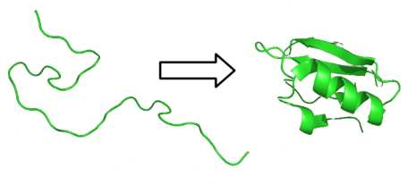
1.1. Les succès du dessin de protéine
Figure 1.1 – Repliement des protéines. A gauche est représenté l’état déplié, à droite
l’état replié.
La stabilité des protéines a été fortement étudiée, notamment pour rendre les pro-
téines thermorésistantes. Pour éviter leur dénaturation, il faut renforcer leur repliement
en introduisant des résidus hydrophobes dans le cœur de la protéine. L’équipe de Ma-
lakauskas & Mayo [1998] a modifié le domaine β1 de la protéine G pour améliorer sa
stabilité. L’incorporation de nombreuses isoleucines dans le cœur du domaine a permis
d’augmenter la température de fusion de 8◦ à plus de 10◦C par rapport au sauvage selon
le mutant. En appliquant le même protocole, l’équipe de Filikov et al. [2002] a mis au
point des mutants d’une hormone de croissance humaine qui améliorent de 13 à 16◦C la
température de fusion de la protéine sauvage.
Dessin de protéine entière Le dessin de protéine entière permet essentiellement de
valider les protocoles computationnels utilisés pour faire de nouvelles prédictions. Une
première étude a été réalisée par Dahiyat & Mayo [1997] qui ont redessiné un motif doigt
de zinc ββα, où la meilleure séquence présentait 21% d’identité avec la séquence native.
Une seconde étude présente la reconstruction de 9 protéines globulaires de 23 à 107
résidus, par l’équipe de Dantas et al. [2003]. Ils ont déterminé qu’en moyenne, le pour-
centage d’identité avec les séquences natives était de 30%, et augmentait jusqu’à 50%
d’identité dans les cœurs hydrophobes. Le repliement et la stabilité des ces 9 protéines
ont été validés expérimentalement.
7
Chapitre 1. Dessin Computationnel de Protéine
1.1.2 Dessin d’interaction protéine-ligand
Le dessin de protéine pour reconnaître un ligand touche deux critères : l’affinité et la
spécificité. Dans le premier cas, nous cherchons à modifier l’interaction entre la protéine
et son ligand pour augmenter ou diminuer leur interaction. Dans le second cas, nous cher-
chons à modifier le site actif afin d’incorporer de nouveaux ligands. Dans cette situation,
intervient la notion de dessin “positif” et de dessin “négatif”. Le dessin positif tend à
améliorer l’interaction protéine-ligand, alors que le dessin négatif a pour but de défavo-
riser l’interaction pour empêcher le ligand naturel de se positionner dans la poche (Fig.
1.2).
Protéine naturelle
Complexe protéique
Ligand naturel
Protéine mutée
Ligand non naturel
Figure 1.2 – Dessin négatif. En haut est représentée l’interaction naturelle entre la
protéine et son ligand. En bas, une mutation a eu lieu sur la protéine par le dessin négatif.
La protéine mutée n’interagit plus avec le ligand naturel, favorisant son interaction avec
le ligand non naturel.
Modification de fonctions enzymatiques L’équipe de Gordon et al. [2012] a modifié
la spécificité du substrat d’une peptidase à activité acide, pour générer une enzyme ciblant
un élément immunogénique présent dans le gluten et qui est impliqué dans la maladie
coeliaque. Cette enzyme est d’intérêt thérapeutique évident.
8
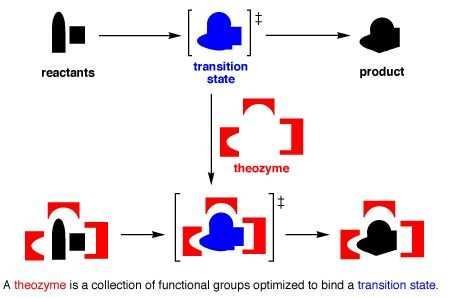
1.1. Les succès du dessin de protéine
Plus récemment, une application de notre équipe, est de modifier la stéréospécificité
d’aminoacyl-ARNt synthétases (aaRS), telles que la tyrosyl-, l’aspartyl- ou l’asparaginyl-
ARNt synthétase (Lopes et al. [2010], Polydorides et al. [2011], Druart et al. [2016b]).
L’objectif est d’incorporer un nouvel acide aminé substrat dans le site actif de l’enzyme,
en modifiant les résidus de la poche. Ils ont ainsi pu mettre au point un mutant de la
TyrRS, montrant une préférence pour un ligand non naturel, la D-tyrosine (Simonson
et al. [2016]).
Création de nouvelles enzymes Plusieurs études ont été menées par différents labo-
ratoires permettant de créer de nouvelles enzymes, dont l’activité n’est pas vue dans la
nature. Pour cela, le travail commence par choisir le mécanisme catalytique recherché. A
partir du réactant et du produit de la réaction catalytique, sont créées des “théozymes”
ou “compuzymes” (Tantillo et al. [1998]). Ce sont des catalyseurs théoriques, construit en
calculant la géométrie optimale en maximisant la stabilité de l’état de transition conte-
nant les groupes fonctionnels (Fig. 1.3). Ces calculs sont souvent réalisés par mécanique
quantique. A partir de ces théozymes, sont recherchés les squelettes de protéines exis-
tantes, capables de supporter ces sites actifs idéaux. Enfin, une optimisation du site actif
est réalisée par CPD.
Figure 1.3 – Création de nouvelles enzymes. Les théozymes sont créées en étudiant
les réactants et les produits de la réaction catalytique.
Avec cette méthode, Röthlisberger et al. [2008] ont créé une enzyme à activité d’éli-
mination de Kemp, en optimisant deux mutants KE59 et KE70 ayant une activité ca-
talytique. La même année, Jiang et al. [2008] ont créé 72 enzymes dont 32 ont montré
9
Chapitre 1. Dessin Computationnel de Protéine
une activité retro-aldolase détectable. Enfin, Siegel et al. [2010] ont mis au point deux
enzymes (DA_20_00 et DA_42_00) ayant une activité Diels-Alderase.
Protéines allostériques Les protéines évoluent dans les cellules en adoptant plusieurs
états conformationnels. De plus, lorsque le ligand naturel interagit avec la protéine, sa
structure s’adapte au ligand pour optimiser l’interaction, aboutissant à la conformation
active. En incorporant de nouveaux ligands dans les poches de la protéine, il est possible de
détecter de nouveaux états stables de la protéine. Par exemple, l’équipe de Shifman et al.
[2006] a montré qu’ajouter deux ions calcium sur la queue C-terminale de la calmoduline
conduit à un nouvel état conformationnel de celle-ci. Cet état permet à la protéine de se
lier d’une part à son partenaire naturel connu, l’enzyme CaMKII, mais aussi avec d’autres
enzymes à activité kinase. Cette découverte suggère que la calmoduline peut être impliqué
dans d’autres processus biologiques de signalisation.
1.1.3 Dessin d’interaction protéine-peptide
Depuis plusieurs années, les peptides sont de plus en plus utilisés en tant qu’agents
thérapeutiques, notamment en tant qu’inhibiteurs d’interactions protéine-protéine. Les
interactions protéines-protéines sont impliquées dans la transmission de signal menant à
l’apoptose, la multiplication et la migration cellulaire. L’équipe de Sievers et al. [2011] a
mis au point un peptide inhibiteur de la formation de fibres amyloides. Ces fibres étant
notamment impliquées dans la maladie d’Alzheimer, le peptide inhibiteur a un intérêt
thérapeutique potentiel.
1.1.4 Dessin d’interaction protéine-protéine
De nombreuses études ont modifié les interactions protéine-protéine (Zhang et al.
[2016], Norn & André [2016]), mais nous pouvons citer l’étude de Fleishman et al. [2011].
L’équipe a travaillé sur les anticorps du virus de la grippe. Les virus étant de plus en plus
résistants aux anticorps, ils ont modifié des anticorps existants pour leur redonner une
activité thérapeutique. Ils ont donc modifié des anticorps permettant d’identifier et de se
10
1.2. Modélisation d’une protéine et de son espace conformationnel
lier à une queue conservée dans toutes les souches du virus de la grippe. Pour cela, ils ont
ciblé la surface hydrophobe de la queue impliquée dans l’interaction, qui est hautement
conservée pour de nombreuses souches de ce virus. De manière itérative, ils réalisent
un docking pour positionner correctement les anticorps sur la protéine. Ils incorporent
ensuite des résidus hydrophobes (Leu, Val, Ile, Phe, Trp, Met, Tyr) à l’interface des deux
protéines, puis optimisent la séquence des résidus de surface autour du site d’interaction.
Des analyses expérimentales ont montré que les mutants HB36 et HB80 des 73 mutants
testés inhibent le changement conformationnel qui conduit à la fusion de la membrane.
Le virus est de cette façon inactivé.
1.1.5 Dessin d’interaction protéine-ADN/ARN
Les interactions protéine-ADN ou protéine-ARN, sont de plus en plus étudiées. No-
tamment, l’équipe de David Baker (Ashworth et al. [2006] et Ashworth et al. [2010]) a
modifié une endonucléase en y introduisant deux mutations (K28L et T83R). Lors de l’op-
timisation des chaînes latérales de l’endonucléase, les chercheurs ont tenu compte de la
flexibilité du squelette de l’ADN, faisant l’originalité de cette étude. Ce mutant lie et clive
un site d’ADN environ 10,000 fois plus efficacement que l’enzyme sauvage avec un niveau
de discrimination de site comparable à une endonucléase naturelle. Cet outil a donc son
intérêt dans la thérapie génique, permettant de cliver l’ADN à l’endroit souhaité.
1.2 Modélisation d’une protéine et de son espace confor-
mationnel
La protéine dans son milieu naturel est constamment en mouvement et décrit un es-
pace continu de conformations possibles. La flexibilité des protéines est impliquée dans
de nombreux processus biologiques tels que l’ouverture des sites actifs des enzymes, les
reconnaissances antigènes-anticorps, et les interactions protéiques dans la transmission de
signal. Ainsi, certaines protéines possèdent des boucles flexibles localisées à l’entrée du site
actif. Elles jouent parfois un rôle majeur dans la sélectivité du substrat et dans la facilité
11
Chapitre 1. Dessin Computationnel de Protéine
de ce substrat à se lier dans la poche. Pour les simulations de CPD, il est nécessaire de
modéliser la protéine et de décrire son espace conformationnel de manière simplifiée. En
effet, l’espace conformationnel d’une protéine est vaste, rendant difficile d’échantillonner
et d’analyser toutes les séquences possibles. Pour réduire cet espace, il est possible de le
discrétiser, rendant le nombre de conformations fini. Une approche a été proposée par
Ponder & Richards [1987] où le squelette de la protéine est fixe, et les conformations des
chaînes latérales sont décrites par une bibliothèque discrète de rotamères. Par la suite, les
capacités calculatoires ont évoluées et les programmes ont pu affiner leur modèle protéique,
en y ajoutant plus de flexibilité. D’une part, les chaînes latérales peuvent être modélisées
par des rotamères “squelette-dépendants” et/ou continus. D’autre part, le squelette de la
protéine peut devenir flexible, dans un ensemble discret ou continu. Prendre en compte
la flexibilité du squelette a un fort intérêt. Il a été montré que les simulations avec un
squelette rigide biaisent les prédictions de séquences. Quelques mouvements de squelettes
peuvent améliorer de manière significative l’énergie conformationnelle (Desjarlais & Han-
del [1999]). De plus, plusieurs études ont montré que le squelette de la protéine s’adapte
aux mutations (Baldwin et al. [1993], Lim et al. [1994], Bordner & Abagyan [2004]). Ainsi,
les simulations en squelette rigide peuvent négliger une partie des séquences qui pourraient
être optimales en termes de fonction et de repliement. Dans la suite, nous présentons la
modélisation de l’état déplié, des chaînes latérales et du squelette protéique.
1.2.1 Modélisation de l’état déplié
La stabilité d’une protéine est évaluée par la différence d’énergie libre entre son état
replié et son état déplié. Il est donc nécessaire de connaître l’énergie de l’état déplié.
Cette énergie dépend de la composition en acides aminés de la protéine. Calculer l’énergie
dépliée de chaque séquence est extrêmement difficile. Néanmoins, il existe des méthodes
qui modélisent de manière explicite la structure de l’état déplié pour évaluer son énergie.
En effet, l’étude de Ohnishi et al. [2004] a montré que la séquence influe sur la conformation
de l’état déplié, qui présente de légers repliements locaux. Ces repliements sont donc à
considérer dans le modèle. L’équipe de Creamer et al. [1995] ont utilisé des fragments de
la protéine native pour représenter l’état déplié. Le groupe de Mok et al. [2001] a évalué
12
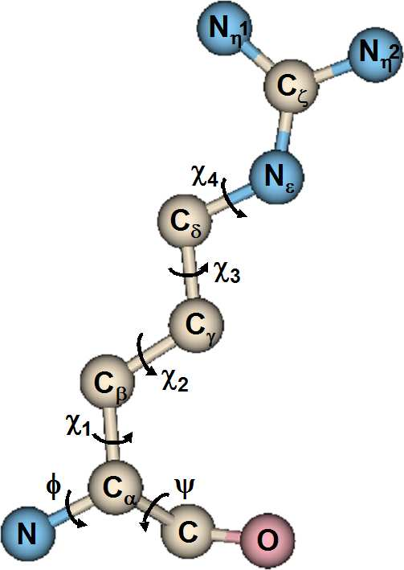
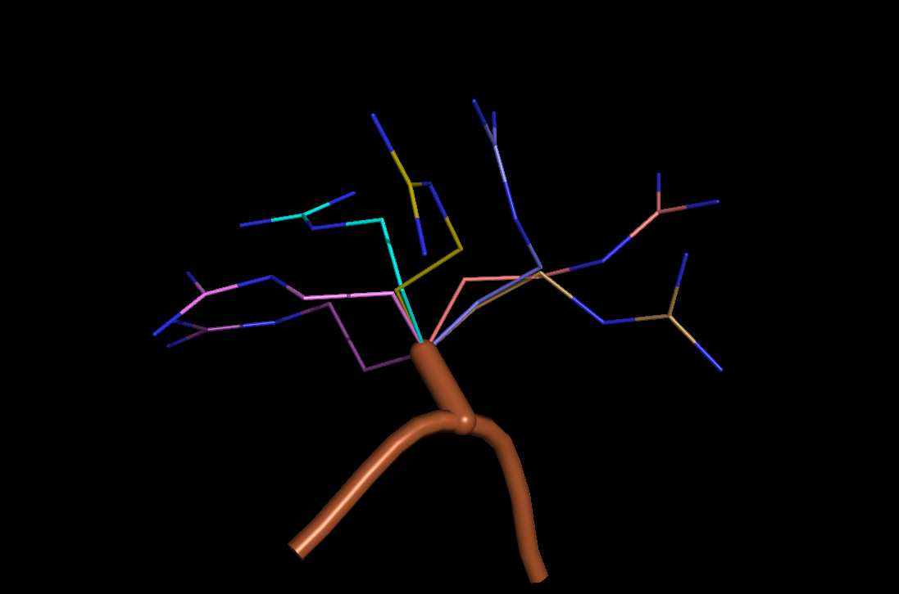
1.2. Modélisation d’une protéine et de son espace conformationnel
l’énergie de l’état déplié de manière expérimentale, en augmentant la température. Enfin,
l’équipe de Anil et al. [2006] a analysé la structure de l’état déplié. Ces différentes méthodes
restent cependant lourdes à mettre en place, en apportant finalement peu d’amélioration,
comparée à un modèle implicite de l’état déplié.
La méthode implicite principalement utilisée est l’utilisation d’un modèle di ou tri
peptides pour chaque type d’acide aminé. L’idée est d’encadrer chaque acide aminé X
du polypeptide par deux résidus alanines, ALA - X - ALA, et d’évaluer sa contribution
énergétique (Dahiyat & Mayo [1996], Wernisch et al. [2000]). Un tel tri-peptide a une
exposition au solvant semblable à une structure protéique complètement dépliée. Une
énergie de référence EX est ainsi définie par acide aminé ; il suffit de les sommer pour
obtenir l’énergie totale de la protéine dépliée.
1.2.2 Modélisation des chaînes latérales
De nombreuses équipes ont étudié la flexibilité des chaînes latérales (Finkelstein &
Ptitsyn [1977], Janin et al. [1978], Ponder & Richards [1987]). Elles ont montré que sur
l’ensemble des protéines étudiées, les acides aminés adoptaient majoritairement un petit
ensemble de conformations préférentielles ou “rotamères” (Fig. 1.4). Ainsi, il est possible
de représenter la flexibilité des acides aminés par ce petit ensemble discret de conforma-
tions énergétiquement favorables. Ces conformations, ou rotamères, sont décrites par des
valeurs d’angles de torsions χ particulières.
(a) Angles χ d’une arginine.
(b) Quelques rotamères de l’arginine.
Figure 1.4 – Angles χ d’une arginine et leurs variations. (a) Description d’une
arginine par les angles χ. (b) Quelques rotamères de l’arginine où les angles χ varient.
En marron sont représentés le squelette et l’atome Cβ sur lequel sont positionnés les
rotamères.
13
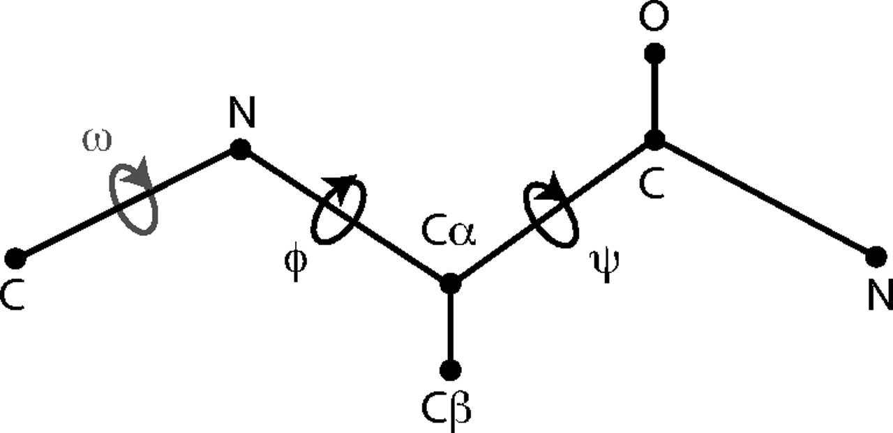
Chapitre 1. Dessin Computationnel de Protéine
Plusieurs bibliothèques rotamériques ont été développées selon différents critères :
indépendantes du squelette (Tuffery et al. [1991], De Maeyer et al. [1997]) ; dépendantes
des angles φ et ψ du squelette (Dunbrack & Karplus [1993], Dunbrack & Cohen [1997]) ;
ou bien dépendantes de la structure secondaire α ou β (Schrauber et al. [1993], Lovell
et al. [2000]).
Les chaînes latérales peuvent aussi être décrites par des rotamères continus. Ce modèle
autorise chaque rotamère à représenter une région dans l’espace des angles χ (Gainza
et al. [2012]). Les angles χ sont déterminés selon la distribution de leur population dans
les protéines (Dzacula et al. [1992]).
1.2.3 Modélisation du squelette de la protéine
Simulation avec un squelette fixe Le squelette de la protéine est utilisé dans un
grand nombre de programmes de manière rigide, en servant de support pour greffer les
rotamères des chaînes latérales. Les atomes C, N, Cα, O, sont maintenus rigides, ainsi
que l’atome Cβ qui permet de conserver l’orientation naturelle des chaînes latérales pour
positionner les rotamères (Fig. 1.5). Ce traitement est réalisé pour toutes les positions de
la protéine, sauf pour les prolines dû à leur géométrie cyclique particulière. Les simulations
à squelette rigide ont permis de modéliser de nombreux mutants, dont une majorité des
exemples présentés dans la partie 1.1.
Figure 1.5 – Atomes et angles du squelette protéique. Lors de simulations avec
squelette rigide, les atomes C, N, Cα, O, sont maintenus fixes. L’atome Cβ permet de
conserver l’orientation des chaînes latérales. Lors de simulations avec squelette flexible,
les angles de torsion φ et ψ peuvent varier.
14
1.2. Modélisation d’une protéine et de son espace conformationnel
Simulation avec la flexibilité du squelette implicite Des méthodes simples ont
permis de prendre en compte la flexibilité du squelette de manière implicite. Une mé-
thode qui a été rapidement adoptée, est de réduire les rayons de van der Waals pour
réduire les contraintes stériques (Dahiyat & Mayo [1997], Looger & Hellinga [2001]). De
cette manière, il est possible de compenser l’effet restrictif du squelette fixe et de la discré-
tisation des chaînes latérales par les rotamères, permettant un échantillonnage plus large
de séquences compatibles avec la structure désirée.
Une seconde méthode basée sur l’apprentissage appelée “cluster expansion” optimise
une fonction d’énergie sur un lot de séquences/squelettes (Apgar et al. [2009]). Ce lot est
généré par CPD en utilisant les séquences prédites sur plusieurs squelettes indépendam-
ment. Cette fonction d’énergie est ensuite utilisée pour faire des prédictions de mutations.
Simulation avec la flexibilité du squelette explicite Plusieurs méthodes ont été
développées sur les vingt dernières années pour représenter explicitement la flexibilité
du squelette. Les premières méthodes permettent de considérer une flexibilité proche du
squelette natif, puis elles ont évoluées vers des mouvements de boucles plus larges.
Les premières simulations en squelette flexible ont été réalisées par les équipes de
Harbury et al. [1995] et Offer & Sessions [1995]. Des perturbations sont appliquées au
squelette protéique grâce à la paramétrisation des éléments de structures secondaires
α/α, α/β et β/β. Ces éléments sont considérés comme des blocs qui peuvent adopter
différentes positions les uns par rapport aux autres en faisant varier les distances ou les
angles entre blocs. De cette manière, l’équipe de Harbury et al. [1995] a permis de mettre
en place une nouvelle topologie d’un tétramère d’hélice α, validée expérimentalement.
Seulement, ces simulations ont été réalisées sans aucune mutation de la séquence. C’est
pourquoi l’équipe de Su & Mayo [1997] a réutilisé cette idée, en autorisant des mutations.
Ils ont cependant obtenu des séquences de cœur hydrophobe similaires à celles obtenues
sur le squelette original fixe.
L’équipe de Desjarlais & Handel [1999] a ajouté de la flexibilité en modifiant aléatoi-
rement les angles de torsions ψ et φ du squelette de la protéine 434 cro. Cependant, les
séquences obtenues n’apportaient pas de nouvelles mutations par rapport à celles obtenues
15
Chapitre 1. Dessin Computationnel de Protéine
avec le squelette fixe. Enfin, l’équipe de Li & Scheraga [1987] et par la suite de Dantas
et al. [2007], ont fait des simulations où une minimisation est réalisée après un mouve-
ment de chaîne latérale. Seuls les angles de torsions du squelette sont autorisés à bouger,
pour adapter le squelette à la séquence protéique et la structure rotamérique choisie. Les
mutations n’étaient pas autorisées pour la première équipe alors qu’elles l’étaient pour la
seconde équipe.
L’équipe de Simons et al. [1997] a mis en place une méthode d’insertion de fragments
de peptide. L’idée repose sur l’homologie structurale pour une séquence d’acide aminé
donnée. La protéine est découpée en peptides, puis les conformations possibles correspon-
dants à ces peptides sont testés. Malgré les succès lors l’événement biennal CASP (Simons
et al. [1999]), et la création de trois boucles flexibles de 10 résidus validées expérimenta-
lement (Hu et al. [2007]), cette méthode requiert des ajustements des résidus adjacents à
l’insertion des différents fragments peptidiques.
Un des succès les plus impressionnants a été réalisée par Kuhlman et al. [2003], qui ont
créé une protéine, appelée Top7, possédant un nouveau repliement encore jamais observé
dans la nature. Pour cela, 172 topologies de squelettes sont été générées à partir du
serveur TOPS (Topology of Protein Structure - Michalopoulos et al. [2004]), sur lesquels
des optimisations de séquences ont été réalisées. La différence structurale entre la protéine
prédite et la protéine validée expérimentalement est de 1.17 Å. Pour parvenir à ce résultat,
ils ont optimisé alternativement la séquence en acide aminés et la structure du squelette,
en utilisant l’insertion de fragments avec une optimisation des angles de torsions des
résidus voisins du site d’insertion.
L’équipe de Georgiev & Donald [2007] a mis en place une méthode basée sur les dis-
tances Cα − Cα, où une boite est placée autour du squelette de la protéine pour limiter
le déplacement du squelette. Le squelette est échantillonné par génération aléatoire des
angles dièdres, et la conformation la plus favorable est sélectionnée pour la phase d’opti-
misation des chaînes latérales.
Une étude de Davis et al. [2006] a découvert, en inspectant les structures cristallo-
graphiques, un mouvement naturel des squelettes protéiques appelé “backrub”. Ces mou-
vements décrivent des mouvements biologiques pertinents corrélant les mouvements de
16

1.2. Modélisation d’une protéine et de son espace conformationnel
chaînes latérales et le squelette correspondant. Ils consistent à déplacer la position du
vecteur de la liaison Cα-Cβ à une position donnée, en maintenant les longueurs et les
angles des liaisons et la planéité de la liaison peptidique. Ce mouvement est purement
local, c’est-à-dire pratiquement sans déplacement des Cα aux positions ±1 et sans dé-
placement aux positions ±2 et au-delà. Ils proposent donc un algorithme permettant de
reproduire ce mouvement, consistant à utiliser l’axe formé par les Cαi−1,i+1 comme pivot
pour déplacer légèrement le Cα central i et sa chaîne latérale (Fig. 6.1).
Figure 1.6 – Mouvement de squelette avec la méthode backrub. Les carbones
Cαi−1 et Cαi+1 sont maintenus fixes et forment un axe autour duquel le carbone Cαi
effectue une rotation. Tous les atomes entre ces deux Cα sont rigides et se déplacent en
un seul bloc.
Cet algorithme a rapidement été utilisé dans deux équipes : Georgiev et al. [2008]
et Smith & Kortemme [2008]. Ils ont montré que l’utilisation du mouvement backrub
améliore l’exactitude de la prédiction des mutants par rapport aux simulations avec un
squelette rigide, et qu’il est possible de capturer des oscillations entre des conformations
ouvertes et fermées observées en solution. Cependant, les simulations ont été réalisées en
mutant une seule position.
Il est possible d’étendre les mouvements de backrub à plus de 3 résidus (Betancourt
[2005]). En effet, en sélectionnant cinq résidus, les points de l’axe servant de pivot seront
les positions i ± 2. Les mouvements de squelette deviendront alors plus grands, mais la
rigidité du segment peut rendre ce mouvement difficile.
17
Chapitre 1. Dessin Computationnel de Protéine
Ce mouvement backrub a prouvé son efficacité mais certaines régions de la protéine
peuvent posséder une plus grande flexibilité, associée à des variations importantes dans
les angles de torsion du squelette. L’échantillonnage conformationnel basé sur ces angles
de torsions peut être amélioré par des techniques locales opérant sur ces angles, tout en
gardant les longueurs et les angles de liaisons idéaux. Une méthode appelée “fermeture
de cycle” consiste à échantillonner indépendamment un peptide provenant de la boucle
flexible, puis à ressouder ce peptide à la protéine. L’idée a été proposée par Go & Scheraga
[1970], puis utilisée sur les problèmes de dessin de protéine par plusieurs équipes (Coutsias
et al. [2004], Cortes et al. [2004], Lee et al. [2004], Noonan et al. [2005], Milgram et al.
[2008]). L’implémentation de cette méthode repose sur un processus de cinétique inverse
utilisé en robotique. Les mouvements proposés satisfont les contraintes géométriques et
de liaisons, dont les multiples axes de rotations libres peuvent mener à des conformations
radicalement différentes. Cette méthode a fait ses preuves en reconstruisant 25 boucles
flexibles avec une différence structurale moyen de 0.9 Å par rapport aux structures natives
(Mandell et al. [2009]).
Pour prendre en compte des mouvements de plus grandes amplitudes que le backrub,
il est aussi possible de réaliser des simulations en multi-états. Dans ce cas, il faut générer
à l’avance plusieurs conformations de squelettes par dynamique moléculaire, modes nor-
maux, ou par des fermeture de cycles. Ces squelettes sont ensuite utilisés au cours des
simulations de CPD. L’équipe de Friedland et al. [2008] a généré, en utilisant la méthode
de backrub, plusieurs conformations de squelette et a réalisé les simulations d’optimisation
de séquence pour chaque squelette indépendamment. Cette étude a montré que selon les
conformations de squelette, les prédictions de séquences variaient.
1.3 Fonction d’énergie pour évaluer une conforma-
tion
La fonction d’énergie utilisée en CPD doit être suffisamment juste pour capturer les
détails des interactions interatomiques de la protéine, mais doit aussi être rapide à calcu-
18
1.3. Fonction d’énergie pour évaluer une conformation
ler. Ces fonctions sont souvent basées sur les fonctions d’énergie de mécanique moléculaire.
Dans le cas du CPD, et dans le cadre d’une utilisation d’un espace discrétisé, les fonc-
tions d’énergie sont souvent décomposées par paires de résidus. D’une manière astucieuse,
l’énergie de chaque résidu et les énergies d’interaction de chaque paires de résidus sont
calculées indépendamment les unes des autres. L’énergie totale de la conformation est
alors obtenue en sommant les énergies dites de paires (cf. plus loin).
1.3.1 Fonction d’énergie classique de mécanique moléculaire
La mécanique moléculaire est une méthode qui permet d’évaluer l’énergie d’un système
de particules en fonction de sa conformation. Cette méthode repose sur les équations de la
mécanique des points, plus un ensemble de paramètres formant un “champ de force”. Les
paramètres de ces champs de force sont obtenus par des calculs de mécanique quantique
et/ou par des mesures expérimentales.
L’énergie totale d’une protéine est alors définie par deux termes : un terme de méca-
nique moléculaire classique EMM et un terme de solvatation Esolv dû à l’immersion de la
protéine dans un environnement aqueux
E = EMM + Esolv
(1.1)
Le terme EMM peut se décomposer selon EMM = Eliées + Enon liées où Eliée correspond
aux énergies d’interactions des atomes proches dans la structure covalente, et Enon liée
aux énergies d’interactions des atomes distants de plus de deux liaisons covalentes.
1.3.1.1 Énergie d’interaction liée
L’énergie d’interaction liée Eliée est la plus simple à calculer. Elle correspond à la
somme de différents termes intervenant dans des interactions entre atomes distants de
moins de deux liaisons covalentes :
Eliées = Eliaison + Eangle + Edièdre + Eimpropre
(1.2)
19
Chapitre 1. Dessin Computationnel de Protéine
où Eliaison est l’énergie d’élongation des liaisons, Eangle l’énergie de déformation de l’angle,
Edièdre l’énergie de torsion des angles dièdres et Eimpropre qui fixe la planéité (Fig. 1.7).
θ
E
E
E
E
liaison
angle
dièdre
impropre
Figure 1.7 – Schéma des énergies liées. Les sphères bleues représentent les atomes,
et les bâtons les liaisons.
1.3.1.2 Énergie d’interaction non liées
Les énergies non liées interviennent entre deux atomes lorsque ceux-ci sont distants de
plus de trois atomes. Deux énergies distinctes composent le terme Enon liées :
Enon liées = Eelec + EV dW
(1.3)
où Eelec correspond à l’énergie électrostatique et EV dW les interactions Van der Waals
(Fig. 1.8).
r
r
ij
ij
+
-
+
-
-
++
+
--
++
--
q
q
i
j
E
E
elec
VdW
Figure 1.8 – Schéma des énergies non liées. Les sphères bleues représentent les
atomes, et les bâtons les liaisons.
Énergie électrostatique L’énergie électrostatique est modélisée à l’aide de l’interac-
tion de Coulomb entre deux charges partielles atomiques. Cette énergie dépend directe-
20
1.3. Fonction d’énergie pour évaluer une conformation
ment de la distance entre ces deux charges, ainsi que de l’écrantage diélectrique. Elle est
évaluée par :
X q
E
iqj
elec =
(1.4)
ǫr
i<j
ij
où q sont les charges atomiques, ǫ est la constante diélectrique de l’environnement, et rij
la distance entre les atomes i et j.
Énergie de Van der Waals La force de Van der Waals est une interaction électrique de
faible intensité entre deux atomes. Le potentiel de Lennard-Jones est une approximation
mathématique utilisée couramment en modélisation pour la représenter. L’énergie de Van
der Waals est définie par :
X
r
r
E
0
0
V dW =
D0[(
)12 − (
)6]
(1.5)
r
r
i<j
ij
ij
où D0 et r0 sont des constantes, et rij la distance entre les atomes i et j. Nous pouvons
distinguer deux termes. Le premier terme (exposant 12) est le terme répulsif à courte
distance. Si les atomes sont trop proches, ce terme sera défavorable. Ce terme évite les
encombrements stériques des deux atomes. Le second terme (exposant 6) correspond au
terme attractif dominant à grande distance.
1.3.1.3 Modélisation implicite du solvant pour le CPD
Les protéines sont simulées immergées dans un solvant qui écrante les énergies d’in-
teractions électrostatiques entre deux atomes de la protéine. L’énergie de solvatation est
souvent composée de deux termes : un terme électrostatique qui modélise l’effet polaire
Eelec, et un terme de surface qui modélise l’effet hydrophobe
:
solv
Esurf
solv
Esolv = Eelec +
(1.6)
solv
Esurf
solv
En CPD, la protéine est souvent définie comme un volume de faible constante diélectrique
entourée d’un deuxième continuum diélectrique jouant le rôle du solvant. La limite entre
ces deux régions est la surface moléculaire (Fig. 1.9). Le terme surface modélise, lui, l’effet
21
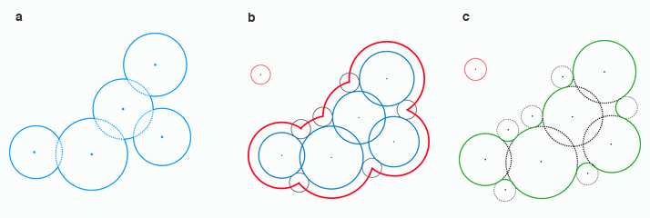
Chapitre 1. Dessin Computationnel de Protéine
hydrophobe ; il est défini par :
Esurf = sum
solv
iσiAi
(1.7)
Ai correspond à la surface accessible au solvant de l’atome i, et σi est un coefficient
d’énergie de surface (en kcal.mol−1.Å−2). Ce coefficient dépend de l’hydrophobicité de
l’atome, reflétant la préférence des types atomiques à être enfouis ou exposés au solvant
(Wesson & Eisenberg [1992]).
Figure 1.9 – Surface moléculaire. (a) Surface de Van der Waals qui correspond à la
surface de la protéine. (b) Surface Accessible au Solvant modélisé par une boule (solvant)
qui roulerait sur la surface de Van der Waals. (c) Surface de Connolly qui prend en compte
le recouvrement des creux par la boule (solvant).
Modèle simple de Coulomb - Accessible Surface Area Le modèle CASA (Cou-
lomb Accessible Surface Area) est un modèle de solvant empirique. Il permet de réduire les
interactions entre les atomes de la protéine par un facteur constant ǫ pour tenir compte de
l’écrantage induit par le solvant. Il utilise simplement l’équation de Coulomb pour évaluer
l’énergie électrostatique, combiné à l’énergie de surface (Eq. 1.7) :
ECASA =
(1.8)
solv
Escreen + Esurf
solv
avec
1
Escreen = ( − 1)E
ǫ
elec
(1.9)
Ce modèle permet de modéliser le solvant et son effet écran, tout en permettant d’être
décomposable par paires de résidus. Cependant, due à l’utilisation d’une seule constante
diélectrique, il montre ses limites pour le dessin de protéines à leur surface.
22
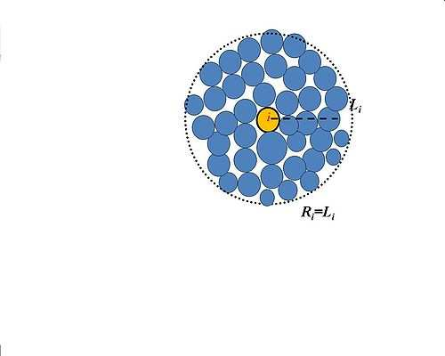
1.3. Fonction d’énergie pour évaluer une conformation
Modèle de Poisson-Boltzmann Le modèle de solvant Poisson Boltzmann (PB) est
un autre modèle de solvant implicite. Il est l’un des modèles le plus précis. Il comprend no-
tamment (1) les fortes interactions électrostatiques entre les groupes chargés et le solvant
polarisé, et (2) le phénomène d’écrantage des interactions intra-protéique. Seulement, la
résolution de l’équation PB est assez coûteuse et n’est pas décomposable par paires de
résidus.
Il existe cependant une version du PB décomposable par paire (Marshall et al. [2005],
Vizcarra et al. [2008]). L’environnement diélectrique est approximé en modélisant l’envi-
ronnement des chaînes latérales par un petit nombre des sphères. L’énergie électrostatique
pour chaque chaîne latérale ou paire de chaînes latérales peut alors être déterminée. Cette
méthode a montré son efficacité, mais reste toutefois coûteuse en temps de calcul.
Modèle de Born Généralisé Le modèle de solvant “Generalized-Born” ou Born Gé-
néralisé (GB) est une approximation de l’équation de Poisson-Boltzmann, plus rapide à
calculer (Still et al. [1990]). L’idée est que chaque charge de la protéine est caractérisée par
sa distance avec le solvant (Born [1920]). Cette distance, appelé “rayon de Born”, reflète
l’enfouissement de la charge dans la protéine (Fig. 1.10). L’énergie prends la forme :
X τq
EGB =
iqj (
/4bibj )−1/2
(1.10)
elec
r
2
ij + bibj e−r2ij
ij
avec τ = 1 − 1 , r
ǫ
ij la distance entre les charges qi et qj , et bi le rayon de Born de
ext
ǫint
l’atome i.
Figure 1.10 – Rayon de Born. La distance Li reflète l’enfouissement de l’atome i dans
la protéine (correspondant à bi dans le texte).
23
Chapitre 1. Dessin Computationnel de Protéine
1.3.2 Fonction d’énergie décomposable par paires pour le CPD
La décomposition de la fonction d’énergie permet de calculer de manière indépendante
les énergies de paires de résidus (Dahiyat & Mayo [1997], Gaillard & Simonson [2014]). Il
suffit ensuite de sommer les énergies de paires pour obtenir l’énergie totale d’une confor-
mation. Pour une protéine d’une longueur de N résidus, alors son énergie totale est :
N
X
N
X
Etotale =
Eii +
Eij.
(1.11)
i
i<j
Eii correspond à l’interaction d’un résidu i avec lui-même et avec le squelette de la pro-
téine, et Eij à l’interaction entre deux résidus i et j.
Combiné à une bibliothèque discrète de rotamères, cette décomposition permet de
calculer à l’avance tous les termes énergétiques de chaque rotamère, et de toutes les
paires possibles de rotamères. L’ensemble de ces termes sont enregistrés dans une matrice
triangulaire. La diagonale de la matrice contient les termes Eii pour chaque rotamère à
chaque position de la protéine, tandis que la partie non diagonale contient les termes Eij.
Cette matrice est ensuite lue pour évaluer l’énergie d’un couple rotamère/séquence en
sommant simplement les énergies de la combinaison de rotamères d’une conformation. La
décomposition se trouve être exacte pour EMM, mais approximées pour Esolv.
Décomposition par paires avec le modèle GB Le terme EGB dépend de la géo-
elec
métrie de tous les atomes, ne permettant pas de le décomposer par paires de manière
exacte. Une approximation est réalisée en utilisant l’environnement natif ou NEA (Native
Environnement Approximation), où les rayons de Born sont évalués pour un résidu i en
supposant que les autres sont dans la conformation native.
Décomposition par paires de Esurf La surface accessible au solvant doit être calculée
solv
pour chaque paire de résidus. Deux résidus suffisamment proches peuvent se recouvrir
mutuellement, et la plupart des algorithmes estiment correctement la surface accessible
au solvant d’une paire de résidus. Seulement, dans une protéine, cette surface peut être
enfouie par une troisième chaîne latérale (Fig. 1.11). Comme cette troisième chaîne latérale
24
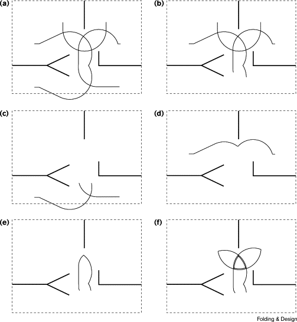
1.4. Méthodes d’échantillonnage
n’est pas prise en compte, alors il y a une sur-estimation de la surface accessible au solvant.
Pour diminuer cette sur-estimation, un facteur de correction de l’enfouissement peut être
utilisé.
2
1
3
Figure 1.11 – Représentation de trois résidus et leur enfouissement. En rouge :
la surface de contact entre les résidus 1 et 2. En bleu : la surface de contact entre les
résidus 2 et 3. En vert : la surface de contact entre les résidus 1 et 3. En noir : la surface
de contact commune aux trois résidus, qui est comptabilisée plusieurs fois.
1.4 Méthodes d’échantillonnage
La méthode d’échantillonnage est un point central de la procédure de CPD. Elle inter-
vient dans la phase d’exploration, c’est-à-dire, dans la recherche des séquences adaptées
au repliement structural donné. Pour cela, différentes méthodes existent et peuvent être
découpées en deux classes. Les méthodes stochastiques ou heuristiques vont permettre
d’échantillonner de manière aléatoire l’espace conformationnel des chaînes latérales/rota-
mères et étudier les différents puits énergétiques de la protéine d’étude. Elles ne garan-
tissent pas de trouver la séquence de minimum d’énergie ; ainsi, il est nécessaire parfois
de lancer plusieurs simulations indépendantes. Les méthodes déterministes ou exactes
échantillonnent l’espace conformationnel de manière à déterminer systématiquement la
séquence unique de meilleure énergie, appelée “Global Minimum Energy Conformation”
(GMEC). Ces méthodes requièrent généralement un espace discrétisé de la protéine avec
un squelette fixe, une bibliothèque de rotamères, ainsi qu’une fonction d’énergie décom-
posable par paires de résidus.
25
Chapitre 1. Dessin Computationnel de Protéine
1.4.1 Algorithmes stochastiques ou heuristiques
Monte Carlo La méthode de Monte Carlo (MC) a été introduite en 1953 (Metropolis
et al. [1953]), et permet d’échantillonner de manière aléatoire les séquences et structures.
Le principe repose sur un système d’acceptation ou de rejet de mouvements, basé sur
le critère de Metropolis. Cette méthode est présentée plus en détail dans le chapitre 2.
De manière itérative, cette méthode choisit une modification rotamérique (avec mutation
ou non) sur une séquence initiale, puis évalue son énergie totale appelée Enew. Si cette
nouvelle énergie est plus faible que celle de l’état précédent Eold, alors la modification
rotamérique est acceptée. Eold devient alors Enew, et une nouvelle itération commence.
Au contraire, si l’énergie Enew est supérieure à Eold, la modification est acceptée avec
la probabilité p = exp(Enew−Eold ), où k
k
B représente la constante de Boltzmann et T la
B T
température de simulation. De cette manière, même si la nouvelle énergie est défavorable,
il est possible de l’accepter afin de passer les barrières énergétiques et de visiter plusieurs
minimum locaux.
Le paramètre variable de la probabilité d’acceptation est la température. Plus elle
augmente, plus les mouvements défavorables sont acceptés et les barrières d’énergies se-
ront surmontées plus facilement. Une méthode qui utilise la variabilité de ce paramètre
est celle du recuit simulé, où le système est chauffé puis refroidit, permettant d’élargir
l’échantillonnage. Une seconde méthode est l’échange de répliques (REMC) : plusieurs
simulations sont effectuées en parallèle à des températures différentes, et elles s’échangent
les conformations entre elles périodiquement.
Algorithme génétique L’algorithme génétique a été introduit par Holland [1975] et
repose sur des principes de l’évolution génétique, à savoir la mutation, la recombinaison
(visant à intervertir deux parties de la séquence) et la sélection. Un ensemble de sé-
quences, appelé population, est initialisé aléatoirement. Sur cette population, sont triées
les séquences selon leur énergie. Les séquences de meilleures énergies sont sélectionnées
comme “parentes” pour la génération suivante. Cette génération se fait par les opérations
de recombinaison et de mutation. Le cycle sélectionne à nouveau les séquences de basse
énergie de cette nouvelle population pour l’itération suivante.
26
1.4. Méthodes d’échantillonnage
Algorithme heuristique de Wernisch L’algorithme de Wernisch et al. [2000] permet
de définir la séquence de plus basse énergie ainsi qu’un ensemble de séquences proches
de celle-ci. Tout d’abord, un rotamère est assigné aléatoirement pour chaque position.
Puis, une position i est choisie aléatoirement, et le meilleur rotamère est déterminé selon
l’environnement rotamérique. L’opération est répétée pour une nouvelle position j. Cette
procédure est effectuée jusqu’à convergence de l’énergie de la séquence.
1.4.2 Algorithmes déterministes ou exactes
Dead-End Elimination La méthode du Dead-End Elimination (DEE) consiste à éli-
miner au fur et à mesure de l’exploration, les rotamères de mauvaises énergies, jusqu’à
conserver un rotamère par position (Desmet et al. [1992]). L’élimination des rotamères
peut se faire selon deux critères (Goldstein [1994]) : élimination d’un seul rotamère ou
bien d’une paire de rotamères. L’énergie totale d’une séquence est :
X
X X
ET =
E(ir) +
Eij(ir,js)
(1.12)
i
i
j<i
avec E(ir) la contribution énergétique du rotamère r à la position i et Eij(ir,js) la contri-
bution énergétique de la paire des rotamères r et s respectivement aux positions i et j.
Le premier critère de Goldstein consiste à supprimer un rotamère r à la position i si un
autre rotamère t existe à cette même position, telle que sa plus mauvaise contribution
énergétique possible est inférieure à la meilleur contribution possible de r :
X
X
E(ir) +
min Eij(ir,jX) > E(it) +
max Eij(it,jX)
(1.13)
X
X
i6=j
i6=j
où min Eij(ir,jX) correspond à l’énergie la plus basse possible entre le rotamère r à la po-
sition i et n’importe quel rotamère X à la position j. De la même manière, max Eij(it,jX)
correspond à l’énergie la plus élevée possible entre le rotamère t à la position i et n’importe
quel rotamère X à la position j.
Le second critère consiste à supprimer une paire de rotamères r et s si une autre paire
de rotamères t et u contribue avec une énergie plus faible aux mêmes positions i et j.
27
Chapitre 1. Dessin Computationnel de Protéine
L’énergie d’une paire de rotamères r et s aux positions i et j est définie par :
Ers =
ij
E(ir) + E(js) + E(ir,js).
(1.14)
Alors le second critère de Goldstein correspond à :
X
X
Ers +
min[
+
max[
ij
Eik(ir,kX) + Ejl(js,lX)] > Etu
ij
Eik(it,kX) + Ejl(js,lX)] (1.15)
X
X
k=1
k=1
L’avantage de cette méthode est la garantie de converger dans le minimum global en
définissant le GMEC de manière efficace, notamment pour les petits systèmes. Plusieurs
variants du DEE existent, notamment les algorithmes A* (Leach & Lemon [1998]) et K*
(Lilien et al. [2005].
La théorie du champ moyen La théorie du champs moyen a pour objectif de réduire
un problème multi-états à un problème mono-état. Les rotamères d’une position donnée
sont simplifiés en un rotamère moyen (Lee [1994], Koehl & Delarue [1994], Kono & Doi
[1994]). Pour cela, une énergie moyenne par position est déterminée selon l’environne-
ment des rotamères voisins et selon leur énergie moyenne à chacun. De manière itérative,
l’énergie moyenne de chaque position est réévaluée jusqu’à convergence. Une fois que la
convergence est atteinte, les rotamères les plus probables sont placés sur la structure du
squelette.
1.5 Principaux programmes de CPD
De nos jours, plusieurs programmes de CPD sont utilisés, et ont fait leurs preuves.
Ces programmes sont composés d’un algorithme d’exploration et d’une fonction d’énergie
(excepté Toulbar2). Les principaux programmes de CPD et leur caractéristiques sont pré-
sentés dans cette partie. L’ensemble de ces informations est synthétisé dans le tableau 1.1.
Tous les programmes présentés ont une fonction d’énergie basée sur les champs de force
de dynamique moléculaire classique (physical energy function), excepté le programme Ro-
setta qui utilise une fonction d’énergie statistique (ou knowledge-based energy function).
28
1.5. Principaux programmes de CPD
L’avantage de l’utilisation des champs de force est de pouvoir réaliser des simulations avec
une grande variété de molécules (e.g ARN) dès lors que les paramètres de ces macromo-
lécules sont définis dans les champs de force.
1.5.1 ORBIT
Le programme ORBIT (Optimisation of Rotamers By Iterative Techniques) a été dé-
veloppé par Dahiyat & Mayo [1996]. L’originalité de ce programme est de combiner deux
algorithmes. Tout d’abord, le programme réalise une simulation DEE sur la protéine
d’étude. Une fois que le GMEC est défini, une simulation Monte Carlo est réalisée sur
la conformation d’énergie minimale. Les simulations sont réalisées à partir d’une struc-
ture squelettique fixe et d’une bibliothèque de rotamères, en utilisant le champ de force
DREIDING.
1.5.2 Toulbar2
L’équipe de Toulouse du LAAS (Allouche et al. [2014]) a mis au point le programme
Toulbar2, dans lequel est implémenté l’algorithme DEE/A*, combinée à l’utilisation d’une
fonction de coût sur réseau. La fonction de coût correspond à l’énergie du système à mi-
nimiser ; le réseau se réfère au jeu d’interactions entre rotamères. Ce problème est aussi
désigné comme le problème 0/1 “linear programming” (0/1LP) dans lequel les inconnues
sont binaires (énergies de paires) et seules des restrictions doivent être respectées corres-
pondant à la minimisation de l’énergie de paire en sélectionnant les meilleurs rotamères.
1.5.3 PocketOptimizer
PocketOptimizer (Masili et al. [2012]) utilise un algorithme génétique pour générer
un ensemble de séquences favorables pour un squelette donné. Le champ de force utilisé
pour la génération des séquences est AMBER. Une fois cet ensemble généré, une étape de
docking ou d’amarrage moléculaire du ligand est réalisée sur chaque structure/séquence
de l’ensemble.
29
Chapitre 1. Dessin Computationnel de Protéine
1.5.4 Proteus
Le programme Proteus a été développé dans l’équipe de Simonson (Schmidt Am Busch
et al. [2008], Simonson et al. [2013], Polydorides et al. [2016]). Proteus ropose l’utilisation
de deux champs de force, AMBER et CHARMM. Ce programme permet une grande
variété d’exploration puisqu’il propose les algorithmes de Wernisch, de Monte Carlo et du
champ moyen. De plus, une récente implémentation permet de réaliser des simulations
de Monte Carlo avec des échanges de répliques (REMC) (Mignon & Simonson [2016]). Il
sera détaillé plus loin.
1.5.5 FASTER
Le programme FASTER (Fast and Accurate Side Chain Topology and Energy Refine-
ment) propose de réaliser des simulations de séquence à composition fixe (Hom & Mayo
[2005]) avec le champ de force CHARMM. L’idée est d’inverser deux acides aminés : si
une lysine devient une arginine, alors à une autre position une arginine doit devenir une
lysine. En étudiant les permutations possibles entre une lysine et un arginine, et en les
comparant entre elles et à une séquence non modifiée, l’algorithme sélectionne la meilleur
inversion (ou garde la séquence non modifiée). Une telle procédure permet de négliger le
changement d’énergie de l’état dénaturé (jugée dépendre uniquement de la composition
en acides aminés).
Par la suite, cet algorithme a été étoffé pour réaliser des simulations en multi-états
squelettiques, FASTER-MSD (Allen & Mayo [2010]). Les mêmes séquences sont échan-
tillonnées sur l’ensemble des squelettes, mais avec une combinaison de rotamères diffé-
rentes. Pour chaque meilleure combinaison de rotamères, une énergie moyenne est estimée
sur l’ensemble des squelettes.
1.5.6 OSPREY
Le programme OSPREY (Open Source Protein REdesign for You) utilise les champs
de force AMBER ou CHARMM, et est initialement basé sur un algorithme DEE. Ra-
pidement, cet algorithme a été modifié dans ce programme pour des problèmes plus
30
1.5. Principaux programmes de CPD
complexes en introduisant de la flexibilité du modèle protéique (Gainza et al. [2013]).
L’algorithme MinDEE(K*) a été implémenté afin de considérer la flexibilité des chaînes
latérales (Gainza et al. [2012]). Après chaque changement de rotamères, une minimisation
est réalisée sur les rotamères en laissant libre les angles χ. L’algorithme BrDEE a été im-
plémenté en considérant le squelette flexible localement selon les mouvements de backrub
(Georgiev et al. [2008]). Le critère d’élimination concerne les rotamères qui ne font pas
partie du GMEC pour un nombre fini de conformation de squelette. Enfin, l’algorithme
BD considère des mouvements de squelette plus globaux, en utilisant un ensemble discret
de squelettes généré par de légère modification des angles φ et ψ (Georgiev & Donald
[2007]).
1.5.7 Rosetta
Rosetta est un ensemble de programme de modélisation moléculaire initié au labo-
ratoire de David Baker. Rosetta est à présent développé par 150 développeurs de 23
universités et laboratoires différents. Les programmes sont pour la plupart facile d’utili-
sation via une interface web. Tous les modules utilisent la même fonction d’énergie pour
évaluer les conformations. Cette fonction d’énergie statistique pondère les termes d’éner-
gie (exceptés le terme de Van der Waals et des liaisons hydrogènes) par des poids qui sont
déterminés par apprentissage. Les différents modules de Rosetta impliqués dans le dessin
de protéine sont présentés ci-dessous.
RosettaDesign Le module RosettaDesign a été utilisé pour la génération du nouveau
repliement de la protéine Top7 (Kuhlman et al. [2003]). Ce module varie alternativement
entre optimisation de la séquence sur squelette fixe, et optimisation de la conformation
du squelette avec une séquence fixe. Le squelette permet de cette manière de s’adapter à
la séquence d’acides aminés proposée.
Les angles de torsion du squelette sont optimisés à l’aide d’un protocole de minimisa-
tion Monte Carlo, découpé en 3 étapes. Tout d’abord, les angles de torsions du squelette
d’une ou plusieurs positions sont modifiés aléatoirement (ou bien sont tirés d’une structure
de la PDB). Ensuite, la conformation de ces positions sont optimisées en sélectionnant
31
Chapitre 1. Dessin Computationnel de Protéine
les rotamères de plus faible énergie. Enfin, une minimisation des angles de torsions du
squelette est réalisée dans une fenêtre de 10 résidus autour des positions optimisées.
RosettaMSD RosettaMSD est utilisé pour réaliser des simulations en multi-états, no-
tamment pour réaliser du dessin négatif (Leaver-Fay et al. [2011]). L’idée est proche de
l’algorithme FASTER-MSD, où une séquence est choisie pour l’ensemble des états sque-
lettiques pour une combinaison rotamérique différente. RosettaMSD utilise une fonction
de score permettant de pondérer positivement un ensemble de conformation recherchée,
tout en pondérant négativement l’ensemble de squelette à défavoriser.
RosettaEnzyme RosettaEnzyme cible particulièrement le site actif de l’enzyme étu-
diée (Richter et al. [2011]). L’optimisation de la poche se déroule en quatre étapes. Tout
d’abord, les résidus sont sélectionnés dans la poche autour du ligand. Ensuite, une mi-
nimisation de la structure est réalisée où tous les résidus de la poches sélectionnés pré-
cédemment sont mutés en alanine, permettant ainsi un bon positionnement du ligand.
A cette étape, les angles φ et ψ du squelette protéique sont autorisés à bouger. Puis, en
conservant la poche d’alanine, la conformation du ligand est échantillonnée par une opti-
misation Monte Carlo. Le squelette de la protéine est minimisé à cette étape en limitant
les Cα à 0.5 Å de leur position d’origine. Enfin, la séquence de la poche est optimisée par
Monte Carlo suivie d’une minimisation.
RosettaRemodel RosettaRemodel est un module légèrement éloigné du CPD clas-
sique, mais reste néanmoins intéressant. En effet, la majorité des modifications effectuées
sur les protéines par l’ensemble des programmes est une mutation par substitution signi-
fiant qu’un acide aminé est remplacé par un autre. Mais d’autres modifications génétiques
peuvent intervenir naturellement telles que les délétions et les insertions d’acide aminé.
Ce module permet ainsi de reconstruire la structure du squelette suite à ces modifications,
voire des extensions N/C-terminale ou des insertions de domaine.
32
1.5. Principaux programmes de CPD
Tableau 1.1 – Tableau récapitulatif des programmes de CPD
Programme
Algorithme
Squelette
Fonction
Descritpions supplémentaires
d’exploration
flexible
d’énergie
ORBIT
Simulation MC à partir du
Physique
DEE + MC
GMEC du DEE
(DREIDING)
Toulbar2
Utilisation d’une fonction de
DEE
nd
coût
Génération de plusieurs
PocketOptimizer
Physique
GA
séquences par GA, puis
(AMBER)
docking du ligand
Wernisch,
Physique
Proteus
Échantillonnage classique ou
MC, Champ
(AMBER/
REMC
Moyen
CHARMM)
Même séquence sur tous les
FASTER
Physique
MC, DEE
squelettes mais rotamères
X
(CHARMM)
différents
Diversité de variant de
Physique
OSPREY
l’agorithme DEE : DEE/A*,
DEE
(AMBER/
X
DEE/K*, MinDEE, BrDEE,
CHARMM)
BD
Alterne entre optimisation de
RosettaDesign
la séquence avec un squelette
MC
X
fixe et minimisation du
squelette avec séquence fixe
Choisi une séquence en
particulier pour tous les états,
puis choisi un rotamère pour
RosettaMSD
GA
cette séquence pour chaque
X
état. Combinaisons de l’énergie
A
de chaque état pour créer une
TT
valeur unique à la séquence.
E
Statistique
Placement du ligand dans une
OS
R
poche ALA, minimisation de la
structure (angle φ et ψ pour le
squelette), échantillonnage
RosettaEnzyme
MC
conformationnel du ligand avec
X
Cα squelette minimisé à 0.5 Å
de leur position d’origine, puis
optimisation de la séquence
dans la poche
Reconstruction du squelette de
la protéine suite à une délétion,
RosettaRemodel
insertion, extension
X
C/N-terminale ou insertion de
domaine
33
34
Chapitre 2
De la mécanique statistique à
l’échantillonnage des protéines :
implémentation dans Proteus
Les simulations de Monte Carlo sont basées sur un grand nombre de postulats de la
mécanique statistique, établis au 19ème siècle. Nous présentons brièvement ces postulats,
qui nous serviront à interpréter et à valider nos simulations de Monte Carlo. Nous présen-
tons également l’échantillonnage Monte Carlo des séquences dans le cadre du dessin de
protéine. Enfin, nous présentons le programme Proteus et son organisation pour réaliser
les simulations de CPD.
2.1 Les postulats issus de la mécanique statistique
Définition de notre système d’étude En CPD, nous étudions une protéine d’intérêt
qui peut adopter différentes séquences/conformations, ou états. Un état est caractérisé
par une énergie potentielle et une énergie cinétique, respectivement définis par les coor-
données et les vitesses de la structure. Ce sont les fluctuations thermiques qui permettent
au système d’explorer un ensemble de ces états. Dans notre étude, nous ne nous intéres-
sons pas à la dynamique temporelle de la protéine mais uniquement à ses conformations.
Ainsi, par la suite, un état sera donc un état conformationnel, caractérisé par son énergie
potentielle, mais dissocié de ses vitesses. Notre système peut être vu comme un très grand
volume d’eau dans lequel se trouvent plusieurs exemplaires de la protéine. Cette solution
35
Chapitre 2. De la mécanique statistique à l’échantillonnage des protéines :
implémentation dans Proteus
étant très diluée, les différents exemplaires de la protéine sont loin les uns des autres et
n’interagissent pas entre eux. Ainsi, l’étude du système se résume à l’étude d’une seule
protéine en solution au cours du temps. Notre système est décrit par un nombre de par-
ticules, un volume et une température fixes, ce qui définit un ensemble canonique. Seule
l’énergie interne de notre système peut fluctuer, et est définie par la moyenne des énergies
potentielles Ei des états conformationnels i, pondérés par leur probabilité.
La distribution de Boltzmann Dans un système tel que le nôtre, les états confor-
mationnels sont peuplés selon leur énergie potentielle. Plus un état aura une énergie
favorable, plus la protéine se trouvera dans cet état particulier. La description mathéma-
tique de ce principe est définie par la distribution de Boltzmann. Cette distribution donne
la probabilité de se trouver dans l’état i d’énergie Ei :
e−βEi
p(i) = P
(2.1)
i e−βEi
où β est égal à 1/kBT , T est la température en Kelvin, et kB est la constante de Boltzmann.
Le dénominateur de l’équation 2.1 est appelé fonction de partition.
Fonction de partition d’un ensemble La fonction de partition Z joue le rôle de
constante de normalisation dans la probabilité d’un état (Eq. 2.1), et est définie par :
X
Z =
e−βEi
(2.2)
i
La somme porte sur tous les états possibles de l’ensemble statistique et contient la façon
dont les probabilités sont réparties entre les micro-états individuels. Même si elle est une
somme d’états discrets, la fonction de partition ne peut pas être calculée, les états étant
trop nombreux.
36
2.1. Les postulats issus de la mécanique statistique
Énergie libre d’un système Par définition, l’énergie libre d’un système correspond
au logarithme de la fonction de partition multiplié par un facteur :
X
G = −kT ln Z = −kT ln
e−βEi
(2.3)
i
Cela revient à :
X
e−G/kT =
e−Ei/kT
(2.4)
i
L’énergie libre G correspond d’autre part à :
G =< E > −T S.
(2.5)
où < E > est l’énergie moyenne, T la température et S l’entropie. L’entropie mesure le
degré de désorganisation du système. Ainsi, lorsqu’il n’y a qu’un seul état i, l’entropie est
nulle. Lorsqu’il y a N états i de même énergie, l’entropie est plus élevée, S = kT ln N.
Évaluation de la différence d’énergie libre Supposons deux sous ensembles de
conformations A et B qui contiennent chacun plusieurs états i. La différence d’énergie
libre entre les sous ensembles A et B est :
P
Z
G
B
i∈B e−βEi
B − GA = −kT ln
= −kT ln P
(2.6)
ZA
i∈A e−βEi
Ici, ZA et ZB sont les fonctions de partition de chaque sous ensemble A et B. Elles sont
la somme sur les états i composants chaque sous ensemble. En multipliant le numérateur
et le dénominateur par 1 , nous obtenons :
Z
P
1
p(B)
G
Z
i∈B e−βEi
B − GA = −kT ln
P
= −kT ln
(2.7)
1
p(A)
Z
i∈A e−βEi
Nous avons vu que les conformations sont peuplées selon leur énergie, c’est-à-dire que plus
un état est favorable, plus cet état sera présent en solution. Cela peut-être assimilé à une
concentration [A] des conformations ou à la fraction fA qui correspond à la fréquence des
états i appartenant à l’ensemble de conformation A. Ainsi, la différence d’énergie libre
37
Chapitre 2. De la mécanique statistique à l’échantillonnage des protéines :
implémentation dans Proteus
peut aussi être notée :
f
[B]
G
B
B − GA = −kT ln
= −kT ln
(2.8)
fA
[A]
Potentiel de force moyenne Jusqu’à présent, la protéine était diluée dans un solvant
explicite. Or, pour des raisons de coût de calculs, nous voudrions réaliser l’échantillonnage
de la protéine en solvant implicite. Posons E(X) l’énergie de la protéine, E(Y ) l’énergie
du solvant et E(X,Y ) l’énergie d’interaction entre le solvant et la protéine. Alors l’énergie
totale du système est :
E = E(X) + E(Y ) + E(X,Y )
(2.9)
En utilisant la distribution de Boltzmann, nous pouvons exprimer une caractéristique
moyenne <A> qui dépend uniquement de la protéine, comme son rayon par exemple. En
utilisant le forme continue (et non discrète) de l’espace des conformations, nous avons :
Z
Z
Z
< A >=
A(X)e−βEdXdY =
A(X)e−βE(X)dX
e−β[E(Y )+E(X,Y )]dY
(2.10)
La dernière intégrale est une fonction de X, que nous pouvons ré-écrire sous la forme :
Z
e−β[E(Y )+E(X,Y )]dY = e−βδW(X).
(2.11)
Nous définissons ainsi une première quantité δW (X), puis une deuxième en posant
δW (X) = E(Y ) + E(X,Y )
(2.12)
W s’appelle le “potentiel de force moyenne” ou PMF. L’équation 2.10 devient alors :
Z
Z
< A >=
A(X)e−βEdXdY =
A(X)e−βW(X)dX
(2.13)
Nous voyons que W (X) joue le même rôle que E, mais que les coordonnées du solvant
n’apparaissent plus explicitement. L’équation 2.12 s’apparente à une fonction d’énergie
38
2.2. Échantillonnage Monte Carlo selon la distribution de Boltzmann
classique (cf. section 1.1) où le premier terme correspond au terme de mécanique molécu-
laire EMM et le second terme au terme de solvatation Esolv.
Dans la cas particulier où A(X) = 1, alors :
Z
Z
Z
e−βG =
e−βEdXdY =
e−β[E(X)+W(X)]dX =
e−βW(X)dX
(2.14)
Ainsi, l’énergie libre G intègre l’eau de manière implicite, englobée dans W (X).
2.2 Échantillonnage Monte Carlo selon la distribu-
tion de Boltzmann
La méthode de Monte Carlo consiste en une marche aléatoire dans un ensemble discret
ou continu d’états. L’objectif est d’échantillonner cet ensemble en favorisant les états de
faible énergie, dans le vaste paysage énergétique de la protéine d’intérêt. Pour cela, la
méthode de Monte Carlo suit souvent la distribution de Boltzmann. Seulement, évaluer
la probabilité p(i) d’un état (Eq. 2.1) est impossible car la fonction de partition au dé-
nominateur n’est pas calculable. Cependant, il est possible d’évaluer la probabilité d’une
transition entre deux états i et j.
Jeu de déplacement et transition d’états La génération des états se fait par une
chaîne de Markov, où chaque état dépend explicitement de l’état précédent. A partir
d’un état i, un état j est obtenu en appliquant un déplacement, choisi parmi une liste
pré-établie. Dans le cas du dessin de protéine, un déplacement possible peut-être un
changement de rotamère par exemple, ou bien une mutation ponctuelle.
Principe de la balance détaillée Posons πij la probabilité de transition de l’état i à
l’état j qui :
• doit être normalisée :
X πij = 1
(2.15)
j
39
Chapitre 2. De la mécanique statistique à l’échantillonnage des protéines :
implémentation dans Proteus
• doit décrire le système à l’équilibre :
p(i)πij = p(j)πji
(2.16)
Ce deuxième point est important ; l’équation 2.16 exprime le principe de la “balance
détaillée”. Elle signifie que quand le système a atteint l’état d’équilibre, le nombre moyen
de déplacements acceptés allant de l’état i à un autre état j est exactement compensé par le
nombre moyen de déplacements inverses (j vers i). La balance détaillée est respectée dans
la limite d’une très longue simulation si les déplacements respectent certaines conditions :
1. Le jeu de déplacements doit nous permettre de connecter deux états quelconques dans
l’espace des phases (espace des conformations/séquences) ;
2. Le système doit être apériodique, c’est-à-dire qu’il ne doit pas pouvoir être piégé dans
une suite d’états particuliers sans possibilité d’en sortir ;
3. La condition de réversibilité de Kolmogorov doit être vérifiée : le produit des probabilités
d’une boucle fermée de transitions est le même dans les deux directions.
Évaluation de la probabilité de transition Chaque pas Monte Carlo est composé
de deux étapes ; l’évaluation de πij correspond au produit des probabilités de ces deux
étapes :
πij = αijaccij
(2.17)
Ici, αij est la probabilité de choisir le déplacement i → j, et accij est la probabilité d’ac-
cepter ce déplacement. En injectant cette équation dans l’équation 2.16, nous obtenons :
p(i)αijaccij = p(j)αjiaccji.
(2.18)
En supposant que α soit un tirage symétrique, alors αij = αji et
p(i)accij = p(j)accji.
(2.19)
40
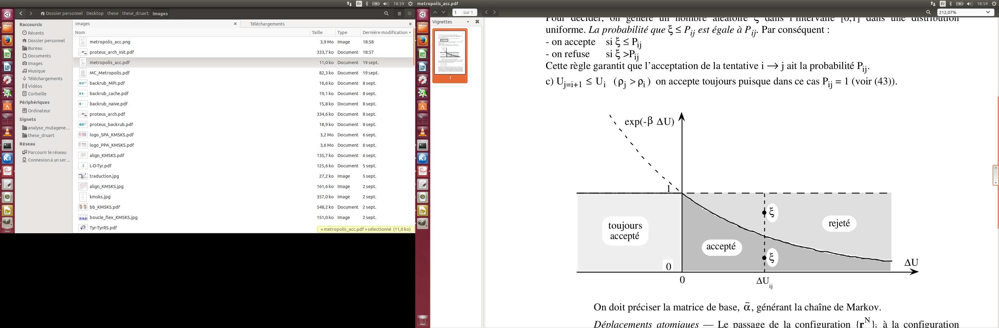
2.2. Échantillonnage Monte Carlo selon la distribution de Boltzmann
Ainsi,
accij
p(j)
e−βEj /Z
=
=
= e−β∆Eij
(2.20)
accji
p(i)
e−βEi/Z
où ∆Eij = Ej − Ei. Nous pouvons voir que cette équation ne dépend plus de la fonction
de partition et est donc calculable.
Critère d’acceptation de Metropolis Le critère de Metropolis définit les règles d’ac-
ceptation du déplacement i → j. Nous devons choisir accij de manière à satisfaire l’équa-
tion (2.20). Une solution possible est celle de Metropolis (Fig. 2.1) :
* si Ej ≤ Ei, alors accij = 1 et le déplacement est accepté ;
* si Ej > Ei, alors accij = e−β∆Eij. Un nombre aléatoire X est tiré selon une loi uniforme
∈ [0 ;1] :
- Si e−β∆Eij ≥ X, alors le mouvement est accepté ;
- Sinon le mouvement est rejeté.
Le critère de Metropolis permet donc d’accepter des mouvements défavorables, dans la
limite où la différence d’énergie entre les deux états i et j est faible et la température
pas trop basse. Ceci permet de ne pas rester dans un puits énergétique, et de passer les
barrières d’énergie séparant des états favorables.
E
X
X
E
E
Figure 2.1 – Critère d’acceptation Metropolis. En abscisse est représenté la diffé-
rence d’énergie entre i et j. En ordonnée, est tracée la probabilité de transition i → j.
41
Chapitre 2. De la mécanique statistique à l’échantillonnage des protéines :
implémentation dans Proteus
2.3 Concepts liés au CPD
2.3.1 Énergie de l’état déplié et mutation
Dans le cas du dessin de protéine, notre système est un polypeptide de L acides
aminés, qui baigne dans un solvant implicite. Nous supposons que chaque acide aminé
i peut adopter différents types t, t′..., menant à différentes séquences S. Il existe deux
classes de structures : repliée et dépliée. Pour la protéine repliée, nous supposons que
toutes les séquences partagent une petite bibliothèque des conformations possibles pour le
squelette polypeptidique ; pour chacune de ces conformations, les chaînes latérales peuvent
chacune explorer quelques conformations discrètes r, r′... de rotamères. L’énergie d’une
conformation dépend de sa séquence, la conformation du squelette, et la combinaison
particulière de rotamères. La structure de l’état dépliée n’est pas spécifiée, mais son énergie
Euf (S) est connue et a la forme :
L
X
Euf (S) =
Euf (ti).
(2.21)
i=1
où Euf(ti) est l’énergie déplié (unfolded) du type t à la position i. Nous effectuons l’ex-
ploration Monte Carlo, dont le but est de générer une chaîne de Markov des états, de
manière à ce que les états soient peuplés selon la distribution de Boltzmann. Le système
de simulation inclut explicitement une copie de la protéine repliée, dont la séquence et la
conformation peut varier. Un mouvement Monte Carlo possible est un changement d’un
rotamère ri à une position particulière i de la protéine repliée ; la différence d’énergie est
∆Eon = E(...ti,r′i...) − E(...ti,ri...), où les indices o, n se référent aux états rotamériques
anciens (old) et nouveaux (new). Un autre mouvement possible est une mutation : nous
modifions le type de chaîne latérale ti → t′ à une position
i
i choisie sur la protéine repliée,
assignant un rotamère particulier r′ à cette nouvelle chaîne latérale. En même temps,
i
nous effectuons la mutation inverse sur la protéine dépliée, t′ →
i
ti. La différence d’énergie
correspondante a la forme :
∆Eon = ∆Ef − ∆Euf = (Ef (...t′
) −
i,r′i...) − Ef (...ti,ri...)) − (Euf (t′i
Euf (ti))
(2.22)
42
2.3. Concepts liés au CPD
∆Eon mesure le changement de stabilité dû à la mutation (pour un lot de rotamères
donné). Cette procédure mime la situation où pour chaque séquence repliée échantillonnée
pendant la simulation, il y a une copie dépliée présente. Avec cette interprétation, les
mouvements de mutation peuvent être considérés comme déplier une copie de la protéine
et en replier une autre.
2.3.2 Fonction d’énergie décomposable par paires
Une énergie est dite “décomposable par paires” si elle a la forme suivante :
N
X
N
X
Etotale =
Eii +
Eij.
(2.23)
i
i<j
où Eii correspond à l’interaction d’un résidu i avec lui-même et avec le squelette de la
protéine, Eij à l’interaction entre deux résidus i et j, N est le nombre totale de résidus
et où chaque terme Eii et Eij ne dépend pas de la conformation des autres résidus k
(i 6= j). Cette décomposition de la fonction d’énergie permet de calculer de manière indé-
pendante les énergies de paires de résidus (Dahiyat & Mayo [1997], Gaillard & Simonson
[2014]). Il suffit ensuite de sommer les énergies de paires pour obtenir l’énergie totale
d’une conformation.
2.3.3 Notion de matrice d’énergie
L’espace conformationnel de la protéine d’intérêt est discrétisé le plus souvent par
un squelette fixe et une bibliothèque de rotamères squelette-indépendante discrète. Pour
alléger l’approximation rotamérique, soit une réduction des rayons van der Waals, soit une
minimisation gradient conjugué de quelques pas, est réalisée au moment de positionner un
rotamère (cf. plus loin). La combinaison de la fonction d’énergie décomposable par paires
et la discrétisation des chaînes latérales permettent le pré-calcul d’une matrice d’énergie.
Pour le calcul de la diagonale, pour chaque acide aminé, nous plaçons chaque rotamère
sur chaque position et nous calculons son énergie d’interaction avec lui-même et avec le
squelette de la protéine. Les termes non diagonaux de la matrice sont ensuite calculés
43
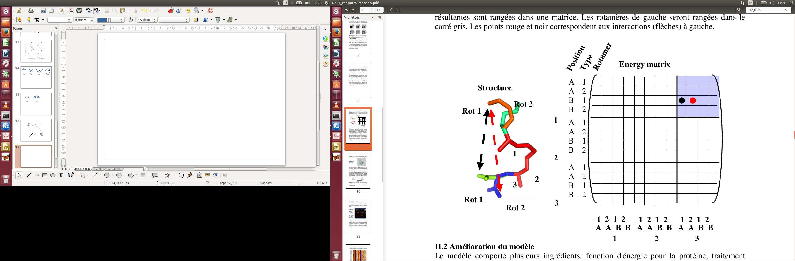
Chapitre 2. De la mécanique statistique à l’échantillonnage des protéines :
implémentation dans Proteus
(Fig. 2.2). Une double boucle est réalisée sur tous les rotamères, types, et positions, en
combinant toutes les paires possibles. La compléxité de ce calcul est quadratique par
rapport à la taille de la protéine.
Figure 2.2 – Calcul de la matrice d’énergie A gauche est représenté un peptide de
trois acides aminés. Les positions 1 et 3 possèdent chacune deux rotamères possibles, Rot1
et Rot2. L’interaction entre les deux acides aminés pour toutes les combinaisons possibles
de rotamères sont calculées successivement. A droite, les énergies résultantes sont rangées
dans une matrice. Les points rouge et noir correspondent aux interactions modélisées par
des flèches sur l’image de gauche.
2.3.4 Le logiciel Proteus
Proteus est un programme de CPD qui a été développé par l’équipe de Simonson
(Schmidt Am Busch et al. [2008], Simonson et al. [2013], Polydorides et al. [2016]). Il est
composé de trois éléments principaux (Fig. 2.3) :
(1) un programme de mécanique moléculaire XPLOR (Brünger [1992]), capable de décrire
les énergies d’interaction ;
(2) un ensemble de scripts sophistiqués (environ 4000 lignes) écrits en langage de script
XPLOR qui contrôlent le calcul de la matrice d’énergie du système d’intérêt selon diffé-
rents champs de forces (Charmm19 et Amber ff99SB) ;
44
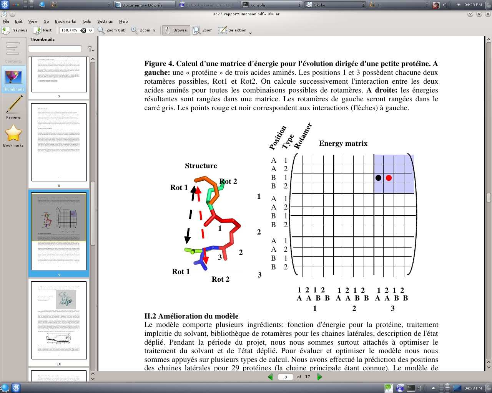


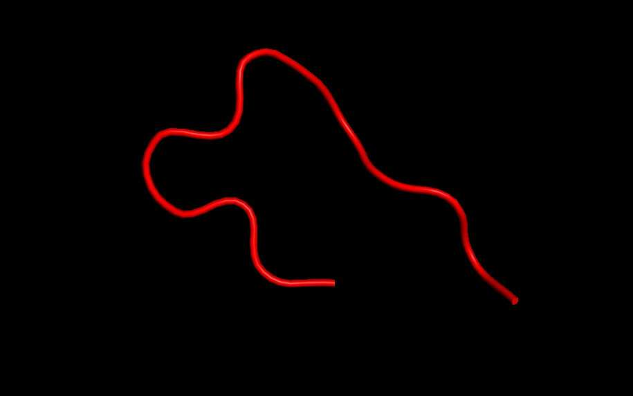
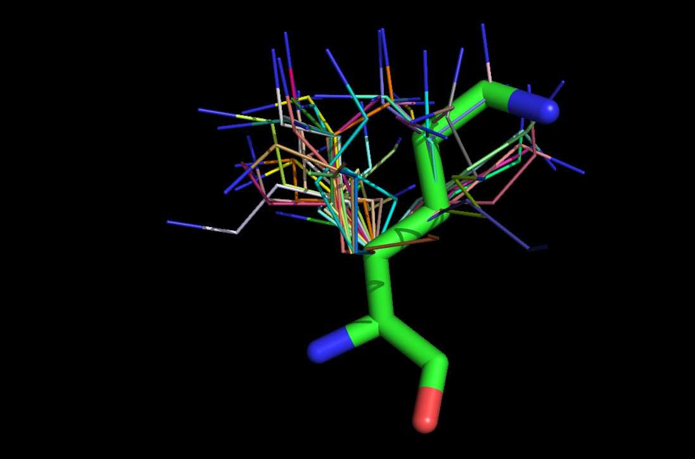
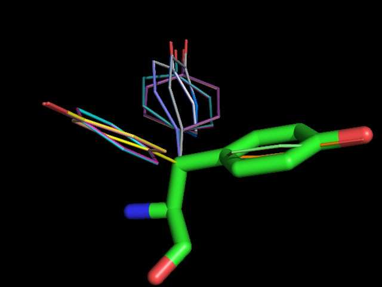
2.3. Concepts liés au CPD
(3) un programme C appelé “proteus” pour explorer l’espace des séquences et des confor-
mations selon différents algorithmes (Monte Carlo, heuristique de Wernisch et champ
moyen). Le programme proteus est contrôlé par un fichier de configuration avec un for-
mat XML simple. L’utilisateur peut notamment choisir le type d’exploration souhaité,
le nombre de pas d’exploration, la température d’échantillonnage, le type de mouvement
Monte Carlo, la séquence et la conformation initiale, et l’emplacement des fichiers d’en-
trées (matrice d’énergie) et des fichiers de sorties (séquences, énergies).
Matrice d'énergie
Squelette complet
XPLOR
Bibliothèque de rotamères
Lysine
Tyrosine
...
proteus
Figure 2.3 – Architecture de Proteus. A gauche est représenté le modèle protéique
divisé en deux partie : le squelette de la protéine rigide et la bibliothèque discrète de
rotamères. Au milieu, XPLOR calcul les énergies d’interactions par paires de rotamères,
enregistrées dans la matrice d’énergie à droite. En bas à droite, proteus lit la matrice
d’énergie pour réaliser les simulations d’exploration de séquences.
La fonction décomposable par paires permet de subdiviser le système en plusieurs
groupes, et de favoriser certaines interactions que d’autres via une fonction d’énergie in-
terne à proteus. Ces interactions sont précisées dans la balise <Optimization_Configuration>
après avoir définit les groupes via la balise <Group_Definition> :
<Group_Definition>
p r o t e i n e 1−100
l i g a n d 901
</Group_Definition>
45
Chapitre 2. De la mécanique statistique à l’échantillonnage des protéines :
implémentation dans Proteus
<Optimization_Configuration >
m( 0 . 1 p r o t e i n e + 0 . 1 l i g a n d + 0 . 8 p r o t e i n e ~ l i g a n d )
</Optimization_Configuration >
Dans la formule d’énergie, les groupes seuls correspondent à l’énergie intra-groupe, alors
que les groupes combinés avec un ∼ correspondent à l’énergie inter-groupes. Dans notre
exemple, nous favorisons l’interaction entre la protéine et le ligand en lui donnant une
pondération plus élevée.
Dans proteus, le jeu de déplacements comprend le changement d’un rotamère ou d’un
type à une position de la protéine. Dans ce dernier cas, nous modifions le type de la
chaîne latérale à la position choisie sur la protéine, en assignant un rotamère particulier
à cette nouvelle chaîne latérale. Le jeu de déplacements comprend aussi le changement
d’une paire de positions avec deux mouvements rotamériques, deux mutations, ou une
rotation et une mutation. Ceci a pour but de permettre à des positions couplées de se
déplacer en même temps. Ces options sont paramétrées par des probabilités contenus dans
ces balises :
# p r o b a b i l i t y o f a s i n g l e rotamer change
<Rot_Proba>
1 . 0
</Rot_Proba>
# p r o b a b i l i t y o f two rotamer changes
<Rot_Rot_Proba>
1 . 0
</Rot_Rot_Proba>
# p r o b a b i l i t y o f a s c mutation
<Mut_Proba>
0 . 1
</Mut_Proba>
# p r o b a b i l i t y o f a s c mutation and a rotamer change
<Mut_Rot_Proba>
0 . 1
46
2.3. Concepts liés au CPD
</Mut_Rot_Proba>
# p r o b a b i l i t y o f two s c mutations
<Mut_Mut_Proba>
0 . 1
</Mut_Mut_Proba>
Le changement de deux positions simultanément est réalisé pour une paire de positions
voisines. Deux positions sont considérées voisines si au moins un couple de rotamères
a une énergie d’interaction suffisamment élevée. La valeur d’énergie renseignée dans la
balise <Neighbor_T hreshold> est la valeur absolue du minimum d’énergie considérée
entre deux rotamères. Dans notre exemple, les positions seront voisines si un couple de
rotamères a une énergie d’interaction comprise dans les fourchettes [∞; −3] et ]3; ∞] :
<Neighbor_Threshold>
3 . 0
</Neighbor_Threshold>
L’espace des séquences peut être réduit en ciblant les mutations à un sous-ensemble
de type comme des types polaires.
<Space_Constraints>
p r o t e i n e . 8 1 ARG ASP #f i x the sequence f o r p o s i t i o n 81 at ARG or ASP
</Space_Constraints>
47
48
Chapitre 3
Mise en oeuvre du multi-squelettes
avec un mouvement hybride
Nous avons vu que la flexibilité du squelette protéique a une importance dans l’amé-
lioration de prédiction de séquences. Nous voulons tenir compte de cette flexibilité dans
le programme Proteus. Vu son organisation, nous proposons d’utiliser une bibliothèque
de squelettes protéiques pré-définie, qui sera exploré lors de l’optimisation des séquences.
L’ajout de cette fonctionnalité nécessite d’implémenter un nouveau mouvement Monte
Carlo pour les changements de squelette. Ce nouveau mouvement, appelé mouvement hy-
bride, est présenté dans ce chapitre, ainsi que sa probabilité d’acceptation. Nous verrons
que calculer exactement cette probabilité pose un problème d’explosion combinatoire.
C’est pourquoi nous présentons des solutions basées sur différentes approximations. Une
première approximation a été proposée par Nilmeier & Jacobson [2009] ; la seconde est
une approximation que nous proposons. Ensuite, nous discuterons de ces deux méthodes
d’estimation de la probabilité d’acceptation. Nous verrons que la première approximation
est peu coûteuse mais moins rigoureuse, alors que la seconde est plus coûteuse en temps
de calcul, mais est moins approximée et plus proche de la valeur exacte de la probabilité
d’acceptation. Enfin, nous présentons les concepts liés à l’implémentation dans Proteus.
3.1 Problème et enjeux des mouvements de squelette
Nous avons vu que les boucles de protéines présentaient une grande flexibilité. Nous
proposons donc de modéliser préférentiellement les mouvements de ces régions Nous avons
49
Chapitre 3. Mise en oeuvre du multi-squelettes avec un mouvement
hybride
choisi de discrétiser l’espace conformationnel en ne choisissant que quelques représentants
des conformations de boucles, qui sont enregistrés dans une bibliothèque. Plusieurs ap-
proches sont alors possibles. Tout d’abord, nous pouvons ajouter des sauts entre ces
conformations dans notre jeu de déplacements Monte Carlo. Nos premières simulations
ont été exécutées de cette façon sur plusieurs systèmes tests. Les résultats attendus n’ont
pas été ceux escomptés puisque les squelettes ne sont pas du tout échantillonnés équi-
tablement. En étudiant plus précisément différents essais de mouvements de squelette,
nous nous sommes rendus compte que le mouvement de squelette entraînait des conflits
stériques entre les chaînes latérales ou entre les chaînes latérales et le squelette. En effet,
avant le déplacement, la combinaison de rotamères est énergétiquement favorable pour
la conformation de squelette courante. En changeant la conformation de ce dernier, la
combinaison de rotamères n’est plus favorable (Fig. 3.1). La différence d’énergie entre
les combinaisons rotamères/squelette de départ et d’arrivée est trop élevée pour pouvoir
accepter le mouvement selon le critère de Metropolis. Les simulations ont été réalisées
en augmentant la température thermique jusqu’à kBT = 6.0 kcal/mol (soit 3000 K),
où 0.01% des mouvements de squelette ont commencé à être acceptés. En refusant ainsi
presque tous les mouvements de squelettes, même à température très élevée, nous reve-
nions de fait à des simulations mono-squelette. Le système est confiné dans un minimum
local, où l’échantillonnage du paysage énergétique reste très limité.
Ce problème d’échantillonnage est bien connu. Pour le contrer, différents algorithmes
ont été proposés. Certains réalisent plusieurs simulations en parallèles à des tempéra-
tures différentes. La méthode la plus classique est celle du Replica Exchange Monte
Carlo (REMC), mais plusieurs autres méthodes en découlent telles que Jump Walking
(Frantz et al. [1990]), Smart Walking (Zhou & Berne [1997]), Smart Darting (Andricioaei
et al. [2001]) et plus récemment Cool Walking (Brown & Head-Gordon [2003]). Les mar-
cheurs simulent chacun une trajectoire Monte Carlo. A un moment donné, les marcheurs
s’échangent leur conformation, permettant de passer les barrières énergétiques. De plus, il
est possible d’avoir une simulation où les mouvements sont température-dépendants. Dans
ce cas, les mouvements de faible amplitude ont une température d’acceptation faible, et
les mouvements de grandes amplitudes une température élevée. Cependant, nous avons vu
50
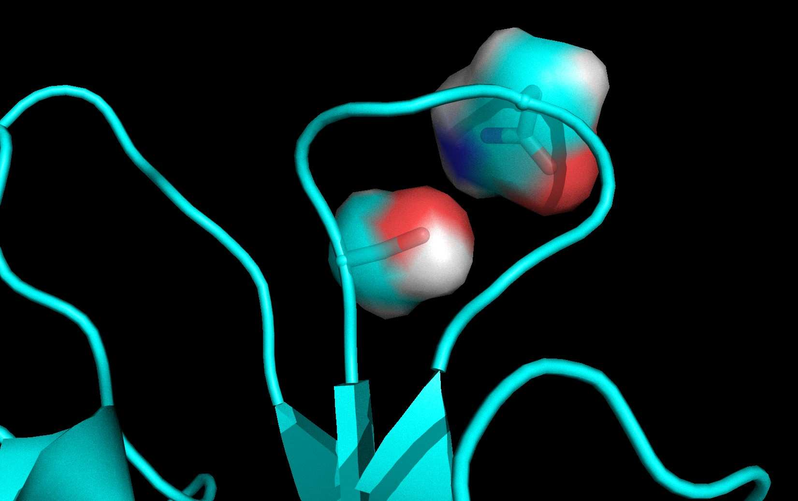
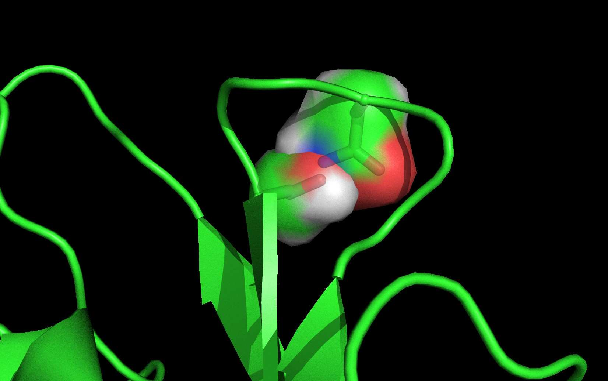
3.1. Problème et enjeux des mouvements de squelette
Squelette A
Squelette B
199N9 – 202S2 = -0.2 kcal/mol
199N9 – 202S2 = 331 kcal/mol
Conflit
stérique
Changement de
squelette
Figure 3.1 – Conflit stérique des chaînes latérales lors d’un changement de
squelette. Le mouvement de squelette A vers B entraîne un conflit stérique entre les
rotamères 9 de l’Asn199 et 2 de la Ser202.
que même avec une température extrêmement élevée, nous n’acceptions que peu de mou-
vements de squelette. Ce type de solution ne suffirait donc pas pour bien échantillonner
nos squelettes.
Une autre possibilité est d’ordonner les rotamères selon leur énergie, et de privilégier
les rotamères dont l’énergie est la meilleure et leur donner le même numéro de rotamère.
De cette façon, un rotamère de basse énergie avant le déplacement est remplacé par un
rotamère de basse énergie après. Cependant, plusieurs problèmes interviennent, notam-
ment lorsque certains squelettes possèdent plusieurs rotamères de basses énergies pour
une position donnée, et d’autres squelettes un seul. Cela limitera et biaisera les simula-
tions. Dans ce contexte, l’équipe de Ollikainen et al. [2015] génèrent un rotamère moyen
pour chaque position, qu’ils utilisent pour leur simulation. Cette méthode devient une
simulation heuristique, proposant une solution approximative.
D’autre méthodes, appelées Hybrid Monte Carlo (HMC), couplent des simulations
de dynamique moléculaire aux simulations de Monte Carlo. Lorsque des mouvements
de grande amplitude sont réalisés avec Monte Carlo, une dynamique moléculaire (ou
parfois une minimisation (Li & Scheraga [1987])) est réalisée pour supprimer les potentiels
51
Chapitre 3. Mise en oeuvre du multi-squelettes avec un mouvement
hybride
conflits stériques. Au regard de l’implémentation de proteus, réaliser une dynamique ou
une minimisation forcerait à calculer de nouveau les matrices d’énergies.
Une solution possible est de remplacer la minimisation ou la dynamique moléculaire
par une courte trajectoire Monte Carlo. Ainsi, un mouvement de squelette est suivi d’un
ajustement des rotamères, que nous appellerons relaxation. Ces deux opérations, déplace-
ment du squelette puis relaxation des rotamères constituent un déplacement Monte Carlo
d’un nouveau type, que nous appelons un “mouvement hybride”.
3.2 Présentation du mouvement hybride
La complexité des changements de squelette rend leur exploration Monte Carlo dif-
ficile. En effet, il est difficile de réaliser des mouvements collectifs de grande amplitude
dans un paysage énergétique rugueux. Nous avons décidé d’utiliser les mouvements hy-
brides pour accepter plus facilement et plus fréquemment les changements de squelette.
L’introduction de ce nouveau mouvement Monte Carlo nécessite de mettre en place une
méthode d’acceptation respectant la distribution de Boltzmann et la balance détaillée.
3.2.1 Théorie du mouvement hybride
Présentation du mouvement hybride Appelons l’état initial du mouvement, b,0 où
b désigne la conformation du squelette et 0 l’état initial des rotamères. Un mouvement
hybride se fait en deux étapes (Fig. 3.2) :
(1) mouvement du squelette b vers une nouvelle conformation b′, avec les types des chaînes
latérales et les rotamères inchangés.
(2) réalisation de N pas Monte Carlo dans l’espace des rotamères et mutations.
Cette deuxième étape, appelée “relaxation”, permet aux chaînes latérales de s’ajuster à
la nouvelle géométrie du squelette. Finalement, le système atteint un état noté b′,N.
52
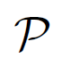
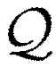
3.2. Présentation du mouvement hybride
mouvement
hybride
b, N
b', N
e
n
u
“inverse”
tio
riq
a
é
x
m
la
ta
re
ro
b, 0
b', 0
mouvement
mouvement
hybride
de squelette
“direct”
Figure 3.2 – Représentation des mouvements hybrides. Le mouvement de sque-
lette est représenté par les flèches noires horizontales. La relaxation est définie par les
flèches courbées où chaque point noir correspond à un pas rotamérique. Les flèches grises
représentent le mouvement hybride qui en combine le mouvement de squelette et la re-
laxation rotamérique.
Tableau 3.1 – Notation des probabilités.
Notation
Description
α(b → b′)
Probabilité de sélectionner un mouvement de squelette à l’étape (1)
α(b,0 → b′,N )
Probabilité de sélectionner un mouvement hybride entier
acc(b,0 → b′,N )
Probabilité d’accepter un mouvement hybride
π(b,0 → b′,N )
Probabilité globale de réaliser un mouvement hybride
N (b,0)
Population à l’équilibre de l’état b,0
α(PG)
Probabilité de réaliser le chemin générateur
π(i → i + 1|P)
Probabilité globale d’un mouvement de rotamère dans
≡ π(i → i + 1)
le contexte du squelette b′ et du chemin direct P
Pour analyser un mouvement hybride b,0 → b′,N, nous introduisons les probabilités
suivantes (Table 3.1) : α(b,0 → b′,N) correspond à la probabilité de sélectionner un
mouvement hybride ; acc(b,0 → b′,N) est la probabilité de l’accepter ; π(b,0 → b′,N)
est la probabilité globale de réaliser ce mouvement hybride. La probabilité de réaliser le
mouvement b,0 → b′,N peut s’écrire
π(b,0 → b′,N ) = α(b,0 → b′,N )acc(b,0 → b′,N ).
(3.1)
53
Chapitre 3. Mise en oeuvre du multi-squelettes avec un mouvement
hybride
La condition de la balance détaillée signifie que lors d’une longue trajectoire, les mou-
vements b,0 → b′,N sont compensés en moyenne par les mouvements inverses b′,N → b,0.
Un mouvement inverse consiste à réaliser tout d’abord le mouvement de squelette, b′ → b,
puis la relaxation N → 0 sur la conformation de squelette b (Fig. 3.2). La balance détaillée
peut être traduite par l’équation :
N (b′,N )π(b′,N → b,0) = N (b,0)π(b,0 → b′,N ).
(3.2)
Nous en déduisons :
N (b′,N )
acc(b,0 → b′,N )
α(b,0 → b′,N )
=
×
.
(3.3)
N (b,0)
acc(b′,N → b,0)
α(b′,N → b,0)
L’objectif est de choisir le ratio acc de manière à obtenir des populations de Boltzmann,
N (b′,N ) = e−β∆Eon
(3.4)
N (b,0)
avec ∆Eon = Eb′,N − Eb,0. Pour cela, les probabilités d’acceptation doivent vérifier :
acc(b′,N → b,0)
α(b,0 → b′,N )
α(b → b′) α(b′,0 −
→ b′,N )
e−β∆Eon =
=
.
(3.5)
acc(b,0 → b′,N )
α(b′,N → b,0)
α(b′ → b) α(b,N −
→ b,0)
Intéressons nous au numérateur α(b′,0 → b′,N) à droite de l’équation 3.5. En pratique,
l’état b′,N est obtenu via une trajectoire Monte Carlo avec un enchaînement particulier
d’états rotamériques successifs. Cet enchaînement forme un “chemin”, que nous appelons
le “chemin générateur”, P . Mais, il existe plusieurs autres chemins
G
P qui connectent
l’état b′,0 à l’état b′,N. Pour évaluer exactement la probabilité α(b′,0 → b′,N) de choisir
b′,N comme état final, il est nécessaire de prendre en compte cet ensemble de chemins. La
probabilité de réaliser la transition b′,0 → b′,N lors de la phase de relaxation est donc :
X
α(b′,0 → b′,N ) =
π′(0 → 1|P)π′(1 → 2|P) · · · π′(N − 1 → N |P)
(3.6)
P
54
3.2. Présentation du mouvement hybride
où chaque terme π′(i → i+1|P) correspond à un pas du segment Monte Carlo rotamérique,
dans le contexte du squelette b′ et du chemin P. La somme se fait sur tous les chemins P,
mais pour simplifier la notation, le contexte P sera implicite dans la suite. La probabilité
de sélectionner le mouvement (Eq. 3.6) a la forme d’une intégrale discrète de chemins
(Itzykson & Drouffe [1989]), où chaque chemin relie l’état b′,0 d’énergie élevée à l’état
partiellement relaxé b′,N et est pondéré par sa probabilité. L’ensemble {P} des chemins
directs a un ensemble correspondant de chemins inverses, {Q} (Fig. 3.2). Ces chemins
inverses réalisent les mêmes mouvements de rotamères, mais dans l’ordre inverse et sur le
squelette b.
Finalement, pour échantillonner les états selon une distribution de Boltzmann, les
probabilités d’acceptation devront vérifier la condition :
P
acc(b′,N → b,0)
α(b → b′)
= eβ∆Eon
P π′(0 → 1) · · · π′(N − 1 → N )
P
(3.7)
acc(b,0 → b′,N )
α(b′ → b)
Q π(N → N − 1) · · · π(1 → 0)
Dans l’équation 3.7, il est difficile de calculer les intégrales de chemin menant de l’état
b′,0 à l’état b′,N , ou l’inverse. En effet, la combinatoire de ces intégrales est très vaste
et dépasse les limites des ordinateurs. Cependant, il est possible d’estimer la valeur de
cette intégrale en identifiant et en utilisant un sous-ensemble de chemins représentatifs.
Deux approches sont proposées, utilisant deux sous-ensembles de chemins distincts. La
première approche n’utilise que le chemin générateur P , alors que la seconde utilise
G
plusieurs chemins.
Gestion des pas rejetés Au cours de la relaxation b′,0 → b′,N, un certain nombre de
pas i → j sont rejetés. Dans ce cas, les états i et j possèdent la même structure, et le
mouvement rotamérique est nul. La probabilité de rejeter un mouvement est donnée par :
X
π(i → i) = 1 −
π(i → j)
j6=i
X
(3.8)
=
α(i → j)(1 − acc(i → j))
j6=i
55
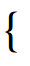
Chapitre 3. Mise en oeuvre du multi-squelettes avec un mouvement
hybride
Une difficulté se présente : sur le chemin Q, il arrive que tous les autres rotamères j 6= i
soient plus favorables, d’où une probabilité de rejet nulle et un ratio non-défini dans
l’équation 3.7. Pour échapper à cette difficulté, nous adoptons la convention que les pro-
babilités du mouvement nul sont symétriques π(i → j ≡ i) = π(j → i ≡ j). Ces deux
contributions disparaissent donc du ratio de l’équation 3.7. De fait, les mouvements nuls
sont retirés des chemins P et Q. Pour la suite, nous continuerons cependant de noter la
probabilité des chemins avec le produit de N termes, mais nous distinguerons le chemin
générateur “primitif” contenant les mouvements nuls et le chemin générateur “simplifié”
où les mouvements nuls sont retirés (Fig. 3.3).
Mouvement hybride
b,0
Mouvement
b',0
Relaxation rotamérique
b',N
squelette
1 2 N
Chemin générateur primitif
Chemin générateur simplifié
Chemins permutés
Figure 3.3 – Représentation des mouvements hybrides et des différents che-
mins. Le squelette initial est schématisé en bleu, avec quelques chaînes latérales ; après
le saut initial de squelette (vert), les rotamères des chaînes latérales sont relaxées par
les N pas Monte Carlo, schématisés avec les petites flèches. Le pas 2 est un pas rejeté.
Pour les autres, les flèches colorées réfèrent à différentes chaînes latérales qui subissent
des mouvements de rotamères à chaque pas. Une fois que le chemin générateur primitif
est fait, les pas rejetés sont supprimés, et les chemins permutés sont considérés, où chaque
changement de rotamères est réalisé dans un ordre différent, comme montré.
56
3.2. Présentation du mouvement hybride
3.2.2 Approximation “mono-chemin” ou SPA
Pour évaluer un mouvement hybride, l’équipe de Nilmeier & Jacobson [2009] ne consi-
dère que la relaxation rotamérique initiale (étape 2). Cette relaxation suit le chemin
générateur b′,0 Pg
−→ b′,N . La probabilité de suivre ce chemin en particulier est :
α(Pg) = π′(0 → 1)π′(1 → 2) · · · π′(N − 1 → N).
(3.9)
Ainsi, la probabilité de choisir le mouvement b,0 → b′,N en utilisant le chemin générateur
est :
α(b,0 Pg
−→ b′,N ) = α(b → b′)α(Pg)
(3.10)
Pour le chemin générateur “direct” Pg, il existe un chemin inverse Qg où le changement
b′ → b se produit en premier, puis le chemin de relaxation Pg est suivi en sens inverse,
N → 0. Nous avons :
α(Qg) = π(N → N − 1) · · · π(2 → 1)π(1 → 0),
(3.11)
Nilmeier & Jacobson [2009] supposent que la balance détaillée est vérifiée pour cette paire
de chemins. Il s’en suit que la probabilité d’accepter le mouvement hybride via ces chemins
vérifie :
acc(b′,N → b,0)
α(b,0 → b′,N )
α(b → b′)
α(P
× e−β∆E
g)
on =
=
×
(3.12)
acc(b,0 → b′,N )
α(b′,N → b,0)
α(b′ → b)
α(Qg)
Le calcul du ratio α(Pg) est assez simple. Lorsqu’un mouvement rotamérique i → i + 1
α(Qg)
est réalisé sur le squelette b′, et qu’il est accepté, son énergie ∆E′
est sauvegardée
i,i+1
pour évaluer la probabilité du chemin (Fig. 3.4). A ce moment-là, il suffit de calculer la
différence énergétique ∆Ei+1,i qui correspond à la contribution énergétique de ce même
mouvement rotamérique dans le sens i + 1 → i sur le squelette b. Cette valeur d’énergie
sera utilisée pour calculer la probabilité de la relaxation inverse.
57
Chapitre 3. Mise en oeuvre du multi-squelettes avec un mouvement
hybride
mouvement
hybride
b, N
b', N
“inverse”
tion
érique
∆E
i+1
i+1
∆E'
am
i+1,i
i
i
i,i+1
relaxa
rot
b, 0
b', 0
mouvement
mouvement
hybride
de squelette
“direct”
Figure 3.4 – Calcul de l’acceptation du mouvement hybride avec l’approxi-
mation SPA. Sur le chemin de la relaxation, la différence d’énergie est calculée sur les
chemins direct et inverse pour chaque pas Monte Carlo accepté sur le chemin direct.
Étant donné que le produit de plusieurs exponentielles peut être factorisé, nous avons :
P
acc(b,0 → b′,N )
e−β
∆Ei+1,i
= e−β∆Eon ×
P
(3.13)
acc(b′,N → b,0)
e−β
∆E′i,i+1
Dans les sommes à droite, n’apparaissent que les différences d’énergies ∆E′
,
i,i+1
∆Ei+1,i
non négatives. En effet, les pas ayant des différences négatives “disparaissent” du produit
puisque leur probabilité d’acceptation est de 1.
Au final, le mouvement hybride est accepté avec la probabilité suivante :
P
P
acc(b,0 → b′,N ) = min(1; e−β(∆Eon+ ∆Ei+1,i− ∆E′i,i+1)
(3.14)
Par la suite, cette approximation sera appelée méthode SPA pour Approximation Mono-
Chemin (“Single Path Approximation”). Cette approximation est sévère car d’une part,
elle ne considère qu’un seul chemin pour évaluer la probabilité d’acceptation, et d’autre
part le chemin générateur est obtenu dans le contexte du squelette b′, puis “réutilisé” pour
le squelette b. Ces deux caractéristiques peuvent influencer les simulations.
3.2.3 Approximation des “chemins permutés” ou PPA
Génération d’un ensemble de chemins Nous avons vu que la probabilité exacte de
choisir l’état final b′,N dépend théoriquement de l’ensemble des chemins menant de l’état
58
3.2. Présentation du mouvement hybride
b′,0 à l’état b′,N (Eq. 3.5), où b′,N est produit par le chemin générateur. Cet ensemble de
chemins étant difficile à évaluer et à calculer, nous proposons d’utiliser un sous-ensemble
de chemins (Eq. 3.7) (Druart et al. [2016a]). Nous générons ce sous-ensemble en comparant
les états b′,0 et b′,N. Nous recensons les positions dont les rotamères diffèrent entre les
deux états (Fig. 3.5). Le nombre de ces positions “variables” est noté m. En revanche,
si une position effectue un changement de rotamère r → r′ à l’étape i, puis revient au
rotamère initial par un changement r′ → r à une étape ultérieure j (où i < j ≤ N), cette
position n’est pas comptée dans les positions variables. La figure 3.5 présente un exemple
de comparaison des états b′,0 et b′,N, et recense deux rotamères différents.
Pour construire de nouveaux chemins b′,0 → b′,N, nous allons effectuer les mêmes
changements de rotamères dans des ordres différents. Nous appelons ces chemins des
chemins “permutés” (Fig. 3.3).
b',0
b',N
Comparaison rotamérique
des deux états
Figure 3.5 – Comparaison rotamérique entre l’état initial et l’état final de la
relaxation. A l’état initial b′,0, tous les rotamères sont noirs. Au cours de la relaxation,
les rotamères modifiés sont colorés. A la fin de la relaxation, seuls les rotamères colo-
rés sont pris en considération pour générer les chemins permutés (b′,N). Le mouvement
intermédiaire du rotamère vert n’est pas pris en compte. Nous avons donc m = 2.
Utilisation des chemins permutés Pour chaque chemin permuté P, les probabilités
π′(i → i + 1) sont différentes de celles du chemin générateur, parce que les mouvements
de rotamères prennent place dans un contexte rotamérique différent. Nous supposons que
la somme sur ces chemins permutés est un bon estimateur de l’intégrale de chemins qui
apparaît dans le numérateur de l’équation 3.7. De même, pour les chemins inverses Q,
59
Chapitre 3. Mise en oeuvre du multi-squelettes avec un mouvement
hybride
les mêmes m mouvements de rotamères sont réalisés mais dans l’ordre inverse et dans
le contexte de la conformation b au lieu de b′. Ainsi, notre probabilité d’acceptation du
mouvement hybride vérifie :
P
acc(b′,N → b,0) = eβ∆Eon P π′(0 → 1)···π′(N − 1 → N)
P
(3.15)
acc(b,0 → b′,N )
Q π(N → N − 1) · · · π(1 → 0)
Le nombre de chemins permutés est en principe m!. Afin de réduire encore plus la
combinatoire, nous introduisons un paramètre Pmax correspondant au nombre de chemins
maximal utilisé pour estimer la probabilité d’acceptation. Si m! est inférieur à Pmax, alors
la probabilité du mouvement hybride est estimée en utilisant tous les chemins permutés.
Si m! est supérieur à Pmax, alors un sous-ensemble de chemins permutés de taille Pmax est
choisi aléatoirement. De même que pour la méthode SPA, nous calculons α(P) et α(Q)
en sommant les différences énergétiques de chaque mouvement rotamérique pour chaque
chemin direct et indirect. Ensuite, sont sommées les probabilités des chemins directs et
indirects. Ainsi, le mouvement hybride est accepté avec la probabilité suivante :
P
P ∆Ei,i+1
acc(b,0 → b′,N ) = min(1; e−β∆Eon ×
Q e−β
P
P
)
(3.16)
∆E′i+1,i
P e−β
Par la suite, cette approximation sera appelée méthode PPA pour Approximation des
Chemins Permutés (“Permuted Path Approximation”).
3.2.4 Optimisation des temps de simulation avec PPA
Couplage des rotamères dans les chemins permutés Supposons un chemin P1
avec trois changements “non négatifs” aux positions a, b, c. Ce chemin est schématisé de
cette manière : a
→ b
→ c
→. L’acceptation acc(P1) de ce chemin P1 est donnée par :
acc(P
+∆E1c)
1) = e−β(∆E1
a +∆E1
b
(3.17)
Un chemin permuté P2 est b
→ a
→ c
→ ; acc(P2) est donnée par :
acc(P
+∆E2c)
2) = e−β(∆E2
a +∆E2
b
(3.18)
60
3.2. Présentation du mouvement hybride
Dans P1, a change d’abord, puis b ; dans P2 c’est l’inverse. Si les acides aminés correspon-
dants sont éloignés, le rotamère à la position a ne va pas influencer ∆Eb : P1 et P2 auront
la même probabilité. Si ils sont proches, nous aurons ∆E2 6=
, et nous dirons que ces
b
∆E1b
positions sont couplées. Nous dirons dans le premier cas que a et b commutent ; dans le
deuxième cas non. Nous pouvons également introduire une notion de commutateur [a,b]
et des calculs associés, mais ils dépassent le cadre de ce chapitre. Ici, nous nous limitons
à identifier les positions non-couplées et à les exploiter pour simplifier le calcul.
Pour chaque chemin générateur, nous identifions les m positions auxquelles les rota-
mères diffèrent entre l’état initial et final. Il est possible de classer les positions de cette
liste en deux catégories : les positions non couplées et les positions couplées. Une posi-
tion est dite couplée si elle interagit énergétiquement avec au moins une autre position
de la liste. Ceci implique que l’ordre des changements de rotamères à ces positions influe
sur la probabilité d’acceptation des chemins permutés, et que leur permutation n’est pas
commutative. Au contraire, les positions non couplées n’interagissent avec aucune des
autres positions de la liste. Ceci est dû par exemple à une trop grande distance entre
les chaînes latérales. Le mouvement d’un rotamère non couplé est donc indépendant des
autres mouvements de rotamères de la liste. Ayant une contribution énergétique constante
et indépendante de l’ordre où il est placé dans un chemin, il aura une influence constante
sur la probabilité globale des chemins. Ainsi, il est possible de réduire le nombre de chemins
permutés à utiliser en extrayant les r rotamères non couplés du nombre m. Le nombre de
chemins à explorer devient alors (m − r)!.
61
Chapitre 3. Mise en oeuvre du multi-squelettes avec un mouvement
hybride
Probabilité
du chemin
Rotamères
Rotamères
Poids
0.43
-0.83
-0.24
couplés
non couplés
0.53
1.
0.43
-0.24
-0.83
0.43
-0.24
-0.83
3
0.53
2.
-0.83
0.43
-0.24
3.
0.53
-0.83
-0.53
0.72
4.
0.44
-0.53
0.72
-0.83
-0.53
0.72
-0.83
5.
0.44
3
-0.53
-0.83
0.72
6.
0.44
c
b
a
Figure 3.6 – Schéma des rotamères couplés ou non. Chaque flèche représente un
mouvement de rotamère à une position de la protéine, où chaque couleur représente un
mouvement de rotamère en particulier : rotamère a en vert, rotamère b en bleu et rotamère
c en rouge. Les contributions énergétique de chaque mouvement de rotamères sont notées
au dessus de chaque flèche. A gauche sont représentés l’ensemble des m! chemins permutés
possibles. En noir sont représentés la probabilité de réaliser chaque chemin. A droite est
représentée l’optimisation possible, réduisant les calculs de 6 chemins à 2 chemins, chacun
de poids 3.
Pour exemple, la figure 3.6 présente l’optimisation proposée. Supposons trois mouve-
ments de rotamères a, b et c, chacun ayant lieu à une position différente de la protéine.
La contribution énergétique du mouvement b reste constante quel que soit sa place dans
le chemin. Le rotamère b n’est donc pas couplé. Au contraire, les rotamères a et c sont
couplés car leur contribution énergétique varie selon leur ordre. Ainsi, les six (3 !) che-
mins présentés peuvent être simplifiés en deux (2 !) chemins, tout en tenant compte de
la contribution énergétique constante du rotamère b. Le poids de chaque chemin “utile”
peut être calculé de cette manière :
m!
poids =
.
(3.19)
(m − r)!
Détermination des rotamères non couplés Pour déterminer à l’avance combien
de rotamères sont couplés, un algorithme simple est proposé. Nous avons vu que si un
62
3.2. Présentation du mouvement hybride
rotamère est couplé, alors sa place dans le chemin par rapport aux autres rotamères a
une influence sur la probabilité du chemin. L’idée est de déplacer le dernier rotamère d’un
chemin en le plaçant à la première place, tout en conservant l’ordre des autres rotamères
fixe. De cette manière, son ordre avec tous les autres rotamères est inversé. Ainsi, si la
probabilité du chemin varie, cela signifie que le rotamère déplacé est couplé au moins avec
un autre rotamère du chemin. En répétant ce processus de manière itérative pour chaque
rotamère, nous pouvons définir exactement quels rotamères sont couplés.
Probabilité
du chemin
a
b
c
1.
0.53
≠ → c couplé
c
a
b
5.
0.44
= → b non couplé
b
c
a
4.
0.44
≠ → a couplé
a
b
c
1.
0.53
Figure 3.7 – Détermination des rotamères couplés ou non. Chaque chemin est
obtenu en déplaçant le dernier rotamère du chemin à la première place. La comparaison
des probabilités des chemins détermine si le rotamère déplacé est couplé aux autres.
La figure 3.7 montre un exemple pour déterminer le couplage des rotamères. A partir
d’un chemin (1.) et de sa probabilité, nous déplaçons le rotamère c à la première place.
Nous obtenons le chemin (5.) (de la figure 3.6), avec une probabilité différente du chemin
(1.). Ceci signifie que le rotamère c est couplé soit avec a soit avec b. Puis le rotamère
b est déplacé à la première place, ne faisant pas varier la probabilité du chemin (4.).
Ainsi, le rotamère b n’est couplé avec aucun rotamère. Enfin, en plaçant le rotamère a à
la première place, nous revenons au chemin initial (1.). Encore une fois, la probabilité du
chemin évolue avec l’ordre du rotamère signifiant que a est couplé (à c).
Dans cet exemple, nous calculons au final la probabilité de 3 chemins, puis les proba-
bilités des mouvements hybrides avec 8 chemins (4 directs et 4 inverses) en utilisant notre
algorithme. Sans cet algorithme, nous aurions 12 chemins (6 directs et 6 inverses).
63
Chapitre 3. Mise en oeuvre du multi-squelettes avec un mouvement
hybride
3.2.5 Discussion et conclusion
Suite à la difficulté de calculer de manière exhaustive la probabilité d’accepter un
mouvement hybride, deux approximations ont été proposées pour l’estimer. La première
estimation SPA proposée par Nilmeier & Jacobson [2009] utilise le chemin générateur
simplifié. L’avantage de cette méthode est d’obtenir une solution rapidement. Cependant,
elle ne prend en compte qu’un seul chemin, ce qui n’est pas représentatif de l’ensemble
des chemins possibles. De plus, le chemin générateur est choisi par une trajectoire Monte
Carlo, en présence du paysage énergétique du squelette b′. Pour le mouvement inverse,
sur le squelette b, le chemin ne dépend plus du paysage énergétique, mais est imposé par
les choix Monte Carlo acceptés au cours de la relaxation (Fig. 3.8). Ce biais favorise les
chemins directs et défavorise les chemins inverses. Dans cette situation, il est probable
que la balance détaillée ne sera pas parfaitement respectée.
Ce biais est réduit dans notre méthode PPA. En ne retenant que les différences rota-
mériques entre les états initial et final sans ordre particulier, nous ne tenons plus compte
de la trajectoire PG dans tous ses détails (Fig. 3.8). Nous faisons donc l’hypothèse que
notre méthode PPA est un meilleur estimateur. Cependant, elle possède ces limitations,
telles que les temps de calculs pour évaluer les probabilités des ensembles de chemins
directs et inverses. De plus, nous ne pouvons pas toujours calculer l’ensemble des chemins
permutés si leur nombre est trop élevé. Mais nous avons vu qu’une optimisation simple
peut être utilisée pour réduire le temps de simulation, et réduire le nombre de chemins
permutés indépendants.
64
3.3. Mise en œuvre des simulations multi-squelettes
Chemin direct
Chemin inverse
0
0
Balance détaillée
non respectée
SPA
N
N
Favorable
Défavorable
Chemin direct
Chemin inverse
0
0
Balance détaillée
PPA
respectée
N
N
Favorable
Favorable
Figure 3.8 – Biais introduit par la méthode SPA. Chaque carré représente le
paysage énergétique, en bleu sont représentés les barrières énergétiques, les points et
flèches noirs sont les états et le chemin choisis.
3.3 Mise en œuvre des simulations multi-squelettes
Pour réaliser des simulations multi-états, des choix d’implémentation ont été néces-
saires, ainsi qu’une restructuration du programme proteus. Nous verrons dans une pre-
mière partie les concepts liés aux simulations multi-squelettes, puis dans une seconde
partie un exemple détaillé sous forme de tutoriel. Nous considérons que les conforma-
tions de squelettes ont déjà été générées (e.g. par une courte simulation de dynamique
moléculaire).
65
Chapitre 3. Mise en oeuvre du multi-squelettes avec un mouvement
hybride
3.3.1 Concepts liés aux simulations multi-squelettes
3.3.1.1 Parties fixes et mobiles
Nous avons décidé de cibler la flexibilité de la protéine sur une partie d’intérêt. Ainsi,
comme exemple, nous allons nous baser sur un peptide d’une longueur de 10 résidus. Nous
supposons qu’il possède une partie flexible “mob” comprenant les positions 5 à 7, décrite
par trois conformations de squelette différentes. Afin de dissocier les trois squelettes, un
nom de “chaîne” leur est associé : A, B, C. Les positions 1-4 et 8-10 sont rigides (partie
“fix”) et possèdent une structure de squelette commune (Fig. 3.9).
5A
6A
7A
1::A 2::A
3::A
4::A
8::A
9::A
10::A
Diagonale
1::B 2::B
3::B
4::B
5B
6B
7B
8::B
9::B
10::B
1::C 2::C
3::C
4::C
8::C
9::C
10::C
5C
6C
7C
5A
6A
7A
1
2
3
4
5B
6B
7B
8
9
10
Non diagonale
5C
6C
7C
Figure 3.9 – Schéma d’un peptide avec une partie flexible. Le peptide est découpé
en quatre parties : la partie fixe en noir, la partie flexible en rouge, bleu et vert. En
haut est représentée la notation utilisée pour calculer la diagonale de la matrice. Les
trois conformations de la partie flexible sont considérées avec la partie fixe pour calculer
l’énergie entre chaque rotamère et le squelette de la protéine. La position 1 aura pour
un même rotamère trois valeurs différentes d’énergie, une pour chaque conformation de
squelette. Cette position est donc dupliquée en 1::A, 1::B et 1::C. En bas est représentée
la notation utilisée pour le calcul de la partie non diagonale. La position 1 n’est plus
dupliquée puisque l’énergie de paires précise dans quel contexte nous nous trouvons ; par
exemple, 1-5A, 1-5B ou 1-5C.
66
3.3. Mise en œuvre des simulations multi-squelettes
3.3.1.2 Restructuration de la matrice d’énergie
Nous avons vu que pour une simulation mono-squelette, la diagonale de la matrice
d’énergie correspond aux énergies d’interaction de chaque chaîne latérale avec elle-même
et avec le squelette de la protéine. Les énergies non diagonales correspondent aux énergies
d’interactions entre paires de chaînes latérales. Dans le cas où nous avons une boucle
flexible “mob” décrite par plusieurs conformations de squelette, il faut calculer une matrice
d’interaction pour chacune de ces conformations. Pour des raisons pratiques toutes les
matrices de sont pas calculées complètement. En effet, les parties fixes sont communes à
toutes les matrices. Ces parties de la matrice ne seront donc pas dupliquées.
Calcul de la diagonale Lors du calcul de la diagonale, plusieurs données dépendent de
la conformation A, B ou C de mob. Le positionnement des rotamères de mob en dépend,
évidemment. Mais les énergies diagonales de fix en dépendant aussi. En effet, le terme
GB de la fonction d’énergie utilise les rayons de solvatation de l’environnement natif, qui
seront différents selon que mob occupe A, B ou C. Ainsi, même si une position est fixe,
ses termes diagonaux dépendent de la conformation de mob. Une diagonale complète est
calculée pour chacune des conformations A, B et C, et sauvegardée dans un tableau (Fig.
3.10 à gauche).
Dans les fichiers qui enregistrent la matrice d’énergie, il est nécessaire d’adopter une
nomenclature pour distinguer les positions flexibles et fixes, et leur appartenance aux
différents squelettes. En pratique, un nom de chaîne est utilisé pour chaque squelette A,
B et C, pour les squelettes appelés mobA, mobB et mobC. Le symbole :: est inséré entre
le numéro de position et le nom de la chaîne auquel il appartient pour spécifier la rigidité
du squelette associé à la position. Par exemple, nous notons 4::A si le squelette A est
rigide en position 4 et 5A s’il est flexible à la position 5 (Fig. 3.9 en haut).
67
Chapitre 3. Mise en oeuvre du multi-squelettes avec un mouvement
hybride
Diagonale
posi
rot
A
B
C
Non diagonale
1
1
.
1
2
3
.
1
2
3
4
5
6
7
8
9
10
4
5
6
7
8
9
10
.
5
1
1
2
.
.
.
2
2
3
.
.
.
3
3
4
.
.
.
4
4
5
.
.
.
5
5
6
.
.
.
6
6
7
.
.
.
7
7
8
.
.
.
8
8
9
.
.
.
9
9
10
.
.
.
10
10
Figure 3.10 – Calcul des matrices. A gauche sont représentées les diagonales de la
matrice d’énergie, calculée entièrement pour chaque conformation de squelette. A droite
sont représentées les parties non diagonales de la matrice. Les zones grises sont les énergies
d’interaction entre partie fixe et partie fixe, en rouge les énergies d’interactions entre la
partie flexible et flexible de la conformation A, et rouges-grises les énergies d’interaction
entre la partie fixe et flexible A. La seconde matrice représente les énergies d’interaction
pour les autres conformations de squelette B en bleu/bleu-gris, et C en vert/vert-gris.
Calcul des énergies de paires Les énergies de paires ne dépendent pas de la confor-
mation globale de la protéine, mais uniquement des deux positions i et j. La notation : :
disparaît alors pour la partie fixe (noté 4). Pour chaque squelette une matrice non dia-
gonale est calculée. Le calcul de la matrice d’énergie est subdivisé en trois parties. Les
énergies de paires faisant intervenir deux résidus de la partie rigide, “fix-fix” (en noir,
Fig. 3.10) sont calculées. Puis les énergies de paires faisant intervenir des parties mobiles
sont calculées : d’une part, les énergies d’interaction “fix-mobA” entre la partie fixe et le
squelette A (en rouge foncé) et d’autre part les énergies de paires “mobA-mobA” entre les
résidus de la partie flexible (en rouge clair). Cette étape est réalisée pour chaque partie
mobile.
68
3.3. Mise en œuvre des simulations multi-squelettes
3.3.1.3 Échange de squelettes au cours de la simulation
Proteus a en interne une fonction d’énergie dans laquelle les énergies des différentes
parties de la protéine peuvent être pondérées. Nous utilisons cette fonctionnalité pour
introduire nos conformations A, B et C.
<Optimization_Configuration >
m( 1.0 f i x + 1.0 mobA + 0 mobB + 0 mobC + 1.0 mobA~ f i x +
0 mobB~ f i x + 0 mobC~ f i x )
</Optimization_Configuration >
où le terme fix représente la partie fixe de la protéine. Les poids positifs signifient que les
énergies des termes associés sont prises en compte ; les termes à poids nul sont ignorés.
Nous parlons de squelette “actif” ou “inactif”. Lorsqu’il y a un échange de squelette, ce
sont en fait les poids qui sont échangés. Ainsi, un terme squelettique actif donne son
poids à un terme squelettique inactif et va recevoir le poids nul en échange ; après un
changement A → B, la fonction d’énergie sera la suivante :
m( 1.0 f i x + 0 mobA + 1.0 mobB + 0 mobC + 0 mobA~ f i x +
1.0 mobB~ f i x + 0 mobC~ f i x )
3.3.1.4 Évolution rotamérique simultanée sur tous les squelettes
Lors des simulations en multi-squelettes, nous avons décidé d’implémenter ces mouve-
ments de manière à ce qu’à chaque pas Monte Carlo, les modifications rotamériques sur
le squelette actif soient répercutées sur les autres squelettes. Ainsi, tous les squelettes se
voient munies des mêmes rotamères à tout instant. Lors d’un échange de poids, actif ↔
inactif, le squelette inactif est évalué avec ce jeu de rotamères (hérité du squelette actif).
Ce choix a pour but de réduire les temps de calculs. En effet, une optimisation existe
dans le code. Lors d’un changement d’un rotamère, l’énergie totale n’est pas entièrement
calculée. Seule la contribution énergétique de l’ancien rotamère old est remplacée par la
contribution du nouveau rotamère new :
Enew = Eold − Erot_old + Erot_new
(3.20)
69
Chapitre 3. Mise en oeuvre du multi-squelettes avec un mouvement
hybride
Ainsi, l’énergie totale est simplement mise à jour à chaque pas Monte Carlo, et ceci pour
chaque squelette. Lors d’un changement de squelette, la nouvelle énergie totale est donc
déjà disponible. De plus, lors du mouvement hybride, les probabilités des chemins directs
et inverses peuvent être évaluées en même temps.
Étudions la complexité de cet algorithme pour 10 pas Monte Carlo. Supposons une
protéine d’une longueur L =100 positions, décrite par S =6 squelettes. Un rotamère rot
est modifié à chaque pas, soit deux calculs de contribution énergétique. En considérant
qu’un calcul énergétique dure t =1 seconde, alors un changement de rotamère à chaque
pas pendant 10 pas revient à 2 L S t × 10 = 1200 secondes.
Si à chaque changement de squelette l’énergie totale d’une conformation doit être
recalculée en entier (soit S=2), alors ce calcul revient à 2 L S t × 9 + L2 = 11800
secondes. Le premier terme de la somme revient à calculer la contribution énergétique
d’un changement de rotamères sur deux squelettes pour 9 pas Monte Carlo. Le second
terme est le calcul de l’énergie totale pour le nouveau squelette choisi au 10ème pas.
3.3.1.5 Énergie intrinsèque des squelettes
La fonction d’énergie décomposée par paires utilisée dans Proteus ne comprend pas
l’énergie intrinsèque du squelette. En effet, considére jusqu’à présent comme une constante,
ce terme pouvais être omis. Avec plusieurs squelettes mobA, mobB, mobC, leurs énergies
intrinsèques peuvent être différentes. Pour spécifier ces énergies, nous avons choisi de les
inclure dans l’énergie de références Euf de chaque acide aminé, qui représente en principe
la contribution de l’état déplié (cf. section 2.3.1). En effet, en modifiant les énergies de
référence, il est facile d’ajouter cette quantité à l’énergie totale du système. Nous pouvons
ainsi ajuster les énergies totales de chaque squelette en fonction du modèle physique et
de l’application. Par exemple, nous pouvons leur donner des énergies égales, ou en favo-
riser un en particulier. Cette possibilité sera utilisée par la suite à plusieurs reprises. Un
exemple est donné ici :
<Ref_Ener>
ALA 5A 4.536497
ALA 5B 6.536497
70
3.3. Mise en œuvre des simulations multi-squelettes
ALA 5C 5.036497
</Ref_Ener>
Le squelette A est défavorisé (car il est plus facile à déplier : Euf est plus petite).
3.3.2 Exemple détaillé de simulation multi-squelettes
Le fichier de configuration de proteus est structuré par des balises ouvrantes et fer-
mantes pour sectionner les différents paramètres.
<Mode>
# E x p l o r a t i o n mode
MONTECARLO
</Mode>
<Group_Definition>
# Residus groups d e f i n i t i o n
f i x 1−4 8−10
mobA 5A−7A
mobB 5B−7B
mobC 5C−7C
</Group_Definition>
<Optimization_Configuration >
# Energy f u n c t i o n
m( f i x + mobA + f i x ~mobA)
</Optimization_Configuration >
<Weight_Exchange_File>
# m a t r i x _ t r a n s i t i o n . t x t
m a t r i x _ t r a n s i t i o n . t x t
# c o n t a i n s p r o b a b i l i t i e s o f backbone
</Weight_Exchange_File>
# exchange
<Trajectory_Length> # Number o f t r a j e c t o r y s t e p s
10000000
</Trajectory_Length>
<Backbone_Proba>
# Backbone move p r o b a b i l i t y , r e l a x a t i o n length ,
0 . 1 20 50
# permuted path number max
</Backbone_Proba>
71
Chapitre 3. Mise en oeuvre du multi-squelettes avec un mouvement
hybride
<Ref_Ener>
# R e f e r e n c e e n e r g i e s
ALA 5A 4.536497
ALA 5B 6.536497
ALA 5C 5.036497
</Ref_Ener>
<Space_Constraints>
# Sampling c o n s t r a i n t s : r e s i d u e 6 must be ARG
mobA. 6A ARG
mobB. 6B ARG
mobC. 6C ARG
</Space_Constraints>
Déclaration des groupes pour chaque squelette Dans la balise <Group_Definition>,
le système est divisé en groupes de résidus. Pour les groupes mobiles, le numéro des ré-
sidus est associé à une lettre, ou nom de “chaine” A, B ou C. La présence ou l’absence
du nom de la chaîne dans la déclaration d’un groupe permet à proteus de distinguer s’il
s’agit d’une partie mobile ou non (4 ou 5A).
Utilisation des squelettes dans la fonction d’énergie La fonction d’énergie est
basée sur les mêmes groupes définis précédemment. L’implémentation a été faite de telle
manière qu’il ne soit pas nécessaire de déclarer l’ensemble des squelettes. En déclarant
uniquement le squelette A,
<Optimization_Configuration >
m( 1 . 0 f i x + 1 . 0 mobA + 1 . 0 mobA~ f i x )
</Optimization_Configuration >
proteus va lui même en interne automatiser la création de l’énergie complète, si et seule-
ment si l’option multi-squelettes est activée (voir plus loin). Les poids attribués aux nou-
veaux termes seront de 0. Ainsi, proteus aura en mémoire la formule suivante :
m( 1 . 0 f i x + 1 . 0 mobA + 0 mobB + 0 mobC + 1 . 0 mobA~ f i x +
0 mobB~ f i x + 0 mobC~ f i x )
72
3.3. Mise en œuvre des simulations multi-squelettes
Échanges de squelettes Le fichier "matrix_transition.txt" contient les probabilités
d’échanger les squelettes entre eux. Les probabilités sont présentées sous forme de matrice
où chaque ligne et colonne définit la liste des squelettes A, B et C. A l’intersection de deux
squelettes est notée la probabilité d’échanger les deux squelettes : 1 autorise l’échange,
0 l’interdit. Dans notre exemple, tous les squelettes peuvent être échangés entre eux,
exceptés les mouvements nuls (mobA ↔ mobA) ; le fichier a la forme :
mobA mobB mobC
mobA
0
1
1
mobB
1
0
1
mobC
1
1
0
La modification de ce fichier est possible lorsque nous souhaitons restreindre le nombre
de squelettes au cours de la simulation. Par exemple, si nous souhaitons échantillonner
uniquement les squelettes A et B, la matrice de transition contiendra des 0 sur la dernière
ligne et la dernière colonne, signifiant que le squelette C ne sera jamais choisi pendant la
simulation :
mobA mobB mobC
mobA
0
1
0
mobB
1
0
0
mobC
0
0
0
Il est important de vérifier la symétrie de cette matrice, car c’est celle-ci qui impose les
mouvements de squelette symétriques, α(b → b′) = α(b′ → b).
Génération de la conformation initiale Si la conformation initiale n’est pas précisée
(par la balise <Seq_Input>), alors proteus génère une combinaison rotamères/squelette
aléatoirement. Le squelette actif par défaut est celui indiqué dans la fonction d’énergie
avec un poids positif. Mais il est modifié par la suite par un tirage aléatoire parmi les
squelettes de la matrice de transition qui ont la possibilité d’être échangé avec au moins
un autre squelette (soit A ou B si C est inactivé). Ce squelette choisi est alors considéré
comme actif et la fonction d’énergie est mise à jour. Si le squelette choisi est différent
de celui placé dans la fonction d’énergie (avec un poids > 0), un échange de poids est
73
Chapitre 3. Mise en oeuvre du multi-squelettes avec un mouvement
hybride
effectué. En supposant que le squelette B est tiré aléatoirement comme squelette actif
initial, la fonction devient alors :
m( 1 . 0 f i x + 0 mobA + 1.0 mobB + 0 mobC + 0 mobA~ f i x +
1.0 mobB~ f i x + 0 mobC~ f i x )
Chaque “mouvement” de squelette correspond en fait à un changement de poids.
Paramètres du mouvement de squelette Les échanges de squelette pour les simu-
lations sont activés grâce à la balise <Backbone_Proba> qui contient la probabilité de
réaliser un mouvement de squelette à chaque pas Monte Carlo. Par défaut, cette valeur
est à 0, n’autorisant aucun mouvement. Lorsque cette valeur est dans l’intervalle ]0,1], les
simulation en multi-squelettes sont activées. Dans ce cas là, elle est suivie par la longueur
N de la relaxation en nombre de pas Monte Carlo (0 par défaut), puis par le nombre
de chemins permutés utilisés pour la méthode PPA (0 par défaut, correspondant à une
simulation SPA).
<Backbone_Proba>
0 . 1 20 50
</Backbone_Proba>
Ajustement de la stabilité des squelettes En utilisant les balises des énergies de
référence, nous pouvons modifier l’énergie totale du système. La balise <Ref_Ener> com-
porte trois paramètres : le type (3 lettres) de l’acide aminé concerné, la position concernée,
et la valeur de l’énergie de référence. Cette valeur est la somme de l’énergie de référence
réelle de l’acide aminé, plus la valeur d’énergie du squelette que nous souhaitons ajouter.
Si la position 5 est active, l’acide aminé pourra muter au cours de la simulation. Dans ce
cas là, l’énergie de référence doit être listée pour chaque type possible d’acide aminé.
Contraintes rotamériques sur les positions actives La séquence en acides aminés
peut être contrainte, pour échantillonner uniquement certains types ou bien une séquence
particulière. Comme pour les simulations classiques de Monte Carlo, les contraintes sont
74
3.3. Mise en œuvre des simulations multi-squelettes
déclarées en indiquant les données suivantes :
groupe.position type{num_rot} type{num_rot}
Simulations mono-squelette Il reste possible de réaliser des simulations mono-squelette
en utilisant les matrices d’énergies contenant plusieurs squelettes. Pour cela, nous devons
modifier le fichier de configuration. En supposant que nous voulons simuler les séquences
uniquement sur le squelette C, le fichier de configuration sera :
<Mode>
MONTECARLO
</Mode>
<Group_Definition>
f i x 1−4 8−10
mobA 5A−7A
mobB 5B−7B
mobC 5C−7C
</Group_Definition>
<Optimization_Configuration >
m( 1 . 0 f i x + 1 . 0 mobC + 1 . 0 f i x ~mobC)
</Optimization_Configuration >
<Trajectory_Length>
10000000
</Trajectory_Length>
<Backbone_Proba>
0
</Backbone_Proba>
La probabilité de réaliser des mouvements de squelette est 0, et le fichier de ma-
trix_transition.txt et sa balise sont supprimés. Le squelette initial C est renseigné dans
la fonction d’énergie.
75
Chapitre 3. Mise en oeuvre du multi-squelettes avec un mouvement
hybride
3.4 Conclusion
Dans ce chapitre, nous avons présenté la mise en oeuvre des simulations en multi-
squelettes dans proteus. Pour permettre l’échantillonnage des squelettes, nous avons choisi
de mettre en place un nouveau mouvement Monte Carlo, appelé mouvement hybride. Les
changements de squelettes sont suivis d’une relaxation rotamérique. Nous avons présenté
la probabilité d’acceptation de ce mouvement hybride. Les intégrales de chemins étant
combinatoirement impossibles à calculer, nous avons présenté deux approximations.
L’approximation SPA utilise seulement le chemin générateur pour évaluer la proba-
bilité, ce qui semble peu. De plus, ce chemin générateur est choisi selon le paysage éner-
gétique du nouveau squelette, alors que le chemin inverse est imposé sur le squelette
précédent. Ceci nous pousse à croire que l’approximation SPA est biaisée.
D’autre part, nous proposons l’approximation PPA qui utilise un nombre limité de
chemins permutés. Ces chemins sont définis en étudiant les différences rotamériques entre
les états initial et final de la relaxation génératrice. Le nombre et la nature de ces chemins
permutés favorisent une approximation plus rigoureuse, dont l’objectif est de respecter la
distribution de Boltzmann et la balance détaillée. Une série de simulations et d’analyse
sont nécessaires afin de comparer ces deux approximations et de valider ces hypothèses.
76
Chapitre 4
Validation de l’approximation PPA
et comparaison avec SPA
Dans ce chapitre, nous voulons tout d’abord valider notre approximation PPA. Pour
cela, nous étudions les paramètres associés à l’approximation PPA tels que la longueur
de la relaxation et le nombre de chemins permutés utilisé. Nous déterminons les valeurs
optimales de ces paramètres pour notre jeu de données. Par ailleurs, nous voulons aussi
comparer les deux méthodes SPA et PPA. Pour cela, nous allons tester la nature de
l’ensemble statistique échantillonné avec ces deux approximations, en vérifiant que la
distribution de Boltzmann est respectée.
En pratique, plusieurs simulations avec SPA et PPA sont lancées sur plusieurs systèmes
tests en faisant varier la longueur de la relaxation et le nombre de chemins permutés utilisé
avec PPA. A partir des résultats des simulations, nous calculons les différences d’énergie
libre des conformations de squelette en utilisant trois méthodes différentes, et vérifions
que les résultats sont indépendants pour chacune de ces trois méthodes. Plus précisément,
elles se basent sur les populations à l’équilibre des squelettes, leur titration, et sur des
simulations de métadynamique. Ensuite, nous complexifions les simulations en rendant
les squelettes et la séquence variables simultanément, pour vérifier si l’échantillonnage
respecte encore les statistiques de Boltzmann. Pour cela, nous mettons en place un cycle
thermodynamique. Les résultats et analyses tirés de ces simulations mettent en évidence
des dissimilarités entre les approximations SPA et PPA. Ces différences d’échantillonnage
entre SPA et PPA sont étudiées dans la dernière partie.
77
Chapitre 4. Validation de l’approximation PPA et comparaison avec SPA
4.1 Systèmes protéiques d’étude : les domaines SH2
et SH3
Pour réaliser nos simulations, nous avons utilisé deux petites protéines : un domaine
SH2 (Src Homology region 2) et un domaine SH3 (Src Homology region 3). Ces domaines
sont trouvés dans de nombreuses protéines et sont impliqués dans la communication cel-
lulaire. Les domaines SH2, trouvés dans 111 protéines humaines, reconnaissent des motifs
contenant une tyrosine phosphorylée. Ces domaines sont composés d’environ une centaine
d’acides aminés dont un tiers est fortement conservé pour des raisons structurales. Les
domaines SH3 sont trouvés dans environ 300 protéines humaines, et reconnaissent des
peptides riches en prolines via des résidus aromatiques dans le site actif. Les domaines
SH3 sont plus petits que les domaines SH2, avec 60 résidus environ.
Ces domaines portent leur nom suite à leur découverte dans la protéine Src. Cette
protéine découverte par Rous [1911] a une activité tyrosine kinase dont la dérégulation
est liée à plusieurs maladies. En effet, les protéines kinases jouent un rôle régulateur dans
presque tous les aspects de la biologie cellulaire, notamment l’apoptose, progression du
cycle cellulaire, la réponse immunitaire, la fonction du système nerveux et la transcription
(Brown & Cooper [1996], Thomas & Brugge [1997]).
Structuralement, la protéine Src est composée de trois domaines : un domaine kinase
(ou domaine SH1), un domaine SH2 et un domaine SH3 (Fig. 4.1).
Quand la protéine Src est inactive (Fig. 4.1 à gauche), la tyrosine 527 phosphorylée
interagit avec le domaine SH2, aidant ainsi le domaine SH3 à interagir avec le lien flexible.
De cette manière, le système inactif est compact. L’activation de la protéine Src est due à
une déphosphorylation de la tyrosine 527, entraînant une modification conformationnelle
où le système est déstabilisé via l’ouverture des trois domaines (Cooper et al. [1986],
Okada & Nakagawa [1989]). Cette forme active est maintenue par l’auto-phosphorylation
de la tyrosine 416, localisée au centre de la boucle activatrice du domaine catalytique.
Bien que l’intérêt biologique des domaines SH2 et SH3 est claire, nous nous intéresserons
dans cette étude uniquement à leur flexibilité.
78
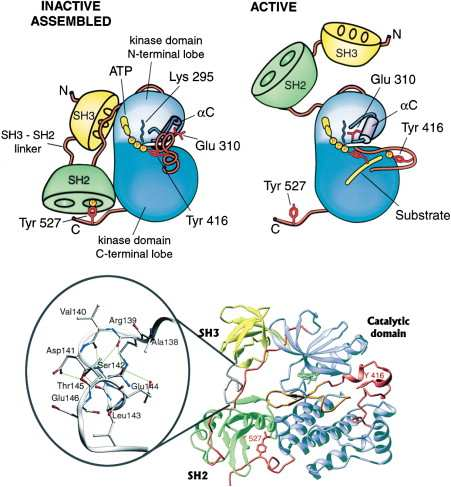
4.2. Matériels et méthodes
Figure 4.1 – Structure de la protéine Src et son activation. A gauche est représenté
la protéine Src composées du domaine kinase en bleu, le domaine SH2 en vert et le domaine
SH3 en jaune. Les cercles sur les domaines SH représentent les sites actifs, le site de
reconnaissance de la tyrosine phosphorylée sur le domaine SH2 et le site de reconnaissance
du peptide riche en proline sur le domaine SH3. (Young et al. [2001])
4.2 Matériels et méthodes
4.2.1 Génération des bibliothèques de squelettes
Nous considérons quatre systèmes tests, construits à partir d’un domaine SH2 (code
PDB 1A81) et d’un domaine SH3 (code PDB 1CKA). Pour le domaine SH2, la région
du squelette flexible inclue la boucle 196-203, avec soit sa séquence sauvage ARDNNSY
(wtSH2), soit une séquence simplifiée AASTSAA (siSH2). Pour le domaine SH3, la région
flexible est soit la boucle 140-157 (loSH3), soit un ligand déca-peptide (peSH3) (Fig. 4.2).
Ces parties flexibles sont directement impliquées dans la fonction des domaines puisqu’elles
constituent le site actif, ou sont en interaction avec celui-ci.
79
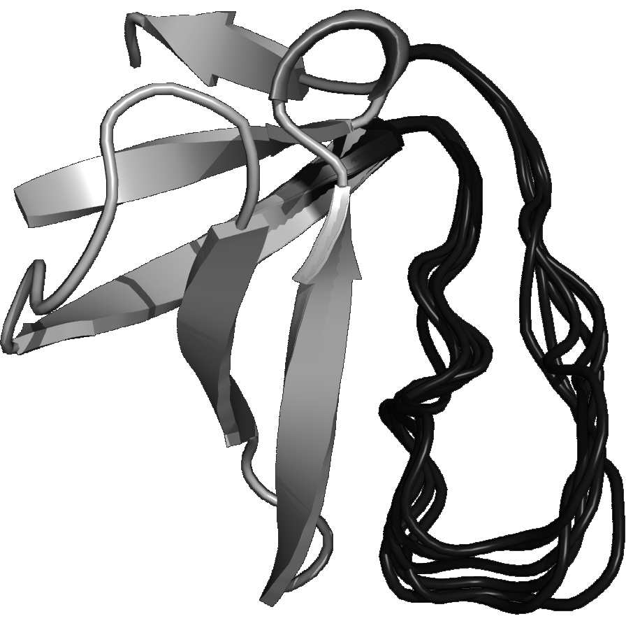
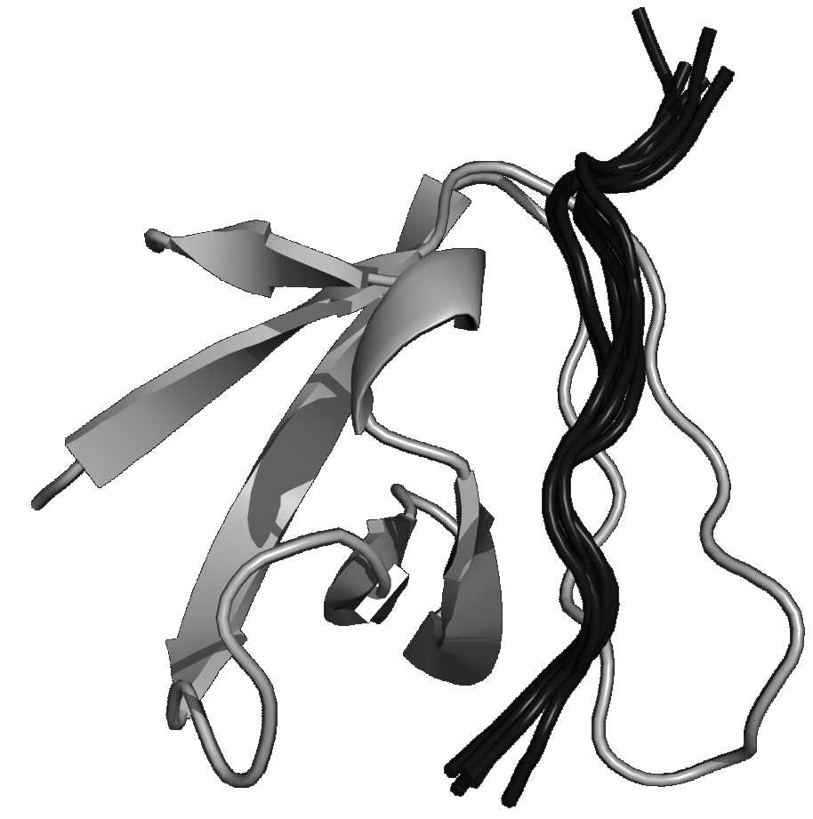
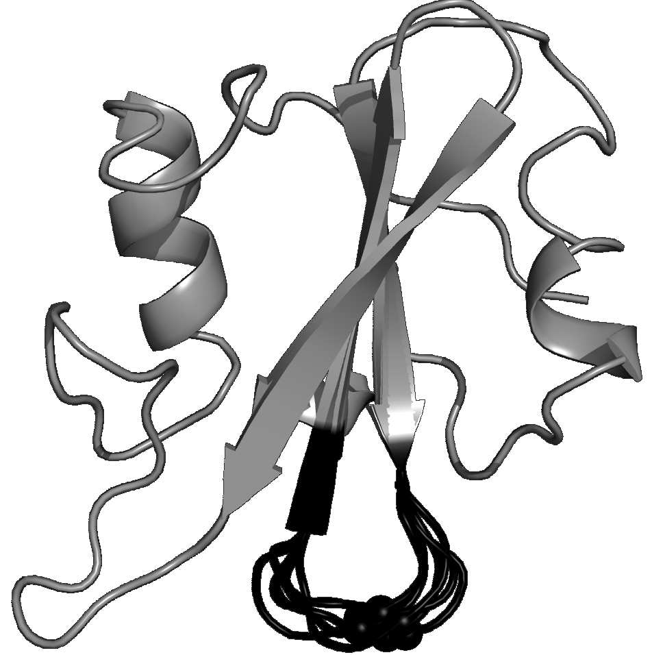
Chapitre 4. Validation de l’approximation PPA et comparaison avec SPA
peSH3
loSH3
SH2
Figure 4.2 – Structure des systèmes SH2 et SH3 et leur bibliothèque de sque-
lette. Chaque protéine est vue en ruban (avec Pymol) ; la région flexible est en noir. La
bibliothèque des squelettes est montrée dans chacun des cas. Pour siSH2 et wtSH2, les
squelettes sont les mêmes.
Pour chaque système, une simulation de dynamique moléculaire de 500 picosecondes a
été lancée avec XPLOR à une température de 300 K. Le champ de force AMBER ff99SB
a été utilisé avec un modèle de solvant implicite Born Généralizé et une constante diélec-
trique de 4. La protéine est tenue rigide exceptée la partie flexible (boucle ou peptide).
Six conformations de squelettes ont été extraites de chaque trajectoire de telle manière
que les RMSD (Root Mean Square Deviation) entre ces conformations soient comprises
entre 1 et 3 Å. Les données complètes sont dans le tableau 4.1.
Tableau 4.1 – RMSD entre les squelettes pour chaque modèle (Å)
peSH3
SH2
loSH3
↓
A
B
C
D
E
F
B
C
D
E
F
A
1.1 0.8 1.4 1.5 1.5 1.3 2.1 2.9 2.5 2.7
B
1.4
1.4 2.0 2.3 1.8
1.3 2.2 1.9 1.9
C
1.3 0.7
1.1 1.3 1.4
1.3 1.3 1.4
D
1.1 0.9 0.9
0.8 1.9
1.2 1.6
E
1.6 1.5 1.5 1.0
2.0
1.3
F
1.7 1.5 1.7 1.6 1.4
RMSD des atomes des squelettes. La matrice à gauche contient les
résultats pour les deux systèmes peSH3 (triangle inférieur) et SH2
(triangle supérieur). La matrice de droite contient les résultats
pour le système loSH3.
80
4.2. Matériels et méthodes
4.2.2 Génération des matrices d’énergie
Les matrices d’énergie ont été générées avec XPLOR en utilisant une constante diélec-
trique de 4 pour la protéine, en solvant implicite GBSA. Un facteur de correction égal à
0.65 est utilisé pour pondérer les termes Esurf , évitant une sur-estimation de la surface
solv ij
accessible au solvant des résidus enfouis dans la protéine. Les simulations de Monte Carlo
ont été réalisée à température ambiante (1/kβT = 0.6 kcal/mol). La bibliothèque de rota-
mères utilisée est celle de Tuffery et al. [1991], augmentée par plusieurs orientations pour
les groupes SH et OH. Le nombre de rotamères varie entre 1 pour l’alanine et 49 pour la
lysine (Tab. 4.2).
Tableau 4.2 – Nombre de rotamères par acide aminé
AA
Nombre
AA
Nombre
ALA
1
ILE
7
ARG
39
LEU
9
ASH
10
LYN
49
ASN
11
LYS
49
ASP
5
MET
17
CYM
3
PHE
4
CYS
9
SER
9
GLH
24
THR
9
GLN
19
TRP
8
GLU
12
TYD
8
HID
9
TYR
16
HIE
9
VAL
3
HIP
9
4.2.3 Estimation des différences d’énergies libres entre les sque-
lettes
Nous voulons comparer l’échantillonnage des squelettes selon les approximations SPA
et PPA utilisées. Pour cela, nous allons estimer les différences d’énergies libres entre les
81
Chapitre 4. Validation de l’approximation PPA et comparaison avec SPA
différents squelettes et les comparer. Nous présentons trois méthodes différentes pour
estimer ces différences d’énergies libres.
4.2.3.1 Estimation à partir des populations des différents squelettes
La première méthode est la méthode dite “naïve” : nous simulons des trajectoires
Monte Carlo en multi-squelettes, puis calculons la différence d’énergie libre entre deux
squelettes bi, bj à partir de leurs populations, fi et fj :
f
∆G
i
ij = Gi − Gj = −kT ln
.
(4.1)
fj
Ces simulations Monte Carlo peuvent être effectuées avec la séquence de la protéine
fixe ou variable. Si elle est variable, les énergies libres correspondront à une séquence
particulière S parmi celles qui sont échantillonnées. Ceci peut être noté Gi = G(bi|S),
Gj = G(bj|S).
Cette méthode a l’avantage d’être rapide puisqu’une seule simulation en multi-squelettes
suffit. Cependant, il est nécessaire d’avoir une population non-nulle des squelettes lors de
la simulation pour obtenir une valeur de ∆Gij.
4.2.3.2 Estimation à partir de la titration des squelettes
La seconde méthode d’estimation des énergies libres consiste à “titrer” une confor-
mation de squelette particulière, dite bi, en ajoutant un biais énergétique δ au système à
chaque fois qu’il occupe cette conformation. En commençant par un δ élevé, et en le di-
minuant progressivement, nous allons à partir d’une situation où la conformation bi n’est
jamais peuplée à une situation où uniquement bi est peuplée. Si les simulations respectent
les statistiques de Boltzmann, nous pouvons appliquer les relations usuelles entre les po-
pulations et les énergies libres. Plus précisément, posons fi(δ) la fraction de population
qui occupe la conformation bi du squelette pour une valeur particulière δ, et posons δ∗ la
i
valeur de δ où fi = 0.5 (le point de demi-titration). Nous avons alors :
1
1
fi(δ) =
=
(4.2)
1 + e−β(δ−δ∗)
)
i
1 + 10−α(δ−δ∗i
82
4.2. Matériels et méthodes
où α = β est le coefficient de Hill (α = 0.734 (kcal/mol)−1 à température ambiante).
ln 10
Les différences d’énergies libres entre les conformations de squelettes bi, bj en l’absence
de biais sont alors
1 + e−βδ∗i
Gi − Gj = kT ln
(4.3)
1 + e−βδ∗j
Cette méthode est plus coûteuse car chaque point de la courbe sigmoïde requiert une
simulation. Mais il résulte une estimation robuste de ∆Gij.
4.2.3.3 Estimation à partir de la méthode de métadynamique
La troisième méthode d’estimation des énergies libres est analogue à l’approche de
métadynamique utilisée en dynamique moléculaire et à la méthode de Wang & Landau
[2001] appliquée en Monte Carlo. L’objectif est d’ajouter un biais énergétique différent
à chaque squelette de manière à obtenir des populations égales. Le biais est obtenu par
une méthode “adaptative” itérative. Pour cela, au cours d’une longue simulation Monte
Carlo, nous incrémentons graduellement l’énergie de chaque squelette avec un petit biais
δ, jusqu’à ce que toutes les conformations de squelette aient une population équivalente.
Le biais total ajouté à chaque conformation permet alors de calculer l’énergie libre relative
de chaque squelette dans le système non biaisé. L’énergie libre de chaque conformation
de squelette bi est simplement :
X
Gi = −
δi(t),
(4.4)
t
où la somme est sur le temps de simulation et δi(t) est l’énergie biaisée ajoutée à chaque
énergie de squelette à chaque temps. En pratique, après qu’une quantité δi a été ajoutée
à un instant particulier, nous continuons la simulation pendant un intervalle T avant
d’ajouter un autre biais d’énergie. A la fin de chaque intervalle T , le biais est ajouté à
un seul squelette : celui qui est le plus peuplé au cours du dernier intervalle. La taille de
l’incrément δi(t) diminue avec le temps, suivant une loi exponentielle décroissante :
δiE(t) = aeb.Tc,
(4.5)
où a, b (<0) et c sont des paramètres choisis empiriquement.
83
Chapitre 4. Validation de l’approximation PPA et comparaison avec SPA
En fait, il est difficile d’obtenir un système où les squelettes sont occupés avec exac-
tement la même population. Cependant, avec un bon choix des paramètres a, b et c, il
est possible de s’approcher d’une équi-occupation des squelettes, ce qui suffit en pratique
pour estimer les ∆Gij. En effet, nous avons dans ce cas :
X
f
∆G
i(f inal)
ij = −
δi(t) − δj(t) − kt ln
(4.6)
f
t
j (f inal)
où fi(final) est la population en présence du biais final
4.2.4 Utilisation de cycles thermodynamiques
Nous considérons également une situation plus complexe, en comparant cette fois-ci
deux squelettes et deux séquences, où le squelette et la séquence varient en même temps.
L’objectif est de former un cycle thermodynamique avec quatre couples de squelette/-
séquence : 1A, 1B, 2A et 2B, où le chiffre correspond à la séquence, et la lettre à la
conformation de squelette (Fig. 4.3). Par exemple, pour le système siSH2, nous autorisons
un acide aminé de la boucle flexible à adopter soit le type Thr (type 1) soit le type Phe
(type 2). Pour aller de l’état 1A à l’état 2B, soit nous réalisons d’abord le mouvement
de squelette (δG1) puis le changement de type (δGB), en passant par l’état 1B ; soit la
mutation se produit en premier (δGA), puis le mouvement de squelette (δG2), en passant
par l’état 2A. Le changement d’énergie libre qui correspond soit à δG1 + δGB (chemin
“1B”), soit à δGA + δG2 (chemin “2A”) est en principe indépendant du chemin suivi. Ces
deux valeurs sont donc en théorie équivalentes.
Nous utilisons deux approches différentes pour calculer les énergies libres relatives
des différentes conformations de squelette avec chaque type. L’approche la plus simple
utilise une seule simulation, où les squelettes et la séquence varient librement. Les énergies
libres relatives sont déduites directement des populations (Eq. 4.1). La seconde approche
utilise deux types de simulations indépendantes qui sont comparées respectivement : deux
simulations où les squelettes varient mais avec une séquence fixe (type 1 ou 2) ; deux
simulations où les squelettes sont fixes (A ou B) mais avec la séquence variable.
84
4.3. Validation de l’approximation PPA
Multi-Squelettes
Mono-Squelette
Multi-Squelettes
Séquence Fixe
Séquence Variable
Séquence Fixe
f A
1
G
δ
=-kT ln(----)
f 1
f A
A
A
En théorie:
2
f A
f
f 2
A
1
A
2
G
δ
+ G
δ
= G
δ
+ G
δ
A
2
1
B
1
1
2
2
A
A
A
A
t
G
δ
n
1
A
2
e
A
A
f 1
f 2
tte
A
m
-kT ln(----)
A
= G
δ
G
δ
=-kT ln(----)
e
le
1
2
G
δ
G
δ
f 1
f 2
1
2
g
e
B
B
n
u
f B
a
1
2
G
δ
=-kT ln(----
1 )
h
sq
B
B
B
f B
C
2
G
δ
B
1
1
2B
2
B
B
B
f 1
f B
f B
f 2
Mutation
B
1
2
B
1: type1
A:bbA
2: type2
B:bbB
Figure 4.3 – Schéma du cycle thermodynamique. Les simulations horizontales sont
réalisées sur un squelette fixe où la séquence varie ; les simulations verticales sont réalisées
avec un squelette variable où la séquence est fixe.
4.3 Validation de l’approximation PPA
4.3.1 Étude de la relaxation rotamérique
Nous voulons tout d’abord vérifier l’effet de la relaxation sur l’échantillonnage des
squelettes. Nous étudions seulement le chemin générateur P et son inverse
pour les
G
QG
mouvements b,0 → b′,N acceptés avec PPA. Pour cela, nous analysons quelques simu-
lations de 10 millions de pas Monte Carlo sur le système wtSH2, où la longueur de la
relaxation N est égal à 20 ou 50 pas. Pour un ensemble de 1,500 mouvements hybrides
acceptés, nous étudions l’évolution de l’énergie de relaxation ∆Er(n) le long du chemin
générateur direct et inverse, en fonction de n :
∆Er(n) = Er(N) − Er(n)
(4.7)
où N est la longueur de la relaxation et n le pas de la relaxation compris entre 0 et N.
Sur les figures 4.4a et 4.4b, les tracés gris sont les 1,500 relaxations ∆Er(n) étudiées et
85
Chapitre 4. Validation de l’approximation PPA et comparaison avec SPA
le tracé noir est la variation moyenne. Ensuite, un histogramme 2D montre pour les deux
valeurs de N le nombre de rotamères modifiés par relaxation, en fonction de la différence
d’énergie ∆Er(0) = Er(N) − Er(0) (Fig. 4.4c). Ceci permet d’estimer le nombre moyen
de rotamères modifiés par relaxation.
Les figures 4.4a et 4.4b montrent que, en moyenne, la relaxation permet de diminuer
l’énergie du système wtSH2 après modification du squelette de 4 kcal/mol avec N=20,
et de 11 kcal/mol avec N=50. Ainsi, plus N augmente, plus la relaxation énergétique est
performante. Pour les relaxations inverses, la relaxation semble plus variable en montrant
de plus grandes différences d’énergies entre les états b,N et b,0 avec un ∆Er moyen de
14 kcal/mol pour N=20 et de 6 kcal/mol pour N=50. Cette variation peut être due
à l’échantillon limité, dans lequel quelques valeurs très élevées peuvent modifier l’énergie
moyenne de relaxation de manière drastique. Néanmoins, la relaxation a un effet bénéfique
sur l’échantillonnage puisqu’il permet de diminuer l’énergie des états b′,0 et b,N. Ces
modifications énergétiques résultent de la modification de 4-5 rotamères en moyenne pour
N =20 et d’environ 10 pour N =50 (Fig. 4.4c), et environ 2-3 pour N =10 (données non
montrées).
4.3.2 Choix des paramètres optimaux
Les simulations multi-squelettes ont nécessité l’introduction de nouveaux paramètres
ajustables par l’utilisateur : la longueur N de la relaxation après le mouvement de sque-
lette, et le nombre P de chemins permutés utilisé pour calculer la probabilité du mouve-
ment hybride.
Le choix de la longueur de la relaxation est important pour obtenir une convergence
des populations de squelette rapidement, sans que cela ait beaucoup d’impact sur le temps
de simulation. Si une longue relaxation est choisie, la simulation convergera rapidement
en terme de nombre de pas Monte Carlo. En effet, si la trajectoire de la relaxation est
longue, alors la probabilité qu’elle mène le système dans un puits énergétique favorable est
élevée. Les mouvements de squelette seront souvent acceptés. Mais la réalisation de chaque
mouvement hybride sera long en terme de temps CPU (Central Processing Unit). Au
contraire, plus la relaxation sera courte, moins les mouvements hybrides seront acceptés,
86
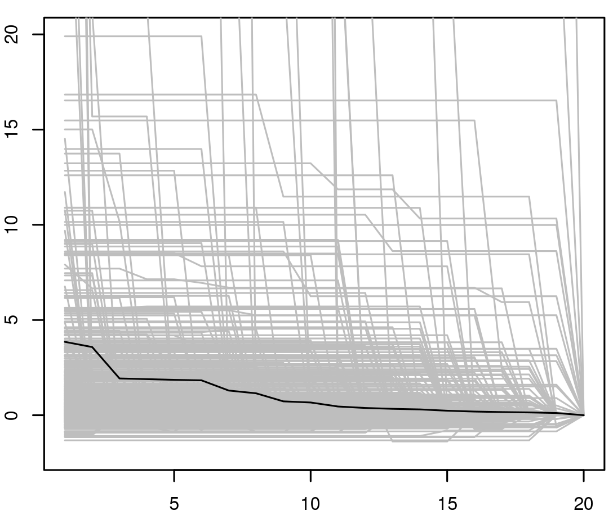
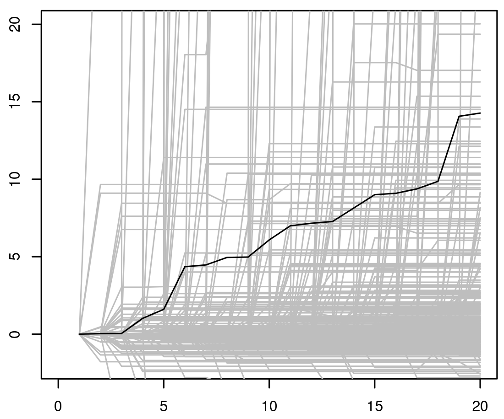
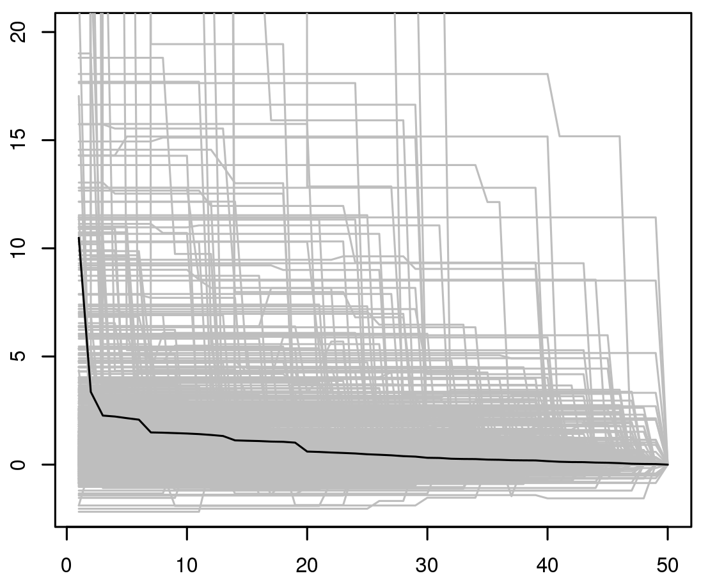
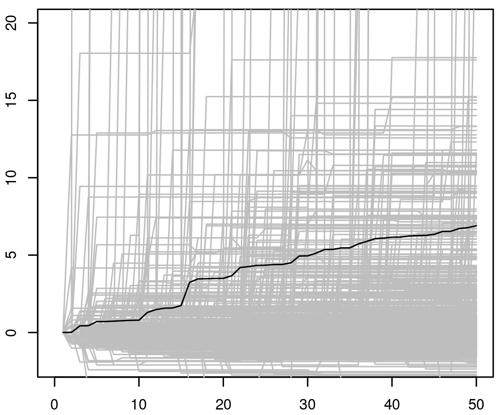
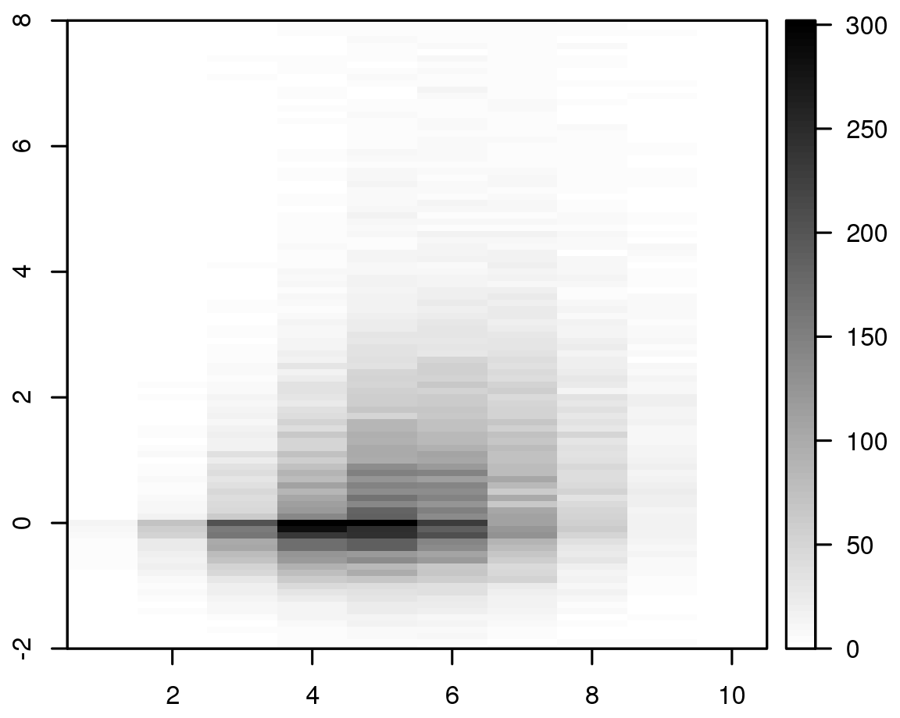
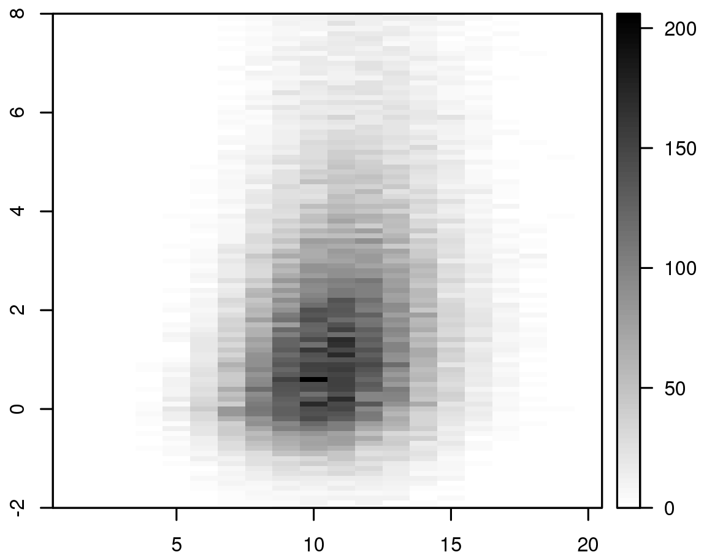
4.3. Validation de l’approximation PPA
Relaxation directes, N=20
)
Relaxation inverses, N=20
(n r
E
∆
n
b,N
atio
elax
e r
b',0
ie d
b',N
erg
n
b,0
E
n nombre de pas MC
n nombre de pas MC
(a) Évolution de l’énergie ∆Er avec N =20
Relaxations directes, N=50
)
Relaxation inverses, N=50
(n r
E
∆
n
b',0
atio
elax
b,N
e r
ie d
b',N
erg
n
b,0
E
n nombre de pas MC
n nombre de pas MC
(b) Évolution de l’énergie ∆Er avec N =50
(N) r
Relaxations, N=20
Relaxations, N=50
E
∆
tion
a
x
la
re
e
d
ie
rg
e
n
E
Nombre de rotamères modifiés
Nombre de rotamères modifiés
(c) ∆Er selon le nombre de rotamères modifiés
Figure 4.4 – Évolution de l’énergie ∆Er le long de la trajectoire de relaxation et
nombre de rotamères modifiés. Évolution du l’énergie ∆Er le long de la trajectoire de
relaxation pour N=20 (a), et pour N = 50 (b). A gauche sont représentées les relaxations
directes et à droite inverses. Les résultats correspondent à la variation d’énergie au cours
de la relaxation pour 1,500 mouvements hybrides acceptés en gris. La variation moyenne
est montrée en noir. (c) présente un histogramme 2D de l’énergie ∆Er en fonction du
nombre de rotamères modifiés pendant la relaxation. A gauche sont les résultats avec
N =20 et à droite avec N =50.
87
Chapitre 4. Validation de l’approximation PPA et comparaison avec SPA
mais la réalisation de chacun de ces mouvements sera rapide. De plus, si la balance détaillée
est respectée, alors ce paramètre n’aura aucune influence sur les populations de squelettes
à convergence.
Le second paramètre utilisé est le nombre de chemins permutés. Plus nous utiliserons
de chemins permutés pour évaluer la probabilité d’acceptation du mouvement hybride,
plus notre estimation sera précise. Mais le temps de calcul explosera. C’est pourquoi il est
important de choisir un nombre de chemins permutés optimal pour restreindre les temps
de simulation. Pour l’ensemble des résultats suivants, les simulations ont été réalisées
uniquement sur le système wtSH2.
4.3.2.1 Influence de la longueur de relaxation et du nombre de chemins per-
mutés sur les populations de squelette
Pour vérifier que la longueur de relaxation n’a pas d’influence sur les populations de
squelette à convergence, plusieurs simulations Monte Carlo de 10 millions de pas ont été
lancées en utilisant une longueur de relaxation N de 10, 20, 50 ou 100 pas, et en utilisant
1, 10, 100 ou 500 chemins permutés. Ces simulations ont été lancées trois fois chacune
pour vérifier la reproductibilité des résultats. La population de chaque squelette a été
récupérée au dernier pas de chaque trajectoire. Quelque soit N, les moyennes et écart
types sont calculés à partir de ces populations pour chaque squelette et sont tracés sur
la figure 4.5. Nous pouvons voir que, quelque soit la valeur de P , les populations à la fin
de la trajectoire varient peu. En effet, les écarts types des simulations sont très faibles.
Ainsi, étant donné que la valeur de N a peu d’influence sur les populations de squelette,
cela nous permet de penser que les simulations avec PPA respectent la balance détaillée.
88
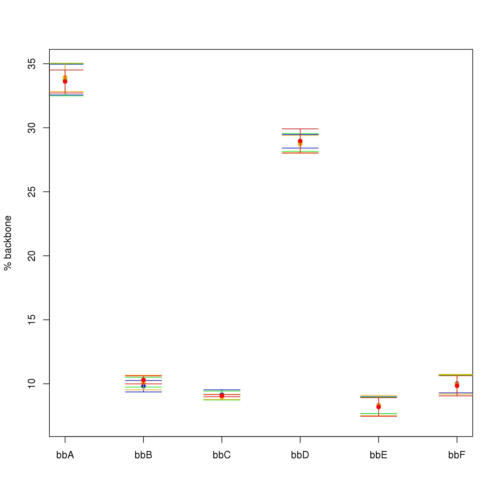
4.3. Validation de l’approximation PPA
5
3
0
s
3
n
tio
la
u
p
5
o
2
p
s
e
d
0
e
2
g
ta
n
rce
5
u
1
o
P
0
1
bbA
bbB
bbC
bbD
bbE
bbF
Figure 4.5 – Pourcentage final des populations des squelettes en fonction N et
P . Pourcentage des populations de squelette au pas 10,000,000. P1 en bleu, P10 en vert,
P100 en orange, et P500 en rouge.
4.3.2.2 Influence de la longueur de relaxation sur le temps de convergence
des simulations
Nous avons vu que quelque soit la valeur de N, à 10 millions de pas Monte Carlo, il
y avait convergence des populations de squelettes. Nous allons à présent étudier l’impact
de la longueur de relaxation sur les temps de convergence. Le temps de convergence
correspond au temps CPU nécessaire pour atteindre le pas Monte Carlo de la trajectoire
où il y a convergence des populations de squelette. Ce pas Monte Carlo est appelé “pas
de convergence”. Le temps de convergence dépend du nombre de positions M de la partie
flexible de la protéine. En effet, plus la boucle flexible sera grande, plus le nombre de
pas doit être élevé pour diminuer fortement l’énergie du système. L’objectif est donc de
déterminer de manière optimale le paramètre N.
Pour cela, les trajectoires de chaque squelette des simulations précédentes ont été
analysées. Les simulations ont été réalisées sur un processeur Intel Xeon CPU E5-2630 v3
2.40GHz, présentant 8 coeurs. Nous comparons la population de chaque squelette au cours
de la trajectoire par rapport à la population finale au pas 10,000,000 (correspondant aux
89
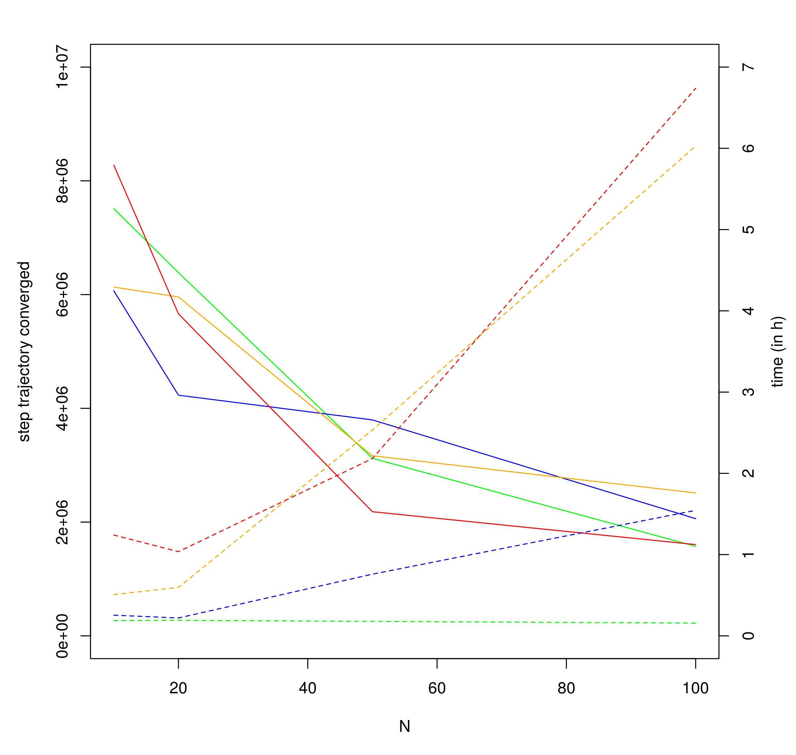
Chapitre 4. Validation de l’approximation PPA et comparaison avec SPA
valeurs de la Fig. 4.5). Le pas de convergence est défini par une stabilité des populations
de squelette à ±1% de la population finale de chaque squelette.
0
1
7
6
)
8
⁶
0
1
5
n
(e
)
e
c
6
re
n
4
u
e
e
rg
h
n
ve
n
(e
3
s
4
co
p
e
m
d
e
s
T
2
a
P
2
1
0
0
20
40
60
80
100
N
Figure 4.6 – Pas de convergence et temps CPU en fonction de N et P . Axe de
gauche : pas convergence sur les 10 millions de pas (trait plein). Axe de droite : temps
CPU en heure (trait pointillé). Les courbes sont tracées selon P égal à 1, 10, 100 ou 500
en vert, bleu, orange, et rouge respectivement.
Sur la figure 4.6, la variation du pas de convergence (axe de gauche) et le temps de
convergence (axe de droite) sont tracés en fonction de la valeur de N utilisée. Plus elle
augmente, plus le pas de convergence arrive tôt dans la trajectoire. Notamment, quand
N = 10, le pas de convergence se situe dans la seconde moitié de la trajectoire, alors qu’à
partir de N = 50, le pas de convergence arrive dans les 5 millions premiers pas.
D’autre part, plus N est grand, plus le temps CPU pour convergence est élevé. Nous
pouvons voir que quand N est petit (10 ou 20), le temps de convergence varie peu. Puis,
selon P , les temps de convergence augmentent de manière drastique. Quand P est faible
(égal à 1 ou 10), il évolue peu. Mais avec P égal à 100 et 500, il faut environ 2 et 6 à 7
heures respectivement pour faire des simulations avec N = 50 ou N = 100.
90
4.3. Validation de l’approximation PPA
Ainsi, quand N est très faible, les populations de squelettes convergent très tardive-
ment dans la trajectoire, ce qui n’est pas adéquat. Au contraire, avec N grand (>50), le
temps de convergence est amélioré, mais le temps de calcul CPU rallongé. D’après ces
résultats, un compromis raisonnable entre rapidité de convergence et temps de simulation
pour le système wtSH2, est de choisir une longueur de relaxation de l’ordre de 20.
4.3.2.3 Impact du nombre de chemins permutés sur la probabilité d’accep-
tation des mouvements hybrides
Nous voulons à présent déterminer le nombre de chemins permutés minimal à utiliser
pour estimer tout aussi précisément la probabilité d’acceptation des mouvements hybrides,
tout en continuant à respecter la balance détaillée. Ce choix est crucial car plus il y a
de chemins permutés, plus la simulation est longue. Pour évaluer le nombre de chemins
optimal, les estimations des probabilités d’acceptations des mouvements hybrides sont
comparées selon le nombre de chemins, avec le ratio noté f(P ) :
P
α(b′,0 → b′,N )
f (P ) =
=
P π(0 → 1) · · · π(N − 1 → N )
P
(4.8)
α(b,N → b,0)
Q π(N → N − 1) · · · π(1 → 0)
Dans un premier temps, nous comparons f(P ) quand P varie entre 10, 20, 50, 100, 500
et 1000 chemins permutés, avec f(1), correspondant à l’utilisation du chemin générateur
simplifiée sans répétition rotamérique (Fig. 4.7). La longueur de relaxation varie entre
10, 20, 50 et 100 pas Monte Carlo, pour une trajectoire totale de 10 millions de pas,
sur le syttème wtSH2. Tout d’abord, nous pouvons visualiser sur chaque graphique une
droite de corrélation quel que soit le protocole. Par ailleurs, la valeur de P a peu d’effet
sur les coefficients de corrélation, tandis que la longueur de relaxation a un fort impact
sur ces valeurs. En effet, quand N est faible (10 ou 20 pas), le coefficient de corrélation
entre f(P ) et f(1) est compris entre 0.97 et 0.99. Ainsi, un seul chemin suffirait pour
accepter le mouvement hybride, notamment le chemin générateur simplifié sans répétition
rotamérique.
91


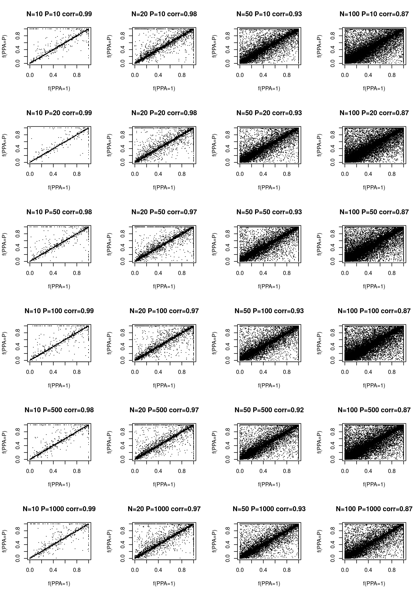


Chapitre 4. Validation de l’approximation PPA et comparaison avec SPA
N=10
N=20
N=50
N=100
0.99 0.98 0.93 0.87
1
P=10
0
0.99 0.98 0.93 0.87
1
P=20
0
0.98 0.97 0.93 0.87
1
P=50
0
f(P)
0.99 0.97 0.93 0.87
1
P=100
0
0.98 0.97 0.92 0.87
1
P=500
0
0.99 0.97 0.93 0.87
1
P=1000
0
0 1
0 1
0 1
0 1
f(P=1)
Figure 4.7 – Corrélation des ratios de probabilités de réaliser les mouvements
rotamériques entre PPA (P=1) et PPA (P>1) sur wtSH2. Sont tracées en abscisse
la probabilité de réaliser la relaxation directe et inverse PPA (P=1) ; en ordonnée la
probabilité de réaliser les chemins permutés directes et inverses PPA (P>1). N varie de
10, 20, 50 ou 100, et P de 10, 20, 50, 100, 500 ou 1000. En rouge sont notés les coefficients
de corrélation.
Intéressons nous à présent aux chemins permutés pour lesquels f(1) 6= f(Pmax), signi-
fiant que la probabilité d’acceptation du mouvement hybride varie en fonction du nombre
de chemins permutés utilisés. Dans nos simulations, Pmax est égal à 1000, ou à m! si m!
est inférieur à 1000. Nous nous intéressons ici aux simulations avec N = 20 puisque c’est
la longueur de relaxation choisie précédemment.
Pour une simulation de 10 millions de pas, 466 probabilités de mouvements hybrides
sur 5390 acceptées ont des valeurs différentes quand P = 1 et P = Pmax, soit 8.6%.
Ceci signifie que 91.4% des mouvement hybrides sont parfaitement estimés avec un seul
chemin. Ensuite, nous calculons l’évolution du taux d’erreur à 5% entre f(P ) et f(Pmax)
en fonction du nombre de chemins P utilisés pour calculer la probabilité d’acceptation.
92
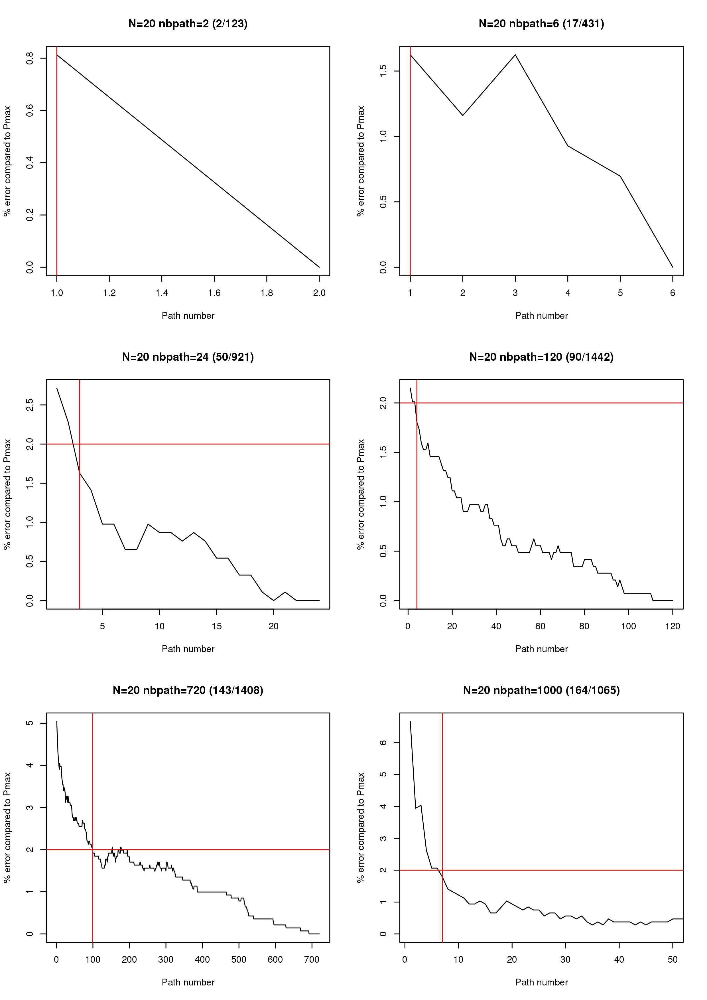
4.3. Validation de l’approximation PPA
P
= 24 (m=4)
P
= 120 (m=5)
max
max
%
%
5
5
E
E
3
4
Nombre de chemins permutés P
No
No m
Nom b
mb r
br e
re
e d
d e
de
e ch
ch e
che m
em in
min s
in
s
s p
p e
pe r
er m
m u
mu t
ut é
té s
é
s iP
P
= 720 (m=6)
P
= 1000 (m≥7)
max
max
%
%
5
5
E
E
99
7
N
No o
N m
o
mb b
mr r
be e
ed d
e e
d
ec c
h h
ce e
h m
e
m in
m
in s
in
s p p
s e e
pr r
e m
r
mu u
mt t
ué é
t s
és
s i
P
No
No m
Nom b
mb r
br e
re
e d
d e
de
e ch
ch e
che m
em in
min s
in
s
s p
p e
pe r
er m
m u
mu t
ut é
té s
é
s
s iP
Figure 4.8 – Évolution du pourcentage d’erreur pour N=20 en fonction du
nombre de chemins permutés. En rouge est tracé une ligne horizontale à 2% d’erreur
de Pmax, et une ligne verticale qui identifie l’abscisse correspondante, annotée avec la
valeur exacte du nombre P de chemins permutés.
n(|f (P ) − f (P
E
max)| < 0.05)
5% =
× 100
(4.9)
n(f (1) 6= f (Pmax))
Nous considérons qu’il y a erreur quand f(P ) est à +/- 0.05 de f(Pmax). Sur la figure 4.8,
l’évolution du taux d’erreur E5% en fonction du nombre de chemins permutés utilisé P est
tracé. Chaque graphique correspond à une valeur de Pmax, puisqu’il dépend du nombre
de positions modifiées pendant la relaxation m. En considérant que 2% de mouvements
hybrides avec plus de 5% d’erreur est acceptable, il faudrait prendre au maximum 99 che-
mins exactement pour avoir une probabilité acceptable. Cette valeur varie en fonction de
m et de la valeur de Pmax. Tant que m! < Pmax, l’estimation de la probabilité est évaluée
pour 100% des chemins permutés, alors qu’à partir de m > 6, seul un sous-ensemble de
93
Chapitre 4. Validation de l’approximation PPA et comparaison avec SPA
chemins est utilisé. Le nombre P de chemins à utiliser pour avoir au maximum 2% de
mouvements hybrides ayant une moins bonne estimation de leur probabilité, augmente
quand m! se rapproche de Pmax (3, 4 et 99 chemins pour Pmax égal à 24, 120 et 720 res-
pectivement), puis diminue fortement (7 chemins pour Pmax=1000). Enfin, nous pouvons
remarquer qu’en utilisant un seul chemin permuté, le pourcentage d’erreur reste faible,
avec un maximum de 7% (Fig. 4.8).
4.3.2.4 Discussion et conclusion
Pour évaluer la probabilité d’acceptation du mouvement hybride, nous proposons une
méthode qui utilise les chemins permutés. Nous avons déterminé les longueurs de relaxa-
tion et le nombre de chemins adéquats pour le système wtSH2.
Tout d’abord, nous avons montré que notre méthode respecte la balance détaillée selon
N et selon P . En effet, ces paramètres n’ont pas d’influence sur les populations de squelette
à convergence. Avec un seul chemin permuté, nous obtenons les mêmes pourcentages de
population finale à convergence, ce qui peut permettre de réduire les temps de calcul.
Ceci signifie qu’un seul chemin est dans la plupart des cas représentatif de l’ensemble
des chemins permutés, puisque la probabilité d’acceptation ne varie pas avec P . Cela
montre que de nombreux chemins permutés ont de nombreux rotamères non couplés et
que l’optimisation proposée plus haut est pertinente.
Puis, nous avons étudié l’influence de ces paramètres sur les temps de convergence et
de simulation. Nous avons vu qu’avec N = 20, nous obtenions une convergence rapide
avec un temps de simulation raisonnable, quelle que soit la valeur de P (environ une
heure). Nous avons vu aussi qu’il faut environ P = 200 chemins permutés pour estimer à
moins de 2% d’erreur la probabilité d’acceptation du mouvement hybride.
L’ensemble de ces résultats confirme que les chemins permutés sont un bon sous-
ensemble, représentatif des chemins connectant l’état b′,0 et b′,N. De plus, il semblerait
qu’utiliser le chemin générateur simplifié sans répétition rotamérique serait un chemin
représentatif de l’ensemble des chemins permutés générés. Cette analyse nous permet de
valider notre approximation PPA. Dans la suite, nous allons comparer notre méthode
PPA avec la méthode SPA.
94
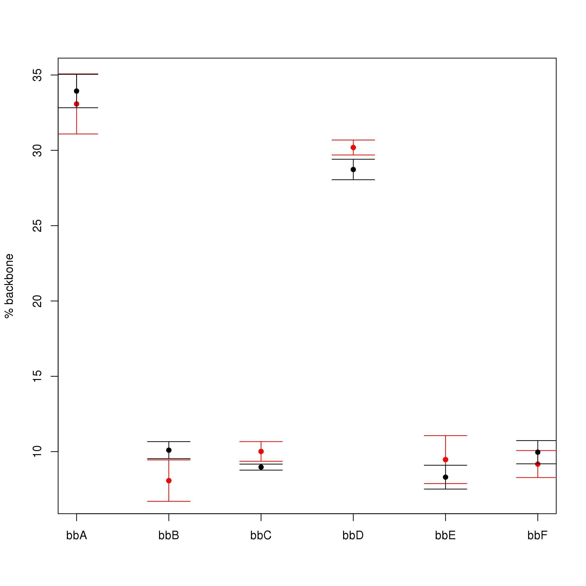
4.4. Comparaison des approximations SPA et PPA
4.4 Comparaison des approximations SPA et PPA
4.4.1 Influence de la longueur de la relaxation sur les popula-
tions de squelette
Nous avons vu que les populations de squelettes varient peu en fonction de la longueur
de relaxation N et du nombre de chemins permutés P utilisé. Nous allons comparer les
populations de squelette à convergence entre les simulations avec SPA et les simulations
avec PPA. Dans le cas des simulations avec SPA, seulement la longueur de relaxation
N varie (N = 10, 20, 50, ou 100). Avec les simulations PPA, N varie avec les mêmes
valeurs en plus de la variation de P , qui vaut 1, 10, 100 ou 500. Sur la figure 4.9, sont
tracés les moyennes et les écarts-types des populations au pas 10,000,000 de l’ensemble
des simulations.
5
3
0
s
3
n
tio
la
u
p
5
o
2
p
s
e
d
0
e
2
g
ta
n
rce
5
u
1
o
P
0
1
bbA
bbB
bbC
bbD
bbE
bbF
Figure 4.9 – Pourcentage final des populations des squelettes en fonction
de l’approximation SPA ou PPA. Pourcentage des populations de squelette au pas
10,000,000. Les résultats avec SPA sont en rouge (uniquement N varie), avec PPA en noir
(N et P varient).
En comparant les deux types de simulations, nous voyons une différence entre les
moyennes SPA en rouge et PPA en noir. Cette différence est plus prononcée pour la
95
Chapitre 4. Validation de l’approximation PPA et comparaison avec SPA
population du squelette B qui semble être fortement défavorisée. De plus, les écarts-types
sont plus grands en utilisant SPA. Ceci montre une forte instabilité des simulations due à
la variation de N. Cette analyse montre que la balance détaillée est moins bien respectée
avec l’approximation SPA qu’avec PPA, et que les squelettes ne sont pas peuplés selon la
distribution de Boltzmann puisqu’ils évoluent selon la longueur de la relaxation.
4.4.2 Estimation des énergie libres des squelettes
Pour tester si les statistiques de Boltzmann sont respectées, nous calculons plusieurs
estimateurs des énergies libres des conformations de squelette. Si les squelettes sont échan-
tillonnés selon la distribution de Boltzmann, les estimateurs des différences d’énergies
libres se comporteront comme des fonctions d’état, avec différentes méthodes computa-
tionnelles donnant essentiellement les même valeurs d’énergies libres. Spécifiquement, nous
utilisons la méthode naïve (Eq. 4.1) avec plusieurs protocoles et, pour certains systèmes,
les méthodes de titration et/ou de métadynamique. Pour le domaine SH3, des simulations
avec échanges de répliques (REMC) en utilisant huit répliques ont été nécessaires pour
obtenir un échantillonnage adéquat.
Comparaison des méthodes d’estimation des énergies libres Les différences
d’énergies libres de toutes les simulations sur tous les systèmes sont synthétisées sur
la figure 4.10. Pour plus de clarté, toutes les courbes d’énergies libres utilisent le même
squelette comme référence. Mais pour chaque système, une constante est ajoutée pour
espacer les courbes sur le graphique. Les valeurs d’énergies libres de certains protocoles
sont reportées dans le tableau 4.3 ; ces valeurs sont ajustées en soustrayant, pour chaque
protocole, la moyenne des énergies libres des six squelettes. Cet ajustement minimise les
RMSD entre les protocoles (sans changer le contenu physique).
96
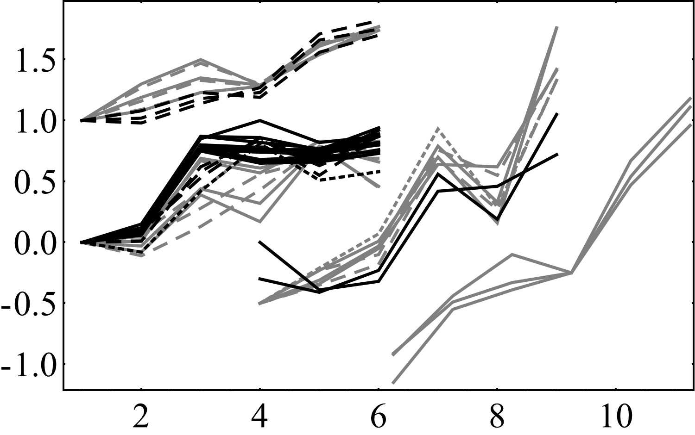
4.4. Comparaison des approximations SPA et PPA
)
50
peSH3
siSH2
ol
100
20
al/m
20
10
SPA
PPA
50
Méthode naive
wtSH2
e (kc
100
Titration
e libr
10
50
Métadynamique
rgi
loSH3
éne
conformation de squelette
Figure 4.10 – Comparaison des énergies libres relatives des squelettes selon les
différentes méthodes. Pour plus de lisibilité, une constante a été ajoutée à chacun des
quatre systèmes. Les énergies libres obtenues avec la méthode naïve sont montrées en trait
plein ; les titrations en tiret long ; la métadynamique en tiret fin. En gris sont les résultats
avec l’approximation SPA, en noir avec PPA avec P = 100, 500 ou 1000. Différentes
longueurs de relaxation N sont utilisées ; seulement quelques valeurs sont indiquées.
Tout d’abord, pour le système loSH3, les simulations ont été réalisées uniquement avec
la méthode SPA. L’accord entre les méthodes d’estimation des énergies libres est bonne,
même si les valeurs sont plus grandes avec le protocole N=10 (Fig. 4.10). Pour les autres
systèmes, les méthodes SPA ou PPA sont comparées, et donnent des résultats différents.
Pour siSH2, les différences des RMSD entre SPA et PPA sont d’environ 0.08 kcal/mol
(dépendant de N), comparé à la moyenne |δGi| de 0.38 kcal/mol (Table 4.3). Pour wtSH2,
avec N = 10 ou 20, la différence RMSD entre SPA et PPA est d’environ 0.10 kcal/mol,
une différence relative de 20%. Pour N = 50 ou 100, les différences RMSD sont un peu
plus grandes, environ 0.20 kcal/mol. Pour peSH3, avec N = 20, nous avons une différence
RMSD SPA/PPA de 0.21 kcal/mol, comparé à la moyenne |δGi| de 0.80 kcal/mol, une
différence relative de 28%. Avec N=50, nous obtenons des différences RMSD SPA/PPA
plus grandes, de 0.48 kcal/mol (Table 4.4). Les résultats avec PPA ont un meilleur accord,
pour différentes valeurs de N et P et (pour wtSH2) trois méthodes d’estimation d’énergie
libre différentes. Les plus grandes différences RMSD entre SPA et PPA est de 0.22 kcal/mol
pour peSH3 (N=20 vs. N=50).
97
Chapitre 4. Validation de l’approximation PPA et comparaison avec SPA
Tableau 4.3 – Énergies libres relatives de chaque squelette selon les protocoles
sélectionnés. Les simulations PPA sont réalisées avec P =100 chemins permutés
Système
Méthode
P
N
énergies libres (kcal/mol)
wtSH2
Naïve
SPA
50
-0.36 -0.39
0.08
-0.04
0.43
0.30
wtSH2
Naïve
SPA 100 -0.29 -0.37
0.10
-0.12
0.49
0.17
wtSH2
Titration
SPA
50
-0.37 -0.35 -0.09
0.19
0.32
0.32
wtSH2
Titration
SPA 100 -0.28 -0.39 -0.15
0.15
0.51
0.17
wtSH2
Naïve
PPA
50
-0.54 -0.43
0.26
0.22
0.22
0.28
wtSH2
Naïve
PPA 100 -0.49 -0.42
0.28
0.19
0.21
0.26
wtSH2
Titration
PPA
50
-0.51 -0.43
0.07
0.35
0.14
0.36
wtSH2
MetaDyn
SPA
50
-0.37 -0.45
0.05
0.44
0.14
0.21
siSH2
Naïve
SPA
20
-0.33 -0.25 -0.10 -0.05
0.28
0.44
siSH2
Naïve
SPA
50
-0.36 -0.17 -0.01 -0.07
0.19
0.41
siSH2
Titration
SPA
20
-0.33 -0.24 -0.10 -0.05
0.30
0.44
siSH2
Titration
SPA
50
-0.36 -0.20 -0.03 -0.08
0.27
0.40
siSH2
Titration
PPA
20
-0.32 -0.34 -0.18 -0.05
0.39
0.50
siSH2
Titration
PPA
50
-0.31 -0.29 -0.13 -0.08
0.35
0.44
peSH3
Naïve (REMC) SPA
50
-0.84 -0.65 -0.37
0.45
-0.01 1.42
peSH3
Naïve (REMC) PPA
50
-0.15 -0.54 -0.47
0.27
0.31
0.57
peSH3
MetaDyn
SPA
50
-0.82 -0.53 -0.25
0.61
-0.03 1.01
peSH3
Titration
SPA
50
-0.82 -0.55 -0.42
0.44
0.23
1.10
peSH3
Titration
SPA 100 -0.71 -0.56 -0.39
0.47
0.06
1.12
Les protocoles pour wtSH2 sont représentés dans la figure 4.11 sous forme de pseudo-
particules, séparés par une distance proportionnelle à la différence de RMSD des énergies
libres. Les protocoles PPA forment un groupe compact, tandis que les protocoles SPA
sont plus étalés. La plus grande déviation sur la figure, entre le point en haut à gauche
(méthode naïve, N=100, SPA) et celui tout en bas (méthode naïve, N=10, P =1000, mar-
qué avec un astérisque), est de 0.28 kcal/mol. Les protocoles SPA avec la méthode naïve
ou titration/métadynamique se répartissent vers la gauche et la droite respectivement.
Cette séparation est beaucoup moins visible avec les protocoles PPA.
98
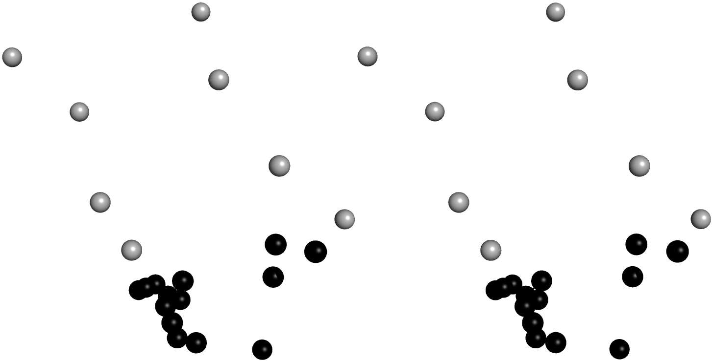
4.4. Comparaison des approximations SPA et PPA
100t
100t
100
100
50t
50t
50
50
20t
20t
20
20
50m
50m
10
50t 20t
10
50t 20t
100t
100t
10
10
20
10*
20
10*
Figure 4.11 – Représentation des différences RMSD des énergies libres par des
pseudo-particules en 3D. Seuls les protocoles pour wtSH2 sont représentés. Les dis-
tances entre les particules sont proportionnelles aux différences de RMSD. Les particules
noires sont les protocoles PPA, en gris les protocoles SPA. Les valeurs de N sont indiquées
pour quelques protocoles. Les résultats obtenus avec les titrations ou la métadynamique
sont labellisés en t ou m. Vue en stéréo, avec Pymol.
Analyse des titrations Les courbes de titration sont présentées en figure 4.12 pour le
système wtSH2 (N=20, 50 ou 100 ; SPA ou PPA avec P =100). Tout d’abord, nous voyons
que l’ordre des courbes varie beaucoup en fonction de N avec l’approximation SPA, et
beaucoup moins avec l’approximation PPA. Encore une fois, le squelette B varie beaucoup
plus que les autres. Ce phénomène est aussi visible avec le système siSH2 (données non
montrées). Sur le tableau 4.4, nous avons reporté tous les coefficients de Hill (Eq. 4.2)
obtenus avec les différents protocoles. Ce coefficient a une valeur spécifique dans le cas
où l’échantillonnage de Boltzmann est respecté : α = 1/(kT ln 10) = 0.734 (kcal/mol)−1
à la température de simulation. Pour l’ensemble des simulations, un bon accord avec la
valeur théorique est obtenue, et plus particulièrement avec P =100. En effet, l’erreur et
l’écart-type sont très faibles pour ces simulations avec N=10. Cette erreur augmente avec
N . Par exemple, en SPA, l’écart-type passe de 0.027 (kcal/mol)−1 avec N =20 à 0.037
(kcal/mol)−1 avec N=100 pour le système wtSH2, et avec PPA, il passe de 0.015 avec
N =20 à 0.021 (kcal/mol)−1 avec N =100. De même, l’écarte-type varie peu avec PPA pour
le système siSH2 passant de 0.019 à 0.015 (kcal/mol)−1 pour N=20 et N=100, alors qu’il
99
Chapitre 4. Validation de l’approximation PPA et comparaison avec SPA
varie de 0.010 à 0.030 (kcal/mol)−1 avec SPA pour les mêmes valeurs de N. Enfin, d’une
manière générale, les écarts-types sont plus élevés en SPA qu’en PPA, montrant encore
une fois une certaine instabilité des estimations et des simulations.
Tableau 4.4 – Coefficient de Hill des titrations de squelette. Coefficient de Hill α
pour les titrations de chaque modèle de squelette A–F, pour chaque système et protocole
(PPA P =100). Pour chaque système, les moyennes les plus proches de la valeur théorique,
0.734 (kcal/mol)−1, sont en gras. L’erreur est la moyenne des différences avec la valeur
théorique. L’écart-type est calculé pour les six squelettes, sont en gras ceux qui sont
inférieur à 0.02 (kcal/mol)−1.
système
A
B
C
D
E
F
moyenne erreur écart-type
P
N
wtSH2
0.67 0.67 0.71 0.70 0.74 0.69
0.70
0.03
0.027
SPA
20
wtSH2
0.64 0.69 0.69 0.67 0.67 0.70
0.68
0.05
0.022
SPA
50
wtSH2
0.61 0.66 0.69 0.64 0.67 0.69
0.66
0.07
0.031
SPA 100
wtSH2
0.70 0.72 0.73 0.72 0.71 0.69
0.71
0.02
0.015
PPA
20
wtSH2
0.66 0.67 0.66 0.69 0.66 0.66
0.67
0.06
0.012
PPA
50
wtSH2
0.56 0.60 0.56 0.61 0.59 0.59
0.58
0.15
0.021
PPA 100
siSH2
0.72 0.73 0.72 0.71 0.70 0.71
0.71
0.02
0.010
SPA
20
siSH2
0.73 0.73 0.74 0.70 0.66 0.71
0.71
0.02
0.029
SPA
50
siSH2
0.74 0.72 0.74 0.70 0.66 0.70
0.71
0.02
0.030
SPA 100
siSH2
0.72 0.73 0.74 0.73 0.69 0.70
0.72
0.01
0.019
PPA
20
siSH2
0.66 0.65 0.67 0.65 0.62 0.64
0.65
0.08
0.017
PPA
50
siSH2
0.63 0.63 0.62 0.61 0.59 0.61
0.61
0.12
0.015
PPA 100
peSH3
0.65 0.72 0.76 0.65 0.79 0.81
0.73
0.00
0.069
SPA
50
peSH3
0.60 0.65 0.79 0.76 0.73 0.68
0.70
0.03
0.071
SPA 100
100
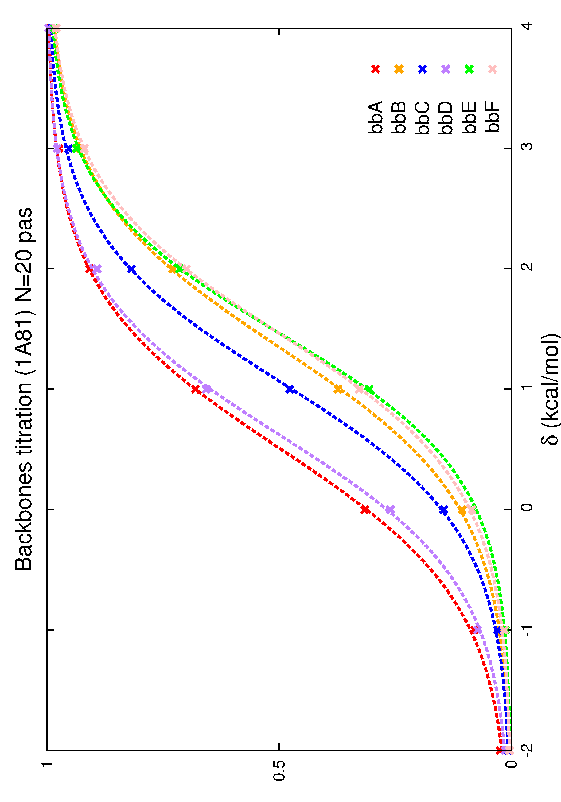
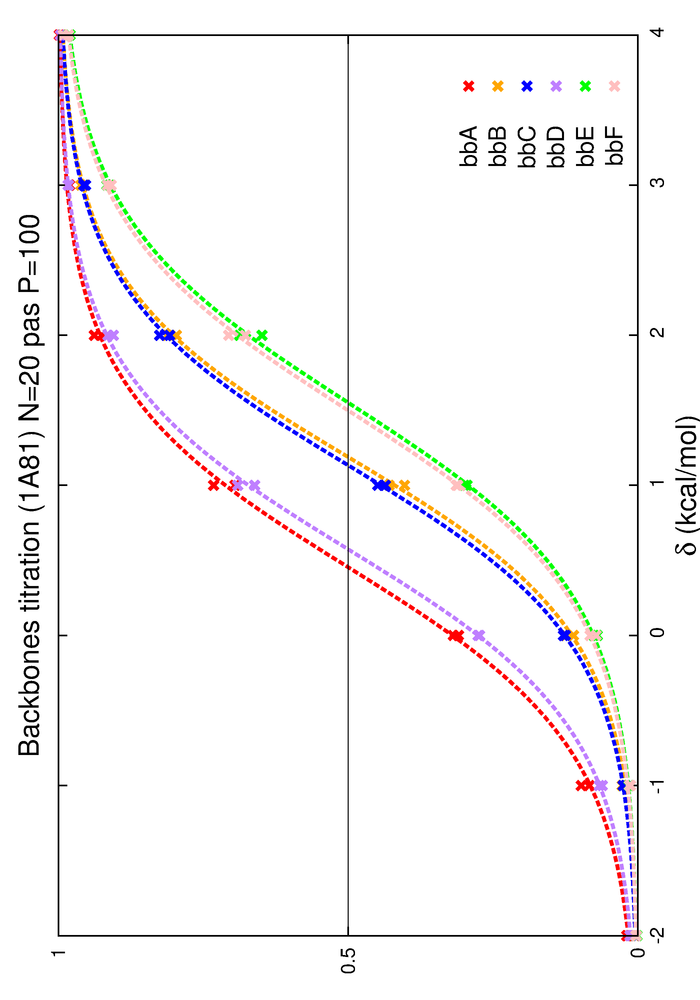
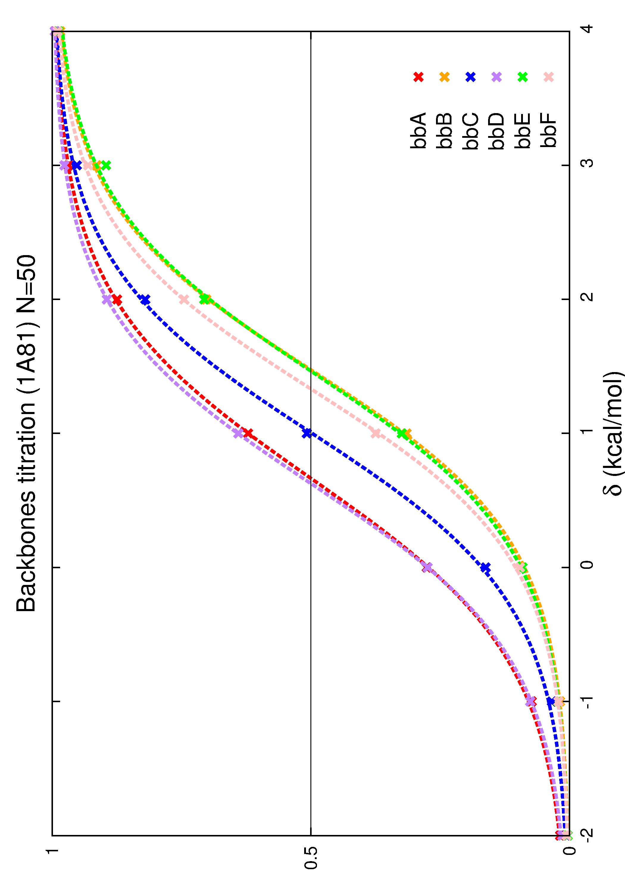
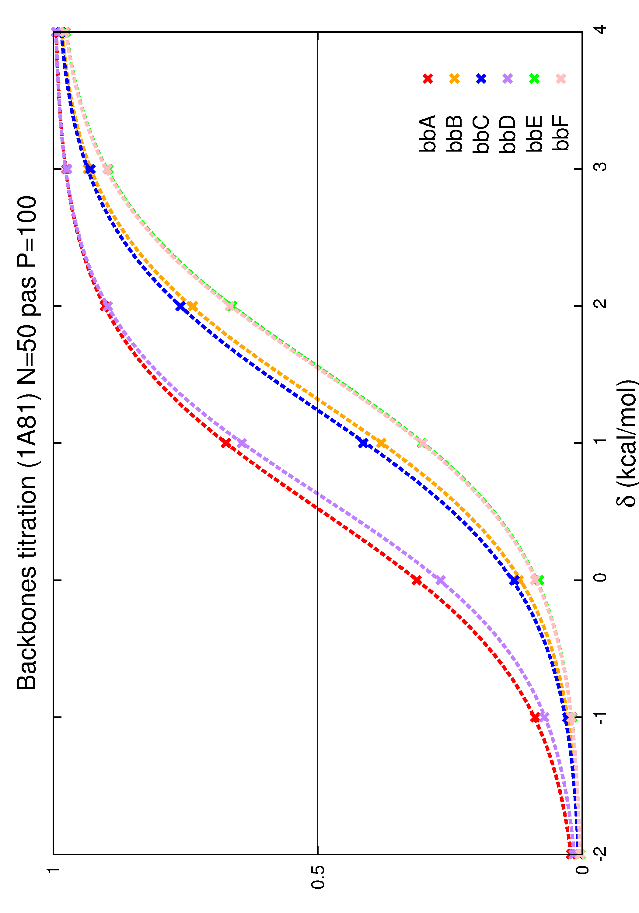
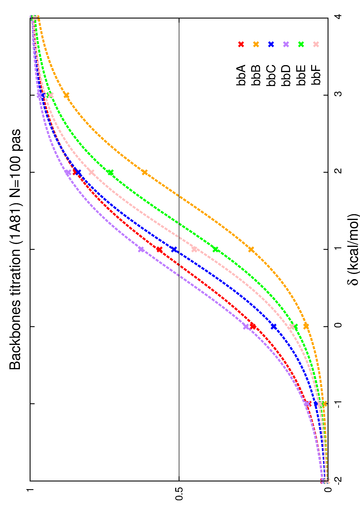

4.4. Comparaison des approximations SPA et PPA
(a) N =20 SPA
(b) N =20 PPA
(c) N =50 SPA
(d) N =50 PPA
(e) N =100 SPA
(f) N =100 PPA
Figure 4.12 – Courbes de titration du système wtSH2. Les colonnes représentent
les simulations en SPA et en PPA avec P =100. La longueur de relaxation varie selon les
lignes (20, 50 ou 100). Pour chaque graphique, l’ordonnée représente le ratio de fraction
du squelette étudié par rapport aux autres, l’abscisse est le potentiel de biais δ ajouté au
squelette étudié. Les différents squelettes sont représentés en rouge, jaune, bleu, violet,
vert et rose pour A, B, C, D, E et F respectivement. Pour chaque squelette, la fraction
de population est montrée en fonction de la contribution énergétique du biais δ ajouté à
l’énergie du squelette.
101
Chapitre 4. Validation de l’approximation PPA et comparaison avec SPA
4.4.3 Simulations avec variation du squelette et de la séquence
Les simulations précédentes ont été réalisées avec une séquence fixe. Nous voulons
savoir si nos simulations respectent tout autant les statistiques de Boltzmann lorsque la
séquence varie. Les simulations sont réalisées dans cette partie de manière à former un
cycle thermodynamique. Pour cela, nous utilisons les six conformations de squelettes du
système SH2, notées A–F, pour lesquelles nous comparons six protocoles Monte Carlo qui
utilisent P = 1 (SPA) ou 100 (PPA), avec N = 10, 20, ou 50.
bbB/199T
bbB/199F
Mutation
0.03/-0.01/-0.06/0.03
elette
u
q
0.70
0.54 double
t s
0.57/0.48/0.50/0.62
0.67
0.49 simple2 SPA
en
0.49/0.47/0.49/0.62
m
0.71
0.56 simple6
ve
0.77
0.59 simple6 PPA
ou
M
-0.21/-0.20/-0.22/-0.15
bbD/199T
bbD/199F
Figure 4.13 – Cycle thermodynamique pour le couple de squelettes BD. La
mutation appliquée de la gauche vers la droite est T199F. Le changement de squelette du
haut vers le bas est de B à D. Les différences d’énergies sont notées dans l’ordre suivant :
double, simple2, simple6 en SPA, puis simple6 en PPA.
La figure 4.13 présente le cycle thermodynamique, avec les énergies libres pour la paire
de squelettes BD, en utilisant N=50, SPA ou PPA (P =100 chemins), et les approches
“simple” ou “double”. Dans les simulations simples, soit tous les squelettes (six au total)
sont autorisés à être échantillonnés (protocole “simple6”), ou seulement les squelettes B
et D sont autorisés (protocole simple2). Ces quatre approches donnent des résultats pour
chaque branche du cycle qui présentent des écarts de ±0.05 kcal/mol environ. En allant de
haut à gauche en bas à droite, et en suivant soit la route grise soit la route noire autour du
cycle, nous obtenons deux estimations d’énergies libres légèrement différentes, montrées
102
4.4. Comparaison des approximations SPA et PPA
au centre du cycle. Pour les quatre approches de simulations, les deux voies donnent des
résultats identiques à ±0.05 kcal/mol près pour chaque branche (comparer les lignes du
haut et du bas). Ces différences définissent les erreurs de fermeture du cycle. Le tableau
4.5 présente l’ensemble des δG pour N=10, 20 ou 50 pour le couple de squelette BD. Nous
voyons que pour les simulations PPA, il a systématiquement une différence d’environ 0.20
kcal/mol entre les estimations le δD1 et δD2 du mouvement de squelette.
Tableau 4.5 – Différences d’énergies libres du cycle thermodynamique pour
le couple de squelettes BD. Les simulations avec PPA sont réalisées avec P = 100
chemins permutés.
N
P
protocole
δG1
δGB
δG1 + δGB
δGA
δG2
δGA + δG2
double
0.84 -0.21
0.63
0.03
0.64
0.67
SPA
simple2
0.85 -0.24
0.61
-0.02 0.62
0.60
10
simple6
0.83 -0.20
0.63
0.00
0.63
0.63
PPA
simple6
1.04 -0.17
0.87
0.04
0.82
0.86
double
0.82 -0.21
0.61
0.03
0.61
0.64
SPA
simple2
0.81 -0.21
0.60
0.00
0.60
0.60
20
simple6
0.82 -0.17
0.65
0.03
0.62
0.65
PPA
simple6
0.92 -0.16
0.76
0.02
0.73
0.75
double
0.70 -0.21
0.49
0.03
0.54
0.57
SPA
simple2
0.67 -0.20
0.47
-0.01 0.49
0.48
50
simple6
0.71 -0.22
0.49
-0.06 0.56
0.50
simple6
0.77 -0.15
0.62
0.03
0.59
0.62
PPA
double
0.78 -0.21
0.57
0.03
0.58
0.61
La figure 4.14 donne une image plus détaillée, avec les résultats pour les paires de
squelettes BD, AE et DF , avec les quatre mêmes approches, avec N = 10, 20 ou 50. Les
erreurs de fermetures de cycle sont aussi montrées en gris. Les erreurs de fermetures de
cycle sont à prendre en considération uniquement pour les simulations ”doubles“ car les
simulations sont indépendantes les unes des autres.
Les énergies libres δGij entre les squelettes sont d’environ 0.2–0.3 kcal/mol pour AE
et DF , et environ 0.5–0.8 kcal/mol pour BD. Les différences entre les protocoles sont
103
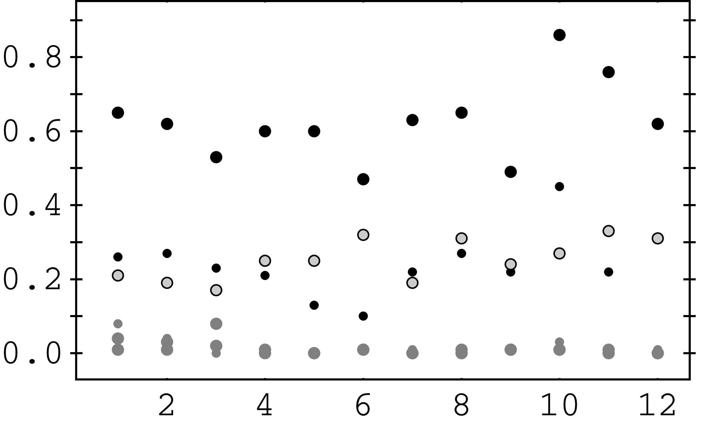
Chapitre 4. Validation de l’approximation PPA et comparaison avec SPA
(les 6 squelettes)
double
simple2
simple6
e
SPA
SPA
SPA
PPA
rr
l)
e
o
u
r d
al/m
BD
20
e
10
10
20
f
kc
e
50
r
50
m
re (
et
AE
u
DF
e lib
re d
ergi
u
én
cycle
protocole des simulations
Figure 4.14 – Vue complète des cycles thermodynamiques pour les trois
couples de squelettes AE, BD, DF . Les résultats sont présentés pour 12 protocoles
différents pour chaque couple de squelettes. Les cercles noirs ou au contour noirs supérieurs
sont les différences d’énergie libre entre l’état A1 et l’état B2 (voire Fig. 4.3). Différents
symboles sont utilisés pour les trois couples de squelettes. En bas en gris, sont les erreurs
de fermetures de cycles (notamment pour les protocoles “double”. La nature de chaque
protocole est indiquée en haut : SPA ou PPA (P =100), ; “double” signifie les simulations
indépendantes pour comparer les types de chaînes latérales (avec le même squelette), puis
pour comparer les squelettes (avec les mêmes types de chaînes latérales). “Simple” cor-
respond aux simulations uniques où les types de chaînes latérales et squelettes varient en
même temps, avec deux squelettes pour “simple2” ou les six squelettes pour “simple6”.
Les valeurs de N sont 10, 20, ou 50, comme indiquées pour deux protocoles (“simple2,
simple6, SPA”).
modérées. Les différences entre N = 20 et 50 et entre les quatre approches sont de 0.2
kcal/mol au plus pour chaque paire et généralement 0.1 kcal/mol. La plus grande différence
entre SP A et P P A se situe sur les valeurs des différences d’énergies libres des squelettes
(δG1 et δG2) pour les squelettes BD (Tab. 4.5). De plus, les différences d’énergies libres
diminuent en P P A quand N augmente. Cette variation est visible sur la figure 4.14. Elle
est aussi visible pour le couple de squelette AE, mais inexistante pour DF . Ceci peut-être
dû à l’introduction de la mutation dans l’échantillonnage qui influe sur les populations
de squelettes. Les erreurs de fermetures de cycles sont de 0.1 kcal/mol, et représentant
104
4.4. Comparaison des approximations SPA et PPA
seulement 10 ou 20% des δGij correspondants. Ces erreurs étant faibles, elles suggèrent
que les squelettes sont bien échantillonnés selon la distribution de Boltzmann.
4.4.4 Discussion et conclusions
Nous avons comparé le comportement des simulations avec les approximations SPA et
PPA. Tout d’abord, nous avons vu que la population des squelettes varie selon la longueur
de la relaxation avec SPA. Cette variation est flagrante pour le squelette B.
Ensuite, nous avons utilisé trois méthodes d’estimations de différences d’énergies libres
entre les squelettes : la méthode naïve, la titration et la métadynamique. Nous avons vu
que ces trois méthodes procurent des différences d’énergie libre proches les unes des autres,
notamment la méthode naïve et la titration. La métadynamique peut montrer quelques
variations sur certains squelettes. Par exemple, les différences d’énergies libres varient
fortement avec l’approximation SPA en métadynamique pour les squelettes B et E, alors
qu’elles sont plus similaires avec les deux autres méthodes. Ces variations sont moindres
pour ces deux squelettes B et E avec PPA.
En nous intéressant à la méthode de titration, nous avons vu que l’ordre des courbes
sigmoïdes fluctue beaucoup avec SPA, notamment pour le squelette B. Ce phénomène est
beaucoup moins visible avec l’approximation PPA. Ceci est confirmé par les coefficients
de Hill qui sont plus proches de la valeur théorique avec PPA qu’avec SPA.
Enfin, nous avons mis en place un cycle thermodynamique où la séquence et le squelette
varient en même temps. Nous avons vu que les estimations des différences d’énergies libres
des squelettes (δG1 et δG2) varient entre SPA et PPA. Cependant, les deux approximations
montrent une variation de ces δG selon N. Il est possible que ceci est dû à l’ajout d’une
mutation qui influe sur les populations de squelettes. Il serait intéressant de compléter les
simulations avec N=100 pour vérifier si cette tendance est confirmée, ainsi que rajouter
des simulations en PPA pour les comparer entre elles.
105
Chapitre 4. Validation de l’approximation PPA et comparaison avec SPA
4.5 Analyse des disparités entre les approximations
SPA et PPA
Nous avons vu en comparant les résultats des simulations avec SPA et PPA que ces
approximations ne mènent pas exactement aux mêmes populations de squelettes. De plus,
l’approximation SPA ne fournit pas les mêmes populations de squelettes en fonction des
paramètres choisis pour la simulation. Nous voulons donc comprendre l’origine de ces
variations. Pour cela, nous allons comparer les probabilités d’acceptations de la relaxation
entre les deux approximations. Puis nous allons étudier l’effet de la nature des chemins
générateurs en SPA et permutés PPA sur les probabilités d’acceptation du mouvement
hybride.
4.5.1 Corrélation des ratios des probabilités de réaliser les mou-
vements hybrides entre SPA et PPA
Nous avons vu à partir de plusieurs protocoles et plusieurs analyses de simulations, la
présence d’une certaine disparité entre les simulations SPA et PPA. Pour comprendre l’ori-
gine de ces différences entre ces deux approximations, nous nous intéressons directement à
leurs probabilités d’acceptation. Plus précisément, nous allons comparer les ratios f(P )
G
et f(P ) pour tous les mouvements hybrides de différentes simulations Monte Carlo. Ici,
f (P ) correspond au chemin générateur et son inverse utilisé dans l’approximation SPA.
G
Les simulations sont réalisées sur les systèmes wtSH2 et peSH3 pour différents N (10, 20,
10, 100) et P (10, 20, 50, 10, 500, 1000). Pour chaque mouvement hybride accepté, nous
calculons après la relaxation la probabilité d’acceptation du chemin générateur direct et
inverse uniquement f(P ). Puis nous calculons le ratio
G
f (P ) avec les chemins permutés
générés à partir de la relaxation. Ainsi, nous obtenons les ratios des deux méthodes pour
un mouvement b′,0 → b′,N identique.
Pour les deux systèmes (données non montrées pour peSH3), quelque soit N et P ,
une droite de corrélation apparaît (Fig. 4.15). Cependant, au dessus de cette droite un
nuage de points est présent, signifiant que certains chemins générateurs conduisent à une
106


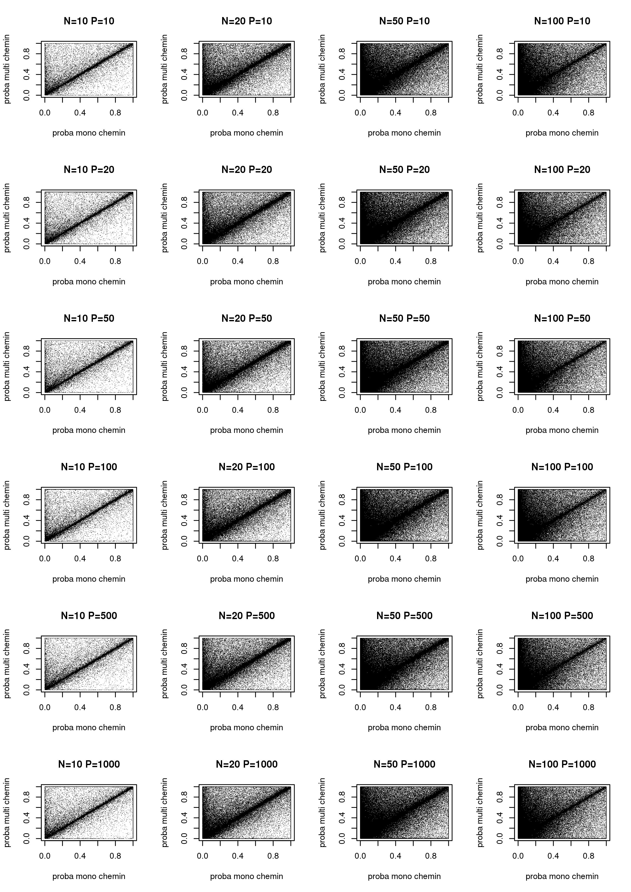


4.5. Analyse des disparités entre les approximations SPA et PPA
probabilité de déplacement plus faible qu’avec les chemins permutés. Il y a donc un biais
dans l’acceptation des mouvements hybrides avec SPA.
D’autre part, les coefficients de corrélation entre f(P ) et f(P ) varient peu selon
G
P , alors que la valeur de N a une influence sur ces coefficients. En effet, pour wtSH2,
pour N égal à 10, 20, 50, 100, les coefficients de corrélation sont de 0.95, 0.87, 0.65, 0.47
respectivement. De même, pour peSH3, les coefficients de corrélation sont de 0.96, 0.91,
0.74, 0.57. Cette diminution des coefficients de corrélation en fonction de N s’explique
par la nature des chemins.
N=10
N=20
N=50
N=100
0.95 0.87 0.65 0.47
1
P=10
0
1
0.95 0.87 0.65 0.47
P=20
0
0.95 0.87 0.65 0.47
1
P=50
0
f(P)
0.95 0.87 0.65 0.47
1
P=100
0
0.95 0.87 0.66 0.47
1
P=500
0
0.95 0.87 0.65 0.47
1
P=1000
0 0 1 0 1 0 1 0 1
f(SPA)
Figure 4.15 – Corrélation des ratios de probabilités de réaliser les mouvements
rotamériques entre SPA et PPA sur wtSH2. Sont tracées en abscisse la probabilité
de réaliser la relaxation directe et inverse (SPA) ; en ordonnée la probabilité de réaliser
les chemins permutés directes et inverses (PPA). N varie de 10, 20, 50 ou 100, et P de
10, 20, 50, 100, 500 ou 1000. En rouge sont notés les coefficients de corrélation.
4.5.2 Notion de chemin monotone
Nous introduisons ici la notion de chemin “monotone”. Il s’agit d’un chemin où toutes
les positions qui changent de rotamères au cours de la relaxation le font une seule fois.
107
Chapitre 4. Validation de l’approximation PPA et comparaison avec SPA
Dans un chemin non-monotone, au contraire, un acide aminé au moins subit au minimum
deux changements de rotamère, par exemple a → b → a. Par définition, tous les chemins
permutés sont monotones. Or, les chemins générateurs ne le sont pas en général. De
plus, nous avons vu que plus la longueur de relaxation N augmente, plus le nombre de
rotamères modifiés par relaxation augmente, ce qui diminue la probabilité d’avoir un
chemin générateur monotone.
Afin d’évaluer la qualité de l’approximation SPA, nous voulons calculer la proportion
des chemins générateurs monotones sur l’ensemble des chemins générateurs d’une simu-
lation. Cette proportion est recensée pour les systèmes wtSH2, peSH3 et loSH3, avec N
valant 10, 20, 50 ou 100.
En théorie, en considérant une courte relaxation et un grand nombre de positions
flexibles M, la probabilité d’avoir un chemin générateur non monotone est faible. Le
nombre de positions flexibles varie d’un système à l’autre : 15, 21 et 26 acides aminés
pour peSH3, wtSH2 et loSH3, respectivement. Aussi, nous savons que pour N égal à 10
ou 20, il y a en moyenne 2-3 ou 4-5 rotamères modifiés par relaxation (jusqu’à 10 pour
N =50), ce qui est très inférieur à la taille de notre échantillon M , et devrait aider à
obtenir beaucoup de chemins générateurs monotones.
Pour nous aider à valider cette idée, nous allons nous appuyer sur des probabilités de
base. Théoriquement, la probabilité qu’une position soit tirée plus de deux fois de manière
indépendante et équiprobable avec remise, suit la loi suivante :
M !
1
p(mG) =
.
(4.10)
(M − mG)! MmG
avec M l’ensemble des positions mobiles, mG le nombre de modification de rotamères au
cours de la relaxation et p(mG) la probabilité que deux positions modifiées ne soient pas
identiques.
La figure 4.16 montre le pourcentage de chemins générateurs monotones par rapport
au nombre de chemins totaux acceptés pour chaque mG. Tout d’abord, nous pouvons
voir que les courbes expérimentales (en trait plein) ont la même allure que les courbes
théoriques (en tiret). Cependant, elles ne se superposent pas parfaitement, signifiant que
108
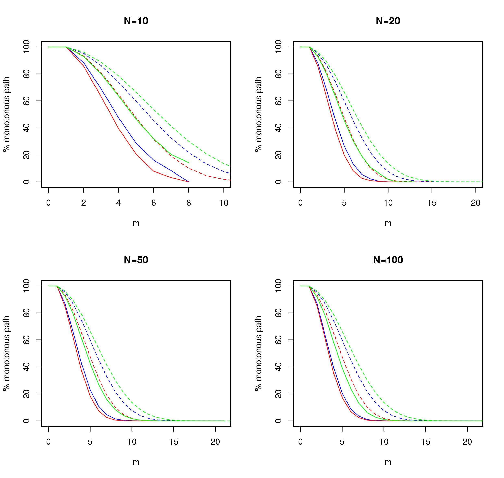
4.5. Analyse des disparités entre les approximations SPA et PPA
notre échantillonnage des positions n’est pas parfaitement indépendant et équiprobable.
En effet, dans notre procédure, les tirages ne sont pas équiprobables puisque chaque
mouvement de rotamère doit être accepté selon son énergie. Or, une fois que le meilleur
rotamère a été choisi pour une position, les chances d’accepter un nouveau rotamère à
cette position est faible.
es
n
o
ot
n
o
rs m
teu
raé
né
m
m
s g
G
G
in
em
ch
e
d
e
g
ta
n
rce
ou
p
m
m
G
G
Figure 4.16 – Pourcentage des chemins générateurs monotones en fonction du
nombre de positions modifiées. Les pourcentages sont tracés en bleu pour wtSH2 ;
rouge pour peSH3 ; vert pour loSH3. En trait plein, les courbes expérimentales ; en tiret
les courbes théoriques (Eq. 4.10).
Afin de retrouver l’impact de ce tirage non équiprobable, les courbes théoriques ont été
modifiées (notamment le paramètre M) jusqu’à ce qu’elles se superposent sur les courbes
109
Chapitre 4. Validation de l’approximation PPA et comparaison avec SPA
expérimentales. Ainsi, les courbes expérimentales correspondent à un tirage équiprobable
sur un ensemble M de 10 positions au lieu de 21 pour le système wtSH2, 8 au lieu de
15 pour le système peSH3 et de 15 au lieu de 26 pour le système loSH3. La taille de
l’échantillon M est donc approximativement réduit de moitié. Étant donné que sa taille
diminue, le nombre de chemins générateurs monotones va diminuer aussi.
Ensuite, les courbes expérimentales montrent que le pourcentage de chemins généra-
teurs monotones est élevé quand N est petit. Pour deux mouvements mG acceptés, il est
de 88, 86 et 93% pour wtSH2, peSH3 et loSH3 respectivement. Ces valeurs décroissent
quand mG augmente. A noter que quand N est égal à 10, la moyenne de mG est de 2-3.
C’est donc une grande majorité des relaxations qui sont composées de chemins monotones.
Ceci est en adéquation avec la figure 4.15, où il y a une forte corrélation entre les chemins
générateurs et les chemins permutés car ils sont tous les deux monotones le plus souvent.
De plus, le pourcentage de chemins générateurs monotones augmente avec M. En effet,
pour mG=3, le pourcentage de chemins générateurs monotones est de 80% pour loSH3,
où M est égal à 26 positions. Ce pourcentage est de 63% pour peSH3 où M est égal à 15
positions.
4.5.3 Discussion et conclusion
Pour comprendre l’origine des disparités entre l’approximation SPA et PPA, nous
avons commencé par étudier le ratio f(P ) des probabilités directe (b′,0 → b′,N) et inverse
(b,N → b,0). Nous avons relevé les valeurs f(P ) pour de nombreux déplacements hybrides,
soit avec P (SPA), soit avec 10
G
≤ P ≤ 1000 (PPA). Nous avons vu que la corrélation entre
les valeurs SPA et PPA diminue quand N augmente, quelque soit le nombre de chemins
permutés utilisés avec PPA. Ceci nous pousse à penser que c’est la nature du chemin utilisé
qui implique ces différences d’échantillonnage. En effet, tous les chemins permutés sont
monotones, alors que la proportion des chemins générateurs monotones diminue quand
N augmente. Ainsi, nous supposons que le caractère monotone des chemins permet de
mieux respecter la balance détaillée, et d’atteindre une distribution de Boltzmann.
110
4.6. Discussion et Conclusions
4.6 Discussion et Conclusions
Dans ce chapitre, nous avons comparé les deux approximations proposées pour accep-
ter les mouvements hybrides. Tout d’abord, nous avons utilisé différentes méthodes pour
calculer les énergies libres relatives des différents squelettes : la méthode naïve, la titra-
tion de squelette et la métadynamique. Ces énergies libres sont fortement corrélées, quelle
que soit l’approximation utilisée. Cependant, nous avons noté une dispersion des résul-
tats plus nette avec SPA qu’avec PPA quand la longueur N de la relaxation varie. Ceci
est confirmé en comparant les populations des squelettes à convergence. Ce phénomène
signifie que les simulations avec SPA ne respectent pas parfaitement la balance détaillée.
Comme vu au chapitre 3, le chemin générateur est choisi selon le paysage énergétique
du squelette choisi pour le mouvement hybride, alors que cela n’est pas le cas pour les
chemins permutés. Il existe deux différences entre les chemins générateurs et permutés :
la monotonie des modifications des rotamères et la permutation des mouvements rotamé-
riques. Nous avons vu qu’en utilisant le chemin générateur simplifié monotone apportait
une probabilité d’acceptation du mouvement hybride proche d’un ensemble de chemin
permuté. Nous pouvons donc penser que la permutation des mouvements rotamériques a
peu d’impact sur la probabilité d’acceptation. Du reste, nous avons vu que peu de chemins
générateurs sont monotones. Ainsi, nous faisons l’hypothèse que c’est la monotonie des
chemins utilisés pour accepter le mouvement hybride qui permet de respecter la balance
détaillée. Cependant, cette hypothèse reste à être validée.
111
112
Chapitre 5
Mutagenèse sur la tyrosyl-ARNt
synthétase
Nous avons choisi d’appliquer notre programme proteus à la tyrosyl-ARNt synthé-
tase (TyrRS), étudiée expérimentalement dans le laboratoire de Biochimie de l’École
Polytechnique. Cette enzyme catalyse l’attachement de la tyrosine à un ARNt pour son
incorporation ultérieure dans les protéines. Dans ce chapitre, deux études bien distinctes
sont présentées. Tout d’abord, une étude applique le dessin multi-squelettes à une boucle
du site actif de la TyrRS, portant la séquence signature KMSKS. Cette boucle adopte
deux conformations, ouverte ou fermée. Les simulations de CPD prédisent des séquences
différentes selon l’état conformationnel. Ainsi, il existe des séquences qui permettent de
favoriser un état plutôt que l’ autre.
Puis, dans une seconde partie, une étude présente (sous forme d’article) l’échantillon-
nage de la tyrosine et de son stéréo-isomère D dans la poche de la TyrRS. L’objectif est
de modifier la stéréospécificité de l’enzyme pour étendre le code génétique et incorporer la
D-tyrosine dans les protéines. Dans ces simulations, la séquence de la TyrRS est fixe tandis
que la tyrosine se voit adopter soit son type naturel L-tyrosine (L-Tyr), soit son type non
naturel D-tyrosine (D-Tyr). Ce type d’échantillonnage est analogue à l’échantillonnage de
squelettes par l’aspect multi-états du ligand.
113
Chapitre 5. Mutagenèse sur la tyrosyl-ARNt synthétase
5.1 Présentation et analyse structurale de la tyrosyl-
ARNt synthétase
5.1.1 Les aminoacyl-ARNt synthétases
Les aminoacyl-ARNt synthétases (aaRS) sont des enzymes impliquées dans la bio-
synthèse des protéines. Elles activent un acide aminé en le liant à un ARN de transfert
(ARNt). L’ARNt amène l’acide aminé dans le ribosome pour l’incorporer dans une pro-
téine en cours de synthèse (Fig. 5.1b).
L’activation de l’acide aminé particulier se déroule en quatre étapes (Fig. 5.1a) :
(1) L’acide aminé et l’ATP (Adénosine Tri Phosphate) se lient à l’aaRS correspondant.
(2) L’acide aminé est activé par la formation d’une liaison covalente avec l’AMP (Adé-
nosine Mono Phosphate), et le PPi (pyrophosphate) est relargué.
(3) L’ARNt correspondant à l’acide aminé se lie à l’aaRS ; puis l’acide aminé se lie à
l’ARNt, entraînant le relargage de l’AMP.
(4) Enfin, l’ARNt chargé de son acide aminé est relargué dans la cellule, puis sera ensuite
utilisé par le ribosome pour la traduction des protéines (Fig. 5.1b).
C’est donc l’aaRS qui établit le lien entre l’ARNt et l’acide aminé. En mutant l’aaRS
pour qu’elle interagisse avec un nouveau substrat, l’ARNt chargera cet acide aminé non
naturel dans les protéines par complémentarité codon/anticodon. Selon l’acide aminé non
naturel incorporé, les protéines qui en seront composées se verront associées de nouvelles
propriétés biochimiques. Par exemple, si le nouvel acide aminé est un isomère D, alors les
protéines ou les peptides synthétisés adopteront une structure particulière, non reconnue
par les protéases. En résistant à la protéolyse, ces nouvelles protéines augmenteront leur
demi-vie biologique. Cette propriété n’est pas négligeable, car un peptide thérapeutique
contenant des acides aminés D aura un temps d’action plus long dans l’organisme. De
plus, avec l’âge, les acides aminés D sont de plus en plus incorporés naturellement chez
l’homme, notamment dans les cellules cristallines impliquées dans la vision, les protéines
de myéline et les peptides β-amyloïdes impliqués dans la maladie d’Alzheimer. La capacité
114
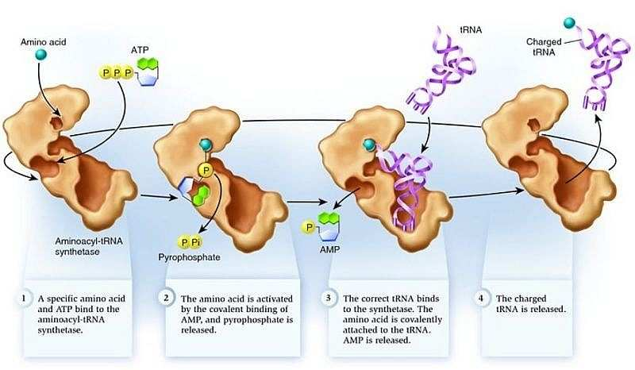
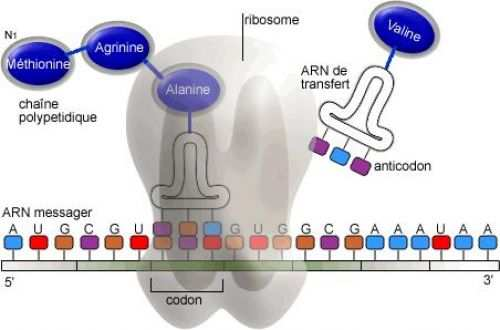
5.1. Présentation et analyse structurale de la tyrosyl-ARNt synthétase
à synthétiser facilement ces protéines faciliterait la compréhension de leur rôle dans ces
maladies (Richardson & First [2016]).
(a) Activation d’un acide aminé par son aaRS.
(b) Incorporation des acides aminés dans les protéines.
Figure 5.1 – Activation et incorporation des acides aminés par les aaRS. L’acide
aminé est activé par son aaRS (a), puis est incorporé pendant la traduction des protéines
par l’ARNt (b).
115
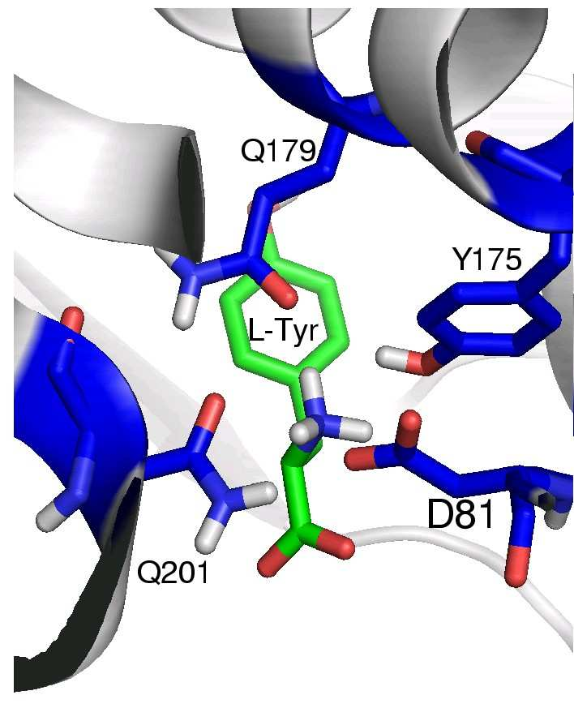
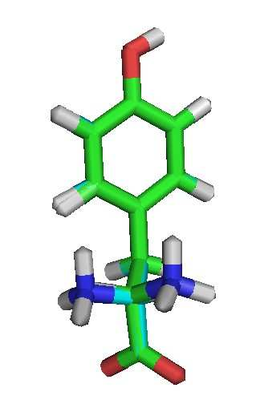
Chapitre 5. Mutagenèse sur la tyrosyl-ARNt synthétase
5.1.2 La tyrosyl-ARNt synthétase
La tyrosyl-ARNt synthétase (TyrRS) reconnaît spécifiquement l’acide aminé tyrosine
(Tyr). La TyrRS interagit avec la forme L de la tyrosine, via 4 résidus du site catalytique
(Fig. 5.2a) : Asp81, Tyr175, Gln179 et Gln201. Cependant, la poche catalytique a la
particularité d’avoir une stéréospécificité faible par rapport au squelette de la tyrosine.
Ainsi, la TyrRS peut charger l’ARNT tTyr avec l’acide aminé non naturel D-Tyr au lieu
de la L-Tyr naturelle (Fig. 5.2b). Chez Escherichia coli, la constante de Michaelis KM de
la réaction enzymatique pour la L-Tyr est de 44 µM alors qu’elle est de 270 µM pour
la D-Tyr (Simonson et al. [2016]). Dans le cas des aaRS, la constante de Michaelis est
comparable à la constante de dissociation KD. Nous pouvons comparer ces résultats à ceux
obtenus chez Bacillus stearothermophilus. L’équipe de Sheoran et al. [2008] a déterminé les
KD de la L-Tyr (12 µM) et de la D-Tyr (102 µM). Ainsi, les ratio L/D sont proches chez
E. coli et B. stearothermophilus, de valeurs 6.1 et 8.5 respectivement, favorisant dans les
deux cas la L-tyrosine. Ces ratios correspondent à une différence d’énergie libre de liaison
de 1.1 kcal/mol chez E. coli et de 1.3 kcal/mol chez B. stearothermophilus, en faveur de
la L-tyrosine.
D
L
(a) Interaction Tyr-TyrRS.
(b) L- et D-tyrosine.
Figure 5.2 – Stéréospécificité de la TyrRS. (a) Interaction de la L-tyrosine avec les
quatre résidus du site actif. (b) Les formes L (à droite) et D (à gauche) de la tyrosine.
Une fois que la tyrosine est liée dans la poche, deux boucles activatrices interviennent
dans la catalyse. Ces deux boucles portent des motifs hautement conservés HIGH et
KFGKT dans de nombreux organismes (Fig. 5.3).
116
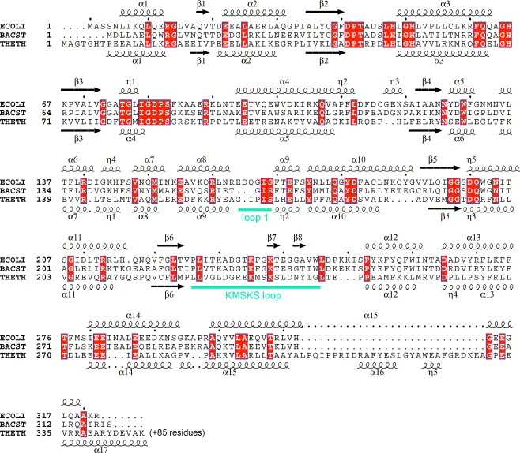
5.1. Présentation et analyse structurale de la tyrosyl-ARNt synthétase
Boucle HIGH
Boucle KMSKS
Figure 5.3 – Alignement des séquences de la TyrRS. Les séquences proviennent des
organismes E. coli (ECOLI), B. stearothermophilus (BACST) et Thermus thermophilus
(THETH). En bleu sont représentées les boucles conservées HIGH et KMSKS (Kobayashi
et al. [2005]).
Intéressons nous plus particulièrement à la boucle portant KMSKS, dont une analyse
structurale poussée a été réalisé par Kobayashi et al. [2005]. Cette analyse a montré que :
(1) La tyrosine est d’abord insérée dans le site actif de la TyrRS. La boucle KMSKS est
complètement ouverte (Fig. 5.4a).
(2) L’ATP se lie à cette forme ouverte de la TyrRS.
(3) La partie adénine de l’ATP lié dans la poche attire légèrement la boucle KMSKS à
l’ATP, formant la conformation semi-ouverte (Fig. 5.4b).
(4) Les deux Lys de 235KMSKS239 sont engagées par l’ATP, conduisant à la conformation
fermée. K235 interagit avec l’ATP en lui donnant une forme de U, laissant libre d’accès
le α-phosphate. La seconde Lys (K238) crée une liaison hydrogène ou ionique avec le α-
phosphate de l’ATP. La liaison covalente entre les phosphates α et β est clivée, formant
117
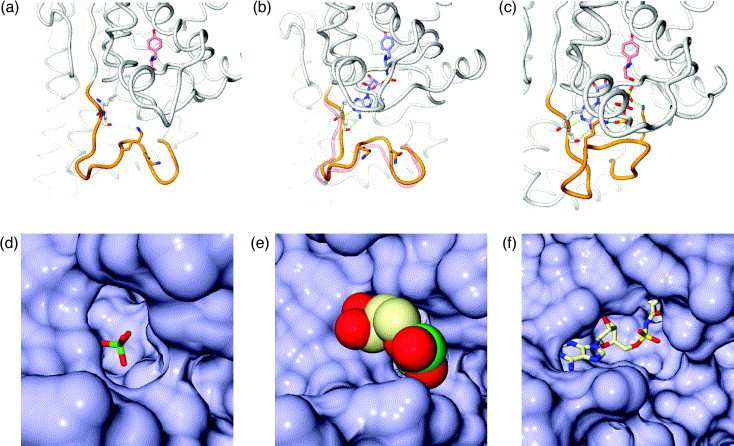
Chapitre 5. Mutagenèse sur la tyrosyl-ARNt synthétase
la TyrAMP, toujours avec la conformation fermée (Fig. 5.4c).
Figure 5.4 – Flexibilité de la boucle KMSKS. Les trois conformations de la boucle
KMSKS (en orange) ouverte (a), semi-ouverte (b) et fermée (c) dépendent de l’évolution
catalytique du substrat tyrosine.
5.2 Échantillonnage de la boucle activatrice KMSKS
Un objectif possible du CPD est de contrôler ou de modifier la conformation d’une pro-
téine. Dans cette première partie, nous voudrions identifier des séquences qui poussent la
TyrRS à occuper une conformation particulière. Pour cela, nous faisons varier la séquence
signature KMSKS tout en explorant deux types de conformations : semi-ouverte ou fer-
mée. L’objectif est d’identifier les séquences qui favorisent un des états conformationnels
plutôt que l’autre.
5.2.1 Préparation du système et modélisation de la boucle KM-
SKS
Le modèle de la TyrRS d’E. coli a été construit à partir de la structure 1VBM (Ko-
bayashi et al. [2005]) qui contient le ligand tyrosyl-adenylate. Nous avons choisi cette
structure pour nous assurer que la protéine est bien organisée pour fixer le substrat ATP.
Le ligand tyrosine provient du complexe 1X8X de E. coli. Une molécule d’eau structurale
est ajoutée au complexe, par comparaison de six structures d’E. coli disponibles dans la
PDB (1VBM, 1VBN, 1WQ3, 1WQ4, 1X8X, 2YXN). L’Asp182 (très enfouie) est proto-
née ; toutes les histidines sont simplement protonées sur le Nǫ d’après les prédictions de
118
5.2. Échantillonnage de la boucle activatrice KMSKS
PROPKA (Olsson et al. [2011]). Le ligand a été soumis au serveur RED (Vanquelef et al.
[2011]) pour paramétrer les charges atomiques de son squelette selon le champ de force
AMBER ff99SB, également utilisé pour le calcul de la matrice d’énergie. Enfin, le modèle
a été minimisé pendant 100 pas avec l’algorithme du gradient conjugué.
La région flexible d’intérêt est une boucle du site actif de 31 résidus, correspondant
aux résidus 225–258. La boucle a été modélisée dans les deux conformations : conforma-
tion fermée (homologue à la structure cristallographique 1H3E de Thermus thermophilus
(Yaremchuk et al. [2002])) ou conformation semi-ouverte de 1VBM de E. coli. Cependant,
cette boucle présente des longueurs différentes dans ces deux espèces (31/33 résidus). Pour
une meilleure homologie de séquence et de structure, la version de la boucle modélisée
ne comprend pas les quelques résidus très divergents entre les deux enzymes. La boucle
finale de 31 résidus inclut les résidus 225-258 de E. coli sans Lys249, Lys250 et Thr251,
et les résidus 221-252 de T. thermophilus sans Arg230. A partir de simulations de dyna-
mique moléculaire (même protocole que pour les domaines SH2 et SH3 au chapitre 4),
nous avons sélectionné 10 conformations de squelettes : 5 semi-ouvertes sans ligand et 5
fermées avec le ligand L-Tyr (Fig. 5.5). Les RMSD entre les conformations de boucles
sont donnés dans le tableau 5.1.
La matrice d’énergie a été générée en utilisant le champ de force AMBER ff99SB,
complété par un modèle de solvant GBSA. Les minimisations intra- et inter-rotamériques
avant le calcul des énergies est de 15 pas. Dans l’enzyme d’E. coli étudiée ici, la séquence
signature est 235KFGKT239. Nous autorisons les quatre résidus autre que la glycine à
muter librement, en présence d’un potentiel de biais qui contraint les séquences à rester
proches de la séquence expérimentale. Ce biais a la forme :
Ubiais = c × (S − Srand)2
(5.1)
où c est égal à 1 kcal/mol, S est le score de similarité (matrice Blosum40) avec la séquence
native, et Srand est le score relatif à une séquence aléatoire où tous les acides aminés sont
équiprobables.
119
Chapitre 5. Mutagenèse sur la tyrosyl-ARNt synthétase
Figure 5.5 – Bibliothèque de squelettes de la boucle KMSKS. Les conformations
de squelettes ouvertes en orange et fermées en rouge sont montrées en vue stéréo avec Py-
mol. Le ligand représenté en sphères rouges est présent uniquement dans les conformations
fermées.
Tableau 5.1 – RMSD entre les squelettes de KMSKS (Å)
——— fermé ——— ———– ouvert ————
TyrRS
B
C
D
E
F
G
H
I
J
A
2.0 3.5 4.0
4.1
4.6 5.4 7.1 8.1
7.7
B
2.6 3.0
3.1
5.1 5.8 7.4 8.3
7.9
C
1.3
1.9
5.4 6.0 7.9 9.1
8.4
D
1.6
5.5 6.0 7.9 9.0
8.3
E
6.2 6.8 8.5 9.3
8.6
F
1.9 4.5 6.3
5.6
G
3.3 5.7
5.1
H
3.7
3.5
I
1.9
Les simulations Monte Carlo sont réalisées en multi-marcheurs avec les températures
thermiques kT de 0.175, 0.263, 0.395, 0.592, 0.888, 1.333, 2 et 3 kcal/mol, pendant 50
millions de pas chacun avec un échange de conformations entre marcheurs testé tous les
10,000 pas. La relaxation Monte Carlo à chaque changement de squelettes a une longueur
120
5.2. Échantillonnage de la boucle activatrice KMSKS
de N=50 pas, et chaque mouvement hybride est évalué avec l’approximation SPA ou PPA
et P =100 chemins permutés.
5.2.2 Mutagenèse par CPD en squelette multiple
Lors des simulations de CPD, toutes les conformations ouvertes et fermées sont si-
mulées en même temps. Les conformations fermées sont liées au substrat Tyr alors que
les conformations ouvertes ne contiennent pas le ligand, qui est déplacé dans le solvant.
Les résultats sont résumés dans la figure 5.6. L’ensemble des séquences échantillonnées
est représenté sous forme de logos, et comparé aux séquences expérimentales de la base
Pfam (Finn et al. [2014]). Seulement les positions de la séquence signature 235-239 sont
montrées (Fig. 5.6a). Le logo supérieur récapitule les séquences échantillonnées quand la
boucle est ouverte, le logo inférieur celles échantillonnées quand elle est fermée. Nous rap-
pelons que toutes ces séquences et conformations sont échantillonnées au cours d’une seule
simulation, qui est réalisée soit avec la méthode SPA (Fig. 5.6b), soit avec la méthode
PPA (Fig. 5.6c).
Intéressons nous tout d’abord aux simulations SPA. La seconde Lys dans le motif
signature, Lys238, est connue pour interagir avec le groupe phosphate de la tyrosyl-
adenylate, stabilisant la conformation fermée. Ici, même si le ligand est la tyrosine au
lieu de la tyrosyl-adenylate, cette Lys238 est généralement préservée dans les séquences
de conformations fermées, ou bien mutée en son homologue Arg qui est lui aussi chargé
positivement. Dans la conformation ouverte, cette position est modifiée en Asp, avec une
petite population d’Arg ; Asp est aussi présent dans la conformation fermée, mais avec une
faible population. La Phe236 native est majoritairement conservée dans l’état fermé, et
remplacée par une Met dans l’état ouvert ; les deux types sont courants dans les séquences
expérimentales.
En comparant les simulations SPA et PPA, nous pouvons voir certaines différences
au sein des séquences. Chez les conformations ouvertes, la position 238 a une population
d’Arg plus importante en PPA qu’en SPA, et il n’y a plus du tout d’Asp en position 235.
Cependant, chez les conformations fermées, la position 235 se rapproche du type natif en
121
Chapitre 5. Mutagenèse sur la tyrosyl-ARNt synthétase
proposant beaucoup plus de Lys et d’Arg qu’en SPA. La population d’Asp en position
238 devient presque nulle, alors qu’elle augmente en position 239.
Les simulations SPA et PPA diffèrent aussi par les populations des squelettes. En effet,
les squelettes de conformation ouverte passent de 14.4% à 1.4% avec PPA, et les squelettes
de conformation fermée passent de 85.6% à 98.6%. Ainsi, les squelettes fermés (favorisant
une lysine en position 235) sont plus peuplés en PPA qu’en SPA.
Dans l’ensemble, et en partie grâce au potentiel de biais, les séquences ouvertes et fer-
mées sont modérément homologues aux séquences expérimentales et les unes aux autres.
Plusieurs types de chaînes latérales favorisent distinctement une conformation plutôt
qu’une autre : Arg/Lys235 et Asp238 favorisent la conformation ouverte ; Ala/Ser235,
Phe236 et Arg/Lys238 favorisent toutes l’état fermé. Ainsi, ces simulations révèlent plu-
sieurs mutations possibles qui pourraient spécifiquement stabiliser une conformation ou
l’autre, un but typique dans le dessin de protéine multi-états.
5.3 Échantillonnage de ligands en simulation multi-
états
L’objectif de cette deuxième étude est de modifier la stéréospécificité de la TyrRS, et
lui donner une préférence pour le ligand non naturel D-tyrosine. L’idée est de trouver un
mutant qui favorise la D-tyrosine plutôt que la L-tyrosine. Pour cela, nous avons proposé
(Druart et al. [2016b]) une nouvelle méthode d’échantillonnage de ligands, qui peut être
vue comme un échantillonnage multi-squelettes. Contrairement aux simulations classiques
de CPD où la séquence est optimisée pour un ligand d’intérêt, les simulations sont faites ici
avec une séquence fixe et un ligand variable (squelette fixe). Nous considérons un complexe
TyrRS-Tyr, où le ligand tyrosine dans la poche peut adopter le type L-Tyr ou D-Tyr. Les
pas Monte Carlo sont soit des changements de rotamères, soit un échange L↔D dans
la poche, avec un changement inverse D↔L en solution. Ces simulations correspondent
ainsi à des simulations multi-états, où les états représentent les deux types de ligands. La
122


5.3. Échantillonnage de ligands en simulation multi-états
t
p
x
e
235 236 237 238 239
(a) Séquences expérimentales
t
r
e
v
u
14.4%
o
235 236 237 238 239
é
m
r
85.6%
fe
(b) Mutagenèse de la boucle KMSKS avec l’approximation SPA
t
r
e
v
u
1.4%
o
235 236 237 238 239
é
m
r
98.6%
fe
(c) Mutagenèse de la boucle KMSKS avec l’approximation PPA
Figure 5.6 – Logos KMSKS obtenus par CPD avec le mouvement hybride.
(a) montre le logo expérimental basé sur l’alignement Pfam (100 organismes différents).
Les résultats des simulations sont montrée avec SPA (b) et avec PPA (c) de la boucle
KMSKS. Pour chaque image, en haut est représenté le logo des séquences obtenues sur les
conformations ouvertes sans ligand Tyr, en bas les séquences obtenues sur les conforma-
tions fermées avec le ligand Tyr. A droite sont notées les populations des conformations.
différence avec les simulations multi-squelettes ci-dessus est qu’il n’y a pas de relaxation
Monte Carlo après le changement du type de ligand (N = 0).
Une liste de mutants candidats a été élaborée selon des simulations antérieures de
CPD, ou par analyse visuelle de la structure. Pour chaque mutant, une série de simula-
tions est réalisée où le ligand est variable. La concentration de ligands L et D est constante
123
Chapitre 5. Mutagenèse sur la tyrosyl-ARNt synthétase
pour chacune des simulations. Dans une première simulation, nous avons la concentration
du ligand D-Tyr très élevée et une concentration de L-Tyr très petite. Puis, nous augmen-
tons graduellement, dans les simulations successives, le ratio [L-Tyr]/[D-Tyr], obligeant le
ligand D-Tyr à être déplacé de la poche vers la solution. La dernière simulation de la série
a une concentration de L-Tyr très élevée et une concentration de D-Tyr très petite. Les
populations de D-Tyr liée au cours des simulations suit une courbe sigmoïde ; le point de
demi-titration correspond à l’état où les deux ligands ont une concentration égale. A ce
moment là, l’énergie libre de liaison standard relative des deux ligands vérifie la relation :
[L − T yr]
∆∆G◦ = RT ln(
)
[D − T yr] 1/2
(5.2)
où l’indice 1/2 indique les concentrations en solution au point de demi-titration.
Plusieurs variants de TyrRS sont étudiés successivement, qui diffèrent aux positions
81, 175, 179 et 201 (Fig. 5.2a). Nous les désignons par les types présents à ces quatre
positions : DYQQ (séquence sauvage), RYQQ, KYQQ, KYEQ, KYED, HYED et NYQQ.
Les différences d’énergie libre L-Tyr/D-Tyr sont ensuite comparées entre elles. Parmi
ces séquences, le mutant RYQQ a montré une préférence expérimentale pour la D-Tyr
(Simonson et al. [2016]). Ce travail est décrit en détail dans l’article ci-dessous.
124


FULL PAPER
WWW.C-CHEM.ORG
Protein:Ligand Binding Free Energies: A Stringent Test for
Computational Protein Design
Karen Druart, Zoltan Palmai, Eyaz Omarjee, and Thomas Simonson*
A computational protein design method is extended to allow
iants. The titration results are sensitive to the precise rotamer
Monte Carlo simulations where two ligands are titrated into a
definition, which involves a short energy minimization for each
protein binding pocket, yielding binding free energy differen-
sidechain pair to help relax bad contacts induced by the dis-
ces. These provide a stringent test of the physical model,
crete rotamer set. However, when designed mutant structures
including the energy surface and sidechain rotamer definition.
are rescored with a standard GBSA energy model, results agree
As a test, we consider tyrosyl-tRNA synthetase (TyrRS), which
well with the more rigorous MD/GBSA. As a third test, we
has been extensively redesigned experimentally. We consider
redesign three amino acid positions in the substrate coordina-
its specificity for its substrate L-tyrosine (L-Tyr), compared to
tion sphere, with either L-Tyr or D-Tyr as the ligand. For two,
the analogs D-Tyr, p-acetyl-, and p-azido-phenylalanine (ac-Phe,
we obtain good agreement with experiment, recovering the
az-Phe). We simulate L- and D-Tyr binding to TyrRS and six
wildtype residue when L-Tyr is the ligand and a D-Tyr specific
mutants, and compare the structures and binding free ener-
mutant when D-Tyr is the ligand. For the third, we recover His
gies to a more rigorous “MD/GBSA” procedure: molecular
with either ligand, instead of wildtype Gln. V
C
2015 Wiley Peri-
dynamics with explicit solvent for structures and a Generalized
odicals, Inc.
Born 1 Surface Area model for binding free energies. Next, we
consider
DOI: 10.1002/jcc.24230
L-Tyr, ac- and az-Phe binding to six other TyrRS var-
Introduction
obtain reasonable thermodynamic properties in such a
reduced space, CPD energy functions are often specifically
Protein–ligand interactions play an essential role in biochemis-
adjusted, for example by reducing the van der Waals radii of
try, and have been extensively targeted by computational pro-
atoms, or using a continuum dielectric model for the protein
tein design (CPD).[1–10] Two of the main challenges are the
interior.[11,19,27]
accuracy of the energy function[10,11] and the sampling of con-
CPD is often tested by expressing the designed proteins
formational space. Conformational sampling has been exten-
and assaying them for the desired activity. In several cases, the
sively
analyzed
in
the
context
of
molecular
dynamics
structures predicted by the design have been experimentally
simulations
(MD),[12–14]
but
less so
in
the context of
confirmed.[8,10,28] However, such experimental tests have not
CPD.[4,10,15–19] For example, while sidechain rotamer models
always given very detailed information on the CPD model
have been studied for many years,[20–23] less is known about
itself. Often, just one or a few of the designs were assayed,
sampling ligand positions in CPD.[4,6,10,18]
because the motivation was to engineer an active complex,
Energy accuracy has been analyzed and reviewed in relation
not test the model details. Also, for less successful designs and
to CPD.[11,16,24] In fact, conformational sampling and energy
weakly-bound complexes, it can be very difficult to determine
accuracy are closely linked, because the definition of confor-
an experimental structure or measure activity.
mational space in CPD involves integrating out most of the
Another way to test and improve CPD methodology is to
degrees of freedom, so that the remaining, “explicit” degrees
compare computed binding affinities to experiment or higher-
of freedom explore an effective energy surface, or potential of
level simulations. Indeed, binding affinities are sensitive to the
mean force.[25] In CPD, not only are the electronic and solvent
energy function, the definition of conformational space, and
degrees of freedom integrated out (usually); covalent bond
the quality of conformational sampling.[13] However, this raises
lengths and angles are also held fixed in most implementa-
another kind of difficulty: CPD methods do not usually make
tions. It is well-known that this has a drastic effect on the sam-
free energy predictions that are theoretically well-defined,
pling of torsion angles. For example, if a molecular mechanics
even for the relative binding affinities of pairs of ligands, either
energy function is used for molecular dynamics with fixed
because conformations are not sampled according to a Boltz-
covalent angles, transitions between energy wells are dramati-
mann distribution,[29] or because the sampling is done
cally undersampled,[12,26] because energy barriers on the effec-
tive energy surface are too high. More generally, the depth
K. Druart, Z. Palmai, E. Omarjee, T. Simonson
and shape of the energy basins is affected. Holding the pro-
Laboratoire De Biochimie (UMR CNRS 7654), Department of Biology, Ecole
Polytechnique, Palaiseau, France
tein backbone fixed and limiting sampling to a discrete set of
E-mail: thomas.simonson@polytechnique.fr
sidechain rotamers imposes another level of constraints. To
V
C 2015 Wiley Periodicals, Inc.
404
Journal of Computational Chemistry 2016, 37, 404–415
WWW.CHEMISTRYVIEWS.COM


WWW.C-CHEM.ORG
FULL PAPER
separately for the individual ligands, so that the regions of
function to be written as a sum of terms involving residue
phase space sampled do not overlap, in contrast to alchemical
pairs (the energy is “pairwise additive”).[33,44,57]
free energy simulation methods.[13,30] This prevents a confi-
The conformational space definition assumes the protein
dent estimation of the relative ligand binding free energies.
backbone is fixed, while sidechains explore a discrete library of
Yet, detailed calculation and testing of binding affinities can
rotamers. The ligand can explore a discrete set of conforma-
be very valuable for evaluating and improving CPD methods.
tions, also referred to as rotamers.[4,32,33] As discussed above,
Here, we consider a CPD method proposed earlier for pro-
molecular mechanics force fields are not optimized for a dis-
tein–ligand complexes[31–33] and we extend it to compute rela-
crete rotamer space, and they can give rise to steric clashes
tive binding free energies, by introducing an original,
that would be removed, in a real system, by slight sidechain
“constant-activity Monte Carlo” approach. In CPD, the ligand
rearrangements. In our CPD approach, to alleviate the rotamer
type is normally fixed, while the protein sequence adjusts to it.
approximation, we perform a short energy minimization for
Here, the protein sequence is fixed, while the ligand type
each
residue
pair
before
computing
their
interaction
adjusts. Thus, to compare two ligands X and Y, the Monte
energy.[43,44,58] The interaction energies are stored in an energy
Carlo (MC) moves include ligand swaps, where the ligand in
matrix, which is used as a lookup table during sequence
the binding pocket changes its type from X to Y or the
exploration. This pairwise minimization method was shown to
reverse. The old ligand is not deleted but moved into solution.
be effective for several applications.[33,59–61] However, it means
The unbound ligands contribute to the energy through the
that for each sidechain i, there is not a single, simple set of
logarithm of their concentrations,[34] which are set to a chosen
library rotamers. For each library rotamer R, slightly different
value. Thus, the simulations are performed at a constant ligand
versions are invoked for the interaction with each surrounding
activity. By increasing the ratio [Y]/[X] gradually, X is displaced
sidechain j. Thus, the energy minimization affects both the
from the binding pocket; the titration midpoint yields the rela-
energy surface and the precise definition of the sidechain
tive standard binding free energy. This approach is analogous
rotamers and conformational space. Although similar methods
to the constant-pH MC method for proton binding con-
exist,[62] this one should not be confused with a quenched MC
stants.[35–38] It is also related to methods that use MC or MD
approach: the energy surface is computed ahead of time, once
moves along a chemical pseudo-coordinate to perform
and for all; there is no on-the-fly minimization here during
alchemical free energy simulations.[39–42] In our Proteus soft-
sampling. The number Nmin of minimization steps used for
ware,[43,44] the ligand swaps are treated as “mutations,” so that
each sidechain pair is small, typically Nmin 5 15. The precise
the method (like constant-pH MC) can be viewed as a special
number depends on the application and for some of them, it
case of the general CPD framework.
represents an important adjustable parameter. We will analyze
As a test problem, we have chosen the tyrosyl-tRNA synthe-
the role of Nmin in detail for the test cases below.
tase enzyme (TyrRS) and the redesign of its specificity for its
For several of the TyrRS variants, we compare the MC titra-
L-tyrosine substrate. Aminoacyl-tRNA synthetases (aaRSs) are
tions to more rigorous, MD simulations, which use an explicit
an especially attractive design target. They play a central role
solvent model and a flexible backbone. We compare the con-
in the translation of the genetic code, linking a specific amino
formations explored with either method, as well as the relative
acid to a cognate tRNA, which carries the appropriate antico-
binding free energies for L-Tyr, D-Tyr, az-Phe, and ac-Phe. With
don. Several aaRSs, including TyrRS, have been engineered
the MD simulations, the free energies are obtained from an
experimentally to bind a nonnatural amino acid and attach it
approximate but well-established, continuum electrostatics
to a specific tRNA.[45–50] The aminoacylated tRNA can then be
description, based either on a GB or a Poisson–Boltzmann (PB)
used to insert the nonnatural amino acid into proteins, an
model.[63–67] For selected structures drawn from the MD, the
important technological application.[45,51] We consider three
GB or PB free energy is computed, with the protein and sol-
analogs: p-acetyl phenylalanine (ac-Phe), p-azido phenylalanine
vent treated as two distinct dielectric media, and the protein
(az-Phe), and the stereoisomer D-Tyr. Whereas most aminoacyl-
and ligand atoms as source charges. The calculation is done
tRNA synthetases aaRSs have a strong preference for their
for the complex and each partner separately, yielding a free
L-amino acid substrate, TyrRS has a detectable, natural activity
energy difference.
for D-tyrosine.[52] We recently characterized several candidate
For the L-Tyr/D-Tyr titrations, the binding free energy differ-
mutations that were designed to make TyrRS specific for
ences DDG are very sensitive to the minimization details, and
D-Tyr.[53] Such a modified TyrRS could potentially be used to
can be tuned by increasing Nmin slightly for energy terms that
insert D-Tyr into proteins in vivo. Mutant TyRSs specific for ac-
involve one of the ligands, say D-Tyr. However, when the D-Tyr
Phe and az-Phe have been obtained experimentally.[49,54–56]
Nmin changes, the DDG values for a set of seven TyrRS variants
To test the design method, we consider a small set of TyrRS
shift together by almost the same amount, indicating a certain
variants and simulate them in complex with either L-Tyr or an
robustness of the model. Furthermore, when the CPD struc-
analog, using the MC titration procedure above. We use the
tures are rescored with a GB energy function, there is no Nmin
same simulation model as in our recent CPD implementa-
dependency, and the results agree well with those obtained
tion.[33,44] The energy function includes a molecular mechanics
by running explicit solvent MD, then rescoring the structures
contribution for the protein and ligand, a Generalized Born
with the same GB energy function. For the titrations of L-Tyr
(GB) implicit solvent term, a solvent-accessible surface area
vs. ac-Pe, az-Phe, we observed a similar sensitivity of DDG to
term, plus additional approximations that allow the energy
the minimization details, but the DDG differences between
Journal of Computational Chemistry 2016, 37, 404–415
405
FULL PAPER
WWW.C-CHEM.ORG
TyrRS variants were again rather robust. Overall, and not sur-
used a larger number of steps. The larger, “non-standard”
prisingly, it is very challenging for CPD to predict relative bind-
value of Nmin is thus an adjustable parameter in the method.
ing free energies with high accuracy. Indeed, binding free
In a second stage, the sequence and structure are varied.
energies are sensitive to fine details of the sampled structures,
CPD usually seeks to optimize a difference between a protein’s
whereas CPD typically uses a rather coarse conformational
folded and unfolded energy, maximizing the stability. Here, the
sampling to explore its vast search space. It is more reliable to
goal is different: to estimate the binding free energy difference
rescore the CPD mutants and conformations with a GBSA
between two Tyr variants, called X and Y, we perform a MC
postprocessing, an effective but heuristic method that does
exploration where the protein sequence is fixed but the
not benefit from a rigorous Boltzmann sampling of states.
ligand’s type can vary. At each MC step, new rotamers are cho-
As an additional, more standard test, we perform automated
sen for one or two groups (sidechains and/or ligand) and the
mutagenesis of the protein at three key positions, residues 81,
ligand in the binding pocket may change its type. The new
179, and 201 in the E. coli sequence. We considered TyrRS in
rotamers and type are accepted or rejected according to the
complex with either L-Tyr or D-Tyr. With the native, L-Tyr ligand,
corresponding energy change through the standard Metropo-
we recovered the native amino acid types a large fraction of
lis test.[73,74] The energy change includes a contribution from
the time at positions 81 and 179, while the design of position
the unbound ligand, which is subtracted from the total energy
201 yielded His instead of the native Gln. With the non-native,
of the complex.[43,44] The unbound ligand energy Eub depends
X
D-Tyr ligand, we predominantly recovered a single-site D81R
on its solution concentration:
mutant that has been shown experimentally to be active and
to have an inverted stereospecificity, with a preference for the
Eub
;
(1)
X 5 kT log½X� 1 eub
X
D-Tyr substrate.[53]
where kT is the thermal energy and eub represents the energy
X
of a single unbound ligand molecule X with the energy model
Materials and Methods
employed. For an X ! Y move, the contribution to the energy
change from the unbound ligands is DEub5kT log [Y]/[X] 1
Constant-activity Monte Carlo
eub
. A series of MC simulations are done with increasing
Y 2eub
X
Constant-activity MC is analogous to constant-pH MC[35,37,38];
DEub. This corresponds to an increasing [Y]/[X] ratio, so that
both can be viewed as a special case of CPD. Our usual CPD
X is gradually displaced from the binding pocket. The specific
procedure has two stages.[43,44,68] The first is to calculate the
DEub values used in the successive MC simulations are typically
interaction energies between all sidechain pairs, between side-
1 kcal/mol apart (see Results). At the titration midpoint, when
chains and the (fixed) backbone, and between sidechains and
the two ligands have the same mean populations in the bind-
any ligands, considering all allowed sidechain types and a dis-
ing pocket, the concentration ratio yields the standard binding
crete set of allowed rotamers. For each pair and combination,
free energy difference:
we compute an interaction energy, which is stored in an
�
“energy matrix.”[68] The energy includes a contribution from
DDG
ð
Þ
bind52kT log ½Y�=½X� mid5DEub
mid2deub;
(2)
the protein, described by molecular mechanics,[69] from the
solvent, described implicitly, and from the unfolded state. The
where the subscript “mid” indicates the titration midpoint.
protein
contribution
uses
the
Amber
ff99SB
molecular
Indeed, at the titration midpoint, the free energy DDGbind to
mechanics force field.[70–72] The solvent uses a generalized
swap ligands in the binding pocket is zero; the standard state
�
Born model, along with a surface area contribution; see below.
value
DDG
differs
from
bind
DDGbind
by
the
term
�
The unfolded state is described with a simple “tripeptide”
kT log ½
ð Y�=½X�Þ
, giving eq. (2). A negative
means
mid
DDGbind
model.[24,43,58] The energy function is designed to have a
that Y binding is preferred in the standard state. In what fol-
pairwise-additive property (see below): the total energy has
lows, we only use the standard state free energy values,
the form of a sum over residue pairs, so that for any sequence
and so we drop the � superscript, as well as the “bind” sub-
and rotamer set, it can be obtained by summing appropriate
script; DDG will designate a standard state binding free energy
elements of the energy matrix.[33,57]
difference from now on.
To alleviate the rotamer approximation, each interaction
energy is computed after a short energy minimization, of N
Effective energy function for MC
min
steps (usually 15), where only the pair of interest can move
The energy matrix was computed with the following effective
and the energy is limited to the interaction within the pair,
energy function:
plus the pair’s interaction with the backbone and solvent.[43,44]
In the new MC procedure, the ligand can have several types
E 5 Ebonds 1 Eangles 1 Edihe 1 Eimpr 1 Evdw 1 ECoul 1 Esolv
(3)
(two in this work); it appears explicitly in the energy matrix
and has its own set of rotamers. In several cases, we found it
The first six terms in eq. (3) represent the protein internal
necessary to use different numbers Nmin of minimization steps
energy. They were taken from the Amber ff99SB empirical
for one of the two ligands. For one ligand, we used the same
energy function,[70] slightly modified for CPD (see below). The
number as for the rest of the energy matrix; for the other, we
last term on the right, Esolv, represents the contribution of
406
Journal of Computational Chemistry 2016, 37, 404–415
WWW.CHEMISTRYVIEWS.COM

WWW.C-CHEM.ORG
FULL PAPER
solvent. We used a “Generalized Born 1 Surface Area,”, or
bone charges similar to the usual ff99SB chain termini. The
GBSA implicit solvent model[75]:
backbone charges (in units of a proton charge) are as follows:
Ca: 0.0204, Ha: 0.0741, Cb: 20.1172, Hb’s: 0.0945; 0.7538; and
1 � 1
1 �X
�
�21=2
E
20.7051 for the backbone carboxylate carbon and oxygens;
solv 5 EGB 1 Esurf 5
2
q
=4b
2
�
i qj
r2ij 1 bibjexp½2r2ij
i bj�
W
�P
ij
20.3025 and 10.2770 for the backbone ammonium N and
X
1
riAi
hydrogens.
i
(4)
Structural models
Here, �W, �P are the solvent and protein dielectric constants; rij
To compare L- and D-Tyr binding to wildtype Escherichia coli
is the distance between atoms i, j and bi is the “solvation radi-
TyrRS, we started from the crystal structure of the protein
us” of atom i.[75,76] Ai is the exposed solvent accessible surface
bound to a tyrosyl adenylate analogue (PDB code 1VBM).[81]
area of atom i; ri is a parameter that reflects each atom’s pref-
TyrRS is a symmetric homodimer; we focus on one of the two
erence to be exposed or hidden from solvent. The solute
ligands and binding sites. The adenylate ligand was truncated
atoms were divided into four groups with the following ri val-
to give L-Tyr. A buried water molecule close to the ligand side-
ues (kcal/mol/A
˚ 2): unpolar (20.005), aromatic (20.012), polar
chain is conserved in several X-ray structures and was included
(20.008), and ionic (20.009). Hydrogen atoms were assigned a
in the model; other X-ray waters were removed. Sidechain pro-
surface coefficient of 0. Surface areas were computed by the
tonation states were assigned by visual inspection and con-
Lee and Richards algorithm,[77] implemented in the XPLOR pro-
firmed by calculations with the PropKa program.[82,83] The only
gram,[78] using a 1.5 A
˚ probe radius. Most of the MC simula-
non-standard case was the Asp182 sidechain, close to the
tions used a protein dielectric of �P 5 4 or 8 (see Results).
ligand sidechain, which is predicted by PropKa to be either
In the GB energy term, the atomic solvation radius bi
protonated or deprotonated, depending on the X-ray structure
approximates the distance from i to the protein surface and is
used. From structure inspection, we decided it is most likely to
a function of the coordinates of all the protein atoms. The par-
be protonated, but selected simulations were also done with a
ticular bi form corresponds to a GB variant we call GB/HCT,
deprotonated (ionized) Asp182, giving very similar results. The
after its original authors,[75] with model parameters optimized
structure was energy minimized through 100 steps of conju-
for use with the Amber force field.[76] Since bi depends on the
gate gradient minimization to eliminate steric and stereochem-
coordinates of all the solute atoms,[75] an additional approxi-
ical distorsions. Parts of the system that were more than 28 A
˚
mation is needed to make the GB energy term pairwise addi-
from the ligand were then deleted (including the other bind-
tive and define the energy matrix. We use a “Native
ing site and ligand). The resulting protein structure was used
Environment Approximation,” or NEA, where the solvation radii
for both the wildtype protein and seven mutants. For each
bi of a particular group (backbone, sidechain, or ligand) are
mutant, the new sidechain types were described using the
computed ahead of time, with the rest of the system having
same backbone and appropriate rotamers.
its native sequence and conformation.[33,44,57]
During the MC calculations, for the protein sidechains, we
The surface energy contribution Esurf is not pairwise additive
used the backbone-independent Tuffery rotamer library.[84] For
either, because in a protein structure, surface area buried by
the L-Tyr ligand, we started from the above L-Tyr conformation
one sidechain may also be buried by another. To make this
and the 8 library rotamers for Tyr sidechains. These were aug-
energy pairwise, Street and Mayo proposed a simple proce-
mented by allowing two additional orientations for the back-
dure.[79] The buried surface of a sidechain is computed by
bone carboxylate, 6608 away, and two for the sidechain
summing over the neighboring sidechain and backbone
hydroxyl (perpendicular to the phenyl plane). Most impor-
groups. For each neighboring group, the contact area with the
tantly, we allowed three different backbone positions in the
sidechain of interest is computed, independently of other sur-
binding pocket: (a) the X-ray position (adjusted through the
rounding groups. The contact areas are then summed. To
slight energy minimization); (b) the position obtained by plac-
avoid overcounting of buried surface area, a scaling factor is
ing each library rotamer so that the sidechain had its X-ray
applied to the contact areas involving buried sidechains. Previ-
position, and (c) the position obtained by rotating each (b)-
ous work showed that a scaling factor of 0.65 works well.[57,76]
rotamer by 1808 around the sidechain’s symmetry axis. This
The Amber force field ff99SB is slightly modified for CPD,
gives a total of 8 3 4 3 3 3 3 5 288 rotamers.
with the original backbone charges replaced by a unified set,
For D-Tyr, we started by superimposing D-Tyr onto the X-ray
obtained by averaging over all amino acid types and adjusting
L-Tyr, choosing a D-Tyr rotamer that led to a very good super-
slightly to make the backbone portion of each amino acid
position, then performing 100 steps of energy minimization; at
neutral.[37] In addition, charges were computed for the Tyr
this point, the rms deviation from the X-ray structure was just
amino acid ligand, using the RED server,[80] which implements
0.6 A
˚ for the ligand and 0.3 A˚ for the protein. For the
the standard Amber procedure: charges are adjusted to fit the
rotamers, we applied the same procedure as for L-Tyr (using as
electrostatic potential produced by an HF//6-31G* wavefunc-
reference the D-Tyr backbone or sidechain, as appropriate), giv-
tion.[70] Several molecular geometries were tried; the D-Tyr
ing 288 D-Tyr rotamers.
structure used to build the MC model (below) gave sidechain
To compare L-Tyr to the unnatural analogs ac-Phe and az-
charges almost identical to the ff99SB Tyr sidechain and back-
Phe, we started from the E. coli TyrRS model, above, and
Journal of Computational Chemistry 2016, 37, 404–415
407


FULL PAPER
WWW.C-CHEM.ORG
positioned p-acetyl-Phe by aligning the protein with the
lation was performed for the separate ligand and protein (with
homologous crystal structure (PDB code 1ZH6) of a Methano-
structures taken from the same MD snapshot), and the electro-
caldococcus jannaschii TyrRS variant designed to be active
static binding free energy computed. Calculations were done
toward ac-Phe.[56] az-Phe was then positioned by superimpos-
for over 1000 snapshots, either 4 ps or 20 ps apart along each
ing onto ac-Phe based on their shared atoms. System setup
MD trajectory, and averaged. With PB, the electrostatic poten-
was otherwise the same as for L- and D-Tyr, above. For ac-Phe
tial was calculated for each structure by solving the PB equa-
and az-Phe, the para substituting groups were allowed just
tion numerically, using a cubic grid and a finite-difference
two orientations in the phenyl plane, instead of four for the
algorithm, implemented in Charmm.[91] The grid included 181
L-Tyr and D-Tyr para hydroxyls. As a result, these ligands had a
planes in each direction, with a 0.8 A
˚ spacing between planes.
total of 144 rotamers each (instead of 288 for L/D-Tyr). The
The source charges were the atomic charges from the molecu-
force field parameters for the ac-Phe para substituent were
lar mechanics potential. The potential on the outer grid
adapted directly from analogous groups in the ff99SB force
boundary was approximated as the Debye–H€
uckel potential
field (backbone and sidechain acetyl groups); for az-Phe, we
produced by these charges. For each structure, a second calcu-
used azido parameters developed recently as part of the Gen-
lation was then performed using a smaller grid, with a 0.4 A
˚
eral Amber Force Field.[85] For both ac-Phe and az-Phe, atomic
spacing, with the potential on the grid boundaries derived
charges for the para substituents were computed with the
from the first calculation. The ionic strength was 100 mM
RED server,[80] as above. Parameters for the Generalized Born
(monovalent salt concentration). The solvent dielectric con-
model were transferred from analogous groups in ff99SB.
stant was set to 80. The solute dielectric constant was set to 4
or 8, based on earlier aaRS studies.[92,93] Solute charges were
Molecular dynamics and GB or PB free energy calculations
taken from the ff99SB force field, as in the CPD calculations.
For most of the Tyr:TyrRS complexes described above, we per-
formed MD simulations with explicit solvent, as follows. Starting
Results
structures were generated from the wildtype and mutant Tyr:-
We consider first the binding of L-Tyr/D-Tyr to wildtype TyrRS
TyrRS complexes produced above, introducing a few missing
and six mutants. The proteins are named according to the
sidechains with the Scwrl4 program,[86] which picks the rotamer
four positions allowed to mutate in earlier design work[53,94]:
combination that minimizes an energy function and yields pre-
residues 81, 175, 179, and 201, whose native types are Asp,
dictions for wildtype structures that are slightly more accurate
Tyr, Gln, and Gln, so that we call the wildtype protein “DYQQ.”
than our own CPD program. As for the MC, we only considered
The locations of the designed positions in the binding pocket
protein atoms within a 28 A
˚ sphere centered on the ligand of
are shown in Figure 1. The six mutants studied here are RYQQ,
one monomer of the dimeric TyrRS. During MD, protein atoms
KYQQ, KYEQ, KYED, HYED, and NYQQ (Table 1).
between 20 and 28 A
˚ from the center were harmonically
restrained to their positions in the crystal structure (after a
Structural analyses: Comparing the CPD model to MD
slight energy minimization, see above). A cubic box of water
with an 80 A
˚ edge was overlaid and waters overlapping protein
Before extracting binding free energies from the CPD model,
or ligand were removed (except one buried water; see above).
we consider briefly the 3D structures sampled either with CPD
A few sodium or chloride ions were included to ensure overall
(fixed backbone and MC exploration of rotamers) or with MD
electroneutrality. Protonation states of histidines were assigned
(flexible backbone and explicit solvent). We focus on four of
to be neutral, based on visual inspection. Asp182 was modeled
our seven sequences: DYQQ (wildtype), RYQQ (experimentally
in its protonated state, as above. MD were performed at room
active for D-Tyr), KYQQ and KYEQ (representative of mutants
temperature and pressure, using a Nose-Hoover thermostat
containing Lys81). Figure 2 shows selected distances between
and barostat. Long-range electrostatic interactions were treated
the ligand and the protein, sampled during the MD and MC
with a Particle Mesh Ewald approach.[87] The Charmm27 force-
simulations. We first consider the wildtype sequence, DYQQ.
field[88] was used for the protein and ligands, except for the
The MC results agree well for the first part of the MD trajec-
ligand backbone charges, which were the ones obtained above
tory, with a direct interaction between Asp81 and the ligand
from ab initio calculations. The TIP3P model[89] was used for
ammonium, present for most of the MC run, especially for
water. Simulations were run for 10 ns, using the Charmm and
D-Tyr. An Asp41:ammonium interaction is formed sporadically
NAMD programs.[69,90]
during the first part of the MD; it is missing in the MC,
With the MD trajectories in hand, the electrostatic contribu-
because it cannot form without a slight backbone rearrange-
tion to the ligand binding free energy was obtained by either
ment. Halfway through the MD segment, this interaction
a GB method (L/D-Tyr complexes) or occasionally a PB method
becomes locked in place, and Gln179 is pushed out of the
(one ac-Phe and one az-Phe complex). For a given snapshot
ligand ammonium coordination shell. The Gln179 displace-
from the MD, explicit waters were discarded (except for a sin-
ment does not occur in the MC, since Asp41 does not move
gle buried molecule close to the ligand) and the electrostatic
into the coordination shell.
free energy was computed from continuum electrostatics,
For the KYQQ mutant, the Asp41 behavior is similar, with an
treating the protein and ligand as a single, homogeneous
ammonium interaction appearing partway through the MD,
dielectric medium, and the solvent as another. The same calcu-
but not the MC. A Lys81:ligand interaction is formed in both
408
Journal of Computational Chemistry 2016, 37, 404–415
WWW.CHEMISTRYVIEWS.COM

WWW.C-CHEM.ORG
FULL PAPER
Figure 1. Tyrosine binding site and positions mutated in the L-Tyr/D-Tyr comparison (boldface); cross-eye stereo view (produced with pymol[95]). The ligand
shown has both L- and D-ammonium groups; the L group has the experimental L-Tyr ammonium position (to the right), so that the D group points in the
direction of the L a hydrogen (to the left). A conserved buried water is shown (labeled W).
the MD and MC, with a fluctuating character for both ligands
ferences in the ammonium coordination sphere have a very
in both MC and MD, slightly less pronounced for D-Tyr in the
small energetic impact, with the two arrangements being
MD. For the KYEQ mutant, the qualitative MC/MD agreement
almost equistable.
is very good, with somewhat greater fluctuations for the
Lys81:ligand contact in MC. Finally, for the RYQQ mutant, the
Constant-activity MC simulations: L-Tyr/D-Tyr binding
Asp41 contact is formed during the whole MD segment (it
We applied the new constant-activity MC method to wildtype
was present in the starting structure), but cannot form in the
TyrRS and our six mutants. A series of MC simulations were
MC. The Arg81:L-Tyr contact is weaker in the MC, and the
run for each sequence, with an increasing [D-Tyr]/[L-Tyr] con-
Gln201 contacts are slightly different between MC and MD.
centration ratio for the unbound ligand. Specifically, the rela-
Overall, the structural agreement between MC and MD is
tive free energy of the unbound ligands, kT log [D-Tyr]/[L-Tyr],
fair, with the most important difference being the Asp41 con-
was gradually increased, in 1.0 kcal/mol steps. For each [D-Tyr]/
tact, mostly present in the MD but absent in the MC, because
[L-Tyr] ratio, we ran a MC simulation of 20 million steps. The
the backbone structure is taken from the X-ray structure and
fraction of D-Tyr complexes was recorded as a function of
does not allow this contact. In fact, when we compare the
DEub, and the resulting titration curve was fitted to a sigmoi-
binding free energies estimated by GBFE from the two halves
dal function f ðxÞ
of the DYQQ and KYQQ trajectories, the results differ by only
51=ð1110nxÞ, where n is an adjustable
parameter known as the Hill coefficient. The titration midpoint
0.1 kcal/mol (see next section, Table 1). Thus, the MC/MD dif-
(where f 5 0.5) gives the D-Tyr/L-Tyr binding free energy differ-
ence DDG [eq. (2)]. We begin by examining the robustness of
the results to model details. After that, we describe results
Table 1. Relative L-Tyr/D-Tyr binding free energies DDG from the MC and
obtained by a simple postprocessing procedure, and we com-
MD simulations.
pare to results from explicit-solvent MD followed by GB post-
MC-min[b]
processing, or GBFE.
MC-
Sequence titr[a]
GBFE
alMDFE[f]
D-Tyr[c] L-Tyr[c]
Total[d]
Elec[e]
The DDG values from the titration calculations are given in
Table 1; the titration curves are shown in Figure 3. The curves are
DYQQ
1.8 222.9 224.2 1.3 (0.4) 20.3 (0.4) 20.2 (0.1) 2.0 (1.0)
RYQQ
1.4 222.9 224.8 1.9 (0.9)
0.6 (0.9)
0.7 (0.6) 0.3 (0.7)
reasonably smooth, indicating good sampling. Repeating a few
KYQQ
21.3 222.4 224.5 2.1 (0.3) 20.4 (0.3)
1.1 (0.1)
of the titration calculations with a different random number
KYEQ
22.5 222.9 223.7 0.8 (1.1)
0.0 (1.1)
1.2 (1.1)
seed led to DDG changes of less than 0.2 kcal/mol, consistent
KYED
21.6 223.0 223.4 0.4 (0.4)
0.1 (0.4)
1.5 (0.4)
with earlier tests.[38] The results are robust with respect to several
KYED
1.7 221.6 222.7 1.1 (0.3)
0.1 (0.3)
0.7 (0.2)
NYQQ
0.9 223.7 225.6 1.9 (0.7) 20.2 (0.7)
0.5 (0.8) 4.5 (1.1)
important model parameters. Thus, if we change the protein
Rms deviation
0.9!
dielectric constant �p to 2 or 8 (instead of 4), we obtain moderate
In kcal/mol. Positive DDG values favor L-Tyr. Solute dielectric constant of
DDG changes (ranging from 0 to 2 kcal/mol) and almost the
4 for all methods. Error bars in parentheses for MC-min and GBFE (com-
same ordering of the seven sequences. Changing the protona-
puted as the difference between the two halves of each MD or MC tra-
tion state of Asp182 from neutral to ionized has an even smaller
jectory). [a] Obtained as the midpoint of the MC titration simulation.
The energy matrix uses Nmin 5 25 for D-Tyr. [b] Obtained by slight
effect, producing DDG changes of 0.4 kcal/mol or less.
energy minimization of the MC conformations, then computing a GBSA
The most important model parameter for our analysis is the
binding free energy. [c] Contributions of the individual ligands to DDG.
number of minimization steps Nmin used for energy matrix ele-
[d] Total: DDG includes van der Waals and surface contributions (like
ments that involve the ligand. Simulations were done initially
MC-titr). [e] Elec: this value only includes the Coulomb and GB solvata-
tion terms (like GBFE). [f ] Results from rigorous, alchemical MD free
with the same value, Nmin 5 15 for both ligands (and all other
energy simulations.[53]
matrix elements). This led to very large, positive DDG values
Journal of Computational Chemistry 2016, 37, 404–415
409


FULL PAPER
WWW.C-CHEM.ORG
Figure 2. Selected protein:ligand distances (Angstroms) from MD and MC simulations, for selected protein variants bound to L-Tyr (black) or D-Tyr (red).
Each panel is labeled by the corresponding protein sidechain and ligand atom, e.g., D41:N represents the distance between the Asp41 carboxylate and the
ligand ammonium.
(5–8 kcal/mol), dramatically overestimating the L-Tyr prefer-
alchemical MD free energy simulations,[53] although for NYQQ,
ence. Therefore, we repeated the calculations with a larger
the MC value is smaller than the alchemical result. Importantly,
value of Nmin 5 25 for energy matrix elements that involve the
the ordering of the seven sequences is maintained when we
D-Tyr ligand. The new DDG values are much smaller (Table 1),
change Nmin(D-Tyr). The relative DDG values (the differences
ranging from 11.8 kcal/mol (wildtype; L-Tyr preference) to
relative to the native value) are maintained within 0.6 kcal/mol
22.5 kcal/mol (KYEQ; D-Tyr preference). For DYQQ and RYQQ,
(rms deviation between the calculations with either Nmin
they are reasonably consistent with the results from rigorous,
value). Thus, increasing Nmin(D-Tyr) uniformly for all the protein
410
Journal of Computational Chemistry 2016, 37, 404–415
WWW.CHEMISTRYVIEWS.COM


WWW.C-CHEM.ORG
FULL PAPER
shows selected elements of the energy matrix that couple the
ligand and residue 81. Results are shown for two rotamers
that are highly populated, for the sidechain types Asp81,
Arg81, and Lys81, and for Nmin values of 15 and 25. Increasing
Nmin(D-Tyr) has a larger effect on the Lys81 interaction ele-
ments than on the Asp81 and Arg81 elements, about 1 kcal/
mol larger on average. This can be explained by the longer
and more flexible Lys sidechain, which adjusts more freely dur-
ing minimization.
To alleviate the uncertainty concerning Nmin, as well as the
“Native Environment Approximation” (or NEA) for the general-
ized Born interaction energies, we normally apply a postpro-
cessing step to the MC structures, as follows. Structures
sampled during the MC runs are selected; these have the form
of lists of sidechain and ligand rotamers. The 3D structures are
Figure 3. Titration curves for L-Tyr/D-Tyr binding to seven TyrRS variants.
reconstructed from the rotamer information, then the overall
Dashed and solid lines are fits to a sigmoidal function; each curve corre-
sponds to one protein variant, as labeled. Crosses and dots correspond to
structure is energy minimized through 200 steps of conjugate
individual MC simulations performed with a particular ratio of ligand con-
gradient minimization. The backbone is held fixed, to facilitate
centrations; the two symbol types are used for alternate systems (one sym-
comparison with the original titration calculation and MC
bol type per system, starting with crosses for KYEQ on the left, dots for
structures. Finally, the ligand binding energy is estimated as
KYED, and so on).
the difference between the energy of the structure with the
variants has effectively translated all the titration curves by
ligand present or moved out of the pocket. The procedure is
almost the same amount (6.5 6 0.5 kcal/mol).
repeated for 200 structures, sampled near the titration mid-
The need for different N
point. These slightly minimized structures are the ones illus-
min values for two ligands raises the
question of how transferable is N
trated in Figure 2 above. The resulting DDG values are
min. Thus, different values
might also be appropriate for different protein variants. Above,
reported in Table 1. They are referred to as “MC-min” values,
while the results for DYQQ, RYQQ, NYQQ, and HYED appear
whereas the raw titration values are referred to in Table 1 as
reasonable, the KYQQ, KYEQ, and KYED values are very nega-
“MC-titr”. The mean statistical uncertainty for the MC-min val-
tive. In contrast, the GBFE result for these three variants is
ues, estimated by comparing the two halves of the MC trajec-
more positive than for the other mutants. This suggests that
tory, is 60.6 kcal/mol.
N
The MC-min results show rough agreement (Table 1) with
min(D-Tyr) 5 25 might be too large for these variants. Table 2
rigorous alchemical MD free energy simulations, available for
DYQQ, RYQQ, and NYQQ.[53] For DYQQ and RYQQ, the results
differ by 0.7 and 1.6 kcal/mol, which is significant but no larger
Table 2. Selected energy matrix elements using different Nmin values for
the ligand.
than the statistical noise. For NYQQ, the difference is larger, 2.5
kcal/mol, but both methods give a significant L-Tyr preference
N
Position
min 5 15
Nmin 5 25
(and the alchemical result is rather noisy). Notice that differen-
and type Rotamer[a] Ligand
Eij
jgrad(E)j[b]
Eij
jgrad(E)j[b]
dEij
ces of 2 kcal/mol are not unusual between models of the
Asp 81[c]
1
L-Tyr
237.1
0.19
237.2
0.18
20.1
GBSA class (like MC-min) and explicit solvent, alchemical MD
Asp 81
2
L-Tyr
236.4
0.20
236.6
0.18
20.2
free energy simulations. The MC-min results can also be com-
Asp 81
1
D-Tyr
235.5
0.21
236.2
0.20
20.7
pared to GBFE results, which use explicit solvent MD, followed
Asp 81
2
D-Tyr
235.3
0.22
235.9
0.20
20.6
Arg 81
1
L-Tyr
265.0
0.19
265.3
0.19
20.3
by rescoring of the structures with the same energy function
Arg 81
2
L-Tyr
264.2
0.18
264.4
0.18
20.2
used for CPD. We focus on the purely electrostatic energy
Arg 81
1
D-Tyr
264.9
0.19
265.7
0.19
20.8
terms, Coulomb and GB solvation. The MC-min values (“Elec”
Arg 81
2
D-Tyr
264.6
0.19
265.4
0.20
20.8
column in Table 1) have an rms deviation of 0.9 kcal/mol from
Lys 81[d]
1
L-Tyr
212.1
0.19
212.7
0.15
20.6
Lys 81
2
L-Tyr
211.8
0.24
212.8
0.16
21.0
the GBFE values. Given the MC-min and GBFE uncertainties,
Lys 81
1
D-Tyr
212.2
0.24
213.4
0.21
21.1
there is a mean uncertainty of 0.8 kcal/mol for the MC-min/
Lys 81
2
D-Tyr
211.9
0.24
213.1
0.21
21.2
GBFE differences, close to the observed MC-min/GBFE rms
Lys 81
1
L-Tyr
211.8
0.24
212.8
0.16
21.0
Lys 81
2
L-Tyr
211.5
0.22
212.4
0.15
20.9
deviation. This means that the observed MC-min/GBFE differ-
Lys 81
1
D-Tyr
211.0
0.28
213.2
0.20
22.2
ences might in fact be accounted for entirely by statistical
Lys 81
2
D-Tyr
210.7
0.28
212.9
0.20
22.2
noise. Any additional differences due to systematic model
In kcal/mol. The rightmost column is the difference between the matrix
errors are probably smaller than the noise level. Given the
elements obtained with Nmin 5 15 and 25. [a] Two highly populated
small energy values and the noise level, we cannot reliably
rotamers, numbered arbitrarily. [b] The energy gradient at the end of
the N
determine the precise MC-min/GBFE correlation, if any. Com-
min
steps (kcal/mol/A
˚ ). [c] Matrix elements are for rotamers
sampled during the KYEQ MC simulation. [d] Matrix elements are for
pared to MC-titr, the MC-min results for the KYQQ, KYEQ, and
rotamers sampled during the KYED MC simulation.
KYED mutants are much more similar to the other variants,
Journal of Computational Chemistry 2016, 37, 404–415
411


FULL PAPER
WWW.C-CHEM.ORG
Table 3. Titrating PAF and PZF vs. L-Tyr.
Residue positions and types
DDG[a]
DDDG[b]
Ligand
Protein acronym
37
126
182
183
186
Nmin 5 15[c]
Nmin 5 20[c]
Nmin 5 15[c]
Nmin 5 20[c]
PAF
LNAMA
Leu
Asn
Ala
Met
Ala
9.7
4.0
1.8
0.8
PAF
ANAAL
Ala
Asn
Ala
Ala
Leu
7.9
3.2
–
–
PZF
IDNFV
Ile
Asp
Asn
Phe
Val
21.1
24.1
1.0
20.8
PZF
VNSAV
Val
Asn
Ser
Ala
Val
23.1
25.6
21.0
22.3
PZF
YNDFI
Tyr
Asn
Asp
Phe
Ile
22.2
23.0
20.1
0.3
PZF
YNDFL
Tyr
Asn
Asp
Phe
Leu
22.1
23.3
–
–
(wild type)
mean unsigned difference:
1.1 !
[a] Binding free energy (kcal/mol) relative to L-Tyr; obtained as the midpoint of the MC-titration simulation. [b] Difference between DDG for this
sequence and the reference sequence (ANAAL for PAF, wildtype for PZF). [c] Number of minimization steps for PAF or PZF pairwise interactions in the
energy matrix calculation (a value of 15 is used for L-Tyr and all the other interactions). Solute dielectric constant of 8.
displaying a modest L-Tyr preference. Notice that the MC-min
We next did constant-activity MC titration calculations for
postprocessing step does not depend on Nmin.
the same ligand pairs and TyrRS variants. We used a solute
The MC-min postprocessing also avoids the error introduced
dielectric constant of 8, as for the PBFE calculations. For
in the CPD energy matrix by the NEA. This error has been ana-
az-Phe and IDNFV-TyrRS, we obtained a binding free energy of
lyzed previously,[38,57] and shown to be around 2 kcal/mol on
21.1 kcal/mol, close to the PBFE estimate. For ac-Phe and
average (with a solute dielectric of 4) for mutations that alter
LNAMA-TyrRS, however, we obtained a DDG of 9.7 kcal/mol,
the net charge, like D81K or D81R. To estimate it specifically
unreasonably large and favoring L-Tyr. Therefore, we repeated
for the present systems, we repeated the MC-min postprocess-
the calculation using an energy matrix where ac-Phe binding
ing using the same, NEA. This was accomplished by holding
was artificially enhanced, through an increased number of
fixed the GB atomic solvation radii, using the values computed
energy minimization steps, Nmin 5 20 for matrix elements
with the native structure. On average, the NEA DDG values are
involving ac-Phe, instead of Nmin 5 15 for the rest of the
1.0 kcal/mol larger (more positive) than the values without the
matrix. Repeating the titration scan with this matrix, we
NEA. Thus, the NEA error is a bit smaller than in previous stud-
obtained a much smaller DDG of 4.0 kcal/mol. Evidently, DDG
ies, but more systematic.
can be tuned by adjusting the Nmin value for one or the other
of the ligands. Unfortunately, without prior knowledge of the
appropriate Nmin, the calculation is not predictive.
Comparing ac-Phe and az-Phe to L-Tyr
A situation where Nmin can be determined is when we have
experimental or high-level simulation data for one protein vari-
We considered next the two unnatural amino acids (UAAs), az-
ant and we seek predictions for others. To test this situation,
Phe and ac-Phe, binding to several TyrRS variants, listed in
we compared results for all six TyrRS variants, using either
Table 3. We compared az-Phe and L-Tyr binding to wildtype
Nmin 5 15 or 20 for the UAA (and Nmin 5 15 for the rest of the
TyrRS, the L186I mutant, and two quadruple mutants. Both
energy matrix, including L-Tyr). Results from the titration scans
quadruple mutants were selected experimentally by directed
are shown in Table 3. For a given Nmin value, the differences
evolution for their az-Phe activity.[54] We compared ac-Phe and
between protein variants are conserved within 2 kcal/mol. For
L-Tyr binding to two quadruple mutants; these mutants are
ac-Phe, the difference between the two TyrRS variants, LNAMA
homologous to ones selected experimentally by directed evo-
and ANAAL, is 1.8 or 0.8 kcal/mol, if we use Nmin 5 15 or 20 for
lution of M. jannaschi TyrRS for ac-Phe activity.[55]
the ac-Phe ligand. Thus, if we choose Nmin to reproduce an
For each UAA, we first studied its complex with one of the
experimental or simulation value for one variant, we can make
TyrRS variants, as well as the corresponding L-Tyr complex.
a prediction for the other. In the case of az-Phe, there is slightly
Each complex was simulated by molecular dynamics for 20 ns
more variation between the four protein variants. If we use
in a box of explicit water. We then computed the electrostatic
Nmin 5 15 for az-Phe, and compare the three other protein var-
contribution to the binding free energy from a PB model, with
iants to IDNFV, the differences are 22, 21.1, and 21 kcal/mol,
a solute dielectric constant of 8. The quadruple mutant (Y37I,
respectively. If we use Nmin 5 20 for az-Phe, the differences are
N126D, D182N, L186V), or “IDNFV” was found to have a small
21.5, 0.9, and 0.8 kcal/mol, respectively. The overall mean
preference for az-Phe binding, compared to L-Tyr, with a com-
unsigned error for these comparisons is 1.3 kcal/mol. Thus,
puted binding free energy difference DDGelec 5 20.9 kcal/mol.
when we change Nmin, the relative behavior of the mutants is
The quadruple mutant (Y37L, D182A, F183M, L186A), or
approximately maintained, with changes no larger than 2 kcal/
“LNAMA” has a small preference for ac-Phe binding, with a
mol. This is similar to the L-Tyr/D-Tyr comparisons above.
binding free difference DDGelec 5 20.6 kcal/mol. These prefer-
Finally, for ac-Phe binding to the LNAMA mutant, we
ences appear consistent with the experimental activities of the
rescored the MC complexes using the MC-min protocol. After
mutants for az-Phe and ac-Phe, respectively.
rescoring, we obtained a preference for ac-Phe binding, with
412
Journal of Computational Chemistry 2016, 37, 404–415
WWW.CHEMISTRYVIEWS.COM


WWW.C-CHEM.ORG
FULL PAPER
When we designed position 179 with L-Tyr as the ligand, we
Table 4. Automated design of amino acids 81, 179, and 201.
obtained a majority of Gln, the native sidechain (92%), along
Population of each amino acid type
with a small fraction of Glu (8%). With D-Tyr as the ligand, the
trend was reversed: we obtained 85% of Glu and 14% of Gln.
Position
Ligand
D
E
H
K
N
Q
R
The residue type Q179 is known experimentally[53] to give
81
L-Tyr
40.8
–
59.0
0.05
–
–
0.2
high activity in the context of the wildtype DYQQ sequence
81
D-Tyr
1.2
5.8
3.0
–
–
–
90.0
179
L-Tyr
–
8.2
0.1
–
–
91.7
–
with both L- and D-Tyr as substrates, weak but measurable
179
D-Tyr
0.1
85.4
0.1
–
–
14.4
–
D-Tyr activity in the RYQQ context, and significant activity with
201
L-Tyr
–
–
99.6
0.4
–
0.0
–
both L- and D-Tyr in the context of the Asp41Asn mutant (not
201
D-Tyr
0.4
0.4
98.8
–
–
0.2
0.2
studied here). Glu was frequently predicted at position 179 in
The types known to be experimentally active are in bold.
our earlier study, and it was present in three of the candidate
sequences studied above (KYEQ, KYED, HYED). Experimentally,
DDG 5 22.2 6 1.1 kcal/mol, compared to 20.6 kcal/mol with
the activity of these variants is too weak to be detected.[53]
PBFE. The titration result favored L-Tyr, DDG 5 14.0 kcal/mol,
The design of position 201 was less successful, giving over
despite its increased minimization of ac-Phe (Nmin 5 20). MC-
98% of His. With L-Tyr, the His fraction is 99.6%, with 0.4% of
min has shifted the MC result to within 1.6 kcal/mol of PBFE,
Lys and no Gln. With D-Tyr, the His fraction is 98.8%, with Asp,
providing substantial improvement for this system, similar to
Glu, Gln, Arg making up the other 1%.
the D81K mutants binding to L/D-Tyr, above.
The sequences designed here were ranked based on their
ligand binding energy. When we compare to the binding ener-
Mutagenesis by automated sequence design
gies of the seven candidate mutants in Table 1, there are
So far, we have focused on mutant sequences obtained during
some differences, since the candidate mutants were postpro-
earlier design work, and used them to evaluate our CPD model
cessed through energy minimization and GBSA rescoring (MC-
through MC simulations and comparison to MD and PBFE/
min values in Table 1). For example, when we design position
GBFE. As another test, we now use the CPD model to redesign
81 with the L-Tyr ligand, we obtain Asp, which has a binding
three of the same positions: Asp81, Gln179, and Gln201. Posi-
energy (after rescoring) of 224.2 kcal/mol, not quite as favor-
tions 179 and 201 are conserved among archaea, eukaryotes,
able as Arg, Lys, or Asn at this position. When we design posi-
and eubacteria (e.g., 100% conservation among the top
tion 81 with the D-Tyr ligand, we obtain mostly Arg, whereas
400 Blast hits when searching Swissprot with the E. coli
Asn has a slightly lower binding energy (223.7 vs. 222.9 kcal/
mol). These differences arise because during the MC design
query sequence, which corresponds to an E-value cutoff of
run, the binding energy is obtained directly from the energy
about 1025). Asp81 is conserved in eubacteria, but absent
matrix, which involves two specific approximations: the GB
from archaea and eukaryotes (where the loop it belongs to is
energy is computed with a NEA approximation, and slightly
much shorter). Each position was allowed to mutate individu-
different structures are used for each matrix element. For
ally, in complex with either ligand, during an MC simulation
example, the matrix element that couples position 81 to the
where its type and the rotamers of all sidechains can vary (the
ligand is obtained after a short minimization, where only the
ligand type is fixed). The designed position was allowed to
81 ligand interactions are included. Thus, Arg at position 81
take any of eight, polar types: Arg, Asn, Asp, Gln, Glu, His (neu-
can approach the ligand without encurring any penalizing
tral or ionized), or Lys. The protein dielectric constant was set
interactions with other, nearby residues, whereas such interac-
to ep 5 8. We ran 250 simulations of one million MC steps
tions would contribute to the rescored, GBSA result.
each. The mutants and conformations visited during the simu-
Overall, the differences between the automated design of
lation were ranked according to their estimated ligand binding
positions 81 and 179 and the GBFE results are small; the
energies, and the top 300,000 sequence/rotamer combinations
design gives results for these positions that are in good agree-
were analyzed. Results are summarized in Table 4.
ment with both GBFE and experiment. Meanwhile, the position
When we designed position 81 with L-Tyr as the ligand, the
201 results indicate that the model could be refined further.
two most populated sidechain types were Asp (the wildtype
value), found in almost 41% of the sequences and His, found
Concluding Discussion
in 59% of the sequences. His was also predicted in the earlier
design calculations (using a simpler force field and solvent
Computational design of enzyme:substrate binding remains a
model), and HYED was one of the candidate sequences stud-
difficult challenge. So far, there are rather few examples where
ied above. With D-Tyr as the ligand, we obtain a large majority
binding free energies predicted by CPD have been directly
of Arg (�90%), plus small amounts of Asp, Glu, and His. This is
measured by experiment.[5,9,33] Yet binding free energies pro-
also consistent with our earlier design effort (RYQQ was a can-
vide a valuable test, sensitive to the energy function and con-
didate sequence, above). RYQQ was shown experimentally to
formational space. These two are closely linked, since the
have a detectable activity with D-Tyr as a substrate, and an
energy function is obtained by integrating out most of the con-
inverted chiral preference, with a kcat/KM ratio for D-Tyr that is
formational variables. Some CPD methods use an energy func-
increased by a factor of at least 450 compared to the wildtype
tion specifically optimized for a sidechain rotamer space. Here,
TyrRS.[53]
we rely on a standard molecular mechanics 1 Generalized Born
Journal of Computational Chemistry 2016, 37, 404–415
413

FULL PAPER
WWW.C-CHEM.ORG
energy function, but we use a short energy minimization before
postprocessing step, which does not depend on the Nmin choice
computing each sidechain pair’s interaction energy. This
and can use improved treatments of solvation (GB without the
approach has been effective for several applications.[33,59–61] To
NEA, PB) and could also include some backbone flexibility. Fur-
test it further, we introduced a new, constant activity MC
ther refinements are underway, including a more accurate treat-
method for an ensemble of ligands, where the ligand adjusts to
ment of the solute–solvent dispersion interactions.
the protein instead of the reverse. It is analogous to constant-
pH MC and “constant k dynamics,”[41,42] and it can be seen as a
Acknowledgments
special case of CPD. It was used to obtain relative binding free
Authors thank Nicolas Koutsoubelis for performing some of the
energies for several TyrRS variants and ligands.
automated design calculations. Support was provided by the
The titration curves were very sensitive to the number Nmin
Agence Nationale pour la Recherche (STIC program; ProtiCAD
of energy minimization steps used for the energy matrix. Spe-
project).
cifically, the binding free energy difference DDG between L-Tyr
and an analog A can be tuned by varying Nmin for the matrix
Keywords:
aminoacyl-tRNA
synthetase � molecular
dyna-
elements involving A. This obviously limits the predictive
mics � continuum electrostatics
power. The Nmin (A) sensitivity can be viewed as a tradeoff for
the transferability of a molecular mechanics energy function.
Fortunately, the results are robust in two different ways. First,
a change in N
How to cite this article: K. Druart, Z. Palmai, E. Omarjee,
min (A) tends to shift all the DDG values for all
protein variants by about the same amount, so that mutant
T. Simonson. J. Comput. Chem. 2016, 37, 404–415. DOI:
ranking is unchanged. Second, when the CPD structures are
10.1002/jcc.24230
rescored with a GBSA energy function (“MC-min” results), there
is no explicit dependency on Nmin (although some implicit
dependency exists, since Nmin (A) weakly affects the MC sam-
[1] S. M. Lippow, B. Tidor, Curr. Opin. Biotechnol. 2007, 18, 305.
pling of structures). The rescored results agree well with
[2] F. V. Cochran, S. P. Wu, W. Wang, V. Nanda, J. G. Saven, M. J. Therien,
W. F. DeGrado, J. Am. Chem. Soc. 2005, 127, 1346.
the more rigorous GBFE results (or PBFE in one case, involving
[3] R. Chakrabarti, A. M. Klibanov, R. A. Friesner, Proc. Natl. Acad. Sci. USA
ac-Phe).
2005, 102, 10153.
In addition to eliminating N
[4] J. K. Lassila, H. K. Privett, B. D. Allen, S. L. Mayo, Proc. Natl. Acad. Sci.
min sensitivity, the rescoring elim-
inates two approximations that are present in the energy
USA 2006, 103, 16710.
[5] M. D. Altman, E. A. Nalivaika, M. Pradu-Jeyabalan, C. Schiffer, B. Tidor,
matrix. First, the NEA is not needed for rescoring (exact GB sol-
Proteins 2008, 70, 678.
vation radii are computed instead). Second, the sampled struc-
[6] F. Edward Boas, P. B. Harbury, J. Mol. Biol. 2008, 380, 415.
tures are used in the usual way; whereas in the energy matrix,
[7] S. M. Lippow, K. D. Wittrup, B. Tidor, Nat. Biotechnol. 2007, 25, 1171.
slightly different structures are used for a single sidechain and
[8] J. G. Saven, Curr. Opin. Chem. Biol. 2011, 15, 452.
[9] C. Malisi, M. Schumann, N. C. Toussaint, J. Kageyama, O. Kohlbacher, B.
rotamer, depending on the energy matrix element. We note
H€
ocker, PLoS One 2012, 7, e52505.
that despite the errors and uncertainty described above, a
[10] K. Feldmeier, B. Hoecker, Curr. Opin. Chem. Biol. 2013, 17, 929.
standard redesign test gives good results for two out of three
[11] Z. Li, Y. Yang, J. Zhan, L. Dai, Y. Zhou, Ann. Rev. Biochem. 2013, 42,
315.
positions in the binding pocket, and also supports the choice
[12] C. L. Brooks, M. Karplus, M. Pettitt, Adv. Chem. Phys. 1987, 71, 1.
of candidate sequences with Arg and His at position 81, and
[13] C. Chipot, A. Pohorille, Free Energy Calculations: Theory and Applica-
Glu at position 179.
tions in Chemistry And Biology; Springer Verlag: N.Y., 2007.
In conclusion, the titration approach presented here has one
[14] E. Gallicchio, R. M. Levy, Adv. Protein Chem. Struct. Biol. 2011, 85, 27.
[15] J. Zou, J. G. Saven, J. Chem. Phys. 2003, 118, 3843.
major advantage and one major drawback. Its advantage is that
[16] C. L. Vizcarra, S. L. Mayo, Curr. Opin. Chem. Biol. 2005, 9, 622.
it gives a formally rigorous binding free energy difference DDG,
[17] C. L. Kleinman, N. Rodrigue, C. Bonnard, H. Philippe, N. Lartillot, BMC
within
the
limits
of
the
CPD
model:
energy
func-
Bioinf. 2006, 7, 326. Art.
tion 1 conformational space. With this method, conformational
[18] B. Schreier, C. Stumpp, S. Wiesner, B. Hoecker, Proc. Natl. Acad. Sci. USA
2009, 106, 18491.
space is accurately sampled, through extensive Monte Carlo,
[19] T. Simonson, J. Chem. Theory Comput. 2013, 9, 4603.
and the free energy has a rigorous theoretical foundation.
[20] J. Ponder, F. M. Richards, J. Mol. Biol. 1988, 193, 775.
Rigorous DDG values are not normally obtained in CPD studies;
[21] R. Dunbrack, M. Karplus, J. Mol. Biol. 1993, 230, 543.
if DDG values are computed at all, they are obtained with useful
[22] R. L. Dunbrack, Curr. Opin. Struct. Biol. 2002, 12, 431.
[23] S. C. Lovell, J. M. Word, J. S. Richardson, D. C. Richardson, Proteins
but ad hoc methods, for example where individual structures
2000, 40, 389.
are rescored a posteriori. The present rigorous approach leads
[24] N. Pokala, T. M. Handel, J. Mol. Biol. 2005, 347, 203.
to a more precise picture of the sources of error in the CPD
[25] B. Roux, T. Simonson, Biophys. Chem. 1999, 78, 1.
model. The major drawback of the method is its sensitivity to
[26] R. Abagyan, A. Mazur, J. Biomol. Struct. Dyn. 1989, 6, 815.
[27] C. L. Vizcarra, N. G. Zhang, S. A. Marshall, N. S. Wingreen, C. Zeng, S. L.
the precise definition of conformational space, through the Nmin
Mayo, J. Comput. Chem. 2008, 29, 1153.
parameter. For the small ligands studied here, small Nmin
[28] C. E. Tinberg, S. D. Khare, J. Dou, L. Doyle, J. W. Nelson, A. Schena, W.
changes led to large DDG shifts. Fortunately, the shifts were
Jankowski, C. G. Kalodimos, K. Johnsson, B. L. Stoddard, D. Baker,
mostly preserved across sets of protein variants, leaving their
Nature 2013, 501, 212.
[29] T. Simonson, In Silico Drug Discovery and Design: Theory, Methods,
ranks mostly unchanged. Importantly, the corresponding uncer-
Challenges, and Applications; C. Casavotto, Ed. CRC Press, 2015; chapter 1,
tainty and errors can also be alleviated through the MC-min
page 3.
414
Journal of Computational Chemistry 2016, 37, 404–415
WWW.CHEMISTRYVIEWS.COM


WWW.C-CHEM.ORG
FULL PAPER
[30] T. Simonson, In Computational Biochemistry & Biophysics; O. Becker,
L. Cui, Q. Dinner, A. R. Feig, M. Fischer, S. Gao, J. Hodoscek, M. Im,
A. Mackerell Jr., B. Roux, M. Watanabe, Eds.; Marcel Dekker: N.Y., 2001;
W. Kuczera, K. Lazaridis, T. Ma, J. Ovchinnikov, V. Paci, E. Pastor, R. W.
chapter 9, page 169.
Post, C. B. Pu, J. Z. Schaefer, M. Tidor, B. Venable, R. M. Woodcock,
[31] M. Schmidt am Busch, A. Lopes, N. Amara, C. Bathelt, T. Simonson,
H. L. Wu, X. Yang, W. York, D. M. Karplus, M. J. Comput. Chem. 2009, 30,
BMC Bioinformatics 2008, 9, 148.
1545.
[32] A. Lopes, M. Schmidt am Busch, T. Simonson, J. Comput. Chem. 2010,
[70] W. Cornell, P. Cieplak, C. Bayly, I. Gould, K. Merz, D. Ferguson, D.
31, 1273.
Spellmeyer, T. Fox, J. Caldwell, P. Kollman, J. Am. Chem. Soc. 1995, 117,
[33] S. Polydorides, N. Amara, C. Aubard, P. Plateau, T. Simonson, G.
5179.
Archontis, Proteins 2011, 79, 3448.
[71] D. A.Case, D. A. Pearlman, J. C. Caldwell, III, T. E. Cheatham, W. S. Ross,
[34] T. Hill, Introduction to Statistical Thermodynamics; Addison-Wesley:
C. L. Simmerling, T. A. Darden, K. M. Merz, R. V. Stanton, A. L. Cheng, J.
Reading, Massachussetts, 1962.
J. Vincent, M. Crowley, V. Tsui, R. J. Radmer, Y. Duan, J. Pitera, I.
[35] E. R. Georgescu, E. Alexov, M. Gunner, Biophys. J. 2002, 83, 1731.
Massova, G. L. Seibel, U. C. Singh, P. K. Weiner, P. A. Kollman, AMBER 6;
[36] J. Mongan, D. A. Case, J. A. McCammon, J. Comput. Chem. 2004, 25,
University of California: San Francisco, 1999.
2038.
[72] V. Hornak, R. Abel, A. Okur, B. Strockbine, A. Roitberg, C. Simmerling,
[37] A. Aleksandrov, S. Polydorides, G. Archontis, T. Simonson, J. Phys.
Proteins 2006, 65, 712.
Chem. B 2010, 114, 10634.
[73] N. Metropolis, A. W. Rosenbluth, M. N. Rosenbluth, A. H. Teller, E.
[38] S. Polydorides, T. Simonson, J. Comput. Chem. 2013, 34, 2742.
Teller, J. Chem. Phys. 1953, 21, 1087.
[39] B. Tidor, J. Phys. Chem. 1993, 97, 1069.
[74] D. Frenkel, B. Smit, Understanding Molecular Simulation; Academic
[40] X. Kong, C. L. Brooks, J. Chem. Phys. 1996, 105, 2414.
Press: New York, 1996.
[41] S. Banba, Z. Guo, I. I. I. Brooks, C. L. J. Phys. Chem. B 2000, 104, 6903.
[75] G. D. Hawkins, C. Cramer, D. Truhlar, Chem. Phys. Lett. 1995, 246, 122.
[42] Z. Guo, J. Durkin, T. Fischmann, R. Ingram, A. Prongay, R. Zhang, V.
[76] A. Lopes, A. Aleksandrov, C. Bathelt, G. Archontis, T. Simonson, Proteins
Madison, J. Med. Chem. 2003, 46, 5360.
2007, 67, 853.
[43] M. Schmidt am Busch, A. Lopes, D. Mignon, T. Simonson, J. Comput.
[77] B. Lee, F. Richards, J. Mol. Biol. 1971, 55, 379.
Chem. 2008, 29, 1092.
[78] A. T. Br€
unger, X-Plor Version 3.1, A System for X-Ray Crystallography
[44] T. Simonson, T. Gaillard, D. Mignon, M. Schmidt am Busch, A. Lopes, N.
and NMR; Yale University Press: New Haven, 1992.
Amara, S. Polydorides, A. Sedano, K. Druart, G. Archontis, J. Comput.
[79] A. G. Street, S. Mayo, Fold. Des. 1998, 3, 253.
Chem. 2013, 34, 2472.
[80] E. Vanquelef, S. Simon, G. Marquant, E. Garcia, G. Klimerak, J. C.
[45] L. Wang, A. Brock, B. Herberich, P. G. Schultz, Science 2001, 292, 498.
Delepine, P. Cieplak, F. Y. Dupradeau, Nucleic Acids Res. 2011, 39,
[46] D. Datta, P. Wang, I. S. Carrico, S. L. Mayo, D. A. Tirrell, J. Am. Chem.
Soc. 2002, 124, 5652.
W511.
[47] A. Stre`mgaard, A. A. Jensen, K. Stre`mgaard, ChemBioChem 2004, 5, 909.
[81] T. Kobayashi, T. Takimura, R. Sekine, K. Vincent, K. Kamata, K.
[48] T. L. Hendrickson, V. de Cr�ecy-Lagard, P. Schimmel, Ann. Rev. Biochem.
Sakamoto, S. Nishimura, S. Yokoyama, J. Mol. Biol. 2005, 346, 105.
2004, 73, 147.
[82] D. C. Bas, D. M. Rogers, J. H. Jensen, Proteins 2008, 73, 765.
[49] T. S. Young, P. G. Schultz, J. Biol. Chem. 2010, 285, 11039.
[83] M. H. M. Olsson, C. R. Sondergaard, M. Rostowski, J. H. Jensen, J.
[50] C. C. Liu, P. G. Schultz, Ann. Rev. Biochem. 2010, 79, 413.
Chem. Theory Comput. 2011, 7, 525.
[51] J. Xie, P. G. Schultz, Nat. Rev. Mol. Cell. Biol. 2006, 7, 775.
[84] P. Tuffery, C. Etchebest, S. Hazout, R. Lavery, J. Biomol. Struct. Dyn.
[52] J. Soutourina, P. Plateau, S. Blanquet, J. Biol. Chem. 2000, 275, 32535.
1991, 8, 1267.
[53] T. Simonson, S. Ye-Lehmann, Z. Palmai, N. Amara, E. Bigan, S. Wydau,
[85] G. Pieffet, P. A. Petukhov, J. Mol. Model. 2009, 15, 1291.
K. Druart, C. Moch, P. Plateau, Proteins, Submitted (2015).
[86] G. G. Krivov, M. V. Shapalov, R. L. Dunbrack, Proteins 2009, 77, 778.
[54] J. W. Chin, T. A. Cropp, J. C. Anderson, M. Mukherji, Z. Zhang, P. G.
[87] T. Darden, In Computational Biochemistry & Biophysics; O. Becker, A.
Schultz, Science 2003, 301, 964.
Mackerell, Jr., B. Roux, M. Watanabe, Eds.; Marcel Dekker: N.Y., 2001;
[55] L. Wang, Z. Zhang, A. Brock, P. G. Schultz, Proc. Natl. Acad. Sci. USA
chapter 4, page 91.
2003, 100, 56.
[88] A. D. Mackerell, D. Bashford, M. Bellott, R. L. Dunbrack, J. Evanseck, M.
[56] J. M. Turner, J. Graziano, G. Spraggon, P. G. Schultz, J. Am. Chem. Soc.
J. Field, S. Fischer, J. Gao, H. Guo, S. Ha, D. Joseph, L. Kuchnir, K.
2005, 127, 14976.
Kuczera, F. T. K. Lau, C. Mattos, S. Michnick, T. Ngo, D. T. Nguyen, B.
[57] T. Gaillard, T. Simonson, J. Comput. Chem. 2014, 35, 1371.
Prodhom, W. E. Reiher, B. Roux, J. Smith, R. Stote, J. Straub, M.
[58] L. Wernisch, S. H�ery, S. Wodak, J. Mol. Biol. 2000, 301, 713.
Watanabe, J. Wiorkiewicz-Kuczera, D. Yin, M. Karplus, J. Phys. Chem. B
[59] K. Ogata, A. Jaramillo, W. Cohen, J. Briand, F. Conan, S. Wodak, J. Biol.
1998, 102, 3586.
Chem. 2003, 278, 1281.
[89] W. Jorgensen, J. Chandrasekar, J. Madura, R. Impey, M. Klein, J. Chem.
[60] M. Schmidt am Busch, D. Mignon, T. Simonson, Proteins 2009, 77, 139.
Phys. 1983, 79, 926.
[61] M. Schmidt am Busch, A. Sedano, T. Simonson, PLoS One 2010, 5,
[90] J. C. Phillips, R. Braun, W. Wang, J. Gumbart, E. Tajkhorshid, E. Villa, C.
e10410.
Chipot, R. D. Skeel, L. Kale, K. Schulten, J. Comput. Chem. 2005, 26,
[62] I. Georgiev, R. H. Lilien, B. R. Donald., J. Comput. Chem. 2008, 29, 1527.
1781.
[63] P. A. Kollman, I. Massova, C. Reyes, B. Kuhn, S. Huo, L. Chong, M. Lee,
[91] W. Im, D. Beglov, B. Roux, Phys. Commun. 1998, 111, 59.
T. Lee, Y. Duan, W. Wang, O. Donini, P. Cieplak, J. Srinivasan, D. A. Case,
[92] G. Archontis, T. Simonson, M. Karplus, J. Mol. Biol. 2001, 306, 307.
T. Cheatham, Acc. Chem. Res. 2000, 33, 889.
[93] D. Thompson, P. Plateau, T. Simonson, ChemBioChem 2006, 7, 337.
[64] P. A. Sims, C. F. Wong, D. Vuga, J. A. McCammon, B. F. Sefton, J. Com-
[94] N. Amara, Evolution dirig�ee de la tyrosyl-ARNt synth�etase in silico,
put. Chem. 2005, 26, 668.
PhD thesis, Ecole Polytechnique, 2012.
[65] T. Simonson, G. Archontis, M. Karplus, Acc. Chem. Res. 2002, 35, 430.
[95] W. L. DeLano, The PyMOL molecular graphics system; DeLano Scien-
[66] T. Simonson, In Free Energy Calculations: Theory and Applications in
tific, San Carlos, CA, USA, 2002.
Chemistry and Biology; C. Chipot, A. Pohorille, Eds.; Springer Verlag:
N.Y., 2007; chapter 12, page 423.
[67] V. Zoete, M. B. Irving, O. Michielin, J. Mol. Recognit. 2010, 23, 142.
Received: 1 July 2015
[68] B. I. Dahiyat, S. L. Mayo, Science 1997, 278, 82.
Revised: 1 October 2015
[69] B. Brooks, I. I. I. Brooks, C. L. Mackerell, Jr., A. D. Nilsson, L. Petrella, R. J.
Accepted: 2 October 2015
Roux, B. Won, Y. Archontis, G. Bartels, C. Boresch, S. Caflisch, A. Caves,
Published online on 27 October 2015
Journal of Computational Chemistry 2016, 37, 404–415
415
5.4. Conclusion
5.4 Conclusion
Nous avons étudié dans ce chapitre la TyrRS, à laquelle nous avons appliqué deux
nouvelles méthodes d’échantillonnage. D’une part, nous avons réalisé des simulations
multi-squelettes de la boucle KMSKS. Deux lots de conformations distinctes ouvertes et
fermées, simulées simultanément, ont montré des différences de séquences. Ces séquences
diffèrent aussi légèrement selon l’approximation employée (SPA ou PPA). Des simula-
tions sur d’autres systèmes doivent être faites pour évaluer complètement le potentiel de
la méthode PPA.
Dans la deuxième partie, des simulations d’échantillonnage de ligand ont été présen-
tées. Cette méthode est aussi une simulation multi-états, où le squelette et la séquence
sont fixes, mais le type et la position du ligand varient. D’une manière analogue aux simu-
lations multi-squelettes, nous pouvons identifier par des courbes de titration les mutants
ayant une préférence pour un type de ligand plutôt qu’un autre.
137
138
Chapitre 6
Vers un squelette complètement
flexible : le mouvement backrub
Dans les chapitres précédents, nous avons montré comment Proteus a été modifié pour
prendre en compte la flexibilité de la protéine. Pour cela, nous avons utilisé une biblio-
thèque de squelettes. Ceci peut être vu comme l’ajout d’une nouvelle dimension à la
matrice d’énergie :L2r2S où L est longueur de la protéine, r le nombre de rotamères par
position et S le nombre de squelettes. Pour éviter des problèmes de temps de calculs et
de place mémoire, nous nous sommes limité à une taille de bibliothèque de 10 squelettes
maximum. Cependant, l’espace conformationnel du squelette de la protéine est bien plus
vaste. C’est pourquoi nous pouvons nous interroger sur la pertinence de cet ensemble de
conformations, en terme de nombre de squelettes composants la bibliothèque, lié à leur
distance RMSD. En effet, plus il y aura de squelettes dans la bibliothèque, plus la flexibi-
lité de la boucle sera décrite en détail, et plus le RMSD entre les différentes conformations
sera petit. Nous proposons alors de rendre le squelette protéique complètement flexible
en réalisant des mouvements de squelettes backrub au cours de l’échantillonnage des sé-
quences. Nous présentons dans un premier temps les aspects théoriques du mouvement
backrub dans Proteus. Puis, dans un second temps, nous présentons l’architecture de cette
nouvelle version de Proteus avec la mise en place d’un couplage proteus/XPLOR, et en
supprimant le pré-calcul de la matrice d’énergie.
139
Chapitre 6. Vers un squelette complètement flexible : le mouvement
backrub
6.1 Considérations préliminaires
Pour réaliser des simulations avec des mouvements de squelette backrub (Fig. 6.1), des
modifications sont à réaliser dans Proteus (à partir de la version initiale présentée dans la
section 2.3). Une réflexion sur l’organisation et l’implémentation de cette nouvelle version
de Proteus a mis en évidence cinq points de discussion.
Figure 6.1 – Mouvement de squelette avec la méthode backrub. Les carbones
Cαi−1 et Cαi+1 sont maintenus fixes et forment un axe autour duquel le carbone Cαi
effectue une rotation. Tous les atomes entre ces deux Cα sont rigides et se déplacent en
un seul bloc.
Mouvement de squelette backrub Les mouvements de squelette seront appliqués,
comme pour les simulations multi-squelettes, sur une partie de la protéine. Une fois les
positions flexibles déterminées, plusieurs paramètres doivent définir les limites du mou-
vement backrub. Par exemple, nous avons vu que le mouvement le plus simple est le
mouvement d’une seule position centrale, mais que la taille de la partie mobile peut être
élargie à trois voire cinq positions. D’autre part, l’amplitude du mouvement de la région
mobile doit être définie pour proposer la fourchette des angles de rotations à utiliser pour
le mouvement backrub.
Énergie interne du squelette En dessin mono-squelette, lors de l’évaluation de l’éner-
gie d’une conformation rotamérique, l’énergie du squelette n’est pas prise en compte. A
présent, il est important de la considérer. En effet, après un mouvement de squelette, il est
possible qu’il y ait des conflits stériques dûs au squelette. Ces mouvements de squelettes
140
6.1. Considérations préliminaires
doivent donc être rejetés. Il est possible de procéder de plusieurs manières. Soit l’énergie
interne du squelette est dissociée de l’énergie totale de la séquence/squelette, et un cri-
tère d’acceptation du mouvement de squelette sans rotamères est appliqué. Soit l’énergie
interne du squelette n’est pas dissociée de l’énergie totale. Dans ce second cas, le sque-
lette peut posséder une énergie acceptable et être associé à des rotamères qui ne lui sont
plus optimaux, et le mouvement sera rejeté. Si cette situation se présente trop souvent,
nous serons peut-être amené à réaliser une relaxation rotamérique sur la position centrale
du mouvement backrub et ses voisins. De plus, nous avons vu qu’après un mouvement
de backrub, une minimisation des positions environnantes pouvait nettement améliorer
l’énergie du squelette et adapter un peu mieux le squelette à la séquence. Dans ce cadre,
une étude avec Proteus serait nécessaire afin de déterminer si cette minimisation améliore
les énergies et/ou les mutations, et de trouver le nombre de pas adéquat. Dans l’implé-
mentation actuelle, l’énergie du squelette n’est pas comptabilisée et tous les mouvements
de squelettes sont acceptés.
Mouvements paires de rotamères et voisinage Nous avons vu que Proteus autorise
le mouvement d’une paire de rotamères (avec mutation ou non), dont les positions sont
voisines. Cette notion de voisinage est définie par une valeur seuil d’énergie d’interaction
entre les deux rotamères aux deux positions. Ainsi, les voisins sont déterminés dès la
lecture de la matrice d’énergie. Dans le cas de simulations backrub, nous n’avons aucune
énergie pré-calculée en début de simulation. Plusieurs choix s’offrent à nous. Nous pouvons
modifier le critère de voisinage, en utilisant la distance entre les Cβ de deux positions. Cette
solution n’est pas optimale, puisque nous modifions complètement la notion de voisin. De
plus, un problème se pose puisque le voisinage des positions évolue avec la conformation
du squelette. Une autre solution est de réaliser les simulations en ne modifiant qu’une
seule position par pas.
Évolution des “constantes” avec le squelette Plusieurs paramètres sont considérés
constants dans la version initiale de Proteus. Notamment, la fonction d’énergie décom-
posée par paires utilise l’environnement natif pour le calcul des rayons de solvatation du
141
Chapitre 6. Vers un squelette complètement flexible : le mouvement
backrub
modèle de Born Généralisé (GB). De plus, comme nous l’avons vu, le voisinage dépend de
la conformation globale du squelette. Déduire ces constantes de l’état initial peut engen-
drer des résultats approximatifs. Pour alléger ces approximations, il est possible d’utiliser
le solvant CASA au lieu du GB, qui est moins rigoureux mais ne nécessite pas le calcul
des rayons de solvatation. De plus, la valeur seuil d’énergie des voisins peut être réduite
de manière à étendre le voisinage. Sinon, nous pouvons imaginer un critère basé sur le
RMSD du squelette ou le nombre de mouvements backrub acceptés, qui définit le dernier
squelette comme le nouveau squelette “natif”, sur lequel sont ré-évalués les constantes.
Ainsi, quand la conformation du squelette s’est trop éloignée de son état initial, les rayons
de Born et les voisins de chaque position sont ré-évalués.
Sauvegarde des structures du squelette Les différentes conformations du squelette
au cours de la simulation doivent être enregistrées pour des analyses post-traitement.
Notamment, il doit être possible de reconstruire une structure en particulier à partir de
la conformation du squelette et de la combinaison types/rotamères, pour une analyse
structurale des interactions. De plus, il pourrait être intéressant de réaliser du partition-
nement de données pour regrouper les conformations les plus échantillonnées au cours
d’une simulation.
La méthode naïve consiste à enregistrer les coordonnées tri-dimensionnelles dans un
fichier PDB, avec un numéro d’identification. Seulement, l’espace mémoire requis peut
être élevé pour une simulation classique de 10 millions de pas Monte Carlo. En utilisant
une probabilité de réaliser un mouvement de squelette de 0.1 et avec 10% d’acceptation,
alors 105 conformations seront enregistrés en mémoire. De plus, la trajectoire en utilisant
des mouvements backrub sera certainement plus longue que 10 millions de pas, pour
permettre un échantillonnage exhaustif de la protéine d’intérêt. Une autre solution est de
n’enregistrer que la trajectoire du squelette et des rotamères au cours de la simulation.
Enfin, nous pouvons décider qu’à chaque mouvement de squelette, seules les informations
du mouvement sont enregistrées (quelques angles de rotations backrub). Pour retrouver
la structure à un pas particulier t, il faut alors relire la trajectoire jusqu’au pas t pour
générer la conformation du squelette.
142
6.2. Version pilote couplement proteus/XPLOR
6.2 Version pilote couplement proteus/XPLOR
Nous proposons de rendre le squelette de la protéine flexible en utilisant le mouvement
backrub. Dans ce cas, il sera impossible de calculer toutes les matrices d’énergies. De plus,
une rapide analyse a montré qu’au cours d’une simulation mono-squelette de 10 millions
de pas Monte Carlo, seulement 20% de la matrice d’énergie est réellement utilisée. Ce
pourcentage va diminuer si nous avons une multitude de matrices. En effet, il y a peu de
chances de retomber plusieurs fois sur la même conformation de squelette si celui-ci est
complètement flexible. Pour ces raisons, nous faisons le choix de ne plus pré-calculer les
matrices d’énergies, et de mettre en place une architecture de calcul “à la demande”.
Couplage proteus/XPLOR Le couplage entre proteus/XPLOR est réalisé avec un
tube (pipe en anglais), qui est un mécanisme de communication inter-processus sous la
forme d’une série de données. Un processus proteus demande à un processus XPLOR
de calculer les valeurs d’énergie de paires (Eii ou Eij) nécessaires à l’évaluation d’une
séquence/conformation. Pour cela, il donne à XPLOR les caractéristiques de l’énergie de
paires ij à évaluer : les positions posi et posj, les rotamères roti et rotj, et la conformation
de squelette d’indice sq. Dans le cas où posi = posj, XPLOR en déduit qu’il s’agit d’une
énergie intra-position de la diagonale. Une fois que XPLOR a calculé la valeur d’énergie
demandée, il envoie le résultat à proteus (Fig. 6.2). De manière itérative, proteus sommera
l’ensemble des énergies de paires calculées par XPLOR pour obtenir l’énergie totale d’une
combinaison de rotamères.
Cette implémentation naïve est très coûteuse. En effet, proteus a besoin de plusieurs
énergies de paires pour l’évaluation d’une combinaison rotamérique. Une récente étude
(Gaillard et al. [2016]) a montré que le temps moyen pour calculer une paire d’énergie
varie entre 1 seconde pour de petites protéines (56 résidus) et 3 secondes pour de plus
grosses protéines (232 résidus). Ainsi, en se plaçant dans le cas le plus otpimiste (1 seconde
par valeur d’énergie) pour une protéine de 100 positions, il faudra 100 + 1002 = 1h25 pour
2
une conformation. Le premier terme correspond à la taille de la diagonale (énergies intra-
rotamères), le second terme à une matrice triangulaire (énergies inter-rotamères).
143
Chapitre 6. Vers un squelette complètement flexible : le mouvement
backrub
proteus
MC
XPLOR
Calcul E ou E
ii
ij
pipe
Envoi E ou E
ii
ij
Figure 6.2 – Couplage proteus/XPLOR. A gauche est représenté le processus proteus
qui exécute la boucle Monte Carlo. A droite est représenté le processus XPLOR qui reçoit
les requêtes et renvoie les résultats via un pipe.
Une optimisation évidente consiste à calculer l’ensemble des énergies de paires en paral-
lèle, en utilisant plusieurs processus XPLOR (Fig. 6.3). Proteus envoie et reçoit plusieurs
valeurs d’énergie, qu’il reconnaîtra grâce à la clé posi, posj, roti, rotj, sq. L’utilisation
de plusieurs processus XPLOR permet d’obtenir toutes les valeurs d’énergies plus rapide-
ment. La parallélisation se fait avec une paradigme maître/travailleurs et avec une com-
munication MPI (Fig. 6.3). Un processus proteus maître a plusieurs proteus travailleurs,
auxquels il envoie des requêtes MPI avec la clé définissant une énergie de paire. Chaque
travailleur proteus envoi les demandes sur plusieurs processus XPLOR par le pipe. Les
travailleurs proteus recoivent plusieurs valeurs d’énergies par le pipe, et les renvoie au
proteus maître pour l’évaluation de l’énergie totale de la conformation.
Optimisation du couplage en enregistrant les énergies calculées Lorsqu’une
valeur énergétique est calculée, il y a de fortes chances qu’elle soit utilisée à nouveau par la
suite. En effet, si le squelette de la protéine ne bouge pas, ou peu, les énergies d’interactions
entre rotamères varieront pas, ou peu. Nous en tirons partie mettant en place un cache
mémoire (Fig. 6.4), qui enregistrera au fur et à mesure les énergies calculées. Ce cache
144
6.2. Version pilote couplement proteus/XPLOR
proteus
XPLOR
Travailleurs
Maître
Calcul
MC
Envoie
Calcul
Envoie
MPI
1 noeud
Figure 6.3 – Parallélisme de XPLOR. A gauche est représenté le processus maître
proteus avec ses travailleurs au milieu, et à droite sont représentés les processus XPLOR
(un par coeur). Le nuage bleu représente les communications MPI entre le maître et
les travailleurs proteus. Les communications entre les travailleurs proteus et XPLOR
restent des pipes. La partie à droite en jaune, représente un noeud comportant un proteus
travailleur et plusieurs processus XPLOR selon ses capacités.
peut aussi être mis en place dans chaque noeud, permettant ainsi d’augmenter la taille
mémoire.
Nous avons décidé de conférer deux caractéristiques au cache mémoire. Tout d’abord,
il est d’une taille fixe, pour ne pas dépasser les limites de l’ordinateur. C’est à dire qu’à un
moment donné, certaines valeurs d’énergie devront être supprimées pour en enregistrer
de nouvelles. Ensuite, nous avons décidé qu’il soit de type correspondance pré-établie (ou
direct-mapped cache) : la valeur d’énergie ne peut être enregistrée qu’à une seule adresse
mémoire. Pour définir cette adresse mémoire, nous utilisons la clé posi, posj, roti, rotj,
sq. Sur cette clé, une fonction de hashage est utilisée pour en retirer un entier. Le modulo
de la taille maximale du cache est appliqué à cet entier pour obtenir l’adresse mémoire
où enregistrer la clé et la valeur d’énergie.
145
Chapitre 6. Vers un squelette complètement flexible : le mouvement
backrub
L’adresse mémoire obtenue n’est pas unique et peut être le résultat de plusieurs com-
binaisons de clés. Ainsi, lorsque proteus a besoin d’une valeur d’énergie, il vérifie tout
d’abord dans le cache si cette valeur y est déjà enregistrée. Pour cela, il compare la clé
contenue dans l’adresse mémoire. Si elle est identique, alors proteus va lire la valeur as-
sociée à cette clé. Sinon, proteus demande à XPLOR de calculer cette valeur. Une fois
que proteus reçoit le couple clé/valeur par XPLOR, il va enregistrer le couple à l’adresse
mémoire associée
proteus
XPLOR
Maître
Travailleurs
Calcul
MC
Vérifie si E
ii
C
Envoie
ou E existe
A
ij
Non
Calcul
C
H
C
E
Envoie
A
C
MPI
A
Oui
C
C
1 noeud
H
H
E
E
C
A
Envoi E ou E
C
ii
ij
H
E
Figure 6.4 – Mise en place du cache mémoire. Le cache mémoire est placé à la
sortie de proteus, permettant de filtrer les entrées/sorties des clés/valeurs.
6.3 Modifications de l’algorithme de proteus pour les
mouvements backrub
Proteus a été modifié afin de faire appel à XPLOR pour les calculs d’énergie et réaliser
les mouvements de squelettes backrub. L’algorithme Monte Carlo pour l’utilisation du
backrub est présenté sous forme simplifiée (Algo. 1). Les nouveautés se situent dans la
fonction calculate_rot_XP LOR() où XPLOR place le ou les rotamère(s) sur la protéine
146
6.3. Modifications de l’algorithme de proteus pour les mouvements backrub
et calcule l’énergie de la conformation c, et dans la seconde moitié de l’algorithme où est
réalisé le mouvement backrub. Lors d’un mouvement de squelette, une position et un angle
sont tirés aléatoirement. La fonction move_backrub_XP LOR() permet de réaliser le
mouvement backrub sur la position et selon l’angle choisis. Cette fonction renvoie l’énergie
du squelette Ebb . Ensuite, la fonction
′
calculate_rot_XP LOR() est appelée pour calculer
l’énergie de cette nouvelle conformation c′, avec la combinaison de rotamères inchangée
r. Cette fonction renvoie l’énergie de la conformation. En la sommant avec l’énergie du
squelette, alors l’énergie totale de la protéine Enew est obtenue.
La fonction accept_move() compare les deux énergies Eold et Enew en appliquant le
critère de Metropolis. Dans le cas où le mouvement est rejeté, le mouvement backrub
inverse est réalisé. Sinon la nouvelle conformation est conservée, et Enew devient Eold.
Algorithm 1 ProteusBackrub
c = Init_conf o()
Eold = eval(c,pos,r) + Ebb
for n < traj_length do
move=choose_move()
if move == rotamer_move OR move == mutation_move then
pos′ = rand(0,nb_pos)
r′ = rand(0,nb_rot)
Enew = calculate_rot_XP LOR(c,pos′,r′) + Ebb
if accept_move(Enew,Eold) then
Eold = Enew
c = modif _conf o(c,pos′,r′)
end if
end if
if move == backbone_move then
pos = rand(pos_begin,pos_end)
angle = rand(0,nb_angle_possible)
Ebb =
′
move_backrub_XP LOR(pos,angle)
Enew = calculate_rot_XP LOR(c′,pos,r) + Ebb′
if accept_move(Enew,Eold) then
Eold = Enew
else
move_backrub_XP LOR(pos, − angle)
end if
end if
end for
147
Chapitre 6. Vers un squelette complètement flexible : le mouvement
backrub
6.4 Conclusion
Cette nouvelle version de Proteus permet de rendre l’espace conformationnel du sque-
lette protéique plus dynamique. Cela permettrait notamment d’améliorer la prédiction
de mutants. Ceci est réalisé en utilisant des calculs en parallèle avec une communication
MPI. Un cache mémoire permet de sauvegarder les énergies de paires déjà calculées pour
une ré-utilisation ultérieure. Cependant, le programme n’est pas encore optimisé pour
réaliser des simulations à grande échelle. De plus, plusieurs études sont nécessaires pour
définir les paramètres optimaux des simulations, étudier le comportement du mouvement
de squelette, et améliorer les approximations actuellement conservées.
148
Conclusion et perspectives
Le CPD est une méthode qui permet de modifier une protéine dont la structure est
connue. Cette modification permet de lui conférer des propriétés nouvelles, telle qu’une
nouvelle activité biologique. L’utilisation des outils informatiques permet une recherche à
grande échelle des séquences adaptées au repliement de la protéine d’intérêt. Cependant,
les programmes de CPD utilisent de nombreuses approximations. C’est pourquoi il est
nécessaire de les optimiser pour les rendre de plus en plus prédictifs.
Dans cette thèse, nous avons amélioré le programme Proteus en ajoutant de la flexi-
bilité au squelette protéique. Une première proposition est d’utiliser une bibliothèque
discrète de conformations de squelettes. Après avoir modifié Proteus pour utiliser cet en-
semble de squelettes, nous avons introduit un nouveau mouvement de Monte Carlo. En ef-
fet, le paysage énergétique étant trop rugueux, les changements de squelettes entraînaient
des conflits stériques entre les rotamères, et le nouvel état était rarement accepté. Ce
nouveau mouvement hybride, consiste à réaliser un mouvement de squelette, suivi d’une
relaxation des rotamères durant quelques pas. L’introduction de ce mouvement hybride
requiert la mise en place d’une probabilité d’acceptation qui respecte les postulats de la
mécanique statistique. Cette probabilité d’acceptation est présentée, mais la difficulté de
la calculer nous pousse à utiliser une approximation. Deux approximations sont utilisées :
l’approximation SPA déjà existante basée sur le chemin générateur, et l’approximation
PPA que nous proposons et qui utilise un ensemble de chemins permutés.
Ces deux approximations sont comparées. En utilisant des méthodes d’estimation des
différences d’énergie libre entre les conformations de squelettes, nous avons pu identifier
certaines disparités dans les résultats. En effet, bien que rapide, l’approximation SPA ne
produit pas les mêmes proportions de squelettes selon la longueur de relaxation, impac-
149
Conclusion
tant les valeurs des différences d’énergie libre entre squelettes. Avec la méthode PPA,
les populations de squelettes sont peu dépendantes de la longueur de la relaxation et du
nombre de chemins permutés. L’approximation PPA est donc plus rigoureuse. Ceci est dû
au fait que le chemin générateur utilisé en SPA favorise davantage le nouveau squelette
choisi. En effet, la relaxation est réalisée selon le paysage énergétique de ce squelette,
ce qui n’est pas le cas du chemin inverse. Au contraire, avec l’approximation PPA, les
chemins permutés sont choisis aléatoirement et séparément pour les mouvements direct
et inverse, ce qui rend cette approximation plus juste et plus rigoureuse.
En appliquant les deux approximations SPA et PPA à la boucle active KMSKS de la
tyrosyl-ARNt synthétase, nous pouvons étudier l’impact de ces disparités sur des simula-
tions de mutagenèse. Nous avons vu que les séquences prédites pour chaque conformations
variaient selon l’approximation utilisée. Les séquences pour un même squelette sont très
proches avec SPA et PPA. Mais les populations de squelette sont assez différentes. Même
si ces différences restent relativement faibles dans le cas de la TyrRS, elles pourraient être
plus conséquentes pour d’autres systèmes.
D’autres applications de cette version de Proteus sont envisageables. En effet, comme
présenté pour l’échantillonnage de ligand, il est possible de modifier le contenu de la bi-
bliothèque de squelettes en le remplaçant par un ensemble de ligands. Proteus réalisera
le changement de “squelette” qui correspondra à un changement de ligand, et utilisera la
matrice d’énergie calculée pour ce ligand choisi. La relaxation adaptera ainsi les chaînes
latérales à ce nouveau ligand. Proche de la méthode de criblage virtuel, ce type de simu-
lation permettra de sélectionner le ou les ligand(s) le(s) plus favorable(s).
D’autre part, en ajoutant quelques modifications dans le code, nous pourrions réaliser
des simulations de dessin négatif, dont le but est de défavoriser un état particulier. Ce
type de simulation est un défi algorithmique. En effet, dans l’état actuel de Proteus, si
nous sélectionnons les rotamères de mauvaises énergies pour défavoriser un état, nous fa-
voriserons les rotamères impliqués dans les encombrements stériques, et non pas ceux qui
défavorisent réellement l’interaction avec le ligand. Mais en appliquant une relaxation ro-
tamérique avant la décision d’acceptation, il est possible de choisir les rotamères/séquences
favorables pour chacun des états. Le dessin négatif interviendra seulement ensuite, dans
150
Conclusion
l’énergie totale, où seront sommées l’énergie de l’état favorable positivement, et l’énergie
de l’état défavorable négativement. Cette somme serait alors utilisée dans le critère de
Metropolis pour accepter ou non le pas Monte Carlo.
Pour finir, nous avons mis en place une architecture de couplage proteus/XPLOR avec
un calcul “à la demande”. Cette architecture permet de rendre la flexibilité du squelette de
la protéine continue, avec le mouvement backrub, tout en limitant les temps de calcul. Le
développement de cette version n’est pas finalisée, puisqu’elle n’est pas encore déployable
sur plusieurs processeurs, et des études de calibrages sont nécessaires.
Pour tester ses performances d’échantillonnage, il serait possible de réaliser une simu-
lation sur la boucle KMSKS, et d’étudier les conformations et les séquences visitées au
cours du temps. Enfin, nous pourrions étudier le site actif de la TyrRS, où déjà certains
mutants ont montrés expérimentalement une activité préférencielle pour la D-tyrosine.
Notamment, la position 81 est portée par une boucle à l’entrée du site actif. Une modifi-
cation structurale de cette boucle pourrait permettre d’incorporer de nouvelles mutations
sur cette position 81 et proposer de nouveaux mutants à tester expérimentalement.
151
152
Bibliographie
Allen B. & Mayo S. (2010). An efficient algorithm for multistate protein design based on
faster. Journal of Computational Chemistry 31, 904–916.
cité page 30
Allouche D., André I., Barbe S., Davies J., Givry S., Katsirelos G., O’Sullivan B., Prest-
wich S., Schiex T. & Traoré S. (2014). Computational protein design as an optimization
problem. Artificial Intelligence 212, 59–79.
cité page 29
Andricioaei I., Straub J. & Voter A. (2001). Smart darting monte carlo. The Journal of
Chemical Physics 114, 6994–7000.
cité page 50
Anfinsen C. (1972). The formation and stabilization of protein structure. Biochemical
Journal 128, 737–749.
cité page 6
Anil B., Craig-Schapiro R. & Raleigh D. (2006). Design of a hyperstable protein by
rational consideration of unfolded state interactions. Journal of America Chemistry
Society 128, 3144–3145.
cité page 13
Apgar J., Hahn S., Grigoryan G. & Keating A. (2009). Cluster expansion models for
flexible-backbone protein energetics. Journal of Computational Chemistry 30, 2402–
2413.
cité page 15
Ashworth J., Havranek J., Duarte C., Sussman D., Monnat R., Stoddard B. & Baker D.
(2006). Computational redesign of endonuclease dna binding and cleavage specificity.
Nature 441, 656–659.
cité page 11
Ashworth J., Taylor G., Havranek J., Quadri S., Stoddard B. & Baker D. (2010). Com-
putational reprogramming of homing endonuclease specificity at multiple adjacent base
pairs. Nucleic Acids Research 38, 5601–5608.
cité page 11
153
Bibliographie
Baldwin E., Hajiseyedjavadi O., Baase W. & Matthews B. (1993). The role of backbone
flexibility in the accommodation of variants that repack the core of t4 lysozyme. Science
262, 1715–1718.
cité page 12
Betancourt M. (2005). Efficient monte carlo trial moves for polypeptide simulations. The
Journal of Chemical Physics 123.
cité page 17
Bordner A. & Abagyan R. (2004). Large-scale prediction of protein geometry and stability
changes for arbitrary single point mutations. Proteins 57, 400–413.
cité page 12
Born M. (1920). Volumen und hydratationswarme der ionen. Z. Phys. 1, 45–48.
cité page 23
Brown M. & Cooper J. (1996). Regulation, substrates and functions of src. Biochimica
et Biophysica Acta 1287, 121–149.
cité page 78
Brown S. & Head-Gordon T. (2003). Cool walking: A new markov chain monte carlo
sampling method. Journal of Computational Chemistry 24, 68–76.
cité page 50
Brünger A. (1992). X-plor, version 3.1. a system for x-ray crystallography and nmr. Yale
University Press, New Haven, CT .
cité page 44
Cooper J., Gould K., Cartwright C. & Hunter T. (1986). Tyr527 is phosphorylated in
pp60c-src: implications for regulation. Science 231, 1431–1434.
cité page 78
Cortes J., Simeon T., Remaud-Simeon M. & Tran V. (2004). Geometric algorithms for
the conformational analysis of long protein loops. Journal of Computational Chemistry
25, 956–967.
cité page 18
Coutsias E., Seok C., Jacobson M. & Dill K. (2004). A kinematic view of loop closure.
Journal of Computational Chemistry 25, 510–528.
cité page 18
Creamer T., Srinivasan R. & Rose G. (1995). Modeling unfolded states of peptides and
proteins. Biochemistry 34, 16245–16250.
cité page 12
Dahiyat B. & Mayo S. (1996). Protein design automation. Protein Science 5, 895–903.
cité pages 13 et 29
154
Bibliographie
Dahiyat B. & Mayo S. (1997). De novo protein design: Fully automated sequence selection.
Science 278, 82–87.
cité pages 7, 15, 24 et 43
Dantas G., Kuhlman B., Callender D., Wong M. & Baker D. (2003). A large scale test
of computational protein design: Folding and stability of nine completely redesigned
globular proteins. Journal of Molecular Biology 332, 449 – 460.
cité page 7
Dantas G., Corrent C., Reichow S., Havranek J., Eletr Z., Isern N., Kuhlman B., Varani
G., Merritt E. & Baker D. (2007). High-resolution structural and thermodynamic anal-
ysis of extreme stabilization of human procarboxypeptidase by computational protein
design. Journal of Molecular Biology 366, 1209–1221.
cité page 16
Davids T., Schmidt M., Böttcher D. & Bornscheuer U. (2013). Strategies for the discovery
and engineering of enzymes for biocatalysis. Current Opinion in Chemical Biology 17,
215–220.
cité page 6
Davis I., Arendall W., Richardson D. & Richardson J. (2006). The backrub motion: how
protein backbone shrugs when a sidechain dances. Structure 14, 265–274.
cité page 16
De Maeyer M., Desmet J. & Lasters I. (1997). All in one: a highly detailed rotamer
library improves both accuracy and speed in the modelling of sidechains by dead-end
elimination. Folding and Design 2, 53–66.
cité page 14
Desjarlais J. & Handel T. (1999). Side-chain and backbone flexibility in protein core
design. Journal of Molecular Biology 290, 305 – 318.
cité pages 12 et 15
Desmet J., De Maeyer M., Hazes B. & Lasters I. (1992). The dead-end elimination
theorem and its use in protein side-chain positioning. Nature 356, 539–542.
cité page 27
Drexler K. (1981). Molecular engineering: An approach to the development of general
capabilities for molecular manipulation. Proc Natl Acad Sci U S A. 78, 5275–5278.
cité page 5
Druart K., Bigot J., Audit E. & Simonson T. (2016a). A hybrid monte carlo scheme
for multibackbone protein design. Journal of Chemical Theory and Computation 12,
6035–6048.
cité pages 3 et 59
155
Bibliographie
Druart K., Palmai Z., Omarjee E. & Simonson T. (2016b). Protein:ligand binding free
energies: A stringent test for computational protein design. Journal of Computational
Chemistry 37, 404–415.
cité pages 4, 9 et 122
Druart K., Le Guennec M., Palmai Z. & Simonson T. (2017). Probing the stereospeci-
ficity of tyrosyl- and glutaminyl-trna synthetase with molecular dynamics simulations.
Journal of Molecular Graphics and Modelling 71, 192–199.
cité page 4
Dunbrack R. & Cohen F. (1997). Bayesian statistical analysis of protein sidechain rotamer
preferences. Protein Science 6, 1661–1681.
cité page 14
Dunbrack R. & Karplus M. (1993). Backbone-dependent rotamer library for proteins.
application to side-chain prediction. Journal of Molecular Biology 230, 543–574.
cité page 14
Dzacula Z., Westler W., Edison A. & Markley J. (1992). The cupid method for calculating
the continuous probability distribution of rotamers from nmr data. Journal of the
American Chemical Society 114, 6195–6199.
cité page 14
Filikov A., Hayes R., Luo P., Stark D., Chan C., Kundu A. & Dahiyat B. (2002). Com-
putational stabilization of human growth hormone. Protein Science 11, 1452–1461.
cité page 7
Finkelstein A. & Ptitsyn O. (1977). Theory of protein molecule self-organization. i. ther-
modynamic parameters of local secondary structures in the unfolded protein chain.
Biopolymers 16, 469–495.
cité page 13
Finn R., Bateman A., Clements J., Coggill P., Eberhardt R., Eddy S., Heger A., Hether-
ington K., Holm L., Mistry J., Sonnhammer E., Tate J. & Punta M. (2014). Pfam: the
protein families database. Nucl. Acids Res. 42, D222–D230.
cité page 121
Fleishman S., Whitehead T., Ekiert D., Dreyfus C., Corn J., Strauch E., Wilson I. &
Baker D. (2011). Computational design of proteins targeting the conserved stem region
of influenza hemagglutinin. Science 332, 816–821.
cité page 10
Frantz D., Freeman D. & Doll J. (1990). Reducing quasi-ergodic behavior in monte carlo
simulations by j-walking: Applications to atomic clusters. The Journal of Chemical
Physics 93, 2769–2784.
cité page 50
156
Bibliographie
Friedland G., Linares A., Smith C. & Kortemme T. (2008). A simple model of back-
bone flexibility improves modeling of side-chain conformational variability. Journal of
Molecular Biology 380, 757–774.
cité page 18
Frushicheva M., Mills M., Schopf P., Singh M., Prasad R. & Warshel A. (2014). Computer
aided enzyme design and catalytic concepts. Current Opinion in Chemical Biology 21,
56–62.
cité page 6
Gaillard T. & Simonson T. (2014). Pairwise decomposition of an mmgbsa energy function
for computational protein design. Journal of Computational Chemistry 35, 1371–1387.
cité pages 24 et 43
Gaillard T., Panel N. & Simonson T. (2016). Protein side chain conformation predictions
with an mmgbsa energy function. Proteins 84, 803–819.
cité page 143
Gainza P., Roberts E. & Donald B. (2012). Protein design using continuous rotamers.
PLOS Computational Biology 8, 1–15.
cité pages 14 et 31
Gainza P., Roberts K., Georgiev I., Lilien R., Keedy D., Chen C., Reza F., Anderson
A., Richardson D., Richardson J. & Donald B. (2013). Osprey: Protein design with
ensembles, flexibility and provable algorithms. Methods in Enzymology 523, 87–107.
cité page 31
Gainza P., Nisonoff M. & Donald B. (2016). Algorithms for protein design. Current
Opinion in Structural Biology 39, 16–26.
cité page 6
Georgiev I. & Donald B. (2007). Dead-end elimination with backbone flexibility. Bioin-
formatics 23, i185–i194.
cité pages 16 et 31
Georgiev I., Keedy D., Richardson J., Richardson D. & Donald B. (2008). Algorithm for
backrub motions in protein design. Bioinformatics 24, i196–i204.
cité pages 17 et 31
Go N. & Scheraga H. (1970). Ring closure and local conformational deformations of chain
molecules. Macromolecules 3, 178–187.
cité page 18
Goldstein R. (1994). Efficient rotamer elimination applied to protein side-chains and
related spin glasses. Biophysical Journal 66, 1335–1340.
cité page 27
157
Bibliographie
Gordon S., Stanley E., Wolf S., Toland A., Wu S., Hadidi D., Mills J., Baker D., Pultz
I. & Siegel J. (2012). Computational design of an alpha-gliadin peptidase. Journal of
America Chemical Society 50, 20513–20520.
cité page 8
Harbury P., Tidor B. & P.S. K. (1995). Repacking protein cores with backbone freedom:
structure prediction for coiled coils. Proc National Academy Sciences of U.S.A 92,
8408–8412.
cité page 15
Holland J. (1975). Adaptation in natural and artificial systems. University of Michigan
Press .
cité page 26
Hom G. & Mayo S. (2005). A search algorithm for fixed-composition protein design.
Journal of Computational Chemistry 27, 375–378.
cité page 30
Hu H., Wang H., Ke H. & Kuhlman B. (2007). High-resolution design of a protein loop.
PNAS 104, 17668–17673.
cité page 16
Itzykson C. & Drouffe J. (1989). Théorie statistique du champs. CNRS Editions .
cité page 55
Janin J., Wodak S., Levitt M. & Maigret B. (1978). Conformation of amino acid side-
chains in proteins. Journal of Molecular Biology 125, 357–386.
cité page 13
Jiang L., Althoff E., Clemente F., Doyle L., Röthlisberger D., Zanghellini A., Gallaher J.,
Betker J., Tanaka F., Barbas C., Hilvert D., K.N. H., Stoddard B. & Baker D. (2008).
De novo computational design of retro-aldol enzymes. Science 319, 1387–1391.
cité page 9
Khoury G., Smadbeck J., Kieslich C. & Floudas C. (2014). Protein folding and de novo
protein design for biotechnological applications. Trends Biotechnology 32, 99–109.
cité page 6
Kobayashi T., Takimura T., Sekine R., Vincent K., Kamata K., Sakamoto K., Nishimura
S. & Yokoyama S. (2005). Structural snapshots of the {KMSKS} loop rearrangement
for amino acid activation by bacterial tyrosyl-trna synthetase. Journal of Molecular
Biology 346, 105–117.
cité pages 117 et 118
Koehl P. & Delarue M. (1994). Application of a self-consistent mean field theory to predict
protein side-chains conformation and estimate their conformational entropy. Journal of
Molecular Biology 239, 249–275.
cité page 28
158
Bibliographie
Kono H. & Doi J. (1994). Energy minimization method using automata network for se-
quence and side-chain conformation prediction from given backbone geometry. Proteins
19, 244–255.
cité page 28
Kries H., Blomberg R. & Hilvert D. (2013). De novo enzymes by computational design.
Current Opinion in Chemical Biology 17, 221 – 228.
cité page 6
Kuhlman B., Dantas G., Ireton G., Varani G., Stoddard B. & D. B. (2003). Design of a
novel globular protein fold with atomic-level accuracy. Science 302, 1364–1368.
cité pages 16 et 31
Leach A. & Lemon A. (1998). Exploring the conformational space of protein side chains
using dead-end elimination and the a* algorithm. Proteins: Structure, Function, and
Genetics 33, 227–239.
cité page 28
Leaver-Fay A., Jacak R., Stranges B. & B. K. (2011). A generic algorithm for multistate
protein design. PLOS One 6, e20937.
cité page 32
Lee A., Streinu I. & Brock O. (2004). A methodology for efficiently sampling the confor-
mation space of molecular structures. Physi Biol 2, S108–115.
cité page 18
Lee C. (1994). Predicting protein mutant energetics by self-consistent ensemble optimiza-
tion. Journal of Molecular Biology 236, 918–939.
cité page 28
Li Z. & Scheraga H. (1987). Monte carlo-minimization approach to the multiple-minima
problem in protein folding. Proceedings of the National Academy of Sciences of the
United States of America 84, 6611–6615.
cité pages 16 et 51
Lilien R., Stevens B., Anderson A. & Donald B. (2005). A novel ensemble-based scoring
and search algorithm for protein redesign and its application to modify the substrate
specificity of the gramicidin synthetase a phenylalanine adenylation enzyme. Journal
of Computational Biology 12, 740–761.
cité page 28
Lim W., Hodel A., Sauer R. & Richards F. (1994). The crystal structure of a mutant
protein with altered but improved hydrophobic core packing. Proc Natl Acad Sci U S
A 91, 423–427.
cité page 12
159
Bibliographie
Looger L. & Hellinga H. (2001). Generalized dead-end elimination algorithms make large-
scale protein side-chain structure prediction tractable: Implications for protein design
and structural genomics. Journal of Molecular Biology 307, 429–445.
cité page 15
Looger L., Dwyer M., Smith J. & Hellinga H. (2003). Computational design of receptor
and sensor proteins with novel functions. Nature 423, 185–190.
cité page 6
Lopes A., Schmidt Am Busch M. & Simonson T. (2010). Computational design of protein-
ligand binding: modifying the specificity of asparaginyl-trna synthetase. Journal of
Computational Chemistry 31, 1273–1286.
cité page 9
Lovell S., Word J., Richardson J. & Richardson D. (2000). The penultimate rotamer
library. Proteins 40, 389–408.
cité page 14
Malakauskas S. & Mayo S. (1998). Design, structure and stability of a hyperthermophilic
protein variant. Nature Structural Biology 5, 470–475.
cité page 7
Mandell D., Coutsias E. & Kortemme T. (2009). Sub-angstrom accuracy in protein loop
reconstruction by robotics-inspired conformational sampling. Nature Methods 6, 551–
552.
cité page 18
Marshall S., Vizcarra C. & Mayo S. (2005). One- and two-body decomposable poisson-
boltzmann methods for protein design calculations. Protein Sci. 14, 1293–1304.
cité page 23
Masili C., Schumann M., Toussaint N., Kageyama J., Kohlbacher O. & Hocker B. (2012).
Binding pocket optimization by computational protein design. PLOS One 7, e52505.
cité page 29
Metropolis N., Rosenbluth A., Rosenbluth M., Teller A. & Teller E. (1953). Equation of
state calculations by fast computing machines. The Journal of Chemical Physics 21,
1087–1092.
cité page 26
Michalopoulos I., Torrance G., Gilbert D. & Westhead D. (2004). Tops: an enhanced
database of protein structural topology. Nucl. Acids Res. 32, D251–D254.
cité page 16
Mignon D. & Simonson T. (2016). Comparing three stochastic search algorithms for com-
putational protein design: Monte carlo, replica exchange monte carlo, and a multistart,
steepest-descent heuristic. Journal of Computational Chemistry 37, 1781–1793.
cité page 30
160
Bibliographie
Milgram R., Liu G. & Latombe J. (2008). On the structure of the inverse kinematics map
of a fragment of protein backbone. Journal of Computational Chemistry 29, 50–68.
cité page 18
Mok Y., Elisseeva E., Davidson A. & Forman-Kay J. (2001). Dramatic stabilization of an
sh3 domain by a single substitution: roles of the folded and unfolded states. Journal
of Molecular Biology 307, 913–928.
cité page 12
Nilmeier J. & Jacobson M. (2009). Monte carlo sampling with hierarchical move sets:
Posh monte carlo. Journal of Chemical Theory and Computation 5, 1968–1984.
cité pages 3, 49, 57 et 64
Noonan K., O’Brien D. & Snoeyink J. (2005). Probik: protein backbone motion by inverse
kinematics. Int J Robot Res 24, 971–982.
cité page 18
Norn C. & André I. (2016). Computational design of protein self-assembly. Current
Opinion in Structural Biology 39, 39 – 45.
cité page 10
Offer G. & Sessions R. (1995). Computer modelling of the alpha-helical coiled coil: packing
of side-chains in the inner core. Journal of Molecular Biology 249, 967–987.
cité page 15
Ohnishi S., Lee A., Edgell M. & Shortle D. (2004). Direct demonstration of structural
similarity between native and denatured eglin c. Biochemistry 43, 4064–4070.
cité page 12
Okada M. & Nakagawa H. (1989). A protein tyrosine kinase involved in regulation of
pp60c-src function. The Journal of Biological Chemistry 264, 20886–20893.
cité page 78
Ollikainen N., de Jong R. & Kortemme T. (2015). Coupling protein side-chain and
backbone flexibility improves the re-design of protein-ligand specificity. PLoS Comput
Biol 11, 1–22.
cité page 51
Olsson M., Søndergaard C., Rostkowski M. & Jensen J. (2011). Propka3: Consistent
treatment of internal and surface residues in empirical pka predictions. Journal of
Chemical Theory and Computation 7, 525–537.
cité page 119
Pace C., Shirley B., McNutt M. & Gajiwala K. (1996). Forces contributing to the confor-
mational stability of proteins. Journal of Federation of American Societies for Experi-
mental Biology 10, 75–83.
cité page 6
161
Bibliographie
Polydorides S., Amara N., Aubard C., Plateau P., Simonson T. & Archontis G. (2011).
Computational protein design with a generalized born solvent model: application to
asparaginyl-trna synthetase. Proteins 79, 3448–3468.
cité page 9
Polydorides S., Michael E., Mignon D., Druart K., Archontis G. & Simonson T. (2016).
Proteus and the design of ligand binding sites. Methods in Molecular Biology: Compu-
tational Design of Ligand Binding Proteins 1414, 77–97.
cité pages 4, 30 et 44
Ponder J. & Richards F. (1987). Tertiary templates for proteins. Journal of Molecular
Biology 193, 775 – 791.
cité pages 12 et 13
Richardson C. & First E. (2016). Altering the enantioselectivity of tyrosyl-trna synthetase
by insertion of a stereospecific editing domain. Biochemistry 55, 1541–1553.
cité page 115
Richter F., Leaver-Fay A., Khare S., Bjelic S. & Baker D. (2011). De novo enzyme design
using rosetta3. PLoS ONE 6, 1–12.
cité page 32
Rous P. (1911). A sarcoma of the fowl transmissible by an agent separable from the tumor
cells. Journal of Experimental Medicine 13, 397–411.
cité page 78
Röthlisberger D., Khersonsky O., Wollacott A., Jiang L., DeChancie J., Betker J., Gal-
laher J., Althoff E., Zanghellini A., Dym O., Albeck S., Houk K., Tawfik D. & Baker
D. (2008). Kemp elimination catalysts by computational enzyme design. Nature 453,
190–195.
cité page 9
Schmidt Am Busch M., Lopes A., Mignon D. & Simonson T. (2008). Computational
protein design: software implementation, parameter optimization, and performance of
a simple model. Journal of Computational Chemistry 29, 1092–1102.
cité pages 30 et 44
Schrauber H., Eisenhaber F. & Argos P. (1993). Rotamers: to be or not to be? an analysis
of amino acid sidechain conformations in globular proteins. Journal of Molecular Biology
23, 592–612.
cité page 14
Sheoran A., Sharma G. & First E. (2008). Activation of d-tyrosine by bacillus stearother-
mophilus tyrosyl-trna synthetase. 1. pre-steady-state kinetic analysis reveals the mech-
anistic basis for the recognition of d-tyrosine. Journal of Biological Chemistry 283,
12960–12970.
cité page 116
162
Bibliographie
Shifman J., Choi M., Mihalas S., Mayo S. & Kennedy M. (2006). Ca2+/calmodulin-
dependent protein kinase ii (camkii) is activated by calmodulin with two bound calci-
ums. Proceedings of the National Academy of Sciences 103, 13968–13973.
cité page 10
Siegel J., Zanghellini A., Lovick H., Kiss G., Lambert A., St.Clair J., Gallaher J., Hilvert
D., Gelb M., Stoddard B., Houk K., Michael F. & Baker D. (2010). Computational de-
sign of an enzyme catalyst for a stereoselective bimolecular diels-alder reaction. Science
329, 309–313.
cité page 10
Sievers S., Karanicolas J., Chang H., Zhao A., Jiang L., Zirafi O., Stevens J., Münch J.,
Baker D. & Eisenberg D. (2011). Structure-based design of non-natural amino acid
inhibitors of amyloid fibrillation. Nature 475, 96–100.
cité page 10
Simons K., Kooperberg C., Huang E. & Baker D. (1997). Assembly of protein tertiary
structures from fragments with similar local sequences using simulated annealing and
bayesian scoring functions. Journal of Molecular Biology 268, 209–225.
cité page 16
Simons K., Bonneau R., Ruczinski I. & Baker D. (1999). Ab initio protein structure
prediction of casp iii targets using rosetta. Proteins Suppl 3, 171–176.
cité page 16
Simonson T., Gaillard T., Mignon D., Schmidt am Busch M., Lopes A., Amara N.,
Polydorides S., Sedano A., Druart K. & Archontis G. (2013). Computational protein
design: The proteus software and selected applications. Journal of Computational
Chemistry 37, 2472–2484.
cité pages 4, 30 et 44
Simonson T., Ye-Lehmann S., Palmai Z., Amara N., Wydau-Dematteis S., Bigan E.,
Druart K., Moch C. & Plateau P. (2016). Redesigning the stereospecificity of tyrosyl-
trna synthetase. Proteins 84, 240–253.
cité pages 4, 9, 116 et 124
Smith C. & Kortemme T. (2008). Backrub-like backbone simulation recapitulates natural
protein conformational variability and improves mutant side-chain prediction. Journal
of Molecular Biology 380, 742–756.
cité page 17
Still W., Tempczyk A., Hawley R. & Hendrickson T. (1990). Semianalytical treatment of
solvation for molecular mechanics and dynamics. JACS 112, 6127–6129.
cité page 23
Su A. & Mayo S. (1997). Coupling backbone flexibility and amino acid sequence selection
in protein design. Protein Science 6, 1701–1707.
cité page 15
163
Bibliographie
Tantillo J., Chen J. & Houk K. (1998). Theozymes and compuzymes: theoretical models
for biological catalysis. Current Opinion in Chemical Biology 2, 743–750.
cité page 9
Thomas S. & Brugge J. (1997). Cellular functions regulated by src family kinases. Annual
Review of Cell and Developmental Biology 13, 513–609.
cité page 78
Tuffery P., Etchebest C., Hazout S. & Lavery R. (1991). A new approach to the rapid
determination of protein side chain conformations. Journal of Biomolecular Structure
and Dynamic 8, 1267–1289.
cité pages 14 et 81
Vanquelef E., Simon S., Marquant G., Garcia E., Klimerak G., Delepine J., Cieplak P. &
Dupradeau F. (2011). R.e.d. server: a web service for deriving resp and esp charges and
building force field libraries for new molecules and molecular fragments. Nucl. Acids
Res. 39, W511–W517.
cité page 119
Vizcarra C., Zhang N., Marshall S., Wingreen N., Zeng C. & Mayo S. (2008). An improved
pairwise decomposable finite-difference poisson-boltzmann method for computational
protein design. Journal of Computational Chemistry 29, 1153–1132.
cité page 23
Wang F. & Landau D. (2001). Efficient, multiple-range random walk algorithm to calcu-
late the density of states. Physical Review Letters 86, 2050–2053.
cité page 83
Wernisch L., Hery S. & Wodak S. (2000). Automatic protein design with all atom force-
fields by exact and heuristic optimization. Journal of Molecular Biology 301, 713–736.
cité pages 13 et 27
Wesson L. & Eisenberg D. (1992). Atomic solvation parameters applied to molecular
dynamics of proteins in solution. Protein Science 1, 227–235.
cité page 22
Yaremchuk A., Kriklivyi I., Tukalo M. & Cusack S. (2002). Class i tyrosyl-trna synthetase
has a class ii mode of cognate trna recognition. The EMBO Journal 21, 3829–3840.
cité page 119
Young M., Gonfloni S., Superti-Furga G., Roux B. & Kuriyan J. (2001). Dynamic coupling
between the {SH2} and {SH3} domains of c-src and hck underlies their inactivation by
c-terminal tyrosine phosphorylation. Cell 105, 115 – 126.
cité page 79
Zhang Y., Ardejani M. & Orner B. (2016). Design and applications of protein cage-based
nanomaterials. Chemistry Asian Journal .
cité page 10
164
Bibliographie
Zhou R. & Berne B. (1997). Smart walking: A new method for boltzmann sampling of
protein conformations. The Journal of Chemical Physics 107, 9185–9196.
cité page 50
165
166
1
Titre : Défis algorithmiques pour les simulations biomoléculaires et la conception de protéines
Mots clefs : Dessin de protéine, simulation de Monte Carlo, tyrosyl-ARNt synthétase
Résumé : Le dessin computationnel de protéine, ou CPD,
min "générateur" (Single Path Approximation, ou SPA), et
est une technique qui permet de modifier les protéines pour
une plus complexe basée sur un ensemble de chemins, obte-
leur conférer de nouvelles propriétés, en exploitant leurs
nus en permutant les étapes élémentaires du chemin géné-
structures 3D et une modélisation moléculaire. Pour rendre
rateur (Permuted Path Approximation, ou PPA). Ces deux
la méthode de plus en plus prédictive, les modèles employés
approximations sont étudiées et comparées sur deux pro-
doivent constamment progresser. Dans cette thèse, nous
téines. En particulier, nous calculons les énergies relatives
avons abordé le problème de la représentation explicite de
des conformations du squelette en utilisant trois méthodes
la flexibilité du squelette protéique. Nous avons développé
différentes, qui passent réversiblement d’une conformation
une méthode de dessin "multi-états", qui se base sur une
à l’autre en empruntent des chemins très différents. Le bon
bibliothèque discrète de conformations du squelette, établie
accord entre les méthodes, obtenu avec de nombreuses para-
à l’avance. Dans un contexte de simulation Monte Carlo, le
métrisations différentes, montre que l’énergie libre se com-
paysage énergétique d’une protéine étant rugueux, les chan-
porte bien comme une fonction d’état, suggérant que les
gements de squelettes ne peuvent être acceptés que moyen-
états sont bien échantillonnés selon la distribution de Boltz-
nant certaines précautions. Aussi, pour explorer ces confor-
mann. La méthode d’échantillonnage est ensuite appliquée
mations, en même temps que des mutations et des mouve-
à une boucle dans le site actif de la tyrosyl-ARNt synthé-
ments de chaînes latérales, nous avons introduit un nouveau
tase, permettant d’identifier des séquences qui favorisent une
type de déplacement dans une méthode Monte Carlo exis-
conformation, soit ouverte, soit fermée de la boucle, permet-
tante. Il s’agit d’un déplacement "hybride", où un change-
tant en principe de contrôler ou redessiner sa conformation.
ment de squelette est suivi d’une courte relaxation Monte
Nous décrivons enfin un travail préliminaire visant à aug-
Carlo des chaînes latérales seules, après laquelle un test
menter encore la flexibilité du squelette, en explorant un es-
d’acceptation est effectué. Pour respecter une distribution
pace de conformations continu et non plus discret. Ce chan-
de Boltzmann des états, la probabilité doit avoir une forme
gement d’espace oblige à restructurer complètement le cal-
précise, qui contient une intégrale de chemin, difficile à cal-
cul des énergies et le déroulement des simulations, augmente
culer en pratique. Deux approximations sont explorées en
considérable le coût des calculs, et nécessite une parallélisa-
détail: une basée sur un seul chemin de relaxation, ou che-
tion beaucoup plus agressive du logiciel de simulation.
Title : Algorithm challenges for biomolecular simulations and protein design
Keywords : Computational Protein Design, Monte Carlo simulation, tyrosyl-tRNA synthetase
Abstract : Computational protein design is a method to
elementary steps of the generating path (Permuted Path
modify proteins and obtain new properties, using their 3D
Approximation or PPA). These approximations are tested
structure and molecular modelling. To make the method
in depth and compared on two proteins. Free energy diffe-
more predictive, the models need continued improvement.
rences between the backbone conformations are computed
In this thesis, we addressed the problem of explicitly repre-
using three different approaches, which move the system re-
senting the flexibility of the protein backbone. We developed
versibly from one conformation to another, but follow very
a "multi-state" design approach, based on a small library of
different routes. Good agreement is obtained between the
backbone conformations, defined ahead of time. In a Monte
methods and a wide range of parameterizations, indicating
Carlo framework, given the rugged protein energy landscape,
that the free energy behaves as a state function, as it should,
large backbone motions can only be accepted if precautions
and strongly suggesting that Boltzmann sampling is veri-
are taken. Thus, to explore these conformations, along with
fied. The sampling method is applied to the tyrosyl-tRNA
sidechain mutations and motions, we have introduced a new
synthetase enzyme, allowing us to identify sequences that
type of Monte Carlo move. The move is a "hybrid" one,
prefer either an open or a closed conformation of an active
where the backbone changes its conformation, then a short
site loop, so that in principle we can control, or design the
Monte Carlo relaxation of the sidechains is done, followed
loop conformation. Finally, we describe preliminary work to
by an acceptation test. To obtain a Boltzmann sampling
make the protein backbone fully flexible, moving within a
of states, the acceptation probability should have a specific
continuous and not a discrete space. This new conformatio-
form, which involves a path integral that is difficult to calcu-
nal space requires a complete reorganization of the energy
late. Two approximate forms are explored: the first is based
calculation and Monte Carlo simulation scheme, increases
on a single relaxation path, or "generating path" (Single
simulation cost substantially, and requires a much more ag-
Path Approximation or SPA). The second is more complex
gressive parallelization of our software.
and relies on a collection of paths, obtained by shuffling the
Université Paris-Saclay
Espace Technologique / Immeuble Discovery
Route de l’Orme aux Merisiers RD 128 / 91190 Saint-Aubin, France
Document Outline